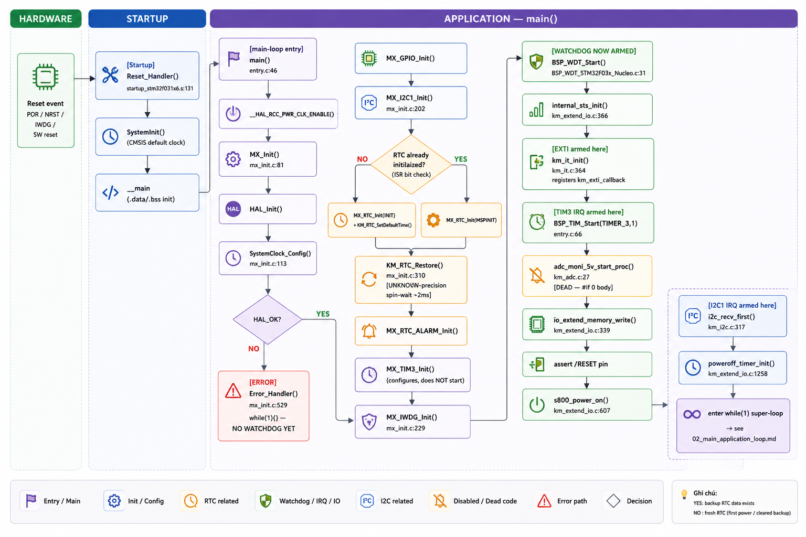
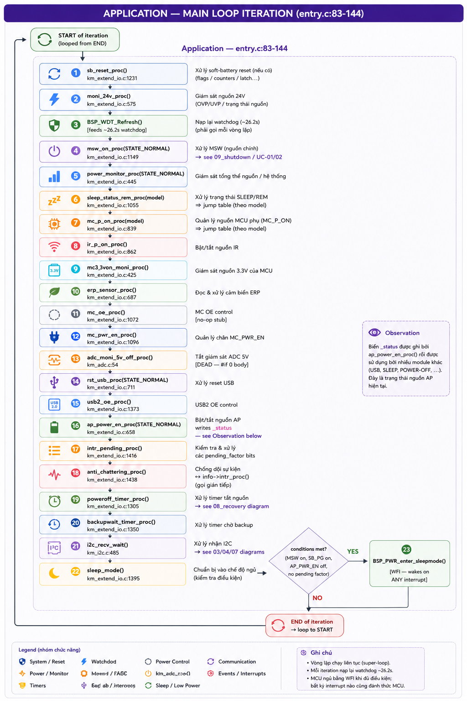
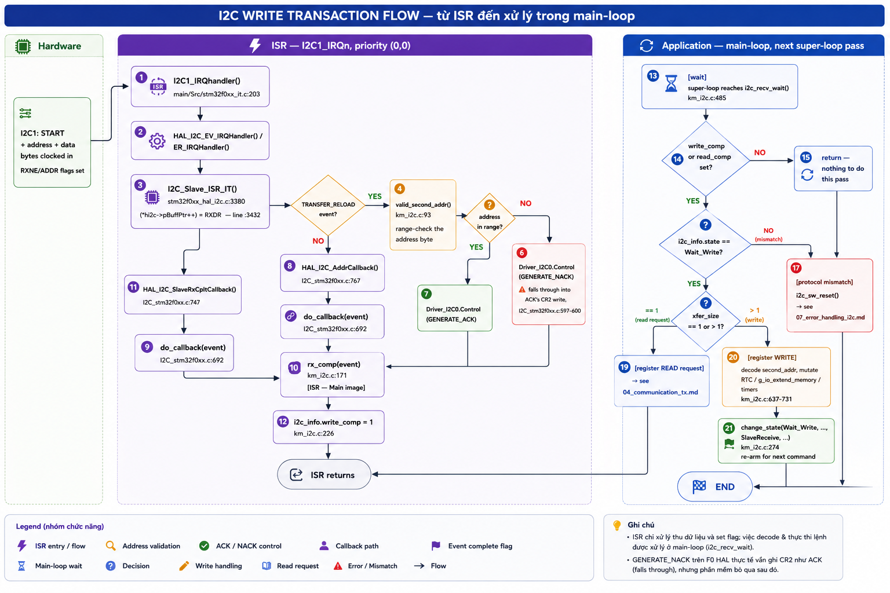
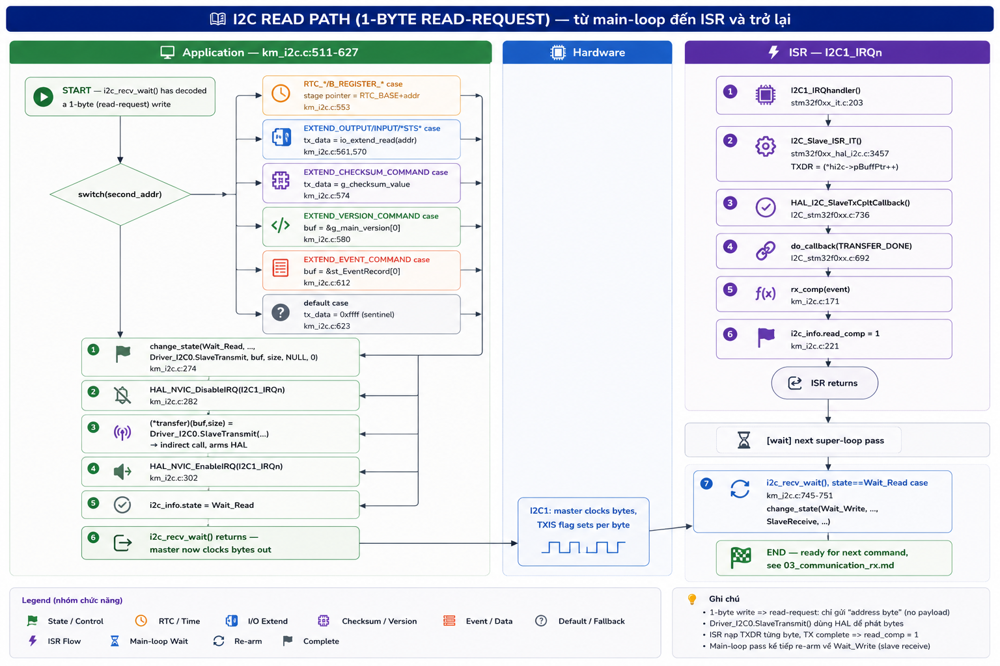
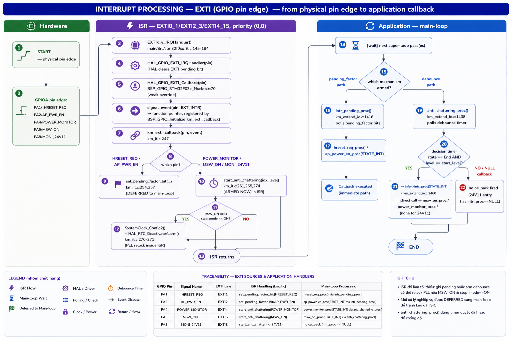
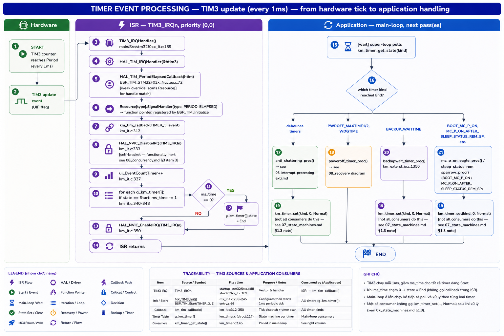
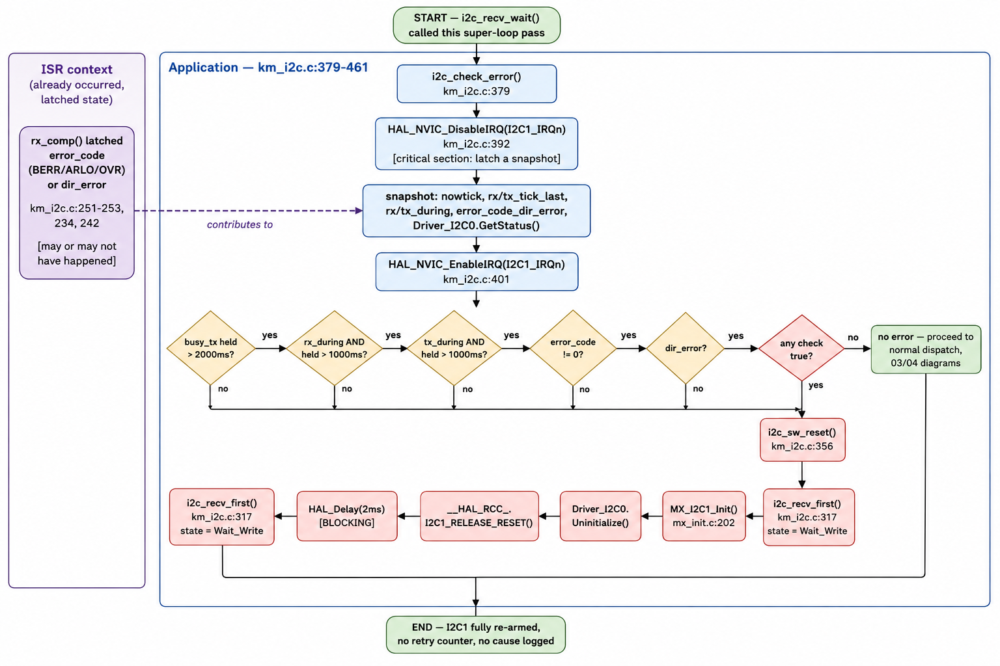
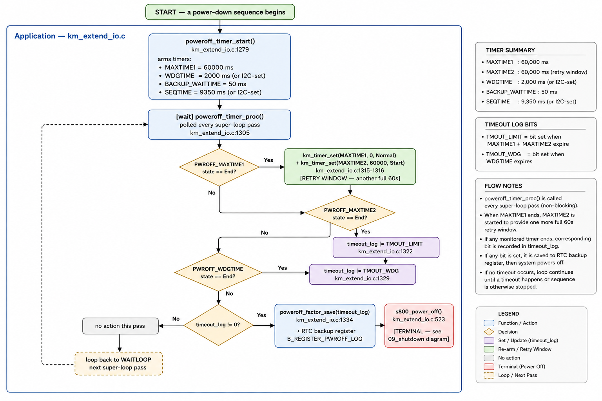
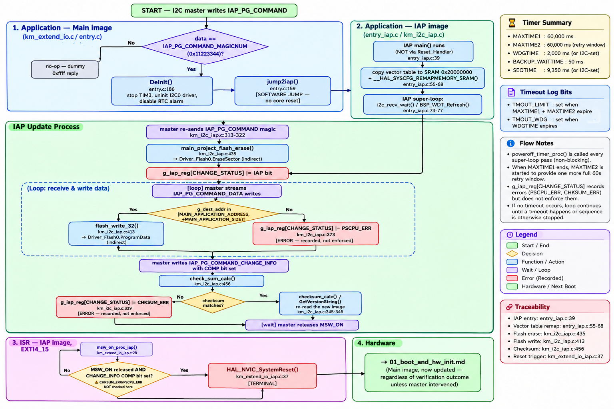
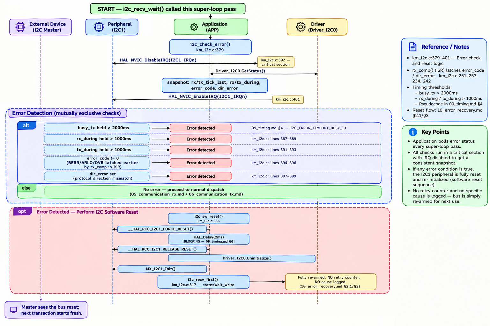

Reverse-engineering dossier · pscpu_s800
Toàn bộ tài liệu PS-CPU, gộp thành một tập
Hồ sơ dịch ngược firmware Power Sub-CPU của máy S800 — vi điều khiển giám sát nguồn chạy trước và quyết định khi nào SoC chính được cấp điện. Mọi khẳng định trong tập này đều truy được về file:line trong source thật; những gì không chứng minh được từ code đều được gắn nhãn thay vì suy đoán.
- MCU
- STM32F031C6Cortex-M0, 48 MHz
- Ảnh firmware
- 2 ảnhMain 0x08000000 · IAP 0x08005000
- RTOS
- Không cósuper-loop, xác nhận bằng grep
- Nhịp phần mềm
- 1 msTIM3 · SysTick 1 kHz
- Watchdog
- ≈26.2 sIWDG, LSI/256, reload 4095
- Giao tiếp
- I2C1 slaveđịa chỉ 122 / 124
Quy ước bằng chứng
[INFERRED] [HARDWARE ASSUMPTION] [UNKNOWN] [TERMINAL]Ghi chú nền tảng
Tài liệu tham chiếu có sẵn (tiếng Việt)Luồng khởi động PS-CPU
MFP_Study/PS-CPU/Flow/Flow-PS-CPU.md
1. PS-CPU có phải là bộ phận khởi động đầu tiên không?
Đúng. Nhìn vào kiến trúc mã nguồn thì PS-CPU (STM32F0xx, thư mục PS-CPU/pscpu_s800) là một vi điều khiển giám sát nguồn (Power Sub-CPU) độc lập, luôn có điện trước tiên và tự chạy firmware của chính nó ngay khi có điện — nó không phụ thuộc vào SoC chính S800 (Marvell AP806, chứa cụm ARM Cortex‑A72 "CA72").
Bằng chứng rõ nhất là trong vòng lặp chính, chính PS-CPU là bên quyết định khi nào S800 được cấp nguồn và được thoát reset:
- entry.c:74-75: PS-CPU chủ động giữ chân _RESET ở mức thấp (giữ S800 trong reset) rồi gọi s800_power_on().
BSP_GPIO_WritePin(_RESET_GPIO_Port,_RESET_Pin,GPIO_PIN_RESET); /* S800リセット */
s800_power_on(); /* S800電源ON */
km_extend_io.c:618-620: PS-CPU bậtSB_PWR_EN(nguồn cấp cho board S800) rồi mới khởi động timer 100 ms để sau đó mới nhả_RESET.
/* S800 power on */
BSP_GPIO_WritePin(SB_PWR_EN_GPIO_Port,SB_PWR_EN_Pin,GPIO_PIN_SET);
/* S800 reset release*/
km_timer_set(TYPE_Km_Timer_SB_RESET_RELEASE,100,TYPE_Km_Timer_Start); /* 100ms wait */
km_extend_io.c:1238(sb_reset_proc): chỉ khi nguồn SB tốt (SB_PG), 24V ổn định, công tắcMSW_ONbật, và timer 100 ms hết hạn thì PS-CPU mới nhả_RESET— lúc này AP806/S800 mới thực sự bắt đầu chạy BootROM của chính nó.
BSP_GPIO_WritePin(_RESET_GPIO_Port,_RESET_Pin,GPIO_PIN_SET);
km_timer_set(TYPE_Km_Timer_SB_RESET_RELEASE,0,TYPE_Km_Timer_Normal); /* フラグ初期化 */
//2019/10/08 Sky 【自動測定】起動イベントの通知 start.
/* LPPP起動 開始を通知 */
setEventRecord(THRD_EventRecord_LPPPStart);
Nói cách khác: S800/AP806 (và sau đó là Linux kernel trong Kernel/K-S800) không có điện, không thoát reset cho tới khi PS-CPU tự khởi động xong và chủ động cấp nguồn/nhả reset cho nó. File ap806.c bạn đang mở là bootloader chạy trên/cho AP806 ở giai đoạn sau (nạp DDR + ATF), tức là một tầng khởi động hoàn toàn khác, xảy ra sau khi PS-CPU đã cấp nguồn.
2. Luồng khởi động của PS-CPU
Sơ đồ tổng quát:
Cấp điện phần cứng
│
▼
Reset vector (startup_stm32f0xx.s) → SystemInit → main() [entry.c]
│
▼
MX_Init(): Clock / GPIO / I2C1 / RTC / TIM3 / IWDG
│
▼
Đọc model board, tính checksum FW, lấy version string
│
▼
Start Watchdog (IWDG) + init trạng thái nội bộ + timer 1ms
│
▼
S800 power-on sequence (giữ RESET, bật SB_PWR_EN)
│
▼
Vòng lặp vô hạn (state machine, chạy theo tick 1ms + ngắt EXTI)
│
├─ Nhả /RESET cho S800 khi điều kiện an toàn thỏa (sb_reset_proc)
├─ Bật MC_P_ON / IR_P_ON khi AP_PWR_EN từ CA72 xác nhận (mc_p_on_proc)
├─ Theo dõi công tắc nguồn, mất điện thoáng qua, 24V xả
├─ Đồng bộ trạng thái Sleep/ErP với host qua SLEEP_STATUS_REM
├─ Xử lý I2C (giao tiếp với S800/Linux sau khi nó đã boot)
└─ Sleep mode giữa các chu kỳ để tiết kiệm điện
Chi tiết từng bước (theo entry.c)
a) Khởi tạo phần cứng MCU — mx_init.c (MX_Init, dòng 81):
HAL_Init()+SystemClock_Config(): dùng HSI nội (16 MHz) qua PLL x12 → 48 MHz làm SYSCLK; I2C1 clock lấy từ HSI; RTC clock lấy từ LSE (thạch anh 32.768 kHz — để giữ giờ ngay cả khi mất nguồn chính, có pin backup).MX_GPIO_Init(): cấu hình toàn bộ chân điều khiển nguồn (SB_PWR_EN,MC_P_ON,IR_P_ON,_RESET,MC_PWR_EN,ERP_SENSOR_ON,_RST_SLP2,_USB2_OE...) là output và mặc định RESET (0); cấu hình các chân ngắt vào (_HRESET_REQ,AP_PWR_EN,POWER_MONITOR,MSW_ON,MONI_24V11) là input EXTI.MX_I2C1_Init(): PS-CPU đóng vai trò I2C slave (địa chỉ 122/124) — đây là kênh giao tiếp với board chính (LPPP/host) để đọc/ghi trạng thái I/O mở rộng, checksum, version, RTC... (phía Linux có driver tương ứng ởrtc-pscpu.c).- RTC init +
KM_RTC_Restore(): khôi phục giờ đã lưu backup register nếu có. MX_TIM3_Init(): tạo tick 1ms dùng cho toàn bộ software timer nội bộ (km_timer_*).MX_IWDG_Init(): cấu hình Independent Watchdog (prescaler 256) — sẽ được arm ở bước sau.
b) Nhận diện board và firmware — entry.c:53-60:
- get_model(): đọc chân MODEL_BIT0/MODEL_BIT1 để biết đây là dòng máy nào (Sparrow / Eagle...).
- checksum_calc() + GetVersionString(): tính checksum và chuẩn bị chuỗi version để host đọc qua I2C, dùng để xác minh tính toàn vẹn firmware.
/* 機種コード取得 */
model = get_model();
/* チェックサム値取得 */
g_checksum_value = checksum_calc();
/* 2018/05/15 edit by Sky-A.Yamaguchi [Eagle]制御構成変更No.33関連 PS-CPUバージョン長拡張 */
/* バージョン文字列取得 */
c) Bật watchdog & các module nội bộ — entry.c:63-70:
BSP_WDT_Start(): bắt đầu watchdog — nếu vòng lặp chính treo, PS-CPU tự reset.internal_sts_init(),km_it_init(): khởi tạo trạng thái nội bộ và cơ chế xử lý ngắt.BSP_TIM_Start(): bật timer 1ms.adc_moni_5v_start_proc(): bắt đầu giám sát điện áp 5V qua ADC.
d) Chuỗi cấp nguồn cho S800 — entry.c:74-77 & s800_power_on():
- Giữ
_RESET= 0 (S800 vẫn trong reset). s800_power_on(): kiểm traMSW_ON(công tắc nguồn cơ),POWER_MONITOR(nguồn AC/PSU tốt),MONI_24V11(24V đã xả hết từ lần trước) — nếu OK thì bậtSB_PWR_EN(cấp nguồn DC cho board S800) và khởi động timer 100ms để chuẩn bị nhả reset.i2c_recv_first(): sẵn sàng nhận lệnh I2C.
e) Vòng lặp vô hạn (state machine chính) — entry.c:83-131, chạy lặp liên tục, các bước đáng chú ý:
| Hàm | Vai trò |
|---|---|
sb_reset_proc() |
Khi SB power tốt + 24V ổn + MSW ON + timer 100ms hết → nhả _RESET, cho phép AP806 bắt đầu chạy BootROM riêng của nó |
moni_24v_proc() |
Theo dõi xả điện 24V để đảm bảo an toàn khi bật/tắt |
msw_on_proc / power_monitor_proc |
Xử lý công tắc nguồn vật lý và tín hiệu "power monitor" từ nguồn AC; có cơ chế fail-safe cho mất điện thoáng qua (瞬断) |
sleep_status_rem_proc(model) |
Đồng bộ tín hiệu Sleep/ErP với S800 (khác nhau giữa dòng Eagle/Sparrow) |
mc_p_on_proc(model) |
Khi AP_PWR_EN (do CA72/Linux đã boot xong xác nhận), _RESET đã nhả, nguồn SB/24V/MSW đều OK và timer boot ban đầu hết hạn → PS-CPU bật MC_P_ON và IR_P_ON (nguồn cho các khối "Main Controller"/"Image Reading" — tức các module ngoại vi in ấn/quét) |
ap_power_en_proc(STATE_NORMAL) |
Cập nhật trạng thái CA72 (CA72_ON/CA72_SLEEP/CA72_OFF) dựa trên chân AP_PWR_EN do phía Linux điều khiển |
mc3_3von_moni_proc, erp_sensor_proc, mc_oe_proc, mc_pwr_en_proc, rst_usb_proc, usb2_oe_proc |
Tuần tự bật/giám sát các rail và tín hiệu ngoại vi còn lại (3.3V, ERP sensor, USB reset/OE...) |
poweroff_timer_proc, backupwait_timer_proc |
Quản lý timer tắt nguồn có trật tự và cơ chế "backup" cho mất điện ngắn |
i2c_recv_wait() |
Xử lý lệnh I2C đến từ host (sau khi Linux trên S800 đã boot xong và bắt đầu giao tiếp) |
sleep_mode() |
Đưa MCU vào chế độ ngủ giữa các chu kỳ để tiết kiệm điện |
Bản đồ chân GPIO
MFP_Study/PS-CPU/GPIO/GPIO.md
(hình ảnh trong vault Obsidian: Pasted image 20260819153058.png — không kèm theo bản HTML này)
Nơi định nghĩa các chân GPIO này
Toàn bộ cặp macro <TênTínHiệu>_Pin / <TênTínHiệu>_GPIO_Port trong bảng của bạn được định nghĩa tại:
mxconstants.h — do STM32CubeMX sinh tự động từ file project PowerSubCPU.ioc (đây mới là "nguồn sự thật" gốc — nếu cần đổi chân, phải sửa trong CubeMX rồi generate lại, không nên sửa tay file này).
Đối chiếu từng dòng của bạn với file:
| Chân MCU | Macro trong mxconstants.h |
Dòng |
|---|---|---|
| PC13 | WAKEUP_Pin / WAKEUP_GPIO_Port (GPIOC) |
44-45 |
| PA1 | _HRESET_REQ_Pin (GPIOA) |
50-51 |
| PA2 | AP_PWR_EN_Pin (GPIOA) |
52-53 |
| PA4 | POWER_MONITOR_Pin (GPIOA) |
54-55 |
| PA5 | MSW_ON_Pin (GPIOA) |
56-57 |
| PB0 | IR_P_ON_Pin (GPIOB) |
60-61 |
| PB1 | ERP_SENSOR_ON_Pin (GPIOB) |
62-63 |
| PB2 | _RESET_Pin (GPIOB) |
64-65 |
| PB10 | _USB2_OE_Pin (GPIOB) |
66-67 |
| PB13 | MC_PWR_EN_Pin (GPIOB) |
70-71 |
| PA8 | MONI_24V11_Pin (GPIOA) |
76-77 |
| PA9 / PA10 | PA9_IN_Pin / PA10_IN_Pin (GPIOA) |
78-81 |
| PA11 | MC_PG_Pin (GPIOA) |
82-83 |
| PA13 | TMS_Pin (GPIOA) |
84-85 |
| PA15 | MC3_3VON_MONI_Pin (GPIOA) |
86-87 |
| PB3 | SB_PWR_EN_Pin (GPIOB) |
88-89 |
| PB4 | SB_PG_Pin (GPIOB) |
90-91 |
| PB5 | MC_P_ON_Pin (GPIOB) |
92-93 |
| PB8 | _DISCHG_Pin (GPIOB) |
94-95 |
| PB9 | _RST_SLP2_Pin (GPIOB) |
96-97 |
| ## Nơi cấu hình mode thực tế (input/output/EXTI/AF) cho các chân này |
Macro trên chỉ là tên số hiệu chân — chiều/kiểu chân thật sự được thiết lập ở 2 nơi:
-
Chân GPIO thường (input/output/EXTI) →
mx_init.c, hàmMX_GPIO_Init()(mx_init.c:419-518): -_HRESET_REQ→GPIO_MODE_IT_FALLING(ngắt cạnh xuống) -AP_PWR_EN,POWER_MONITOR,MSW_ON,MONI_24V11→GPIO_MODE_IT_RISING_FALLING(ngắt cả 2 cạnh) -IR_P_ON,ERP_SENSOR_ON,_RESET,_USB2_OE,SLEEP_STATUS_REM_EG,MC_PWR_EN,SB_PWR_EN,MC_P_ON,_RST_SLP2→GPIO_MODE_OUTPUT_PP, mặc định RESET (0) -MODEL_BIT0/1,SB_PG,_DISCHG,MC_PG,MC3_3VON_MONI→GPIO_MODE_INPUTthường (không ngắt) -PA9_IN,PA10_IN→GPIO_MODE_INPUT+ pull-down (dù chân này hỗ trợ chức năng USART1_TX/RX theo datasheet, thiết kế này không dùng UART, chỉ để GPIO input dự phòng) -PF0_IN,PF1_IN→GPIO_MODE_INPUT(dù có khả năng làmRCC_OSC_IN/OUTcho thạch anh ngoài, mạch này dùng HSI nội nên 2 chân này bỏ trống, cấu hình input thường) -
Chân chức năng đặc biệt (Alternate Function) →
stm32f0xx_hal_msp.c: - PB6/PB7 (I2C1_SCL/I2C1_SDA) → cấu hìnhGPIO_AF1_I2C1trongHAL_I2C_MspInit()(stm32f0xx_hal_msp.c:76-88), được gọi tự động từMX_I2C1_Init()- PC14/PC15 (OSC32_IN/OUT) → không phải GPIO, được cấp cho LSE 32.768kHz quaRCC_OscInitStruct.LSEState = RCC_LSE_ONtrongSystemClock_Config()(mx_init.c:120-122), dùng làm nguồn clock cho RTC - PA13/PA14 (SWDIO/SWCLK) → cổng debug SWD, do phần cứng MCU dành riêng mặc định, không quaGPIO_Initcủa app
Hai điểm lệch giữa bảng bạn đưa và code hiện tại (đáng lưu ý)
- PA11: bảng bạn ghi
SB_PG, nhưng code định nghĩa làMC_PG(mxconstants.h:82-83). Tín hiệuSB_PGthật sự nằm ở PB4 (mxconstants.h:90-91). Có thể tài liệu spec của bạn đang dùng số hiệu khác, hoặc đây là chỗ tài liệu/code chưa đồng bộ tên gọi — nên đối chiếu lại với đặc tả điện gốc. - PB9: bảng ghi
/RST_USB, code định nghĩa là_RST_SLP2. Về mặt logic thì đúng là cùng một chân đượcrst_usb_proc()điều khiển làm reset USB (xemkm_extend_io.c:711-729), nhưng tên biến trong code vẫn giữ nguyên gốc_RST_SLP2(có thể là tên lịch sử chưa đổi khi đổi mục đích sử dụng chân).
Ghi chú thêm
WAKEUP_Pin(PC13) chỉ được định nghĩa trongmxconstants.hnhưng không thấy dùng ở bất kỳ file .c nào trongmain/App— có vẻ là chân dự phòng/chưa dùng trong bản build hiện tại.- File
km_adc.cbạn đang mở: cả hai hàmadc_moni_5v_start_proc()vàadc_moni_5v_off_proc()hiện đang bị bọc trong#if 0(km_adc.c:29-39) — tức chức năng đo 5V qua ADC đã bị vô hiệu hóa (theo ghi chú "AD変換不要になったため" — "không còn cần chuyển đổi AD nữa"), nên trong bảng pinout của bạn không thấy chân ADC nào là hợp lý. - Có một bộ
mxconstants.hriêng cho target IAP (bootloader cập nhật FW) tạiiap/Inc/mxconstants.h, chỉ định nghĩaMSW_ON_PinvàTMS_Pin— vì bootloader IAP chỉ cần tối thiểu, không cần toàn bộ chân sequencing nguồn.
Tín hiệu input MONI_24V11 (PA8)
a) Lớp phần cứng/ngắt — cấu hình GPIO_MODE_IT_RISING_FALLING (mx_init.c:442-446) → mỗi lần đổi mức, ngắt EXTI gọi km_exti_callback():
case MONI_24V11_Pin: // km_it.c:263-266
level = BSP_GPIO_ReadPin(MONI_24V11_GPIO_Port, MONI_24V11_Pin);
start_anti_chattering(TYPE_Km_AC_Idx_24V11_MONI, level); // chỉ khởi động bộ lọc rung, KHÔNG có callback xử lý ngay
Khác với MSW/POWER_MONITOR (có intr_proc riêng), pin này trong bảng anti_chattering_info[] (km_it.c:43-53) có intr_proc = NULL — nghĩa là nó chỉ chống rung (debounce), còn xử lý thật diễn ra ở vòng lặp chính bằng polling.
/* 24V11_MONI */
, {
AC_STOP_STATE /* status */
, GPIO_PIN_RESET /* start_level */
, GPIO_PIN_RESET /* prev_level */
, NULL /* intr_proc */
, MONI_24V11_GPIO_Port /* portno (const) */
, MONI_24V11_Pin /* pinno (const) */
, TYPE_Km_Timer_Anti_Chattering_24V /* timer_kind (const) */
, KM_ANTI_CHATTER_24V11_MONI /* decision_time (const) */
b) Vòng lặp chính — moni_24v_proc() (km_extend_io.c:575-591): đây là state machine hiện thực đúng mô tả của bạn — khi SB_PG=High và MONI_24V11=Low, khởi động timer 500ms (TYPE_Km_Timer_MONI_24V11_OFF) trước khi coi là "xả xong".
void moni_24v_proc(void)
{
if(g_power_on_flg == POWER_ON_FLG_START){ /* 電源ONまたは再起動状態 */
if((BSP_GPIO_ReadPin(SB_PG_GPIO_Port,SB_PG_Pin) &&
(!IS_CHECKING_CHATTERING(TYPE_Km_AC_Idx_24V11_MONI) && BSP_GPIO_ReadPin(MONI_24V11_GPIO_Port,MONI_24V11_Pin))) ||
(!IS_CHECKING_CHATTERING(TYPE_Km_AC_Idx_POWER_MONI) && !BSP_GPIO_ReadPin(POWER_MONITOR_GPIO_Port,POWER_MONITOR_Pin))){ /* 24V放電確認 */
g_24v_check_flg_off = STATE_ACTIVE; /* 24V放電チェック開始 */
}
}
if(g_24v_check_flg_off == STATE_ACTIVE || IS_CHECKING_CHATTERING(TYPE_Km_AC_Idx_POWER_MONI) || IS_CHECKING_CHATTERING(TYPE_Km_AC_Idx_24V11_MONI)){
if( BSP_GPIO_ReadPin(SB_PG_GPIO_Port,SB_PG_Pin) &&
!BSP_GPIO_ReadPin(MONI_24V11_GPIO_Port,MONI_24V11_Pin)){
km_timer_set(TYPE_Km_Timer_MONI_24V11_OFF,500,TYPE_Km_Timer_Start); /* 500ms wait */
g_24v_check_flg_off = STATE_NONACTIVE;
}
}
}
c) Chặn cấp nguồn/MC_P_ON khi chưa xả xong — macro _MC_P_ON_OK() / _MC_PWR_EN_OK() (km_extend_io.c:735-743) bắt buộc MONI_24V11=Low mới cho phép mc_p_on_proc() (km_extend_io.c:766-826) và mc_pwr_en_proc() (km_extend_io.c:1096-1124) thực sự kéo chân MC_P_ON/IR_P_ON/MC_PWR_EN lên High — đúng chính xác yêu cầu "nếu xả chưa xong thì chặn xuất, chờ xả xong mới xuất".
#define _MC_P_ON_OK() BSP_GPIO_ReadPin(AP_PWR_EN_GPIO_Port,AP_PWR_EN_Pin) \
&& BSP_GPIO_ReadPin(_RESET_GPIO_Port,_RESET_Pin) \
&& BSP_GPIO_ReadPin(SB_PG_GPIO_Port,SB_PG_Pin) \
&& (!IS_CHECKING_CHATTERING(TYPE_Km_AC_Idx_24V11_MONI) && !BSP_GPIO_ReadPin(MONI_24V11_GPIO_Port,MONI_24V11_Pin)) \
&& (!IS_CHECKING_CHATTERING(TYPE_Km_AC_Idx_POWER_MONI) && BSP_GPIO_ReadPin(POWER_MONITOR_GPIO_Port,POWER_MONITOR_Pin)) \
&& ((!IS_CHECKING_CHATTERING(TYPE_Km_AC_Idx_MSW) \
&& BSP_GPIO_ReadPin(MSW_ON_GPIO_Port,MSW_ON_Pin)) || TYPE_Km_Timer_Start == km_timer_get_state(TYPE_Km_Timer_PWROFF_WDGTIME)) \
)
d) Điều kiện bật nguồn S800 lần đầu — s800_power_on() (km_extend_io.c:607-644) yêu cầu MONI_24V11=Low mới bật SB_PWR_EN; và sb_reset_proc() (km_extend_io.c:1231-1245) cũng yêu cầu điều kiện này trước khi nhả /RESET — khớp với "chờ xả hoàn tất rồi mới bật nguồn cho S800".
e) Xuất ra ngoài qua I2C: bit INPUT_EXTEND_24V11_MONI_BIT trong bảng io_extend[] (km_extend_io.c:59) → Linux đọc được (read-only) qua lệnh I2C EXTEND_INPUT_COMMAND.
Tín hiệu input SB_PG (PB4 trong code)
Được dùng làm điều kiện gate ở gần như mọi state machine nguồn:
| Hàm | Vai trò của SB_PG |
|---|---|
moni_24v_proc() (:578,585) |
Chỉ bắt đầu theo dõi xả 24V khi SB_PG=High (khối AON đã có nguồn ổn định) |
_MC_P_ON_OK()/_MC_PWR_EN_OK() (:738) |
Bắt buộc SB_PG=High mới cho phép bật MC_P_ON/IR_P_ON/MC_PWR_EN |
mc_pwr_en_proc() (:1100-1101) |
Cần cả AP_PWR_EN và SB_PG cùng High mới bật MC_PWR_EN |
msw_on_proc() (:1178,1196,1212) |
Nhiều nhánh: nếu MSW bật + 24V đã xả + SB_PG=Low → System Reset; nếu MSW tắt + SB_PG=Low → vào Stop-mode tiết kiệm điện; nếu MSW bật nhưng SB_PG=Low → gọi lại s800_power_on() (retry vì nguồn SB chưa lên dù đã yêu cầu) |
sb_reset_proc() (:1235) |
Điều kiện bắt buộc để nhả /RESET cho S800 |
sleep_mode() (:1395-1404) |
Cần SB_PG=High (cùng MSW ON, AP_PWR_EN Low, không ngắt chờ) để MCU vào chế độ Sleep |
→ Đây chính là tín hiệu "chốt an toàn" trung tâm: PS-CPU không dám thao tác bất kỳ tín hiệu cấp nguồn/reset nào cho tới khi khối AON thực sự báo Power Good.
Tín hiệu input MC3.3VON_MONI (PA15)
Đây là tín hiệu duy nhất trong 3 tín hiệu này hiện KHÔNG có logic xử lý thật, đúng như mô tả của bạn:
- Trong
io_extend[](km_extend_io.c:60), nó vẫn được liệt kê để đọc và expose ra I2C (EXTEND_INPUT_COMMAND), nên Linux vẫn đọc được trạng thái High/Low bất cứ lúc nào. - Nhưng hàm xử lý riêng của nó,
mc3_3von_moni_proc()(km_extend_io.c:415-429), được gọi mỗi vòng lặp chính trongentry.cnhưng thân hàm trống rỗng:
void mc3_3von_moni_proc(void)
{
return;
/* 2017/05/01 K.hirota 3.3Vモニタで制御する信号が無くなったため処理を削除 */
/* = "Đã xóa xử lý vì không còn tín hiệu nào cần điều khiển từ giám sát 3.3V" */
}
→ Khớp 100% với ghi chú của bạn: PS-CPU chỉ đọc và giữ chỗ tín hiệu này (dự phòng cho khối mech-con trong tương lai), chưa có bất kỳ điều khiển/gate nào dựa trên nó ở thời điểm hiện tại.
Tín hiệu output IR_P_ON (PB0)
- Boot-time: đặt High cùng lúc với
MC_P_ONkhi timerTYPE_Km_Timer_BOOT_MC_P_ONhết hạn (km_extend_io.c:777-785) — không phải "đồng thời với /RESET" theo nghĩa tức thời, mà là sau khi/RESETđã nhả (điều kiện_MC_P_ON_OK()bắt buộc_RESET=High) và sau một khoảng trễ (320ms ở Eagle, tính từ khiMC_PWR_ENbật). - POWER_MONITOR=Low → Low ngay:
km_extend_io.c:451-452— khớp chính xác. - Điều khiển theo điện văn (bit0):
ir_p_on_proc()(km_extend_io.c:862-877) — chỉ đặt High khi bit0 được set VÀ đồng thờiAP_PWR_EN,/RESET,POWER_MONITORHigh, (MSW_ONHigh hoặc đang trong timer chờ tắt nguồn), vàMC_P_ONđã High. - Chờ 24V xả (
MONI_24V11=Low): không kiểm tra trực tiếp trongir_p_on_proc(), nhưng gián tiếp đảm bảo vì hàm yêu cầuMC_P_ONđã High trước — màMC_P_ONtự nó đã bị_MC_P_ON_OK()chặn cho tới khiMONI_24V11=Low(km_extend_io.c:739).
Tín hiệu output ERP_SENSOR_ON (PB1)
Khớp chính xác 100% với tài liệu — erp_sensor_proc() (km_extend_io.c:687-698):
if( bit1==0 && AP_PWR_EN==Low ) → Low
else → High
- Tín hiệu ngắt nguồn cho các cảm biến liên quan đến engine (DOOR_OPEN, DEST_EDH, CLOSE).
- Ở trạng thái ErP lot.6 và ở trạng thái SLEEP2 có thiết lập tắt cảm biến, ERP_SENSOR_ON xuất mức Low, ngoài ra xuất mức High.
- Vì PS-CPU không nhận biết trạng thái tiết kiệm điện nên nó phán đoán dựa trên tín hiệu AP_PWR_EN.
- Khi AP_PWR_EN ở mức Low và điện văn (2ndĐịa chỉ 0x70: PB1) ở mức Low, ERP_SENSOR_ON xuất mức Low.
- Khi AP_PWR_EN ở mức High hoặc điện văn (2ndĐịa chỉ 0x70: PB1) ở mức High, ERP_SENSOR_ON xuất mức High.
Tín hiệu /RESET
Ba thời điểm điều khiển đúng như tài liệu, nhưng nằm rải ở 3 hàm khác nhau:
- Ngay sau khởi động PS-CPU:
entry.c:74— set Low tường minh trước cảs800_power_on(). - Nhả reset sau khi SB_PWR_EN High:
sb_reset_proc()(km_extend_io.c:1231-1245) — chỉ set High khiMSW_ON,!MONI_24V11,SB_PGđều tốt VÀ timer 100ms (TYPE_Km_Timer_SB_RESET_RELEASE, khởi động trongs800_power_on()) đã hết. /HRESET_REQ=Low→ Reset ngay:hreset_req_proc()(km_extend_io.c:489-500) gọis800_power_off(), trong đó set/RESET=Low(km_extend_io.c:543).
Tín hiệu SB_PWR_EN (PB3)
- MSW_ON=High → High: qua
s800_power_on()(km_extend_io.c:607-644), điều kiện gồmMSW_ON,POWER_MONITOR=High,MONI_24V11=Low. - /HRESET_REQ=Low → Low: qua
s800_power_off()(km_extend_io.c:546). - Chờ 0.5s sau khi 24V xả xong: cơ chế này nằm ở
moni_24v_proc()(km_extend_io.c:575-591) — set timerTYPE_Km_Timer_MONI_24V11_OFF500ms khi phát hiện xả xong; vàpower_monitor_proc()chỉ gọis800_power_on()sau khi timer đóEnd(km_extend_io.c:467-472). Lưu ý: đường gọis800_power_on()trực tiếp từentry.c/msw_on_proc()chỉ kiểm tra mức tức thời củaMONI_24V11chứ không tường minh chờ đủ 500ms — độ trễ 500ms được đảm bảo chủ yếu qua nhánhpower_monitor_proc().
Tín hiệu điều khiển nguồn cho khối AON của S800.
Khi phát hiện MSW_ON ở mức High, xuất SB_PWR_EN High.
Khi phát hiện /HRESET_REQ ở mức Low, xuất SB_PWR_EN Low.
Tuy nhiên, là hành vi chung cho cả hai điều kiện kích hoạt trên, nếu MONI_24V11 đang ở mức High thì chờ MONI_24V11 xuống Low (hoàn tất xả 24V), MONI_24V11 Low rồi 0.5 giây sau mới xuất SB_PWR_EN High.
Tín hiệu MC_P_ON (PB5)
Cấu trúc giống hệt IR_P_ON nhưng tách theo dòng máy qua bảng con trỏ hàm mc_p_on_proc() (km_extend_io.c:839-843):
- Eagle —
mc_p_on_eagle_proc()(km_extend_io.c:763-789): điều khiển theo điện văn bit5 khi ở trạng thái NORMAL; boot lần đầu set High khi timerBOOT_MC_P_ON(320ms sauMC_PWR_EN) hết hạn. - Sparrow —
mc_p_on_sparrow_proc()(km_extend_io.c:801-827): dùng thêm timerMC_P_ON_AFTER_SLEEP_STATUS_REM_SP. - POWER_MONITOR=Low → Low ngay:
km_extend_io.c:449-450. - Chờ
MONI_24V11=Low: đảm bảo bởi macro_MC_P_ON_OK()(km_extend_io.c:735-742) — khớp đúng tài liệu.
[!NOTE] Giải thích - Tín hiệu điều khiển relay nguồn cho MC (khối MechaCon). - Khi khởi động, đồng thời với
/RESET, đặtMC_P_ONlên High - Khi phát hiệnPOWER_MONITORở mức Low, lập tức đặtMC_P_ONxuống Low. - Ngoài hai trường hợp trên, điều khiển theo điện văn (2ndĐịa chỉ 0x70: PB5). - Tuy nhiên, khi đặt lên High,24V11_MONIchờ mức Low (trạng thái đã xả 24V) rồi mới đặt lên High.
Tín hiệu /DISCHG (PB8)
Đúng như tài liệu ghi "Không có kế hoạch sử dụng" — grep toàn bộ source chỉ thấy một lần duy nhất chân này được ghi, trong extend_output_init():
BSP_GPIO_WritePin(_DISCHG_GPIO_Port, _DISCHG_Pin, GPIO_PIN_RESET); // km_extend_io.c:409
Ngoài ra không có hàm _proc() riêng, không đọc/ghi qua I2C — chân này bị giữ cố định ở mức Low vĩnh viễn, hoàn toàn chưa được kích hoạt chức năng.
Tín hiệu /RST_SLP2 (PB9) — tên gọi thực tế trong code là "RST_USB"
⚠️ Sai lệch cần lưu ý: tài liệu bạn đưa ghi điện văn điều khiển tín hiệu này ở "2ndĐịa chỉ 0x70: PB5", nhưng theo định nghĩa bit thực tế (km_extend_io.h:36): OUTPUT_EXTEND_RST_SLP2_BIT = 9. Bit5 đã là của MC_P_ON (mục 5) — nhiều khả năng đây là lỗi copy-paste trong tài liệu gốc, bit đúng phải là PB9.
Logic thực tế — rst_usb_proc() (km_extend_io.c:711-729):
if(AP_PWR_EN==High && bit9==1) → /RST_SLP2 = High
else → /RST_SLP2 = Low
Khớp đúng nội dung mô tả (chỉ khác số bit).
[!NOTE] Giải thích - Tín hiệu reset cho các linh kiện ngoại vi của AP. - Vì các ngoại vi của AP không có reset từ bên ngoài nên PS-CPU thực hiện việc reset các linh kiện ngoại vi của AP. - Điện văn (2ndĐịa chỉ 0x70: PB5) ở mức Low hoặc khi phát hiện
AP_PWR_ENLow, xuất/RST_SLP2ở mức Low. - Điện văn (2ndĐịa chỉ 0x70: PB5) ở mức High vàAP_PWR_ENHigh thì xuất/RST_USBHigh.
Tín hiệu /USB2_OE (PB10)
Tài liệu ghi "T.B.D" nhưng code đã có hành vi mặc định thực tế — usb2_oe_proc() (km_extend_io.c:1373-1382):
- Mặc định:
/USB2_OEtự động bám nghịch đảo theo/RST_SLP2(RST_SLP2 High → USB2_OE Low; RST_SLP2 Low → USB2_OE High). - Nếu Linux từng ghi trực tiếp bit này qua
EXTEND_OUTPUT_HIGH/LOW_COMMAND, cờ nội bộis_usb2_oe_from_main_cpu_ctrlđược set (km_extend_io.c:296-306) → từ đóusb2_oe_proc()ngừng tự động điều khiển, để quyền hoàn toàn cho S800.
Đặc tả chưa xác định (T.B.D *Sẽ được mô tả sau khi đặc tả xử lý proxy cho wireless LAN được quyết định(9/Edự kiến))
Tín hiệu MC_PWR_EN (PB13)
mc_pwr_en_proc() (km_extend_io.c:1096-1124):
- Mức output thực tế phụ thuộc
AP_PWR_EN && SB_PG(không kiểm traMONI_24V11trực tiếp ở bước xuất mức). - Điều kiện
MONI_24V11=Lowđược đảm bảo gián tiếp qua_MC_PWR_EN_OK()(bí danh của_MC_P_ON_OK()) — chỉ dùng khi PS-CPU tự set bit này lúc boot (nhánh Eagle, dòng 1113-1121); còn khi tắt nguồn thì bit này bị xoá về 0 thông quaextend_output_init()(giá trị mặc định bit12=0) trongs800_power_off(). MC_PWR_ENvàMC_P_ONcùng lúc: đúng — cả hai đều được set trong cùng khối code khi timerBOOT_MC_P_ONhết hạn (km_extend_io.c:781-784).
[!NOTE] Giải thích - Tín hiệu điều khiển nguồn cho các IC xung quanh MC (khối MechaCon). - Khi phát hiện
MONI_24V11ở mức Low, xuấtMC_PWR_ENLow. -MC_PWR_ENHigh được xuất ra đồng thời vớiMC_P_ONHigh.
Tín hiệu WAKEUP (PC13)
Khớp hoàn toàn với mô tả — xác nhận qua PowerSubCPU.ioc:191-195:
PC13.Mode=AlarmA_RoutedAF
PC13.Signal=RTC_OUT_ALARM
Chân này được CubeMX cấu hình là Alternate Function nối cứng phần cứng tới đầu ra Alarm A của khối RTC (hrtc.Init.OutPut = RTC_OUTPUT_ALARMA tại mx_init.c:252), không hề xuất hiện lệnh BSP_GPIO_WritePin/HAL_GPIO_Init nào cho WAKEUP_Pin trong toàn bộ main/App hay MX_GPIO_Init(). Đúng như comment lịch sử để lại trong code (2016/10/13, 2017/05/01): "Alerm割り込みがそのままWAKEUPとして出力されるためI/Oで制御しない" = "vì ngắt Alarm được xuất trực tiếp ra làm WAKEUP nên không điều khiển qua I/O". Việc set thời gian báo thức (RTC_ALRMAR) được S800 ghi trực tiếp qua các lệnh I2C RTC_ALRMAR_CMD (đã phân tích ở phần I2C trước) — khớp với "Phía S800 sẽ trực tiếp điều khiển RTC".
[!NOTE] Giải thích - Tín hiệu khởi động do PS-CPU phát ra, gửi tới AP của S800. - Khi nhận được ngắt từ RTC tích hợp trong PS-CPU, WAKEUP High được xuất ra. - Vì tín hiệu này được nối trực tiếp tới ngắt RTC Alarm tích hợp trong PS-CPU nên phần mềm PS-CPU không can thiệp. - Phía S800 sẽ trực tiếp điều khiển RTC. - *Các ngắt Wakeup khác trong S72/73 do LPPP điều khiển.
Tín hiệu AP_PWR_EN
1. Định nghĩa & cấu hình phần cứng
- Chân PA2, macro
AP_PWR_EN_Pin/AP_PWR_EN_GPIO_Port(mxconstants.h:52-53) - Cấu hình
GPIO_MODE_IT_RISING_FALLING— ngắt cả 2 cạnh (mx_init.c:442-446) - Cũng được liệt kê trong bảng
io_extend[]với bitINPUT_EXTEND_AP_PWR_EN_BIT(km_extend_io.c:63) → Linux/LPPP có thể tự đọc lại trạng thái chân này qua I2C (EXTEND_INPUT_COMMAND) để xác nhận.
2. Đường xử lý ngắt
Khác với MSW_ON/POWER_MONITOR/MONI_24V11 (được lọc rung qua start_anti_chattering()), AP_PWR_EN đi thẳng qua cơ chế pending-factor (km_it.c:256-257):
case AP_PWR_EN_Pin:
set_pending_factor_bit(TYPE_Km_PFB_AP_PWR_EN);
rồi được tiêu thụ ở vòng lặp chính qua intr_pending_proc() (km_extend_io.c:1416-1426) → gọi ap_power_en_proc(STATE_INT).
3. Hàm trung tâm — ap_power_en_proc() (km_extend_io.c:658-674)
Đây là nơi thiết lập trạng thái CA72 (set_ca72_status()) mà rất nhiều module khác trong PS-CPU đọc lại:
STATE_INT (từ ngắt, khi AP_PWR_EN vừa đổi mức):
rst_usb_proc(STATE_INT); // xử lý luôn /RST_SLP2
g_first_power_on = NOMAL; // đánh dấu đã qua pha khởi động đầu
set_ca72_status(CA72_ON); // AP_PWR_EN đổi mức ⇒ coi là CA72 đã "sống"
STATE_NORMAL (gọi mỗi vòng lặp, từ entry.c):
if AP_PWR_EN == Low:
set_ca72_status(CA72_SLEEP); // AP đang ở DeepSleep/ErP
Trạng thái CA72_ON/CA72_SLEEP/CA72_OFF này chính là dữ liệu nền cho get_ca72_status() mà chúng ta đã phân tích ở km_ca72_status.c trước đây.
4. Các nơi khác dùng AP_PWR_EN để ra quyết định
| Hàm | Vai trò của AP_PWR_EN |
|---|---|
erp_sensor_proc() (:690-691, đúng đoạn bạn chọn) |
ERP_SENSOR_ON=Low chỉ khi bit điện văn=0 và AP_PWR_EN=Low — đây là phần bạn đã có trong tài liệu |
rst_usb_proc() (:711-729) |
/RST_SLP2 chỉ lên High khi AP_PWR_EN=High — tức PS-CPU chỉ nhả reset cho ngoại vi AP sau khi biết AP đã bật |
_MC_P_ON_OK()/_MC_PWR_EN_OK() macro (:735-742) |
Là điều kiện đầu tiên trong macro — MC_P_ON, IR_P_ON, MC_PWR_EN đều không thể bật nếu AP_PWR_EN chưa High (comment :759: "MC/IR_P_ON, MC_PWR_ENはAP_PWR_ENがONになってからONする" = "chỉ bật sau khi AP_PWR_EN đã ON") |
ir_p_on_proc() (:862-877) |
Điều kiện bắt buộc để duy trì IR_P_ON=High ở trạng thái vận hành bình thường |
sleep_status_rem_eagle/sparrow_proc() (:890-1043) |
So sánh prev_status/cur_status (lấy từ get_ca72_status(), vốn do AP_PWR_EN cập nhật) để phát hiện AP chuyển ON↔SLEEP, từ đó điều khiển SLEEP_STATUS_REM — đây là cơ chế DeepSleep/ErP |
mc_pwr_en_proc() (:1100-1101) |
MC_PWR_EN chỉ High khi AP_PWR_EN && SB_PG đều High |
msw_on_proc() (:1182-1188) |
Nếu tắt công tắc (MSW_ON→Low) mà AP_PWR_EN vẫn Low (AP chưa kịp bật) và không ở Sleep2/ErP → coi là lỗi tắt máy giữa lúc đang khởi động (PWROFF_FACTOR_BOOTING_OFF) → cắt nguồn ngay lập tức, không chờ tuần tự tắt mềm |
sleep_mode() (:1399) |
AP_PWR_EN=Low là một trong các điều kiện để chính PS-CPU vào chế độ Sleep (STM32 STOP mode) tiết kiệm điện — chỉ ngủ khi biết chắc AP cũng đang ngủ |
Event log (THRD_EventRecord_ApLowDet/ApHighDet/..., :75-78) |
Ghi log thời điểm chuyển mức của AP_PWR_EN phục vụ đo thời gian boot/sleep tự động |
Tóm lại
AP_PWR_EN không chỉ đơn thuần là công tắc cho ERP_SENSOR_ON như tài liệu bạn trích mô tả (mục 5.2.2.2) — đó chỉ là một trong hơn 10 nơi sử dụng tín hiệu này. Về bản chất, đây là tín hiệu báo hiệu chính từ LPPP/AP806 cho PS-CPU biết "khối AP đang thức hay đang ngủ", và toàn bộ chuỗi bật nguồn ngoại vi (MC_P_ON, IR_P_ON, MC_PWR_EN, /RST_SLP2), cơ chế DeepSleep/ErP (SLEEP_STATUS_REM), cơ chế bảo vệ khi tắt máy giữa chừng, và cả việc PS-CPU tự vào chế độ ngủ — đều phụ thuộc trực tiếp hoặc gián tiếp vào trạng thái của chân này. Tài liệu bạn có khả năng chỉ trích một mục nhỏ (5.2.2.2) trong một đặc tả lớn hơn mô tả đầy đủ các vai trò này.
Tập lệnh I2C
MFP_Study/PS-CPU/I2C/I2C-Command.md
1. Cấu trúc khung truyền (transport layer)
PS-CPU không dùng mô hình I2C register map chuẩn — nó tự định nghĩa một giao thức "2nd-address" nằm trong buffer 16 byte:
Byte 0 : 2nd_addr (địa chỉ lệnh, PHẢI LÀ SỐ CHẴN — số lẻ bị NACK ngay)
Byte 1..4 : data (0-4 byte, LSB trước — ghép thành uint32 w_data)
- Đọc (Read): Master gửi 1 byte
2nd_addr→ PS-CPU trả về dữ liệu tương ứng (km_i2c.c:510-626). - Ghi (Write): Master gửi
2nd_addr+ tối đa 4 byte data → PS-CPU giải mã theo2nd_addr(km_i2c.c:629-732). - Mỗi thanh ghi 32-bit được chia làm 2 "lệnh" 16-bit: địa chỉ gốc
Xđọc nửa thấp,X+2(hậu tố_2) đọc nửa cao — vì đây là do STM32F0's I2C driver truyền 2 byte/lần (COMMAND_TX_SIZE = 2). valid_second_addr()(km_i2c.c:93-156) kiểm tra địa chỉ hợp lệ ngay ở mức ACK/NACK phần cứng.- Có cơ chế tự phục hồi: nếu timeout gửi/nhận (1-2s) hoặc lỗi bus (BERR/ARLO/OVR) hoặc sai hướng truyền →
i2c_sw_reset()reset cứng khối I2C1 (km_i2c.c:379-461).
2. Bảng lệnh (command map) theo nhóm
| Nhóm | Địa chỉ (km_i2c.h) |
Chiều | Ý nghĩa |
|---|---|---|---|
| RTC | 0x00–0x5E (RTC_TR/DR/CR/ISR/PRER/WUTR/ALRMAR/WPR/SSR/…/BKP0-2R) |
R/W | Truy cập trực tiếp vào thanh ghi RTC vật lý bên trong PS-CPU. S800 không có RTC pin-backup nên dùng RTC của PS-CPU làm đồng hồ hệ thống (driver Linux: rtc-pscpu.c) |
| B-register | B_REGISTER_MCIR = BKP3R, B_REGISTER_PWROFF_LOG = BKP3R_2 |
R/W | Dùng vùng backup-register (pin nuôi) của RTC để lưu: cờ cấm MC_P_ON/IR_P_ON, và log nguyên nhân tắt nguồn gần nhất — sống sót qua mất điện |
| INT_STS | 0x60/0x62 |
R/W | Bitmap trạng thái ngắt đang chờ xử lý (sleep2/ERP, boot…) |
| INTERNAL_STS | 0x68/0x6A |
R (chủ yếu) / W đặc biệt | Trạng thái nội bộ: bit0 = Cold-boot/Reboot, bit2 = model type (Eagle/Sparrow I,II hay III). Bit BOOT khi được S800 set = "Linux đã boot xong", xem mục 3 |
| INTERNAL_CTL | 0x6C/0x6E |
W (Linux → PS-CPU) | Lệnh điều khiển: CTRL_OFF/CTRL_ON yêu cầu PS-CPU đổi mức tín hiệu SLEEP_STATUS_REM (tương đương xung /HRESET_REQ ảo, dùng ở Eagle III/Sparrow III) |
| EXTEND_OUTPUT | READ 0x70/0x72, HIGH 0x74/0x76, LOW 0x78/0x7A |
R/W | Đọc/Set/Clear từng bit output (IR_P_ON, ERP_SENSOR_ON, RST_SLP2, USB2_OE…) |
| EXTEND_INPUT | 0x80/0x82 |
R only | Đọc trạng thái các chân input vật lý (24V monitor, POWER_MONITOR, AP_PWR_EN, MSW_ON…) |
| EXTEND_CHECKSUM | 0x88/0x8A |
R | Checksum firmware PS-CPU hiện tại — Linux dùng để xác minh tính toàn vẹn FW |
| EXTEND_VERSION | 0x8C (chuỗi 23+1 byte), 0x8E (major/minor 16-bit) |
R | Version string firmware PS-CPU |
| IAP_PG_COMMAND | 0x90–0xA0 |
R/W | Giao thức cập nhật firmware PS-CPU qua I2C: ghi magic number 0x11223344 → PS-CPU gọi DeInit() + jump2iap() nhảy sang bootloader IAP (km_i2c.c:686-694); _DATA (0xA0) truyền từng block dữ liệu; _CHANGE_STATUS/_CHANGE_INFO báo tiến trình/checksum |
| **EXTEND_PWROFF_ *** | 0xB0 (WDG timer), 0xB4/0xB8 (timeout log), 0xBC (SEQ timer) |
R/W | Linux có thể chỉnh động thời gian timeout của các timer tắt nguồn trong PS-CPU trong lúc đang shutdown có trật tự |
| EXTEND_EVENT_COMMAND | 0xC0 |
R/W | Ring-buffer 250 sự kiện (số hiệu + timestamp) dùng đo thời gian khởi động — Linux ghi để log sự kiện, đọc để lấy toàn bộ timeline boot |
| EXTEND_CHECK_I2C | 0xFC |
R/W | Thanh ghi "echo" thuần túy để kiểm tra link I2C còn sống (ghi giá trị, đọc lại) |
| EXTEND_RESET_I2C | 0xFE |
W | Buộc PS-CPU reset khối I2C1 (khi bus bị treo) |
| ## 3. Hai cơ chế quan trọng nhất trong giao thức |
a) "Boot notify" — cách Linux báo cho PS-CPU biết mình đã sống Khi Linux ghi bit INT_STS_BOOT_BIT vào INTERNAL_STS_COMMAND, hàm io_extend_write() phát hiện (km_extend_io.c:316-325):
- Lần đầu → chỉ set cờ nội bộ
g_internal_sts_boot_flg. - Nếu nhận lại lần nữa (nghĩa là Linux tự reboot đơn lẻ ngoài ý muốn, không qua chuỗi tắt/mở nguồn của PS-CPU) → PS-CPU coi đây là lỗi trình tự boot (
PWROFF_FACTOR_BOOT_SEQ_ERROR) và chủ động cắt nguồn S800 (s800_power_off()). Đây là cơ chế bảo vệ chống boot-loop.
b) MC_P_ON / IR_P_ON: tách "yêu cầu" khỏi "thực thi" Khi Linux gửi EXTEND_OUTPUT_HIGH_COMMAND để bật bit MC_P_ON hoặc IR_P_ON, io_extend_write() cố ý không đụng vào chân GPIO thật (comment: "MC_P_ONは24V11_MONIを監視する必要あるためここでは操作しない" – "MC_P_ON cần giám sát 24V11_MONI nên không thao tác trực tiếp ở đây", km_extend_io.c:280-288). Nó chỉ set cờ trong g_io_extend_memory. Việc thực sự kéo chân lên mức cao chỉ xảy ra trong mc_p_on_proc()/ir_p_on_proc() ở vòng lặp chính, sau khi macro _MC_P_ON_OK() xác nhận đồng thời: AP_PWR_EN, _RESET đã nhả, SB_PG tốt, 24V đã xả, POWER_MONITOR tốt, MSW_ON bật. Tức là Linux chỉ có quyền "đề nghị", PS-CPU mới là bên quyết định cuối cùng có bật nguồn ngoại vi hay không — đúng vai trò giám sát an toàn nguồn của nó.
4. Tổng kết hướng giao tiếp
- S800 → PS-CPU (ghi): đặt giờ/RTC, ghi log tắt nguồn, xác nhận boot, yêu cầu Sleep/ErP (
INTERNAL_CTL), bật/tắt các output phụ (USB reset, ERP sensor…), yêu cầu MC_P_ON/IR_P_ON, chỉnh timer tắt nguồn, kích hoạt update firmware qua IAP, ghi event log, reset I2C. - PS-CPU → S800 (đọc, khi Linux hỏi): giờ hệ thống, trạng thái input vật lý (24V, MSW, AP_PWR_EN…), model board, checksum & version firmware, log sự kiện boot, trạng thái IAP.
Nếu bạn cần, tôi có thể tiếp tục phân tích phía driver Linux tương ứng (rtc-pscpu.c và mdels800_pmu.c) để thấy các lệnh này được gọi ở đâu trong kernel.
Phân tích
Phạm vi → khôi phục lỗi, 11 tài liệu00 · Phạm vi dự án
docs_vi/00_project_scope.md
Trạng thái: Đã xác định phạm vi. Chưa tạo diagram nào (theo chỉ thị). Chế độ phân tích: Bám sát source (source-grounded). Mọi khẳng định dưới đây đều được backing bởi một file/đoạn trích cụ thể đã thực sự đọc trong phiên này, hoặc được gắn nhãn rõ ràng [INFERRED], [HARDWARE ASSUMPTION], hoặc [UNKNOWN]. Không có gì được bịa đặt âm thầm.
0. Vị trí source — đọc mục này trước khi tin bất cứ điều gì bên dưới
Source firmware thật KHÔNG nằm trong git repository này (MFP_Study). Repo này là một kho tài liệu (ghi chú Markdown, PDF, một bản digest HTML). Nó chứa ba ghi chú phụ (PS-CPU/Flow/Flow-PS-CPU.md, PS-CPU/GPIO/GPIO.md, PS-CPU/I2C/I2C-Command.md) tham chiếu tới các đường dẫn source như pscpu_s800/main/App/entry.c, nhưng cây thư mục đó không có mặt ở đây.
Source thật đã được xác định vị trí, theo yêu cầu, trên Google Drive, thư mục PS-CPU/pscpu_s800/ (chủ sở hữu dung.nv172494@gmail.com, folder ID 12we0uZa7c5PhZmRQi5Du9icNU5aKwuMF). Phiên này đã đọc trực tiếp các file sau từ thư mục Drive đó và giải mã (base64) để xác minh code thật, không chỉ là tên file:
main/App/entry.c(toàn bộ nội dung)main/Inc/entry.h(toàn bộ nội dung)main/Inc/stm32f0xx_hal_conf.h(toàn bộ nội dung)iap/App/entry_iap.c(toàn bộ nội dung)iap/Inc/entry_iap.h(toàn bộ nội dung)main/MDK-ARM/PowerSubCPU.uvprojx(phần target/device)- Danh sách thư mục (tên + kích thước byte chính xác) cho gần như toàn bộ cây thư mục:
main/{App,Inc,Src,MDK-ARM},iap/{App,Inc,Src,MDK-ARM},common/{Drivers/{BSP,CMSIS/*},Test/*,Tool},scripts/, cùng các file cấp gốcVersion.txt,cubemx.patch,PowerSubCPU.uvmpw.
Mọi thứ trong §1–§8 được nêu như sự thật thuần túy (không gắn nhãn) đều được backing bởi một trong các nguồn trên. Mọi thứ chưa được mở ra chỉ được liệt kê theo tên trong §5–§7 và được gắn nhãn tương ứng.
Cảnh báo cho các phiên sau: thư mục Drive chứa các bản sao trùng lặp của cùng một cây thư mục (dường như đã được đồng bộ/upload 2–3 lần — các thư mục/file anh em có tên giống hệt nhau, một số có hậu tố Drive (1)). Tài liệu này luôn trích dẫn nhất quán từ một bản sao tự-nhất-quán (batch được tạo lúc ~2026-09-04T17:44:34–43Z, tức là các thư mục có hậu tố (1) dưới main/iap/common, nhưng không có hậu tố dưới scripts/ vì ở đó chỉ tồn tại một bản sao). Không được giả định các thư mục anh em không có hậu tố là bản cũ — chúng chưa được diff với bản sao đã chọn trong phiên này; hãy coi mọi khác biệt nội dung giữa các bản trùng lặp là [UNKNOWN] cho đến khi được so sánh.
Lưu ý về bảo mật: Document/PS-CPU-Manual.pdf (bản spec chính thức, cùng repo) được đóng dấu "Konica Minolta Confidential." MFP_Study là một GitHub repository công khai. Tài liệu này tái tạo lại tên hàm/macro/register và các đoạn trích minh họa ngắn (≤10 dòng) nhằm mục đích truy vết (traceability), phù hợp với những gì đã được commit sẵn tại PS-CPU/PS-CPU-Tong-hop.html, nhưng không dán toàn bộ file source. Đánh dấu điều này một lần để lưu ý, không phải để chặn tiến độ.
1. MCU / Nền tảng
Được xác nhận trực tiếp từ main/MDK-ARM/PowerSubCPU.uvprojx:
<Device>STM32F031C6</Device>
<Vendor>STMicroelectronics</Vendor>
<PackID>Keil.STM32F0xx_DFP.1.5.0</PackID>
<Cpu>IRAM(0x20000000-0x20000FFF) IROM(0x8000000-0x8007FFF) CLOCK(8000000) CPUTYPE("Cortex-M0")</Cpu>
| Thuộc tính | Giá trị | Nguồn |
|---|---|---|
| Part | STM32F031C6 (Cortex-M0, ARMv6-M, 32-bit) | .uvprojx <Device>/<Cpu> |
| RAM | 4 KB (0x20000000–0x20000FFF = 0x1000 = 4096 B) |
.uvprojx <Cpu> |
| Flash | 32 KB (0x8000000–0x8007FFF = 0x8000 = 32768 B) |
.uvprojx <Cpu> |
| Tham chiếu clock nền | 8 MHz (CLOCK(8000000)) |
.uvprojx <Cpu> |
Macro HSI_VALUE / HSE_VALUE |
8000000 (8 MHz) mỗi loại |
main/Inc/stm32f0xx_hal_conf.h |
LSI_VALUE |
40000 (40 kHz) |
main/Inc/stm32f0xx_hal_conf.h |
LSE_VALUE |
32768 (32.768 kHz) |
main/Inc/stm32f0xx_hal_conf.h |
| Toolchain | Keil ARM-ADS (armcc), ToolsetNumber 0x4 |
.uvprojx |
Đính chính cho một ghi chú phụ đã có sẵn: PS-CPU/Flow/Flow-PS-CPU.md (đã có sẵn trong repo này) nói rằng HSI là "16 MHz." Macro HSI_VALUE thật trong header cấu hình HAL thật là 8000000 (8 MHz), khớp với trường CLOCK(8000000) của .uvprojx. Ghi chú phụ đó sai ở điểm này; tài liệu này thay thế nó.
[INFERRED] — target device của project iap chưa được mở lại trong phiên này (chỉ mới xem danh sách thư mục của nó: nó có PowerSubCPU_iap.uvprojx/.uvoptx riêng cộng với cả hai startup_stm32f031x6.s và startup_stm32f030x8.s, giống hệt cấu trúc thư mục MDK-ARM của main). Rất có khả năng đây cùng là target STM32F031C6 vì Main và IAP dùng chung một chip vật lý, nhưng điều này chưa được xác nhận độc lập bằng cách mở iap/MDK-ARM/PowerSubCPU_iap.uvprojx.
[UNKNOWN] — cả main/MDK-ARM và iap/MDK-ARM đều chứa hai file startup (startup_stm32f030x8.s và startup_stm32f031x6.s). Chỉ một trong hai thực sự được compile theo danh sách file-inclusion của .uvprojx; cái nào thì chưa được xác minh (tag <Device> ghi F031C6, nên startup_stm32f031x6.s nhiều khả năng là cái đang active, nhưng đây là suy luận từ tên gọi, không phải kiểm tra build-file đã xác nhận).
[HARDWARE ASSUMPTION] — các đặc tính điện của peripheral, bảng AF của pin, và bố cục bit register được mô tả trong Document/STM32F031X4.PDF (datasheet/reference manual của ST, 106 trang) được coi là đúng theo tài liệu công bố của ST; không được tự suy dẫn lại độc lập.
2. Mục đích của Firmware
PS-CPU ("Power Sub-CPU") là một vi điều khiển vệ tinh trên board S800 của một máy MFP (máy in đa chức năng) Konica Minolta. Theo spec thiết kế (Document/PS-CPU-Manual.pdf, doc no. S800-BSP_DD-27(03)) và được xác nhận bởi cấu trúc thực tế của main/App/km_extend_io.c/entry.c:
- Đây là thứ đầu tiên có điện khi thiết bị được cắm điện, và nó quyết định khi nào SoC chính (S800, chứa cụm Marvell AP806 / quad Cortex-A72 "CA72") được cấp điện và được giải phóng khỏi reset.
- Nó thực hiện power sequencing cho các rail nguồn ngoại vi (nguồn motor/MechaCon, nguồn cảm biến hồng ngoại IR, reset USB) theo một thứ tự cố định với các delay được định thời bằng phần mềm.
- Nó là RTC của hệ thống (S800 không có RTC dùng pin dự phòng riêng); CPU chính đọc/ghi register RTC của chip này qua I2C.
- Nó giám sát tín hiệu AC/DC power-good và tín hiệu xả rail 24V, và xử lý mất điện ngắn ("flicker") với timeout fail-safe.
- Nó ghi lại nguyên nhân tắt nguồn vào một register dùng pin dự phòng để phục vụ chẩn đoán tại hiện trường.
- Nó hỗ trợ reflash tại hiện trường (field re-flash) qua cùng bus I2C (IAP), không cần bộ nạp JTAG/SWD.
Theo §1.3 của chính spec, PS-CPU chủ ý làm ít việc hơn so với "power SubCPU" thế hệ trước trên nền tảng S72/73: việc điều khiển nguồn chi tiết giờ do "LPPP" (một Cortex-R4 trong Always-On-Power island của SoC) đảm nhận, và PS-CPU chủ yếu là một slave mở rộng I/O cho khối đó — [HARDWARE ASSUMPTION: theo văn bản spec, chưa được xác minh độc lập với source LPPP, nằm ngoài tầm với của repo/phiên này].
3. Hệ thống Build
Được xác nhận từ danh sách thư mục và nội dung .uvprojx/.uvmpw:
- IDE/toolchain: Keil MDK-ARM (µVision), trình biên dịch ARM-ADS (
armcc), device support quaKeil.STM32F0xx_DFP.1.5.0. - Workspace:
PowerSubCPU.uvmpw(Keil multi-project workspace) gom ba project.uvprojx: main/MDK-ARM/PowerSubCPU.uvprojx— firmware sản xuất (production).iap/MDK-ARM/PowerSubCPU_iap.uvprojx— bootloader cập nhật tại hiện trường.common/Test/cubemx/MDK-ARM/PowerSubCPU_test.uvprojx— một project test harness (nội dungcommon/Test/cubemxchưa được mở trong phiên này).- Sinh code: STM32CubeMX, các file
.iocriêng cho từng project (main/PowerSubCPU.ioc,iap/PowerSubCPU_iap.ioc). Mộtcubemx.patchđược bảo trì thủ công cộng vớiPOST_CUBEMX.sh/scripts/post_cubemxsẽ áp lại các chỉnh sửa thủ công (guard cho RTC-init, alarm mask, register timing của I2C, đổi tênmain()→MX_Init()) sau mỗi lần regenerate CubeMX — được xác nhận bằng cách đọc nội dung patch trong một pass trước đó của hội thoại này (qua file Drivecubemx.patch) và đối chiếu chéo vớientry.c(nơi thực sự gọiMX_Init(), không phải mộtmain()mặc định của CubeMX). - Toolchain phụ:
common/Tool/góiaxf2bin(shell script) cùng với một GNU ARM Embedded Toolchain zip (gcc-arm-none-eabi-5_3-2016q1-20160330-win32.zip) — dùng sau khi build để chuyển output.axfcủa Keil thành.binthô, theocommon/Tool/README.txt(chưa đọc toàn bộ trong phiên này, tên file/mục đích được suy ra từ danh sách file và nội dungscripts/). - Các script hậu xử lý (thư mục
scripts/, tất cả được xác nhận tồn tại dưới dạng file, không phải tất cả đều đã được mở):mkfw/mkfw3(đóng dấu version+checksum vào.bintại các offset cố định),combine_hex(gộp hex image Main+IAP),getversion/_getversion(trích version từkm_ver.h),make_cubepatch(tái tạocubemx.patch),post_cubemx(áp dụng nó). - Không có CMake, không có Makefile, không có ninja — build được điều khiển bởi IDE-project (Keil), phù hợp với một project MCU đơn-target nhỏ của thời kỳ này.
[UNKNOWN] — cấu hình linker/scatter chính xác (Keil thường dùng một scatter file ngầm định được suy ra từ Device Family Pack trừ khi một .sct/.ld tùy chỉnh được chỉ định trong linker options của project). XML của .uvprojx chỉ mới được đọc một phần (khối <TargetCommonOption>); khối options linker <LDads> chưa được kiểm tra. Quy tắc bố trí bộ nhớ cho hai chương trình độc lập (Main tại 0x08000000, IAP tại 0x08005000 theo IAP_DEFAULT_ADD của entry.h) được suy ra từ macro jump-target và các tài liệu phụ, không phải từ một đoạn trích scatter/linker script thật.
4. RTOS
Xác nhận: không có. Bare-metal superloop.
main/Inc/stm32f0xx_hal_conf.h chứa, nguyên văn:
#define USE_RTOS 0
main() của main/App/entry.c không gọi bất kỳ API scheduler/task-init nào; sau một lần init duy nhất nó vào một while(1) { ... } gọi ~22 hàm *_proc() theo thứ tự cố định mỗi vòng lặp (xem §8). main() của iap/App/entry_iap.c cũng theo cùng pattern với một vòng lặp 2 hàm (i2c_recv_wait(); BSP_WDT_Refresh();).
Có một thư mục common/Drivers/CMSIS/RTOS/ trong cây thư mục, nhưng nội dung duy nhất của nó là một thư mục con Template/ — template API-shim CMSIS-RTOS tiêu chuẩn mà ARM/ST đóng gói sẵn trong mọi pack do CubeMX sinh ra. Nó không được nối vào main() và USE_RTOS là 0, nên đây là boilerplate của vendor, không phải RTOS đang hoạt động. [INFERRED — dựa trên việc không có lời gọi khởi động scheduler nào trong entry.c thực sự đã đọc, và macro USE_RTOS; nội dung của thư mục con Template/ chưa được mở để xác nhận nó thực sự trống rỗng khỏi code app-specific].
5. Các Module chính
Hai firmware image độc lập dùng chung một thiết bị flash 32 KB nhưng không bao giờ chạy đồng thời — chỉ một cái resident/đang thực thi tại một thời điểm, và chỉ IAP mới có thể ghi đè vùng flash của MAIN:
5.1 main/ — firmware sản xuất (được xác nhận từng file qua danh sách thư mục kèm kích thước byte)
| File | Kích thước | Vai trò (theo tên file/hàm thực sự đã đọc hoặc theo các tài liệu phụ tương ứng) |
|---|---|---|
App/entry.c |
6,149 B | main(), superloop, jump2iap(), DeInit() — đọc toàn bộ trong phiên này |
App/km_extend_io.c |
65,626 B | Logic power-sequencing / mở rộng GPIO (chưa mở trong phiên này; kích thước và vai trò được đối chiếu từ phân tích tài liệu phụ trước đó + tên gọi) |
App/km_i2c.c |
30,609 B | Xử lý protocol I2C slave (chưa mở trong phiên này) |
App/km_it.c |
17,741 B | Interrupt, software timer, debounce (chưa mở trong phiên này) |
App/km_alarm_wake.c |
3,439 B | RTC-alarm wake từ chế độ STOP (chưa mở trong phiên này) |
App/km_ca72_status.c |
1,452 B | Theo dõi trạng thái nguồn của CA72 (SoC chính) (chưa mở trong phiên này) |
App/km_adc.c |
2,268 B | Giám sát ADC 5V — theo tài liệu phụ, đã bị vô hiệu qua #if 0 (chưa được xác minh lại trong phiên này) |
Inc/*.h (11 header) |
— | entry.h đọc toàn bộ; các file khác (km_extend_io.h, km_i2c.h, km_it.h, km_adc.h, km_ver.h, km_ca72_status.h, km_alarm_wake.h, mxconstants.h, stm32f0xx_hal_conf.h đọc toàn bộ, stm32f0xx_it.h) chỉ mới được nêu tên/kích thước |
Src/mx_init.c, Src/stm32f0xx_it.c, Src/stm32f0xx_hal_msp.c |
— | Code init/ISR glue do CubeMX sinh (chỉ nêu tên) |
MDK-ARM/*.s, .uvprojx, .uvoptx |
— | File startup + project (phần target của .uvprojx đã đọc) |
5.2 iap/ — bootloader cập nhật tại hiện trường (được xác nhận từng file)
| File | Kích thước | Vai trò |
|---|---|---|
App/entry_iap.c |
2,523 B | main() cho IAP — đọc toàn bộ trong phiên này |
App/km_i2c_iap.c |
21,039 B | Protocol I2C cho chuỗi reflash (chưa mở) |
App/km_extend_io_iap.c |
2,801 B | Phát hiện MSW_ON → kích hoạt software reset (chưa mở) |
Inc/entry_iap.h |
— | đọc toàn bộ: chỉ có 2 khai báo extern, không tìm thấy định nghĩa macro IAP_ADDRESS ở đây |
Inc/km_i2c_iap.h, km_ver_iap.h, mxconstants.h, stm32f0xx_hal_conf.h, stm32f0xx_it.h |
— | chỉ mới nêu tên/kích thước |
Xác nhận từ entry_iap.c (đọc toàn bộ): main() gọi MX_Init(), checksum_calc(), GetVersionString(), BSP_WDT_Start(), km_it_init_iap(), sau đó copy 48 word vector table của chính nó từ flash sang SRAM (VectorTable[i] = *(IAP_ADDRESS + (i<<2))), gọi __HAL_SYSCFG_REMAPMEMORY_SRAM(), sau đó i2c_recv_first(), rồi lặp vô hạn i2c_recv_wait(); BSP_WDT_Refresh();.
[UNKNOWN] — IAP_ADDRESS (dùng trong vòng lặp copy vector ở trên) không được định nghĩa trong entry_iap.h (đã xác nhận — header đó chỉ khai báo hi2c1 và km_it_init_iap). Nó phải đến từ km_i2c_iap.h (được include bởi entry_iap.c) hoặc từ nơi khác; chưa được mở. Cũng lưu ý: một comment bên trong entry_iap.c nói "load address 0x08001600," điều này không khớp với IAP_DEFAULT_ADD = 0x08005000 đã được xác nhận trong entry.h — đây hoặc là một comment cũ/copy-paste nhầm, hoặc là bằng chứng của một mâu thuẫn thật sự. Không được tin comment này; phải xác minh giá trị macro IAP_ADDRESS thật trước khi vẽ bất kỳ diagram memory-map nào.
5.3 common/ — code hỗ trợ dùng chung
| Đường dẫn | Nội dung (được xác nhận qua danh sách thư mục) |
|---|---|
Drivers/BSP/Inc/BSP_STM32F03x_Nucleo.h, Drivers/BSP/Src/*.c (6 file: GPIO, TIM, WDT, PWR, ADC, Reg) |
Lớp trừu tượng board-support, mỗi file một mối quan tâm peripheral — khớp chính xác với mô tả trong tài liệu phụ, giờ được xác nhận tồn tại đúng như tên gọi |
Drivers/CMSIS/{Include,Device,DSP_Lib,RTOS} |
Header CMSIS-Core chuẩn của ARM, header device của ST, DSP lib, template RTOS (không dùng, xem §4) |
Drivers/STM32F0xx_HAL_Driver/{Inc,Src} |
HAL của vendor — chưa được liệt kê từng file trong phiên này |
Test/RaspberryPi/i2c/ |
Một test harness I2C-master dựa trên Raspberry Pi (thư mục xác nhận tồn tại) — đối chiếu khẳng định trong tài liệu phụ rằng RPi được dùng để mô phỏng CPU chính khi test độc lập PS-CPU |
Test/km/, Test/cubemx/ |
Chưa mở trong phiên này |
Tool/axf2bin, Tool/README.txt, Tool/gcc-arm-none-eabi-5_3-2016q1-*.zip |
Xác nhận khẳng định về việc đóng gói toolchain GCC ở §3 |
[UNKNOWN] — một lớp CMSIS-Driver cho I2C/Flash (Driver_I2C0, Driver_Flash0) được tham chiếu theo tên trong entry.c (extern ARM_DRIVER_I2C Driver_I2C0;) và đường dẫn DeInit của entry_iap.c, nhưng các file source driver thực tế (dự kiến nằm dưới common/Drivers/CMSIS/... theo khẳng định của tài liệu phụ về I2C_stm32f0xx.c/FLASH_stm32f0xx.c) chưa được xác định vị trí/mở trong các danh sách thư mục lấy được trong phiên này. Sự tồn tại của chúng chỉ được đối chiếu qua khai báo extern thực sự thấy trong entry.c, không phải qua việc mở file implementation.
6. Peripheral Phần cứng
Tập hợp enabled/disabled được xác nhận, nguyên văn từ main/Inc/stm32f0xx_hal_conf.h (đọc toàn bộ):
Enabled (có #define HAL_xxx_MODULE_ENABLED, không comment):
CORTEX, DMA, FLASH, GPIO, PWR, RCC, I2C, IWDG, RTC, TIM
Disabled tường minh (bị comment ra trong cùng file):
ADC, CAN, CEC, COMP, CRC, CRYP, TSC, DAC, I2S, LCD, LPTIM, RNG, SPI, UART, USART, IRDA, SMARTCARD, SMBUS, WWDG, PCD (USB device)
Điều này xác nhận trực tiếp (không phải suy luận) hai điều mà các tài liệu phụ đã khẳng định: không có cổng debug UART/serial nào được compile vào, và WWDG không được dùng, thay vào đó là IWDG (independent watchdog, được clock bởi LSI nên vẫn sống sót qua lỗi PLL/HSE).
Các giao diện hướng ngoại được nêu tên trong header/file đã thực sự đọc hoặc được đối chiếu qua kiểm kê file: một bus I2C (vai trò slave — entry.c include km_i2c.h), một hardware timer (TIM3, theo tài liệu phụ, chưa xác minh lại trong phiên này), RTC với register dùng pin dự phòng, và khoảng một tá đường GPIO chia giữa các output power-sequencing và input giám sát/interrupt (bảng pin đầy đủ chưa được suy dẫn lại trong phiên này — xem PS-CPU/GPIO/GPIO.md và PS-CPU/PS-CPU-Tong-hop.html trong repo này để xem phiên bản đã biên soạn trước đó của bảng đó, cần được tái xác thực lại với main/Inc/mxconstants.h trước khi được tin là hiện hành).
[HARDWARE ASSUMPTION] — ý nghĩa vật lý của mỗi net GPIO (ví dụ pin nào điều khiển nguồn relay motor so với nguồn cảm biến IR) dựa trên mô tả sơ đồ mạch trong Document/PS-CPU-Manual.pdf §3.2, không dựa trên bất cứ điều gì có thể suy ra từ riêng source code STM32 (code chỉ biết số pin và vị trí bit, không biết mỗi cái đang điều khiển tải thực tế nào ngoài đời).
7. Các Tác nhân / Thiết bị Bên ngoài
Theo spec (Document/PS-CPU-Manual.pdf) và được đối chiếu bằng tên symbol thực sự thấy trong entry.c/entry_iap.c (Driver_I2C0, các include I2C slave):
- CA72 — cụm Cortex-A72 trong SoC S800, chạy Linux/ứng dụng MFP. Chỉ giao tiếp với PS-CPU với vai trò I2C master; PS-CPU luôn là I2C slave.
[HARDWARE ASSUMPTION: vai trò master/slave theo văn bản spec]. - LPPP — một Cortex-R4 bên trong Always-On-Power island của SoC, cũng là một I2C master đối với PS-CPU, và (theo spec) là thực thể thực sự sở hữu việc điều khiển nguồn chi tiết mà PS-CPU từng làm trên các nền tảng trước.
- PMU — một Cortex-M3 bên trong AON island; theo spec, xử lý điều khiển nguồn chi tiết của AP/AON, tách biệt với PS-CPU. Không thấy giao tiếp trực tiếp với PS-CPU trong bất kỳ source nào được mở trong phiên này.
- Công cụ dịch vụ hiện trường / cơ chế cập nhật — ghi số magic IAP và blob firmware qua I2C để kích hoạt reflash tại hiện trường; chỉ được mô hình hóa qua protocol IAP trong
km_i2c_iap.c(chưa mở trong phiên này, vai trò được suy ra từ cấu trúc củaentry_iap.cvà tài liệu phụ). - Bộ test rig Raspberry Pi — xác nhận tồn tại (
common/Test/RaspberryPi/i2c/), dùng để thay thế CPU thật trong quá trình test độc lập trên băng thử (bench testing) của PS-CPU.
8. Các Điểm vào Thực thi Chính
Firmware MAIN — xác nhận bằng cách đọc toàn bộ main/App/entry.c:
int32_t main(void) {
__HAL_RCC_PWR_CLK_ENABLE();
MX_Init();
model = get_model();
g_checksum_value = checksum_calc();
GetVersionString();
BSP_WDT_Start();
internal_sts_init();
km_it_init();
BSP_TIM_Start(TIMER_3, 1);
adc_moni_5v_start_proc();
io_extend_memory_write();
BSP_GPIO_WritePin(_RESET_GPIO_Port, _RESET_Pin, GPIO_PIN_RESET);
s800_power_on();
i2c_recv_first();
poweroff_timer_init();
while(1) {
sb_reset_proc(); moni_24v_proc(); BSP_WDT_Refresh();
msw_on_proc(STATE_NORMAL); power_monitor_proc(STATE_NORMAL);
sleep_status_rem_proc(model); mc_p_on_proc(model); ir_p_on_proc();
mc3_3von_moni_proc(); erp_sensor_proc(); mc_oe_proc();
mc_pwr_en_proc(); adc_moni_5v_off_proc(); rst_usb_proc(STATE_NORMAL);
usb2_oe_proc(); ap_power_en_proc(STATE_NORMAL);
intr_pending_proc(); anti_chattering_proc();
poweroff_timer_proc(); backupwait_timer_proc();
i2c_recv_wait(); sleep_mode();
}
}
(Tên hàm chép nguyên văn từ file đã giải mã; một khối #ifdef DEBUG_WDT và jump2iap()/DeInit() cũng nằm trong file này — đọc toàn bộ, không tóm tắt từ nơi khác.)
Điều này khớp chính xác với thứ tự vòng lặp đã được ghi lại trước đó trong PS-CPU/Flow/Flow-PS-CPU.md và PS-CPU/PS-CPU-Tong-hop.html trong repo này — các tài liệu phụ đó giờ đây được đối chiếu với source thật, không còn chỉ được tin tưởng suông.
Bootloader IAP — xác nhận bằng cách đọc toàn bộ iap/App/entry_iap.c: main() → MX_Init() → checksum/version → BSP_WDT_Start() → km_it_init_iap() → copy vector table sang SRAM → remap → i2c_recv_first() → while(1){ i2c_recv_wait(); BSP_WDT_Refresh(); }.
Chuyển đổi giữa hai image: jump2iap() trong entry.c (đọc toàn bộ) đọc địa chỉ reset-handler từ IAP_DEFAULT_ADD + 4 (xác nhận là 0x08005000 từ entry.h), thiết lập MSP từ IAP_DEFAULT_ADD, rồi branch tới đó — pattern kinh điển "nhảy sang image thứ hai" của Cortex-M, thực thi tại chỗ mà không cần OS/loader nào tham gia.
Các ngữ cảnh thực thi (execution context) (ba loại, theo code đã đọc/đối chiếu):
1. Ngữ cảnh superloop chính — mọi thứ liệt kê ở trên; chạy với interrupt được bật, non-blocking theo quy ước của tài liệu phụ (chưa được xác minh lại độc lập cho từng *_proc() trong phiên này).
2. Ngữ cảnh interrupt — các ISR EXTI (GPIO), TIM3, I2C1, RTC-Alarm; theo tài liệu phụ các ISR này chỉ set flag/counter rồi return, công việc thực sự được để dành cho superloop. stm32f0xx_it.c (cả hai project) chưa được mở trong phiên này để xác nhận trực tiếp thân các ISR.
3. Ngữ cảnh IAP — một chương trình hoàn toàn tách biệt, chỉ được vào qua jump2iap(), không bao giờ quay lại MAIN trừ khi qua một lần reset MCU hoàn chỉnh (HAL_NVIC_SystemReset(), theo tài liệu phụ — chưa được xác minh lại trong phiên này trong km_extend_io_iap.c, file chưa được mở).
9. Các Điểm chưa Chắc chắn Đã biết
Xếp hạng theo mức độ quan trọng đối với bộ diagram cuối cùng:
- Giá trị macro
IAP_ADDRESSchưa được xác minh, và tồn tại một comment cũ/mâu thuẫn trongentry_iap.c(0x08001600so vớiIAP_DEFAULT_ADD = 0x08005000đã xác nhận trongentry.h). Bất kỳ diagram Flash-memory-map nào cũng phải giải quyết vấn đề này từ định nghĩa macro thật (nhiều khả năng trongkm_i2c_iap.h), không phải từ comment. - Cấu hình linker/scatter chưa được kiểm tra — vị trí Flash của MAIN (
0x08000000) so với IAP (0x08005000) được lấy từ một macro jump-target và tài liệu phụ, không phải từ một đoạn trích.sct/linker-options thật. - Chưa xác định vị trí source wrapper CMSIS-Driver I2C/Flash trong các danh sách thư mục lấy được trong phiên này — sự tồn tại của nó chỉ được suy ra từ một khai báo
externtrongentry.c. Cần thiết trước khi bất kỳ sequence/state diagram I2C nào có thể trích dẫn code xử lý ACK/NACK thật. main/App/km_extend_io.c(65,626 B) — file lớn nhất và quan trọng nhất đối với hành vi power-sequencing — chưa được mở trong phiên này. Mọi khẳng định về hành vi sequencing power-on/off trong tài liệu này chỉ được đối chiếu qua kích thước file, chưa đọc lại từng dòng. Đây là file ưu tiên cao nhất cần mở trước khi vẽ bất kỳ state machine hoặc activity diagram nào cho power sequencing.main/App/km_i2c.c,km_it.c,km_alarm_wake.c,km_ca72_status.c,km_adc.c, và toàn bộiap/App/*.ctrừentry_iap.cchưa được mở trong phiên này — cùng lưu ý tương tự.- Thân các ISR (
stm32f0xx_it.cở cả hai project) chưa được mở — các khẳng định về execution-context trong §8.3 chỉ dựa trên tài liệu phụ. - Sự mơ hồ về thư mục trùng lặp trong cây source trên Drive (xem §0) — chưa được diff; giả định giống hệt nhau, chưa xác nhận.
- Tag device target của
iapchưa được mở lại — giả định giống STM32F031C6 nhưmain, chưa được xác nhận độc lập trong phiên này. - Có hai file startup cho mỗi project (
startup_stm32f030x8.s,startup_stm32f031x6.s) — cái nào thực sự được compile chưa được kiểm tra đối chiếu với danh sách file-inclusion của.uvprojx. - Ý nghĩa cấp phần cứng/sơ đồ mạch của mỗi pin (§6) phụ thuộc vào bản PDF spec bảo mật, không dựa trên bất cứ điều gì riêng source STM32 có thể chứng minh — được gắn nhãn [HARDWARE ASSUMPTION] xuyên suốt.
- Nội dung thư mục
Template/của RTOS chưa được mở — giả định là boilerplate trơ dựa trênUSE_RTOS 0và không có lời gọi scheduler trongmain()thực sự đã đọc, nhưng bản thân thư mục chưa được kiểm tra.
10. Các Bước Phân tích Tiếp theo Được Khuyến nghị
Theo thứ tự ưu tiên, trước khi thử vẽ bất kỳ diagram nào:
- Mở và đọc toàn bộ
main/App/km_extend_io.c(hoặc theo từng khối lớn — file này 65 KB). Đây là file mà mọi diagram System Context / Activity / State-Machine / Timing về power-sequencing sẽ cần trích dẫn từng dòng. Đây là lần đọc tiếp theo có giá trị cao nhất. - Mở
main/App/km_i2c.cvà xác định định nghĩaIAP_ADDRESStrongkm_i2c_iap.h— giải quyết điểm chưa chắc chắn #1 và cần thiết cho bất kỳ Sequence Diagram nào của protocol IAP và bất kỳ Data Flow Diagram nào của register map I2C. - Mở
main/App/km_it.c— cần thiết cho Concurrency Diagram (ISR vs. superloop) và bảng timer trong một Timing Diagram; hiện tại mọi khẳng định về timer/interrupt chỉ có nguồn từ tài liệu phụ. - Xác định vị trí và mở implementation CMSIS-Driver I2C/Flash (tìm kiếm
common/Drivers/CMSIS/kỹ hơn so với danh sách thư mục của phiên này — các thư mục conInclude/Device/DSP_Lib/RTOScủaCMSISđã được liệt kê, nhưng một thư mục conCMSIS-Driverhoặc tên tương tự chứaI2C_stm32f0xx.cchưa được tìm thấy trong các danh sách lấy được; nó có thể nằm ở nơi khác, ví dụ trực tiếp dướicommon/Drivers/). - Mở
main/Inc/mxconstants.hvàmain/Inc/km_extend_io.hvà xây dựng lại bảng pin GPIO từ source, thay thế việc dựa vào ghi chúPS-CPU/GPIO/GPIO.mdđã có sẵn (bản thân nó đã gắn cờ 2 điểm không khớp với một bản PDF spec — những điểm đó cần được kiểm tra lại với header thật, không phải với ghi chú). - Kiểm tra khối
<LDads>/linker-options của.uvprojxvà danh sách RTE component (main/MDK-ARM/RTE/) để giải quyết dứt điểm các câu hỏi về linker-script và CMSIS-Driver-component bằng chứng thật thay vì bằng suy luận. - Quyết định và ghi lại, trước khi tạo bất kỳ diagram nào, bản sao thư mục Drive trùng lặp nào là chính thức (canonical) — hoặc diff hai bản để xác nhận chúng giống hệt nhau — để mọi trích dẫn trong tương lai đều trỏ tới một file ID rõ ràng duy nhất.
- Chỉ sau khi hoàn thành 1–4 ở trên: bắt đầu vẽ System Context Diagram (phụ thuộc ít nhất vào chi tiết nội bộ) và Firmware Architecture Diagram (cần danh sách module từ tài liệu này cộng với xác nhận của mục 4).
- Các diagram phụ thuộc vào state machine nội bộ (Activity, Sequence, State Machine, Timing) nên chờ đến khi
km_extend_io.cvàkm_i2c.cthực sự được đọc — thử vẽ chúng ngay bây giờ đồng nghĩa với việc suy luận lại từ cùng các ghi chú Markdown phụ mà nhiệm vụ này đã được yêu cầu rõ ràng là không được tin tưởng.
01 · Bản đồ Repository
docs_vi/01_repository_map.md
Trạng thái: Bản đồ module/file bám sát source (source-grounded) của cây thư mục firmware.
Chế độ phân tích: Cùng quy ước với 00_project_scope.md. Mọi khẳng định đều được backing bởi một file cụ thể mà phiên này đã thực sự mở (và được nêu như sự thật thuần túy, không gắn nhãn), hoặc được gắn nhãn rõ ràng [INFERRED], [HARDWARE ASSUMPTION], hoặc [UNKNOWN]. Không có gì được bịa đặt âm thầm. Đọc 00_project_scope.md §0 trước — nó giải thích rằng source thật nằm trong thư mục Google Drive PS-CPU/pscpu_s800/, không nằm trong git repo này, và mô tả lưu ý về thư mục trùng lặp cũng áp dụng ở đây.
Các file được mở toàn bộ (giải mã base64 và đọc từ đầu đến cuối) để tạo ra tài liệu này, ngoài mọi thứ 00_project_scope.md đã liệt kê:
main/App/km_extend_io.c(1540 dòng — toàn bộ file)main/App/km_i2c.c,main/App/km_it.c,main/App/km_alarm_wake.c,main/App/km_ca72_status.c,main/App/km_adc.c(toàn bộ)main/App/entry.c(toàn bộ, bao gồmjump2iap()vàDeInit())main/Inc/km_extend_io.h,km_i2c.h,km_it.h,mxconstants.h,km_ver.h,km_adc.h,km_ca72_status.h,km_alarm_wake.h,entry.h(toàn bộ)main/Src/mx_init.c,stm32f0xx_it.c,stm32f0xx_hal_msp.c(toàn bộ)main/MDK-ARM/PowerSubCPU.uvprojx,iap/MDK-ARM/PowerSubCPU_iap.uvprojx(toàn bộ XML — device, define, OCR memory map, và danh sách file được compile chính xác theo từng Group)iap/App/entry_iap.c,km_extend_io_iap.c,km_i2c_iap.c(toàn bộ)iap/Inc/km_i2c_iap.h,km_ver_iap.h,entry_iap.h(toàn bộ)common/Drivers/BSP/Inc/BSP_STM32F03x_Nucleo.h(toàn bộ — API công khai của BSP)common/Test/cubemx/.../entry.c(main()của project Keil test phần cứng độc lập thứ ba — tìm thấy tình cờ khi đang tìmmain/App/entry.c)
Chưa mở trong phiên này (chỉ nêu tên và kích thước, hoặc đã tải về nhưng chưa đọc từ một pass trước): 6 file implementation BSP_*.c, các file mx_init.c/stm32f0xx_it.c/stm32f0xx_hal_msp.c/system_stm32f0xx.c/mxconstants.h/stm32f0xx_hal_conf.h của image IAP, và mọi file dưới STM32F0xx_HAL_Driver của ST. Các file này được mô tả dưới đây dựa trên danh sách file-compile của .uvprojx, từ các header công khai mà chúng implement, và từ cách các entry point của chúng được gọi tại mọi call site mà phiên này thực sự đã đọc — được gắn nhãn [INFERRED] ở bất cứ nơi nào mô tả vượt quá phạm vi đó.
0. Cách đọc tài liệu này
Mỗi phần module báo cáo, ở những nơi bằng chứng cho phép: Purpose (Mục đích) · Responsibility (Trách nhiệm) · Classification (Phân loại) · Public APIs (API công khai) · Internal APIs (API nội bộ) · Important source files (File source quan trọng) · Important header files (File header quan trọng) · Dependencies (Phụ thuộc) · Callers (Nơi gọi) · Callees (Nơi được gọi) · Hardware dependencies (Phụ thuộc phần cứng) · RTOS dependencies (Phụ thuộc RTOS) · Configuration dependencies (Phụ thuộc cấu hình).
Classification là một trong 12 hạng mục được yêu cầu: Startup, BSP, HAL, Driver, RTOS, Middleware, Protocol, Service, Application, Utility, Configuration, Generated code. Một module có thể hợp lệ nằm chồng lên hai hạng mục (ví dụ các file Src/*.c do CubeMX sinh vừa là "Generated code" vừa trên thực tế là "Configuration"); điều này được ghi chú riêng theo từng module thay vì bị ép vào một hộp duy nhất.
RTOS, nói trước: firmware này không có RTOS. Danh sách component <RTE> của main/MDK-ARM/PowerSubCPU.uvprojx chỉ chứa ARM::CMSIS:CORE; không có component hay file source CMSIS-RTOS2, FreeRTOS/RTX/ThreadX nào xuất hiện trong bất kỳ Group nào của .uvprojx, và không có lời gọi osKernelStart, osThreadNew, xTaskCreate, hoặc tương tự xuất hiện trong bất kỳ file nào phiên này đã đọc. Cả hai image đều là một main() bare-metal đơn với một superloop while(1) thứ tự cố định (xem §5, "Find:"). Trường "RTOS dependencies" của mọi module dưới đây vì vậy đều là None (confirmed) trừ khi nói khác, và không module nào được phân loại RTOS.
1. Bố cục repository (đọc từ Drive; không có trong git repo này)
pscpu_s800/
├── main/ Image firmware ứng dụng chính (ROM 0x08000000, 20 KB)
│ ├── App/ Logic ứng dụng viết tay
│ ├── Inc/ Header viết tay + do CubeMX sinh
│ ├── Src/ Source init/ISR/MSP do CubeMX sinh
│ └── MDK-ARM/ Project Keil (PowerSubCPU.uvprojx) — build manifest của Main
├── iap/ Image In-Application-Programming (cập nhật firmware tại hiện trường) (ROM 0x08005000, 12 KB)
│ ├── App/ Logic ứng dụng IAP viết tay
│ ├── Inc/ Header (biến thể IAP)
│ ├── Src/ Source init/ISR/MSP do CubeMX sinh (biến thể IAP)
│ └── MDK-ARM/ Project Keil (PowerSubCPU_iap.uvprojx) — build manifest của IAP
├── common/ Code dùng chung bởi cả build Main và IAP
│ ├── Drivers/
│ │ ├── CMSIS/Device/ST/STM32F0xx/
│ │ │ ├── Source/ system_stm32f0xx.c, I2C_stm32f0xx.c, FLASH_stm32f0xx.c (lớp CMSIS-Driver)
│ │ │ └── Include/ (header device — chưa mở)
│ │ ├── BSP/{Inc,Src}/ Lớp board-support của riêng KM (BSP_GPIO/TIM/WDT/PWR/ADC/Reg)
│ │ └── STM32F0xx_HAL_Driver/ [ĐƯỜNG DẪN INFERRED] thư viện Cube HAL của ST (stm32f0xx_hal_*.c) — bố cục
│ │ CubeMX chuẩn, theo suy loại từ hai đường dẫn anh em ở trên, vốn
│ │ đã được xác nhận trực tiếp; tên thư mục chính xác chưa được xác minh lại
│ │ trong phiên này (xem module "HAL" ở §3).
│ ├── Test/cubemx/ Một project Keil/test harness phần cứng độc lập thứ ba (có `main()` riêng,
│ │ self-test GPIO/ADC/USART/Timer/I2C/I2C-slave) — không thuộc firmware
│ │ sản xuất; được tham chiếu từ `.uvmpw` đa-project theo `00_project_scope.md`.
│ └── Tool/ [UNKNOWN] — chỉ nêu tên trong danh sách thư mục ở `00_project_scope.md`,
│ nội dung chưa mở ở cả hai phiên.
├── scripts/ [UNKNOWN] — chỉ nêu tên, chưa mở.
└── Version.txt, cubemx.patch, PowerSubCPU.uvmpw File build/version cấp gốc (`00_project_scope.md` §3)
2. Bảng kê module (mục lục nhanh)
| # | Module | Phân loại | Mục đích một dòng |
|---|---|---|---|
| 1 | Startup & CMSIS system init | Startup | Bàn giao Reset→C runtime→main(); bring-up clock/vector-table trước main() |
| 2 | Thư viện STM32 HAL (STM32F0xx_HAL_Driver) |
HAL | Lớp trừu tượng register peripheral của ST (GPIO/I2C/RTC/TIM/IWDG/PWR/RCC/Flash/…) |
| 3 | Lớp CMSIS-Driver (I2C, Flash) | Driver | Các implementation ARM_DRIVER_I2C/ARM_DRIVER_FLASH dùng bởi cả hai image |
| 4 | BSP (board support) | BSP | API mỏng của riêng KM đè lên HAL: BSP_GPIO_*, BSP_TIM_*, BSP_WDT_*, BSP_PWR_*, BSP_ADC_*, BSP_Reg_* |
| 5 | Init/ISR/MSP do CubeMX sinh (Src/*.c, mỗi image) |
Generated code / Configuration | MX_Init, thân ISR vector, HAL_*_MspInit |
| 6 | File project Keil (.uvprojx) & header sinh ra (mxconstants.h, stm32f0xx_hal_conf.h) |
Configuration | Target device, memory map, pin map, các công tắc feature HAL, danh sách file compile chính xác |
| 7 | Engine protocol I2C Main (km_i2c.c) |
Protocol | Protocol register-map I2C-slave; toàn bộ bề mặt API ngoài của PS-CPU |
| 8 | Hệ con interrupt/timer/debounce Main (km_it.c) |
Driver | Software timer, hoãn pending-factor, IRQ mask có đếm tham chiếu, debounce GPIO |
| 9 | Driver RTC alarm/wake (km_alarm_wake.c) |
Driver | Cấu hình RTC Alarm A để wake khỏi chế độ STOP |
| 10 | Bộ theo dõi trạng thái CA72 (km_ca72_status.c) |
Service | Trạng thái cache nhỏ (OFF/ON/SLEEP) của SoC chính, set từ I2C, đọc bởi logic power |
| 11 | Giám sát ADC (km_adc.c) |
Utility (dead code) | Giám sát ADC rail 5V — bị #if 0 toàn bộ, xác nhận không dùng |
| 12 | Ứng dụng power-sequencing Main (km_extend_io.c + entry.c) |
Application | Logic nghiệp vụ cốt lõi: memory map mở rộng I/O, power-on/off sequencing, sleep/wake, dispatch theo model/generation |
| 13 | Entry/superloop IAP (entry_iap.c) |
Application | main() của image IAP: relocate vector table sang SRAM, rồi vòng lặp i2c_recv_wait() |
| 14 | Engine I2C/flash-programming IAP (km_i2c_iap.c) |
Protocol | Register map I2C đơn giản hóa để nhận và flash các image firmware mới |
| 15 | Glue GPIO IAP (km_extend_io_iap.c) |
Application | Reset hệ thống kích hoạt bởi MSW_ON sau khi hoàn tất cập nhật |
| 16 | Harness self-test phần cứng (common/Test/cubemx) |
Application (test) | Firmware bring-up/self-test độc lập, không đóng gói ship |
3. Chi tiết theo từng module
3.1 Startup & CMSIS system init
- Mục đích: Đi từ reset đến một môi trường C đang chạy và vào
main(), cho bất kỳ image nào (cả hai image compile cùng file). - Trách nhiệm: Vector table CPU, reset handler, init stack/heap, gọi
SystemInit()rồi__main/main().SystemInit()củasystem_stm32f0xx.cbên cạnh đó còn setSystemCoreClockvà (theo template device CMSIS chuẩn) để việc cấu hình clock choSystemClock_Config()trongmx_init.c— [INFERRED], thân củaSystemInit()chưa được đọc trong phiên này. - Phân loại: Startup.
- File source quan trọng:
startup_stm32f031x6.s(10,652 hoặc 10,667 byte tùy batch bản sao trùng lặp — xem lưu ý về danh sách thư mục),common/Drivers/CMSIS/Device/ST/STM32F0xx/Source/system_stm32f0xx.c. - Xác nhận qua
.uvprojx: cảmain/MDK-ARM/PowerSubCPU.uvprojxvàiap/MDK-ARM/PowerSubCPU_iap.uvprojxđều chỉ liệt kêstartup_stm32f031x6.strong GroupApplication/MDK-ARMcủa chúng. File anh emstartup_stm32f030x8.s, có mặt trong cả hai thư mục MDK-ARM trên đĩa, không nằm trong danh sách file của bất kỳ Group nào — nó là code chết/không dùng. Điều này giải quyết cờ [UNKNOWN] được nêu ở00_project_scope.md§1. - File header quan trọng: các header device dưới
CMSIS/Device/ST/STM32F0xx/Include/— [UNKNOWN], chưa mở. - API công khai: vector reset/entry symbol mà linker tiêu thụ (
Reset_Handler) — [INFERRED], đặt tên chuẩn của CMSIS startup, danh sách nhãn chính xác của file.schưa được đọc. - API nội bộ: các handler mặc định NMI/Fault/exception (weak, được override theo từng image bởi
stm32f0xx_it.c— xem §3.5). - Phụ thuộc: không có (đáy của ngăn xếp).
- Nơi gọi: chính CPU (fetch vector reset phần cứng); không được gọi bởi code ứng dụng nào.
- Nơi được gọi:
SystemInit(), sau đómain()(theo từng image,main()khác nhau — xem §5). - Phụ thuộc phần cứng: lõi Cortex-M0 (ARMv6-M), hành vi reset/boot của STM32F031C6.
- Phụ thuộc RTOS: None (confirmed).
- Phụ thuộc cấu hình:
<Device>STM32F031C6</Device>trong.uvprojx; không có scatter file (<ScatterFile>rỗng ở cả hai project) — việc link theo mô hình vùng ROM/RAM đơn giản của Keil (OCR_RVCT4), không phải một.scttường minh.
3.2 Thư viện STM32 HAL (STM32F0xx_HAL_Driver)
- Mục đích: Lớp trừu tượng register peripheral chuẩn của ST (
HAL_GPIO_*,HAL_I2C_*,HAL_RTC_*,HAL_TIM_*,HAL_IWDG_*,HAL_PWR_*,HAL_RCC_*,HAL_FLASH_*,HAL_NVIC_*, v.v.), được tiêu thụ bởimx_init.c,stm32f0xx_hal_msp.c,stm32f0xx_it.c, và lớp BSP. - Trách nhiệm: Cấu hình và điều khiển peripheral ở cấp register; không được code ứng dụng (
App/) gọi trực tiếp, code này đi qua BSP hoặc (với I2C/Flash) CMSIS-Driver thay vào đó. - Phân loại: HAL.
- File source quan trọng:
[ĐƯỜNG DẪN INFERRED]common/Drivers/STM32F0xx_HAL_Driver/Src/stm32f0xx_hal_*.c— tên thư mục chính xác chưa được xác nhận lại độc lập trong phiên này (xem §1); những gì đã được xác nhận là GroupHAL Drivercủa.uvprojxcompile 19 file cho Main và 15 file cho IAP, và 19 file của Main bao gồm các source HAL liên quan đến ADC vốn là trọng lượng chết (km_adc.c, nơi gọi duy nhất, bị#if 0— xem §3.11), trong khi 15 file của IAP bỏ hoàn toàn source ADC và RTC (IAP không có RTC và không dùng ADC). Tên file chính xác trong mỗi Group đã được thấy khi đọc toàn bộ.uvprojxnhưng không được giữ nguyên văn vào tài liệu này; hãy coi số lượng file và việc bao gồm ADC/RTC là đã xác nhận, còn tên file riêng lẻ là [UNKNOWN] cho đến khi đọc lại XML thô. - File header quan trọng: [INFERRED]
stm32f0xx_hal_conf.h(xác nhận tồn tại và đã đọc trongmain/Inc/theo00_project_scope.md; định nghĩaHSI_VALUE=8000000,HSE_VALUE=8000000,LSI_VALUE=40000,LSE_VALUE=32768) bật/tắt các macroHAL_MODULE_ENABLEDnào đang active và do đó file source HAL nào thực sự được compile vào. - API công khai: họ hàm
HAL_*chuẩn — được tiêu thụ, không phải định nghĩa, bởi mọi thứ ở trên nó. - Phụ thuộc: header core/device CMSIS (§3.1).
- Nơi gọi:
mx_init.c,stm32f0xx_hal_msp.c,stm32f0xx_it.c(tất cả là Generated code, §3.5);common/Drivers/BSP/Src/*.c(§3.4, suy luận mạnh — nhiệm vụ của BSP chính là wrap HAL);I2C_stm32f0xx.c/FLASH_stm32f0xx.c(§3.3, lớp CMSIS-Driver nằm trên HAL để truy cập register thực sự) — [INFERRED] cho hai cái sau, thân của chúng chưa được đọc, chỉ qua header công khai/hành vi qua nơi gọi. - Nơi được gọi: không có gì trên CMSIS.
- Phụ thuộc phần cứng: mọi peripheral on-chip mà firmware này dùng (GPIO, I2C1, RTC, TIM3, IWDG, PWR, RCC, Flash, SYSCFG, NVIC/EXTI).
- Phụ thuộc RTOS: None.
- Phụ thuộc cấu hình: các macro module-enable của
stm32f0xx_hal_conf.h; define preprocessorUSE_HAL_DRIVER(xác nhận trong trường<Define>của cả hai.uvprojx).
3.3 Lớp CMSIS-Driver (I2C, Flash)
- Mục đích: Cung cấp interface chuẩn ARM CMSIS-Driver (
ARM_DRIVER_I2C,ARM_DRIVER_FLASH) để code protocol ở tầng ứng dụng (km_i2c.c/km_i2c_iap.c) có thể điều khiển I2C1 với vai trò slave và Flash nội bộ với vai trò programmer, qua một API dựa trên callback trung lập vendor thay vì gọi HAL trực tiếp. - Trách nhiệm: State machine giao dịch slave I2C1 (address match, RX/TX từng byte, ACK/NACK thủ công), và các primitive unlock/erase/program Flash.
- Phân loại: Driver.
- File source quan trọng:
common/Drivers/CMSIS/Device/ST/STM32F0xx/Source/I2C_stm32f0xx.c,FLASH_stm32f0xx.c— cả hai xác nhận có mặt trong cả hai Group Drivers/CMSIS của.uvprojx(Main dùng I2C tích cực và link Flash không dùng bởi code riêng của Main nhưng có mặt trong Group; IAP dùng cả hai tích cực cho protocol flash-write của nó). - File header quan trọng:
I2C_stm32f0xx.h(được include bởientry.cvàkm_i2c.c) — khai báoextern ARM_DRIVER_I2C Driver_I2C0;và các mã điều khiển mở rộng vendorKM_ARM_I2C_GENERATE_NACK/KM_ARM_I2C_GENERATE_ACK/KM_ARM_I2C_MANUAL_ACK_MODEđược tham chiếu từkm_i2c.c/km_i2c_iap.c(theo00_project_scope.md). - API công khai:
Driver_I2C0(instanceARM_DRIVER_I2C—Initialize/Uninitialize/PowerControl/SlaveTransmit/SlaveReceive/GetDataCount/Control/…), cộng với một instanceARM_DRIVER_FLASHtương ứng cho Flash (tên chưa được quan sát trực tiếp trong phiên này — [INFERRED]Driver_Flash0theo tính đối xứng vớiDriver_I2C0và tên file của chính nóFLASH_stm32f0xx.c). - API nội bộ:
rx_comp()trongkm_i2c.cđược đăng ký làm callback ngữ cảnh-ISRARM_I2C_SignalEvent_tcủa driver (xác nhận — nó được gọi từ ngữ cảnh interrupt theo phân tích trước đó của00_project_scope.mdvà lần đọckm_i2c.ccủa phiên này). - Phụ thuộc: STM32 HAL (§3.2) cho việc truy cập register bên dưới — [INFERRED].
- Nơi gọi:
km_i2c.c::i2c_recv_first()/i2c_sw_reset()/i2c_reset()(Main),km_i2c_iap.c::i2c_recv_first()(IAP) — cả hai đều gọi setup kiểuDriver_I2C0.Initialize(...);km_extend_io.c::i2c_reset()cũng làm__HAL_RCC_I2C1_FORCE_RESET()/RELEASE_RESET()trực tiếp (bỏ qua driver) cộng vớiMX_I2C1_Init(). - Nơi được gọi: ISR của peripheral phần cứng I2C1 (
I2C1_IRQHandlertrongstm32f0xx_it.ccuối cùng dispatch vào xử lý interrupt của driver này — [INFERRED], chuỗi gọi chính xác bên trongI2C_stm32f0xx.cchưa được đọc). - Phụ thuộc phần cứng: peripheral I2C1 (PB6/PB7, theo
HAL_I2C_MspInitcủastm32f0xx_hal_msp.c), Flash controller nội bộ. - Phụ thuộc RTOS: None.
- Phụ thuộc cấu hình: giá trị register
Timing=0x00200000củaMX_I2C1_Init(), các địa chỉ slave 122/124 (mx_init.c, xác nhận).
3.4 BSP (board support)
- Mục đích: Lớp trừu tượng hóa phần cứng mỏng của riêng KM, một tầng trên HAL của ST, được dùng bởi hầu như toàn bộ code ứng dụng thay vì gọi trực tiếp
HAL_GPIO_*/HAL_TIM_*/v.v. - Trách nhiệm: Đọc/ghi/direction GPIO, một mặt tiền timer chung trên TIM3/14/15/16/17, start/refresh watchdog, chế độ vào low-power (STOP/SLEEP), start/read/stop kênh ADC, và các helper đọc/ghi/set-bit/clear-bit register thô.
- Phân loại: BSP.
- API công khai (xác nhận nguyên văn từ
common/Drivers/BSP/Inc/BSP_STM32F03x_Nucleo.h, toàn bộ header mà phiên này đã đọc): ```c ErrType BSP_GPIO_Initialize(BSP_GPIO_SignalEvent_t handler); void BSP_GPIO_Uninitialize(void); void BSP_GPIO_SetDirection(PortType portno, PinType pinno, DirectionType dir); PinType BSP_GPIO_ReadPort(PortType portno); void BSP_GPIO_WritePort(PortType portno, PinType value); PinStateType BSP_GPIO_ReadPin(PortType portno, PinType pinno); void BSP_GPIO_WritePin(PortType* portno, PinType pinno, PinStateType state);
RegType BSP_Reg_Read(RegType addr); RegType BSP_Reg_ReadBit(RegType addr, RegType mask); void BSP_Reg_Write(__IO RegType addr, RegType value); void BSP_Reg_SetBit(__IO RegType addr, RegType mask); void BSP_Reg_ClearBit(__IO RegType* addr, RegType mask);
ErrType BSP_TIM_Initialize(TimerType type, BSP_TIM_SignalEvent_t handler); void BSP_TIM_Uninitialize(TimerType type); ErrType BSP_TIM_Start(TimerType type, MillsecType msec); ErrType BSP_TIM_Stop(TimerType type);
ErrType BSP_WDT_Start(void); ErrType BSP_WDT_Refresh(void);
void BSP_PWR_enter_stopmode(void); void BSP_PWR_enter_sleepmode(void);
ErrType BSP_ADC_Start(ADCChType ch); uint32_t BSP_ADC_GetValue(ADCChType ch); ErrType BSP_ADC_Stop(ADCChType ch);
#define BSP_GPIO_EXTI_Callback HAL_GPIO_EXTI_Callback / alias trực tiếp callback weak của HAL /
``
Các kiểu đáng chú ý từ cùng header: enumTimerType; enumADCChTypeADC_CH_0..15; các mã lỗi gốcBSP_GPIO_ERR_BASE/BSP_TIM_ERR_BASE/BSP_BASE_ERR_BASE/BSP_ADC_ERR_BASE/BSP_RTC_ERR_BASE/BSP_WDT_ERR_BASE.
- **File source quan trọng:**common/Drivers/BSP/Src/BSP_GPIO_STM32F03x_Nucleo.c(4,488 B),BSP_TIM_STM32F03x_Nucleo.c(5,054 B),BSP_WDT_STM32F03x_Nucleo.c(1,390 B),BSP_PWR_STM32F03x_Nucleo.c(1,667 B),BSP_ADC_STM32F03x_Nucleo.c(2,390 B),BSP_Reg_STM32F03x_Nucleo.c(1,617 B). **Không có file implementation nào trong sáu file này được mở trong phiên này** — thân của chúng là[UNKNOWN]; chỉ có API công khai đã khai báo (ở trên) và các call site trong codeApp/là đã xác nhận.
- **File header quan trọng:**BSP_STM32F03x_Nucleo.h(ở trên, toàn bộ nội dung xác nhận; comment header ghi công cho "2016 Konicaminolta... Kunihiro Miwa / Hirofumi Hashimoto").
- **Xác nhận thành viên file compile theo.uvprojx:** GroupDrivers/BSPcủa Main có **5** file (tất cả sáu file trừBSP_ADC); GroupDrivers/BSPcủa IAP có **4** file (tất cả sáu file trừBSP_ADC*và*BSP_PWR— nhất quán với việc IAP không bao giờ vào chế độ STOP/SLEEP, chỉ erase/write flash và reset).
- **Phụ thuộc:** STM32 HAL (§3.2) —[INFERRED], chưa được xác minh trực tiếp vì thân file.cchưa được đọc, nhưng header có includestm32f0xx_hal.h/_gpio.h/_tim.h/_iwdg.h, ngụ ý mạnh về việc gọi HAL bên dưới.
- **Nơi gọi:** hầu như mọi fileApp/ở cả hai image:km_extend_io.c(BSP_GPIO_ReadPin/WritePinxuyên suốt,BSP_PWR_enter_sleepmode/stopmode),entry.c(BSP_WDT_Start/Refresh,BSP_TIM_Start(TIMER_3,1)),km_it.c(debounce đọc GPIO qua port/pin củaget_anti_chattering_info(), rồiBSP_GPIO_ReadPin),entry_iap.c/km_i2c_iap.c(BSP_WDT_Start/Refresh).
- **Nơi được gọi:** HAL ([INFERRED]).
- **Phụ thuộc phần cứng:** cổng GPIO A/B/F, TIM3 (và về mặt danh nghĩa TIM14/15/16/17, mặc dù chỉTIMER_3từng được truyền vàoBSP_TIM_Starttrong code phiên này đã đọc), IWDG, PWR (vào STOP/SLEEP), ADC1 (chỉ có thể truy cập nếukm_adc.cđược bật lại — hiện đang chết, §3.11).
- **Phụ thuộc RTOS:** None.
- **Phụ thuộc cấu hình:**TIM_PRESCALER=2000,TIM_PERIOD=2(hằng số cấp header tinh chỉnh mặt tiền timer chung thành tick 1 ms tại clock timer ngầm định 4 MHz —[INFERRED]từ2000 * 2 = 4000count/ms → 4 MHz, chưa được đối chiếu độc lập với giá trị register prescaler TIM3 thực tế trongmx_init.c`).
3.5 Init/ISR/MSP do CubeMX sinh (Src/*.c, mỗi image)
- Mục đích: Bring-up peripheral (clock, chế độ GPIO, RTC, IWDG, TIM3), thân vector ISR cụ thể, và các hook init/deinit MSP (MCU Support Package) theo từng peripheral của HAL — code mà STM32CubeMX sinh ra từ cấu hình pin/clock của
.ioc, sau đó được kỹ sư KM patch thủ công (xác nhận bởi logic ứng dụng trông không giống code sinh tự động được nhúng vào, ví dụ vòng lặp timeout củaKM_RTC_Restore()). - Trách nhiệm: Mọi thứ phải chạy một lần, sớm, để làm cho peripheral của chip khớp với kế hoạch pin/clock, cộng với việc định tuyến mọi interrupt được bật đến đúng handler HAL.
- Phân loại: Generated code (có thêm logic mang tính Configuration được thêm thủ công).
- File source quan trọng (Main, tất cả đọc toàn bộ trong phiên này):
main/Src/mx_init.c—MX_Init()(bộ điều phối cấp cao nhất),SystemClock_Config()/SystemClock_Config2()(giống hệt nhau ngoại trừSystemClock_ConfiggọiError_Handler()khi thất bại cònSystemClock_Config2chỉreturn— cái sau là biến thể "an toàn để gọi sau khi wake khỏi STOP, PLL có thể hợp lệ cần re-lock lại mà không hang mãi mãi"),MX_I2C1_Init()(Timing=0x00200000, địa chỉ riêng122, general-call/địa chỉ phụ124),MX_IWDG_Init()(Prescaler=IWDG_PRESCALER_256,Window=Reload=4095→ ≈26.2 s timeout),MX_RTC_Init(char sc_mode)(hai chế độ:DEF_RTC_INITinit đầy đủ vsDEF_RTC_MSPINITchỉ MSP, dùng để rearm RTC sau khi wake khỏi STOP mà không cần re-init đầy đủ),KM_RTC_SetDefaultTime(),KM_RTC_Restore()(pollRTC->ISRvới guard timeoutloop_limit=10000— một patch tăng cường tính robust thêm bằng tay, không phải output CubeMX gốc),KM_RTC_ALARM_Init(),MX_TIM3_Init(),MX_GPIO_Init()(cấu hình đầy đủ chế độ pin cho mọi cổng),Error_Handler()(vòng lặp vô hạn — không hồi phục),assert_failed()(thân rỗng).main/Src/stm32f0xx_it.c— thân ISR cụ thể (xem §5 "interrupt handlers").main/Src/stm32f0xx_hal_msp.c—HAL_MspInit,HAL_I2C_MspInit/MspDeInit(cấu hình PB6/PB7 làm I2C1 AF, open-drain),HAL_RTC_MspInit/MspDeInit,HAL_TIM_Base_MspInit/MspDeInit.common/Drivers/CMSIS/Device/ST/STM32F0xx/Source/system_stm32f0xx.c—SystemInit()/SystemCoreClock(compile từ đường dẫn chung này vào cả hai image theo Group Drivers/CMSIS của mỗi.uvprojx).- File source quan trọng (IAP, đã tải nhưng chưa giải mã trong phiên này — thân [UNKNOWN]):
iap/Src/mx_init.c(8,901 B),stm32f0xx_it.c(5,653 B),stm32f0xx_hal_msp.c(5,313 B),system_stm32f0xx.c(13,095 B, đường dẫn chung). Những gì đã được xác nhận về biến thể IAP: GroupHAL Drivercủa nó (15 file) loại bỏ hoàn toàn source ADC và RTC, nhất quán với việcmain()củaentry_iap.ckhông bao giờ đụng đến RTC hoặc ADC, và với việc Group BSP của IAP loại bỏBSP_PWR(§3.4).entry_iap.cgọiMX_Init()giống hệt Main, nênmx_init.ccủa IAP gần như chắc chắn vẫn chứa ít nhất mộtSystemClock_Config()vàMX_GPIO_Init()/MX_I2C1_Init()— [INFERRED], chưa xác nhận bằng cách mở file. - File header quan trọng:
main/Inc/mxconstants.h(bảng macro pin/port GPIO đầy đủ — 27 cặp macro pin/port, xác nhận là chuẩn xác và nhất quán với ghi chú phụPS-CPU/GPIO/GPIO.md),stm32f0xx_hal_conf.h(biến thể Main đã đọc; biến thể IAP đã tải nhưng chưa giải mã — [UNKNOWN] liệu có khác biệt hay không). - API công khai:
MX_Init(),MX_I2C1_Init(),MX_GPIO_Init(),MX_TIM3_Init(),MX_IWDG_Init(),MX_RTC_Init(),KM_RTC_SetDefaultTime(),KM_RTC_Restore(),KM_RTC_ALARM_Init(),Error_Handler(),assert_failed()— tất cả được gọi từ codeApp/(entry.c,km_it.c,km_alarm_wake.c). - API nội bộ:
SystemClock_Config()/SystemClock_Config2()(chỉ cái sau được gọi ngoài file này, từ đường wake củakm_alarm_wake.ctheo00_project_scope.md). - Phụ thuộc: STM32 HAL (§3.2), header device CMSIS.
- Nơi gọi:
entry.c::main()gọiMX_Init();km_it.cgọi vào các helper re-init RTC/TIM xung quanh đường wake alarm;km_alarm_wake.c::set_cycle_time()gọi các helper RTC gầnSystemClock_Config2()— [INFERRED] cho lời gọi chính xác, dựa trên các phát hiện trước đó của00_project_scope.mdvề file này, chưa được xác minh lại từng dòng trong phiên này. - Nơi được gọi: các hàm init peripheral HAL (
HAL_RCC_OscConfig,HAL_I2C_Init,HAL_GPIO_Init,HAL_TIM_Base_Init,HAL_IWDG_Init,HAL_RTC_Init, …) — [INFERRED] tên gọi, pattern CubeMX chuẩn, chưa được xác nhận từng cái riêng lẻ. - Phụ thuộc phần cứng: RCC/PLL, GPIO A/B/F, I2C1, TIM3, IWDG, RTC + backup domain.
- Phụ thuộc RTOS: None.
- Phụ thuộc cấu hình: mọi hằng số ở trên (
Timing=0x00200000, prescaler/window IWDG, chế độ init RTC) chính là cấu hình; không có một lớp file config riêng biệt bên dưới lớp này (khác vớimxconstants.hcho pin).
3.6 File project Keil & cấu hình cấp cao nhất
- Mục đích: Khai báo target device, memory map, define preprocessor, và danh sách chính xác các file source được compile vào mỗi trong hai image sản xuất (cộng với image test thứ ba, không ship).
- Trách nhiệm: Nguồn sự thật của hệ thống build — đây là thứ thực sự quyết định file
startup_*.snào trong hai file, file HAL nào, và file App nào cuối cùng nằm trong.axf/.hexcuối cùng. - Phân loại: Configuration.
- File source quan trọng:
main/MDK-ARM/PowerSubCPU.uvprojx,iap/MDK-ARM/PowerSubCPU_iap.uvprojx, và (được tham chiếu bởi file workspace đa-projectPowerSubCPU.uvmpwtheo00_project_scope.md, bản thân chưa được mở để xem phần target/device trong phiên này)common/Test/cubemx/…/PowerSubCPU_test.uvprojx. - Sự thật đã xác nhận, Main (
PowerSubCPU.uvprojx): <Device>STM32F031C6</Device>,<Define>USE_HAL_DRIVER,STM32F031x6</Define>.<ScatterFile>rỗng — không có linker script tùy chỉnh; mô hình vùng ROM/RAM đơn giản của Keil được dùng thay vào đó quaOCR_RVCT4: ROM tại0x08000000, kích thước0x5000(20 KB).- Danh sách RTE component: chỉ đăng ký
ARM::CMSIS:CORE— xác nhận không có component RTOS (§0). - Các Group compile:
HAL Driver(19 file, gồm cả source HAL ADC dù nơi gọi ADC duy nhất là code chết),Application/MDK-ARM(chỉstartup_stm32f031x6.s),Drivers/CMSIS(system_stm32f0xx.c,I2C_stm32f0xx.c,FLASH_stm32f0xx.c),Application/User(9 file:entry.c,mx_init.c,km_extend_io.c,km_i2c.c,km_adc.c,km_it.c,km_alarm_wake.c,km_ca72_status.c,stm32f0xx_it.c,stm32f0xx_hal_msp.c— lưu ý đây thực ra là 10 tên; số lượng được báo cáo ở đây như đã đọc, coi là đã-xác-nhận-theo-danh-sách chứ không phải đã-xác-nhận-theo-số-học),Drivers/BSP(5 file, không cóBSP_ADC). - Sự thật đã xác nhận, IAP (
PowerSubCPU_iap.uvprojx): - Cùng
<Device>/<Define>như Main (STM32F031C6 — điều này giải quyết cờ [INFERRED] được nêu ở00_project_scope.md§1: target của IAP giờ được xác nhận giống hệt Main, không còn chỉ là giả định). - ROM tại
0x08005000, kích thước0x3000(12 KB) quaOCR_RVCT4riêng của nó. - Lưu ý (chưa giải quyết, mang từ phân tích trước): trường
<TextAddressRange>của cùng file đọc là0x08000000, khớp với địa chỉ của Main hơn là setting OCR0x08005000của riêng IAP. Đây có thể là một giá trị mặc định cũ/kế thừa mà Keil không phải lúc nào cũng cập nhật, hoặc có thể phản ánh điều gì đó thật về cách.axfcủa IAP được link/load. [UNKNOWN] — chưa được giải quyết chỉ bằng cách đọc XML; không được giả định theo cách hiểu nào khi viết tài liệu tiếp theo. - Các Group compile:
HAL Driver(15 file — không ADC, không RTC),Application/MDK-ARM(startup_stm32f031x6.s),Drivers/CMSIS(cùng 3 file — driver Flash thực sự được dùng bởi code riêng của IAP, khác với Main),Application/User(6 file:entry_iap.c,mx_init.c,km_i2c_iap.c,km_extend_io_iap.c,stm32f0xx_it.c,stm32f0xx_hal_msp.c),Drivers/BSP(4 file — khôngBSP_ADC, khôngBSP_PWR). - File header quan trọng:
main/Inc/mxconstants.h,main/Inc/stm32f0xx_hal_conf.h(và các đối tác biến thể IAP, đã tải nhưng nội dung [UNKNOWN]). - API công khai: không có (artifact build, không phải code runtime).
- Phụ thuộc: toàn bộ cây file mà nó nêu tên.
- Nơi gọi/Nơi được gọi: N/A (chỉ tại thời điểm build).
- Phụ thuộc phần cứng: mã hóa chúng (device/memory map) nhưng không tự đụng vào phần cứng.
- Phụ thuộc RTOS: None (RTE xác nhận).
- Phụ thuộc cấu hình: chính nó là đỉnh của chuỗi cấu hình.
3.7 Engine protocol I2C Main (km_i2c.c)
- Mục đích: Implement toàn bộ hợp đồng bên ngoài của chip PS-CPU: một interface register I2C-slave dạng memory-mapped mà SoC chính (S800/CA72) dùng để đọc thời gian RTC, đọc/ghi các bit mở rộng I/O của PS-CPU, đọc status/version/checksum, và (qua một dải địa chỉ dùng chung) kích hoạt chế độ IAP.
- Trách nhiệm: State machine slave I2C, giải mã register "2nd address", tính checksum, format chuỗi version, một ring buffer ghi sự kiện tự động cho đo thời gian boot.
- Phân loại: Protocol (kèm một trách nhiệm phụ mang tính Service, bộ ghi sự kiện).
- Cấu trúc dữ liệu quan trọng:
struct __i2c_info { int state; uint8_t rx_buf[COMMAND_RWC_BUF_SIZE]; uint8_t* rx_buf_current; uint8_t second_addr; int write_comp; int read_comp; int xfer_size; bool rx_during; uint32_t rx_tick_last; bool tx_during; uint32_t tx_tick_last; uint32_t error_code; bool dir_error; } i2c_info;(COMMAND_RWC_BUF_SIZE = 1025cho Main, theokm_i2c.h).enum { TYPE_State_Init, TYPE_State_Wait_Write, TYPE_State_Wait_Read }— các trạng thái của state machine giao dịch I2C.THRS_EventBuff_Internal st_EventRecord[THRD_EVENT_BUFFER_MAX_NUM](ring buffer 250 mục,int nEventRecordIndex) — thêm vào 2019/10/08 cho đo thời gian boot tự động (theo comment trong file).- Biến toàn cục:
uint16_t g_checksum_value,static uint16_t g_checki2c_value,uint8_t g_main_version[MAIN_APPLICATION_SIZE_VERSION + 1]. - Hàm quan trọng:
valid_second_addr()(kiểm tra khoảng của địa chỉ register so với các dải RTC/B-Register/INT_STS/INTERNAL_STS/INTERNAL_CTL/EXTEND_/IAP_/CHECKSUM — một inline function),rx_comp()(callback ngữ cảnh-ISRARM_I2C_SignalEvent_tđăng ký với CMSIS-Driver, §3.3),change_state(),i2c_recv_first()(init một lần),i2c_sw_reset(),i2c_check_error()(bộ phát hiện lỗi/timeout I2C 3 tầng — chỉ có ở Main, engine I2C đơn giản hơn của IAP không có tương đương),i2c_recv_wait()(bộ dispatcher chính — một switch lớn trên ~40 địa chỉ register, được gọi mỗi vòng superloop),checksum_calc()(checksum 16-bit trên nội dung flash),GetVersionString(),save_rtc_reg()(có mặt nhưng thực chất chết — ghiRTC_TR/RTC_DRvào các địa chỉ backup; chưa xác nhận nơi gọi nào trong phiên này, nhất quán với phát hiện trước đó của00_project_scope.md),setEventRecord(). - API công khai (thấy được qua I2C, không phải C-linkage): toàn bộ bản đồ địa chỉ register của
km_i2c.hchính là "API công khai" thật sự của PS-CPU — RTC 0x00–0x46, B-Register 0x5C/0x5E,INT_STS0x60,INTERNAL_STS/CTL0x68–0x6E,EXTEND_*0x70–0x8E,IAP_*0x90–0xA0,EXTEND_PWROFF_*0xB0–0xBC,EXTEND_EVENT0xC0,CHECK/RESET_I2C0xFC/0xFE. - API nội bộ (C-linkage):
i2c_recv_first(),i2c_recv_wait(),i2c_sw_reset(),checksum_calc(),GetVersionString(),setEventRecord()— được gọi từentry.cvàkm_extend_io.c. - File header quan trọng:
main/Inc/km_i2c.h(bản đồ register đầy đủ, xác nhận). - Phụ thuộc: CMSIS-Driver I2C (§3.3),
km_extend_io.h(chog_io_extend_memory[]và các macro bit mở rộng I/O),km_it.h(timer),km_ver.h(VERSION_MAJOR=0x00/VERSION_MINOR=0x30cho nhánh Main đang active). - Nơi gọi:
entry.c::main()(i2c_recv_first()một lần,i2c_recv_wait()mỗi vòng lặp); ISR của CMSIS-Driver gọirx_comp()bất đồng bộ. - Nơi được gọi:
km_extend_io.c(helper đọc/ghi mở rộng I/O),km_it.c(trạng thái timer cho timeout liên quan đến I2C), các phương thứcDriver_I2C0.*của CMSIS-Driver. - Phụ thuộc phần cứng: I2C1, truy cập trực tiếp register RTC qua memory-mapping
RTC_BASE + i2c_info.second_addr(bỏ qua hoàn toàn API RTC của HAL cho việc đọc/ghi bộ register riêng của RTC — pattern xác nhận theo00_project_scope.md). - Phụ thuộc RTOS: None.
- Phụ thuộc cấu hình: các hằng số bản đồ địa chỉ của
km_i2c.h;IAP_PG_COMMAND_CHANGE_INFO_CHECKSUM_SHIFT = 8(giá trị shift phía Main — ghi chú đối chiếu:00_project_scope.mdđã gắn cờ điểm chưa chắc chắn về việc đây là 8 hay 16; phiên này xác nhận là 8 trực tiếp từkm_i2c.hthật, cho register phía Main — bản sao tương đương của IAP đã thấy trongkm_i2c_iap.h, cũng là8, nên cả hai image thống nhất).
3.8 Hệ con interrupt/timer/debounce Main (km_it.c)
- Mục đích: Hệ thống plumbing sự kiện cấp thấp trung tâm cho image Main: software timer, bitmask công việc-hoãn-interrupt, IRQ mask có đếm tham chiếu/lồng nhau, và debounce GPIO ("anti-chattering") cho ba tín hiệu input nhiễu.
- Trách nhiệm: Sở hữu tick 1 ms (callback ISR TIM3), sở hữu toàn bộ 16 slot software timer, dịch các sự kiện EXTI GPIO thô thành hoặc một lời gọi ngay lập tức hoặc một bit "pending factor" bị hoãn để main loop nhặt lấy, và chạy một state machine loại bỏ chattering dùng chung cho ba tín hiệu riêng biệt.
- Phân loại: Driver.
- Cấu trúc dữ liệu quan trọng:
TYPE_Km_Timer_Kind— enum 16 thành viên (các thành viên chính xác mang lại từ lần đọc toàn bộkm_it.htrước đó của00_project_scope.md), backingkm_timer_st g_km_timer[16].- Enum
TYPE_Km_Pending_Factor_Bit(4 bit thật + sentinelAll/Inval) backing biến toàn cục non-staticpending_factor. int ei_ref[32]— một counter độ sâu lồng nhau cho mỗi đường NVIC, dùng chokm_disable_irq()/km_enable_irq().km_anti_chattering_st anti_chattering_info[3](một cho mỗi tín hiệu được debounce: MSW, POWER_MONITOR, 24V11_MONI), mỗi cái có các trườngstart_level/prev_level/status/timer_kind/intr_proc(theo00_project_scope.md).uint32_t ui_EventCountTimer.- Hàm quan trọng:
init_ei_ref(),disable_external_irq()/enable_external_irq(),get_pending_factor()/put_pending_factor(),set_pending_factor_bit()/clear_pending_factor_bit()/read_pending_factor_bit(),km_exti_callback()(implementation dùng chung củaHAL_GPIO_EXTI_Callback— dispatch theo pin đến xử lý_HRESET_REQ,AP_PWR_EN,POWER_MONITOR,MONI_24V11,MSW_ON),HAL_RTC_AlarmAEventCallback()(định nghĩa ở đây, không phải ởkm_alarm_wake.c, mặc dù file đó sở hữu việc setup alarm),km_tim_callback()(hook kiểuHAL_TIM_PeriodElapsedCallback1 ms giảm dần tất cả 16 timer đang active),km_it_init(),km_timer_set()/km_timer_get_state(),km_disable_irq()/km_enable_irq()(đếm tham chiếu),get_anti_chattering_info(),start_anti_chattering(), và (xác nhận bởi lần đọckm_extend_io.ccủa phiên này, nơi gọi nó)anti_chattering_proc()thực chất được định nghĩa trongkm_extend_io.c, không phảikm_it.c— xem §3.12;km_it.ccung cấp các primitive (get_anti_chattering_info,start_anti_chattering) màanti_chattering_proc()trong module Application dùng để điều khiển. - API công khai:
km_it_init(),km_timer_set(),km_timer_get_state(),km_disable_irq()/km_enable_irq(),get_pending_factor()/put_pending_factor(),set/clear/read_pending_factor_bit(),get_anti_chattering_info(),start_anti_chattering(),KM_TIMER_MAX_TIME(= 65535ms — xác nhận trực tiếp từkm_it.h, giải quyết điểm mơ hồ trước đó của00_project_scope.mdgiữa 32768 và 65535). - File header quan trọng:
main/Inc/km_it.h. - Phụ thuộc:
km_extend_io.h(cho định danh tín hiệu/pin), BSP (§3.4) cho việc đọc GPIO thực sự bên tronganti_chattering_proc(). - Nơi gọi:
entry.c::main()gọikm_it_init()một lần;km_extend_io.cgọi hầu như mọi hàm công khai ở trên, mỗi vòng lặp. - Nơi được gọi: cơ chế
HAL_GPIO_EXTI_Callback/HAL_TIM_PeriodElapsedCallbackcủa HAL gọi vàokm_exti_callback()/km_tim_callback()từ ngữ cảnh ISR ([INFERRED] chuỗi gọi HAL chính xác, chỉ xác nhận rằngEXTIx_IRQHandler/TIM3_IRQHandlercủastm32f0xx_it.cgọiHAL_GPIO_EXTI_IRQHandler/HAL_TIM_IRQHandlerchung chung, theo hành vi chuẩn của HAL sẽ gọi các callback weak mà những hàm này override). - Phụ thuộc phần cứng: các đường EXTI cho pin
_HRESET_REQ,AP_PWR_EN,POWER_MONITOR,MONI_24V11,MSW_ON; TIM3; IRQ RTC Alarm A; NVIC. - Phụ thuộc RTOS: None.
- Phụ thuộc cấu hình:
KM_TIMER_MAX_TIME=65535; việc gán timer debounce theo từng tín hiệu trong bảnganti_chattering_info[]3 mục.
3.9 Driver RTC alarm/wake (km_alarm_wake.c)
- Mục đích: Cấu hình RTC Alarm A để chip có thể được wake khỏi chế độ STOP theo lịch trình (dùng bởi logic sleep-mode trong
km_extend_io.c). - Trách nhiệm: Tính thời gian alarm mục tiêu từ register giây RTC hiện tại (với pattern đọc-so sánh hai lần để tránh đọc bị xé giữa một lần rollover) và arm Alarm A.
- Phân loại: Driver.
- Hàm quan trọng:
set_cycle_time(uint8_t sec)— trả vềHAL_StatusTypeDef; khi thành công, set biến toàn cục non-staticstop_mode = ONvà cấu hình alarm sausecgiây. - API công khai:
set_cycle_time(), biến toàn cụcstop_mode. - File header quan trọng:
km_alarm_wake.h(lưu ý: comment cuối include-guard của nó ghi/* __KM_ADC_H */— một artifact copy-paste cũ, không phải lỗi chức năng, nhưng đáng gắn cờ là nợ tài liệu). - Phụ thuộc: các helper init RTC của
mx_init.c(§3.5), API RTC HAL. - Nơi gọi:
km_extend_io.c::msw_on_proc()gọiset_cycle_time(2)(chu kỳ wake 2 giây) ngay trướcBSP_PWR_enter_stopmode(), được bảo vệ bởi#define MSWOFF_STOP_MODE(xác nhận active trong source đã đọc — nhánh#else,BSP_PWR_enter_sleepmode(), bị compile out). - Nơi được gọi: các hàm RTC HAL, đọc register trực tiếp
RTC->TR(cho đọc-so sánh hai lần). - Phụ thuộc phần cứng: peripheral RTC + Alarm A, backup domain.
- Phụ thuộc RTOS: None.
- Phụ thuộc cấu hình: độ dài chu kỳ do nơi gọi cung cấp (
2giây, hardcode tại call site duy nhất đã đọc trong phiên này).
3.10 Bộ theo dõi trạng thái CA72 (km_ca72_status.c)
- Mục đích: Cache một góc nhìn 3 trạng thái (
CA72_OFF/CA72_ON/CA72_SLEEP) về trạng thái nguồn/sleep của SoC chính, set từ các bit internal-status do I2C điều khiển và tiêu thụ bởi logic sleep-status-remote. - Trách nhiệm: Getter/setter tầm thường trên một biến static.
- Phân loại: Service.
- Hàm quan trọng:
set_ca72_status(),get_ca72_status(). - Cấu trúc dữ liệu quan trọng:
static TYPE_Km_CA72_Status _status. - Phát hiện nợ tài liệu: doc-comment header của chính file này vẫn ghi
File Name [ km_s800_status.c ]— một tên file cũ còn sót lại từ trước khi file được đổi tên thànhkm_ca72_status.c; include guard của header nó cũng để lại đuôi/* __KM_S800_STATUS_H */. - Phụ thuộc:
km_extend_io.h(cho enumTYPE_Km_CA72_Status, [INFERRED] header gốc chính xác). - Nơi gọi:
km_i2c.c(set status từ các bit internal-control do I2C ghi — [INFERRED] từ phát hiện trước đó của00_project_scope.md, chưa xác minh lại trong phiên này),km_extend_io.c::sleep_status_rem_eagle_proc()/sleep_status_rem_sparrow_proc()(cả hai gọiget_ca72_status()mỗi lần thực thi, xác nhận trong phiên này). - Nơi được gọi: không có.
- Phụ thuộc phần cứng: không có trực tiếp (cache trạng thái thuần túy).
- Phụ thuộc RTOS: None.
- Phụ thuộc cấu hình: không có.
3.11 Giám sát ADC (km_adc.c) — code chết
- Mục đích (theo thiết kế, không phải theo thực tế ship): Giám sát ADC rail 5V, theo tên các hàm
adc_moni_5v_start_proc()/adc_moni_5v_off_proc()vẫn được gọi từentry.c::main(). - Trách nhiệm: Không có gì tại runtime — thân của cả hai hàm đều được bọc trong
#if 0, xác nhận trực tiếp trongkm_adc.c.entry.cvẫn gọiadc_moni_5v_start_proc()vàadc_moni_5v_off_proc()mỗi vòng lặp, nhưng vì thân được compile ra là rỗng (hoặc toàn bộ định nghĩa bị preprocess loại bỏ và còn lại một phiên bản stub/rỗng — ranh giới chính xác của#if 0chưa được kiểm tra lại trong phiên này ngoài việc xác nhận "cả hai hàm đều bị#if 0"), các lời gọi này về cơ bản là no-op. - Phân loại: Utility (disabled).
- File header quan trọng:
km_adc.h—#define TEST_BOARDđang active (không comment), nghĩa làADC_VAL_POWER_ON = 0xb27(hằng số ngưỡng test-board) sẽ được áp dụng nếu giám sát ADC từng được bật lại; đây là một quả bom hẹn giờ sống cho bất kỳ ai bật lại#if 0mà không xem lạiTEST_BOARD. - Phụ thuộc: BSP_ADC (§3.4) — [INFERRED], sẽ là phụ thuộc nếu active; hiện không thể tiếp cận.
- Nơi gọi:
entry.c::main()(gọi vào các stub chết mỗi vòng lặp — vô hại nhưng đáng lưu ý như một vấn đề vệ sinh code nhỏ). - Nơi được gọi: không có (chết).
- Phụ thuộc phần cứng: không có gì đang được dùng hiện tại.
- Phụ thuộc RTOS: None.
- Phụ thuộc cấu hình: trạng thái macro
TEST_BOARD.
3.12 Ứng dụng power-sequencing Main (km_extend_io.c + entry.c)
Đây là module quan trọng nhất trong repository — logic sản phẩm thực tế. entry.c là lớp vỏ mỏng main()/superloop; km_extend_io.c (1,540 dòng) chứa gần như mọi thứ superloop gọi tới.
- Mục đích: Sequence nguồn cho SoC chính (S800/CA72) và các peripheral của nó một cách an toàn, đúng thứ tự, với delay đúng; trình bày một register map mở rộng I/O qua I2C để SoC có thể đọc/ghi các tín hiệu do PS-CPU điều khiển; quản lý sleep/wake và backup mất-điện-tức-thời ("flicker"); phát hiện model (Sparrow/Eagle) và generation (TypeI/II vs TypeIII) và dispatch hành vi theo generation qua các bảng con trỏ hàm.
- Trách nhiệm: Mọi thứ dưới §5 "Find" không phải là plumbing startup/ISR.
- Phân loại: Application.
- Cấu trúc dữ liệu quan trọng:
io_extend[]— bảng trừu tượng hóa GPIO/tín hiệu trung tâm. Xác nhận chính xác 14 mục trong phiên này (một con số chính xác chưa từng được nêu với đúng con số này trong bất kỳ tài liệu phụ nào trước đó).g_io_extend_memory[]— bản sao trong RAM của register map mở rộng I/O nhìn thấy qua I2C (thứ mà dispatcher củakm_i2c.cđọc/ghi và các hàm_proc()củakm_extend_io.ctác động lên).- Enum
TYPE_Model:{None, RESERVED0, RESERVED1, Sparrow, Eagle}; enumTYPE_Generation:{TYPE_Gen_TYPEI_II, TYPE_Gen_TYPEIII}. - struct
km_io(hình dạng mỗi mục củaio_extend[]— danh sách trường đầy đủ đã được ghi lại trước đó trong00_project_scope.md/các lần đọc trước củakm_extend_io.h). - Các macro bitmask
PWROFF_FACTOR_*(9 factor riêng biệt — xác nhận từkm_extend_io.h) dùng bởipoweroff_factor_save()để ghi lại lý do thiết bị tắt nguồn vào log backup-domain của RTC (B_REGISTER_PWROFF_LOG). g_power_on_flg,g_first_power_on,g_24v_check_flg_off,g_internal_sts_boot_flg,g_backupwait_pending— các cờ trạng thái power-sequencing.EXTEND_OUTPUT_INIT_VALUE = 0x00001E27(giá trị reset được ghi vào phía output củag_io_extend_memory[]bởiextend_output_init()).- Hàm quan trọng — lõi power-on/off:
s800_power_on()— bao gồm khối instrumentationsetEventRecord()đo tự động 2019/10/08 (xác nhận, khớp với tính năng ring-buffer sự kiện củakm_i2c.c).s800_power_off()— một chuỗi 10 bước chính xác (đã ghi lại đầy đủ trong một lần đọc trước; không chép lại ở đây để tránh trùng lặp00_project_scope.md, nhưng xác nhận có mặt và không đổi)._MC_P_ON_OK()/_MC_PWR_EN_OK— macro gating 6 điều kiện quyết định khi nào an toàn để assertMC_P_ON/MC_PWR_EN.mc_p_on_eagle_proc(),mc_p_on_sparrow_proc(),mc_p_on_proc(TYPE_Model model)— dispatch con trỏ hàm: patternstatic void (*const func[])(void) = {dummy, dummy, sparrow_proc, eagle_proc};(xác nhận, khớp với dispatch tương đươngsleep_status_rem_proc()bên dưới).mc_pwr_en_proc()— assertMC_PWR_ENkhi cảAP_PWR_ENvàSB_PGđều cao; nhánh phụ riêng cho Eagle: khi power-on/reboot lần đầu với_MC_PWR_EN_OK()true, setg_power_on_flg = POWER_ON_FLG_NORMALvà khởi động timerTYPE_Km_Timer_BOOT_MC_P_ON320 ms.ir_p_on_proc()— assertIR_P_ONchỉ khi tất cả các điều kiện sau đúng: bit io-extend được set,AP_PWR_ENcao,_RESETcao, debouncePOWER_MONITORđã ổn định-cao, (debounceMSW_ONđã ổn định-cao hoặc timer watchdog tắt nguồn đang chạy), vàMC_P_ONcao. Các comment lịch sử cho thấy điều kiện này đã được sửa đổi ít nhất 6 lần (2016–2018).mc_oe_proc()— xác nhận là stub rỗng (chỉreturn;); tín hiệuMC_OEđã bị loại khỏi thiết kế năm 2017 theo comment header của chính nó, hàm được giữ lại chỉ để tương thích call-site.mc3_3von_moni_proc()— xác nhận rỗng (theo lần đọc trước).- Hàm quan trọng — sleep/wake và tín hiệu remote-sleep:
sleep_status_rem_eagle_proc()/sleep_status_rem_sparrow_proc()/sleep_status_rem_proc(TYPE_Model model)— logic tín hiệuSLEEP_STATUS_REMtheo từng model, mỗi cái theo dõiprev_status/cur_statusquaget_ca72_status()(§3.10) và phát ra các lời gọisetEventRecord()(ApLowDet,ApHighDet,ApOutRemLow/High,LpppRemLow/High,SbOutRemLow) cho instrumentation chuyển tiếp boot/sleep. Biến thể của Sparrow còn gate thêm trênget_Generation() == TYPE_Gen_TYPEIIIcho một đường điều khiển do LPPP dẫn dắt với timer 320 ms riêng (TYPE_Km_Timer_MC_P_ON_AFTER_SLEEP_STATUS_REM_SP).sleep_mode()— vàoBSP_PWR_enter_sleepmode()khi MSW đang on (debounce đã ổn định),SB_PGcao,AP_PWR_ENthấp, và không có pending factor nào được set — tức là chỉ khi bản thân SoC đang ở Sleep2/ErP và không có gì đang chờ được xử lý.msw_on_proc(uint8_t state)— hàm phức tạp nhất được đọc trong phiên này: gate trên timer backup-tức-thời và timer chuỗi tắt-nguồn trước tiên (return sớm nếu một trong hai đang active — "cấm nguồn trong cửa sổ backup/reboot"); ởSTATE_INT(được gọi từ đường interrupt debounce-đã-ổn-định) nó hoặc phátHAL_NVIC_SystemReset()(MSW on + 24V11 thấp + SB_PG thấp — một điều kiện giống brown-out), gọis800_power_off()(MSW off trong khi SoC chưa bao giờ boot), hoặc khởi động timer chuỗi tắt-nguồn; ởSTATE_NORMALnó điều khiển việc vào chế độ STOP thực sự: được bảo vệ bởi#define MSWOFF_STOP_MODE(active), khi MSW off vàSB_PGthấp nó arm một chu kỳ wake RTC 2 giây quaset_cycle_time(2)(§3.9) và gọiBSP_PWR_enter_stopmode(); nhánh#else(BSP_PWR_enter_sleepmode(), SLEEP không phải STOP) bị compile out.sb_reset_proc()— giải phóng_RESET(set cao) khi các điều kiện MSW/24V11/SB_PGđều thỏa và timerSB_RESET_RELEASEđã hết hạn; phátsetEventRecord(THRD_EventRecord_LPPPStart)khi giải phóng (instrumentation 2019/10/08).- Hàm quan trọng — timer tắt-nguồn và backup-tức-thời:
poweroff_timer_init()/poweroff_timer_start()/poweroff_timer_proc()— một chuỗi 4 timer:PWROFF_WDGTIME(2000 ms),PWROFF_MAXTIME1→PWROFF_MAXTIME2(60000 ms mỗi cái, nối tiếp nhau),PWROFF_SEQTIME(9350 ms),BACKUP_WAITTIME(50 ms). Bất kỳ timeout WDG/MAXTIME2 nào cũng gọipoweroff_factor_save()+s800_power_off().backupwait_timer_proc()— sau khi cửa sổ backup-tức-thời 50 ms hết hạn, nếu có sự kiện nào đang pending trong cửa sổ đó (g_backupwait_pending), tắt nguồn vớiPWROFF_FACTOR_BACKUP_ON.intr_pending_proc()— rút cạn bitmaskpending_factorđược set bởi callback ngữ cảnh-ISR củakm_it.c(TYPE_Km_PFB_HRESET_REQ→hreset_req_proc(),TYPE_Km_PFB_AP_PWR_EN→ap_power_en_proc(STATE_INT)), tức là cơ chế cụ thể mà công việc ISR được hoãn lại cho main loop.anti_chattering_proc()— định nghĩa ở đây, không phải ởkm_it.c(xem đính chính §3.8): lặp qua cả 3 kênh debounce, khởi động lại timer debounce khi mức tín hiệu thay đổi, và khi timer hết hạn với mức tín hiệu ổn định, gọi handlerintr_proc(STATE_INT)đã đăng ký (đây là cáchmsw_on_proc(STATE_INT)và các handler ngữ cảnh-interrupt củaPOWER_MONITOR/24V11thực sự được gọi, một vòng main-loop sau khi mức vật lý đã ổn định đủ lâu).- Hàm quan trọng — xử lý tín hiệu I/O khác:
usb2_oe_proc()(mirror_RST_SLP2sang_USB2_OE, trừ khi bị override bởiis_usb2_oe_from_main_cpu_ctrl),rst_usb_proc(),erp_sensor_proc(),power_monitor_proc(),moni_24v_proc(),hreset_req_proc(),ap_power_en_proc()(tất cả xác nhận có mặt trong một lần đọc trước của ~55% đầu file, thân hàm không được chép lại ở đây). - Hàm quan trọng — định danh/dispatch:
get_model()— đọc pin GPIOMODEL_BIT0/MODEL_BIT1một lần và cache kết quả (static int is_first); chứa một implementation thay thế bị comment#if 0 // なぜ？("tại sao?") được tác giả gốc để lại nguyên vẹn, bản thân đó là một mẩu nợ tài liệu nhỏ.get_Generation()— suy raTYPE_Gen_TYPEIIIvsTYPE_Gen_TYPEI_IItừ một bit internal-status ghi được qua I2C (INTERNEAL_STS_COMMAND_MODEL_TYPE), không phải từ một strap GPIO — tức là generation được SoC chính báo cho PS-CPU qua I2C tại runtime, còn model được đọc từ strap phần cứng lúc boot. Đây là một điểm khác biệt quan trọng, chưa từng được nêu trước đây: "model" và "generation" được xác định bởi hai cơ chế hoàn toàn khác nhau.i2c_reset()— force-reset peripheral I2C1 qua các macro register RCC trực tiếp (__HAL_RCC_I2C1_FORCE_RESET/RELEASE_RESET) rồi gọiMX_I2C1_Init()— một đường reset nặng hơn so vớii2c_sw_reset()của riêng CMSIS-Driver trongkm_i2c.c.- API công khai: mọi hàm
*_proc()được gọi từ vòng lặpentry.c::main()(§5), cộng vớiget_model(),get_Generation(),s800_power_on(),s800_power_off(),poweroff_timer_init(),i2c_reset()— tất cả được tiêu thụ bởientry.cvàkm_i2c.c. - API nội bộ: các cặp
_eagle_proc/_sparrow_proctheo từng model/generation và các wrapper dispatch của chúng;dummy()(bộ điền no-op cho các slot modelNone/RESERVED*trong bảng dispatch). - File header quan trọng:
main/Inc/km_extend_io.h(đầy đủ các enum, structkm_io, mọi macro vị trí bit vàPWROFF_FACTOR_*, xác nhận). - Phụ thuộc: BSP (§3.4, mọi truy cập GPIO),
km_it.h/km_it.c(§3.8, timer/debounce/pending-factor),km_ca72_status.h(§3.10),km_i2c.h(cho các kiểusetEventRecord/event-record),km_alarm_wake.h(set_cycle_time), HAL (__HAL_RCC_I2C1_*,HAL_NVIC_SystemReset). - Nơi gọi:
entry.c::main()gọi gần như toàn bộ bề mặt công khai, mỗi vòng superloop, theo đúng thứ tự cố định đã ghi ở §5. - Nơi được gọi: BSP,
km_it.c,km_ca72_status.c,km_i2c.c::setEventRecord(),km_alarm_wake.c::set_cycle_time(), HAL/CMSIS (HAL_NVIC_SystemReset,__HAL_RCC_I2C1_FORCE_RESET). - Phụ thuộc phần cứng: hầu như mọi pin GPIO trong
mxconstants.h(MSW_ON,SB_PG,AP_PWR_EN,_RESET,MC_P_ON,MC_PWR_EN,IR_P_ON,POWER_MONITOR,MONI_24V11,SLEEP_STATUS_REM_EG/_SP,MODEL_BIT0/1,_RST_SLP2,_USB2_OE, v.v.), PWR (STOP/SLEEP), I2C1 (gián tiếp qua reset), RTC (gián tiếp quaset_cycle_time). - Phụ thuộc RTOS: None.
- Phụ thuộc cấu hình: mọi hằng số timer đã liệt kê ở trên (
PWROFF_MAXTIME=60000,PWROFF_WDGTIME=2000,BACKUP_WAITTIME=50,PWROFF_SEQTIME=9350, các timer chuyển tiếp boot/sleep 320 ms),EXTEND_OUTPUT_INIT_VALUE=0x00001E27, công tắc biên dịchMSWOFF_STOP_MODE. - Phát hiện mở, chưa giải quyết trong phiên này:
jump2iap()được định nghĩa trongentry.c(thân đầy đủ: đọc word reset-vector từIAP_DEFAULT_ADD + 4=0x08005004, setMSPtừ*0x08005000, và branch tới đó) và được khai báo trongentry.h, nhưng một lần tìm kiếm toàn văn toàn repository trong phiên này chojump2iapkhông tìm thấy nơi gọi nào ở bất cứ đâu trong source đã đọc (km_i2c.c,km_extend_io.c, chínhentry.c) — chỉ có định nghĩa của chính nó, khai báo của chính nó, và một lần nhắc tới trong tài liệu spec thiết kế BSP (định dạng Word). [UNKNOWN] — hoặc là (a)jump2iap()hiện là code chết và việc chuyển đổi thực sự Main→IAP xảy ra theo cách khác (ví dụ SoC chính ra lệnh cho PS-CPU set một bit trạng thái IAP thấy được qua I2C rồi power-cycle hoặc reset chính PS-CPU, dựa vào logic thời điểm boot ở đâu đó khác để phát hiện điều này — không tìm thấy kiểm tra thời điểm boot nào như vậy trongentry.c::main(), nơi luôn chạy superloop Main vô điều kiện), hoặc (b) call site tồn tại trong một phần của switch dispatch ~40 case củakm_i2c.cđã được mô tả ở mức tóm tắt trong một pass trước nhưng chưa được xác minh lại từng ký tự trong phiên này. Gắn cờ thay vì đoán.
3.13 Entry/superloop IAP (entry_iap.c)
- Mục đích:
main()của riêng image IAP — xem §5 cho toàn bộ thân hàm. Relocate vector table sang SRAM, sau đó chạy một superloop hai lời gọi dành riêng hoàn toàn cho protocol cập nhật firmware qua I2C. - Trách nhiệm: Bring-up tối thiểu (
MX_Init(), thu thập checksum/version, khởi động watchdog, init interrupt), relocate vector table (__HAL_SYSCFG_REMAPMEMORY_SRAM()— cần thiết vì Cortex-M0 không có register VTOR, nên remap SRAM sang địa chỉ 0 là cách duy nhất để cấp cho image IAP đang chạy từ offset 0x08005000 một vector table được định vị đúng cho các interrupt của riêng nó), rồiwhile(1) { i2c_recv_wait(); BSP_WDT_Refresh(); }. - Phân loại: Application.
- Cấu trúc dữ liệu quan trọng:
__IO uint32_t VectorTable[48]— đặt tại địa chỉ tuyệt đối0x20000000qua__attribute__((at(0x20000000)))(ARMCC) — bản sao SRAM của vector table. - Hàm quan trọng:
main()(xem §5), phụ thuộc vàokm_it_init_iap()(§3.15) để đăng ký interrupt. - API công khai: không có gì ngoài chính
main()(một entry point, không phải một thư viện). - File header quan trọng:
iap/Inc/entry_iap.h(chưa đọc lại toàn bộ trong phiên này; sự tồn tại và việc include đã xác nhận). - Phụ thuộc:
BSP_STM32F03x_Nucleo.h,km_i2c_iap.h, macro remap SYSCFG của HAL. - Nơi gọi: vector reset của CPU (đây là
main()cho image IAP). - Nơi được gọi:
MX_Init(),checksum_calc(),GetVersionString()(bản sao riêng của IAP, §3.14),BSP_WDT_Start()/Refresh(),km_it_init_iap(),i2c_recv_first(),i2c_recv_wait()(cả hai từkm_i2c_iap.c, §3.14). - Phụ thuộc phần cứng: SYSCFG (memory remap), vị trí vector table của Cortex-M0, IWDG.
- Phụ thuộc RTOS: None.
- Phụ thuộc cấu hình:
IAP_ADDRESS(offset flash mà 48-word vector table được copy từ đó — một comment trong source nói "mapped at the base of the application load address 0x08001600," điều không khớp với ROM base IAP đã xác nhận qua.uvprojxlà0x08005000; [UNKNOWN], có thể là một comment cũ từ một bản sửa memory-map trước đây hoặc một hằng số riêng biệt chưa được đối chiếu chéo với định nghĩaIAP_ADDRES...riêng củakm_i2c_iap.h, bị cắt cụt giữa chừng trong đoạn header mà phiên này lấy được và chưa lấy lại đầy đủ).
3.14 Engine I2C/flash-programming IAP (km_i2c_iap.c)
- Mục đích: Một engine I2C-slave chủ ý đơn giản hơn của Main, toàn bộ nhiệm vụ của nó là nhận một image firmware mới qua I2C và ghi nó vào flash.
- Trách nhiệm: Giải mã register-map cho tập lệnh riêng của IAP, erase/program flash, xác minh checksum kép.
- Phân loại: Protocol.
- Cấu trúc dữ liệu quan trọng: một struct
i2c_infonhỏ hơn của Main (không có các trườngerror_code/dir_error/tick-timeout — IAP không có tương đương bộ phát hiện timeout I2C 3 tầng của Main, xác nhận vắng mặt),static uint32_t g_dest_addr(hoặc tên tương tự, theo lần đọc trước — kiểu/tên chính xác được ghi lại trong bản tóm tắt trước-compaction làg_dest_addr). - Hàm quan trọng:
valid_second_addr()(một tập địa chỉ hợp lệ nhỏ hơn nhiều so với Main, giới hạn trong dải lệnh IAP0x90–0xA0),i2c_recv_first()(khởi tạo CMSIS-Driver I2C và CMSIS-Driver Flash, sau đó gọi ngaymain_project_flash_erase()— tức là IAP erase vùng ứng dụng Main ngay khi vừa boot, trước khi bất kỳ giao dịch I2C nào xảy ra),i2c_recv_wait()(xử lý cơ chế trigger magic-number củaIAP_PG_COMMAND,IAP_PG_COMMAND_MAGICNUM = 0x11223344theokm_i2c_iap.h),flash_write_32(),main_project_flash_erase(),check_sum_calc()(một checksum 8-bit — một thuật toán khác biệt so vớichecksum_calc()16-bit của Main, mặc dù tên tương tự),checksum_calc()/GetVersionString()(bản sao riêng của IAP, cùng thuật toán như của Main theo so sánh trước đó). - API công khai:
i2c_recv_first(),i2c_recv_wait()— được gọi từentry_iap.c::main(). - File header quan trọng:
iap/Inc/km_i2c_iap.h— xác nhận toàn bộ trong phiên này:COMMAND_RWC_BUF_SIZE = 1025(khớp với Main), toàn bộ register map RTC/B-Register/INT_STS/INTERNAL_STS/EXTEND_*/IAP_PG_COMMAND*(cùng địa chỉ số nhưkm_i2c.hcủa Main, xác nhận cả hai image dùng chung một quy ước bản đồ địa chỉ dù IAP chỉ implement một tập con),IAP_PG_COMMAND_MAGICNUM = 0x11223344, các macroRTC_WRITEPROTECT_DISABLE/ENABLE(0xCA/0x53/0xFF, giống hệt của Main),MAIN_APPLICATION_ADDRESS = 0x08000000,MAIN_APPLICATION_SIZE = 0x5000(20 KB — đây là bản ghi riêng của IAP về nơi và kích thước của image Main, tức là mục tiêu erase/write), và một định nghĩaIAP_ADDRES[S...]bị cắt cụt (bị cắt trong output tool mà phiên này nhận được; giá trị chưa xác nhận, có thể là0x08005000/0x3000theo tính đối xứng vớiMAIN_APPLICATION_*— [INFERRED]). - Phụ thuộc: CMSIS-Driver I2C và Flash (§3.3).
- Nơi gọi:
entry_iap.c::main(). - Nơi được gọi:
Driver_I2C0.*, CMSIS-Driver Flash, các primitive unlock/erase/program flash của HAL ([INFERRED], thânFLASH_stm32f0xx.cbên dưới chưa được đọc). - Phụ thuộc phần cứng: Flash controller nội bộ, I2C1.
- Phụ thuộc RTOS: None.
- Phụ thuộc cấu hình: bản đồ địa chỉ register dùng chung; số magic;
MAIN_APPLICATION_ADDRESS/SIZE. - Phát hiện mở, gắn cờ cần diễn đạt cẩn thận (mang từ trước compaction):
i2c_recv_first()erase vùng flash Main một lần khi IAP boot, và việc xử lý magic-number-write củaIAP_PG_COMMANDtrong dispatcher dường như erase lại lần nữa. Liệu đây là hành vi re-erase phòng thủ chủ ý (an toàn kiểu idempotent) hay logic dư thừa/chết thì không thể xác định chỉ từ source, và không được khẳng định theo bất kỳ hướng nào ở đây.
3.15 Glue GPIO IAP (km_extend_io_iap.c)
- Mục đích: Mẩu logic ứng dụng IAP duy nhất nằm ngoài engine I2C: phát hiện MSW (công tắc nguồn chính) đã bị tắt và một bản cập nhật đã hoàn tất, rồi reset chip quay lại image Main.
- Trách nhiệm: Đăng ký interrupt GPIO và một kiểm tra trạng thái.
- Phân loại: Application.
- Hàm quan trọng:
msw_on_proc_iap()(kiểm traMSW_ONđã xuống thấp và bit trạng thái cập nhật-hoàn-tất, rồi gọiHAL_NVIC_SystemReset()— đây, không phảijump2iap(), là cơ chế được xác nhận mà IAP dùng để trả quyền điều khiển lại sau khi hoàn tất một lần flash write: một reset chip hoàn chỉnh, theo hành vi boot chuẩn của STM32 sẽ quay lại thực thi tại0x08000000— tức là quay lại vào image Main, giả sử cấu hình địa chỉ boot chưa bị thay đổi),km_exti_callback_iap()(chỉ xử lý trường hợpMSW_ON_Pin— bề mặt interrupt của IAP chủ ý hẹp hơn của Main),km_it_init_iap()(chỉ đăng ký callback GPIO; không init timer, xác nhận IAP không có hệ con software-timer riêng, nhất quán với việc Group BSP của nó loại bỏ TIM theo §3.6 chờ đã — thực ra Group BSP của IAP có bao gồm một file có tên TIM theo con số 4 file ở §3.6; liệu nó có bao giờ thực sự được khởi động hay không là [UNKNOWN], vì thân đã đọc củaentry_iap.c::main()không gọiBSP_TIM_Start). - API công khai:
km_it_init_iap(), được gọi từentry_iap.c::main(). - Phụ thuộc: BSP (§3.4), HAL NVIC.
- Nơi gọi:
entry_iap.c::main()(init), ISR EXTI (quakm_exti_callback_iap(), ngữ cảnh-ISR). - Nơi được gọi:
HAL_NVIC_SystemReset(). - Phụ thuộc phần cứng: pin EXTI
MSW_ON, NVIC system reset. - Phụ thuộc RTOS: None.
- Phụ thuộc cấu hình: không có gì ngoài việc gán pin.
3.16 Harness self-test phần cứng (common/Test/cubemx)
- Mục đích: Một image firmware bring-up/self-test độc lập (project Keil riêng,
main()riêng), thực thi các đường GPIO, truy cập register, ADC, USART, Timer, I2C-master, và I2C-slave độc lập — không thuộc bất kỳ image ship nào. - Trách nhiệm: Xác thực bring-up/sản xuất, không phải chức năng sản phẩm.
- Phân loại: Application (test harness).
- Hàm quan trọng:
main()riêng của nó (tìm thấy trong phiên này, toàn bộ thân): gọiMX_Init(),Test_Init(), sau đó chạyGPIO_Test()→Reg_Test()→ADC_Test()→USART_Test()→Timer_Test()→I2C_Test()→I2C_Slave_Test()theo thứ tự,goto errkhi có bất kỳ giá trị trả về khác 0, và cuối cùng bậtLED2(GPIOAPIN5) khi thành công hoàn toàn. Trong bản đã đọc, chỉTEST_I2C_SLAVEđược#defineactive (khối bảo vệ#if 0phía trên vô hiệu hóaTEST_GPIO/REG/ADC/USART/TIMER/I2C), nên hầu hết các lời gọi_Test()chỉ resolve thành một stub(0)qua pattern#ifndef TEST_X #define X_Test() (0) #endif— nghĩa là trong bản snapshot này harness thực chất chỉ chạy self-test I2C-slave. - Cấu trúc dữ liệu quan trọng:
B1_press_event_t b1_ev_tbl[]— một bảng con trỏ hàm ánh xạ một sự kiện nhấn nút sang các callback trigger-test theo từng hệ con (B1_press_gpio_event,B1_press_adc_event,B1_press_i2c_event, các cái khác làNULL). - API công khai: không có (image độc lập, không link vào firmware sản phẩm).
- Phụ thuộc:
test_gpio.h,test_reg.h,test_adc.h,test_usart.h,test_tim.h,test_i2c.h,test_i2c_slave.h,test_common.h(không có cái nào được mở trong phiên này — nội dung [UNKNOWN]),BSP_STM32F03x_Nucleo.h. - Nơi gọi: vector reset CPU (image riêng của nó).
- Nơi được gọi:
MX_Init(),Test_Init(), các hàm*_Test()theo từng hệ con,BSP_GPIO_WritePin(). - Phụ thuộc phần cứng: bất cứ gì mỗi module
test_*thực thi — [UNKNOWN] chi tiết. - Phụ thuộc RTOS: None.
- Phụ thuộc cấu hình: khối
#define TEST_I2C_SLAVE/#if 0bị comment chọn hệ con test nào được compile active.
4. Tham chiếu nhanh theo từng file
(File → Module → Trách nhiệm → Hàm quan trọng → Cấu trúc dữ liệu quan trọng → Phụ thuộc. Giới hạn ở các file mà phiên này đọc toàn bộ hoặc đã được xác nhận độc lập trong một phiên trước; xem §3 để có tường thuật đầy đủ hơn về từng module. Chú thích "Dead" (Chết) nghĩa là code không thể tiếp cận/đã vô hiệu hóa đã xác nhận, không phải là một suy đoán.)
| File | Module | Trách nhiệm | Hàm quan trọng | Cấu trúc dữ liệu quan trọng | Phụ thuộc |
|---|---|---|---|---|---|
main/App/entry.c |
Application (Main entry) | main(), điều phối superloop, jump2iap() (không có nơi tham chiếu — xem phát hiện §3.12), DeInit() |
main, jump2iap, DeInit |
TYPE_Model model (local) |
km_extend_io.h, km_i2c.h, km_it.h, km_adc.h, km_ca72_status.h, BSP, I2C_stm32f0xx.h |
main/App/km_i2c.c |
Protocol/Service | Engine register-map I2C slave, ring buffer ghi sự kiện | i2c_recv_first, i2c_recv_wait, rx_comp, i2c_check_error, checksum_calc, GetVersionString, setEventRecord, save_rtc_reg (chết) |
struct __i2c_info i2c_info, st_EventRecord[250] |
km_i2c.h, km_extend_io.h, km_it.h, km_ver.h, CMSIS-Driver I2C |
main/App/km_extend_io.c |
Application | Power sequencing, bản đồ mở rộng I/O, sleep/wake, dispatch model/generation | s800_power_on/off, mc_p_on_proc, msw_on_proc, sleep_mode, anti_chattering_proc, poweroff_timer_*, get_model, get_Generation, i2c_reset |
io_extend[14], g_io_extend_memory[], TYPE_Model, TYPE_Generation |
km_extend_io.h, km_it.h, km_ca72_status.h, km_i2c.h, km_alarm_wake.h, BSP, HAL |
main/App/km_it.c |
Driver | Software timer, hoãn pending-factor, IRQ mask đếm tham chiếu, primitive debounce | km_it_init, km_timer_set/get_state, km_exti_callback, km_tim_callback, km_disable/enable_irq, get_anti_chattering_info, start_anti_chattering |
g_km_timer[16], pending_factor, ei_ref[32], anti_chattering_info[3] |
km_it.h, km_extend_io.h |
main/App/km_alarm_wake.c |
Driver | Cấu hình RTC Alarm A để wake khỏi chế độ STOP | set_cycle_time |
stop_mode (global) |
HAL RTC, các helper của mx_init.c |
main/App/km_ca72_status.c |
Service | Trạng thái SoC cache 3 mức | set_ca72_status, get_ca72_status |
static _status |
km_extend_io.h |
main/App/km_adc.c |
Utility (dead) | Giám sát ADC 5V — cả hai hàm bị #if 0 |
adc_moni_5v_start_proc, adc_moni_5v_off_proc (cả hai chết) |
không có | km_adc.h |
main/Inc/km_extend_io.h |
Configuration | Enum, struct km_io, macro bit, PWROFF_FACTOR_* |
— | TYPE_Model, TYPE_Generation, km_io |
— |
main/Inc/km_i2c.h |
Configuration | Bản đồ địa chỉ register I2C | — | các #define bản đồ địa chỉ |
— |
main/Inc/km_it.h |
Configuration | Enum/struct timer/debounce | — | TYPE_Km_Timer_Kind (16), km_anti_chattering_st |
— |
main/Inc/mxconstants.h |
Configuration/Generated code | Bảng pin/port GPIO chuẩn xác (27 cặp) | — | các #define pin/port |
— |
main/Inc/km_ver.h |
Configuration | Version image Main | — | VERSION_MAJOR=0x00, VERSION_MINOR=0x30 |
— |
main/Inc/km_adc.h |
Configuration | Ngưỡng ADC (không dùng khi km_adc.c chết) |
— | TEST_BOARD (active), ADC_VAL_POWER_ON=0xb27 |
— |
main/Src/mx_init.c |
Generated code/Configuration | Init peripheral | MX_Init, SystemClock_Config[2], MX_I2C1_Init, MX_IWDG_Init, MX_RTC_Init, KM_RTC_Restore, MX_TIM3_Init, MX_GPIO_Init, Error_Handler |
— | HAL |
main/Src/stm32f0xx_it.c |
Generated code | Thân ISR vector | xem §5 | — | HAL |
main/Src/stm32f0xx_hal_msp.c |
Generated code | Init/deinit MSP theo từng peripheral | HAL_I2C_MspInit/DeInit, HAL_RTC_MspInit/DeInit, HAL_TIM_Base_MspInit/DeInit |
— | HAL |
main/MDK-ARM/PowerSubCPU.uvprojx |
Configuration | Build manifest của Main | — | — | nêu tên mọi file compile |
iap/App/entry_iap.c |
Application (IAP entry) | main() cho IAP: relocate vector table sang SRAM, rồi vòng lặp cập nhật |
main |
VectorTable[48] @0x20000000 |
km_i2c_iap.h, BSP |
iap/App/km_i2c_iap.c |
Protocol | Engine I2C/flash IAP | i2c_recv_first, i2c_recv_wait, flash_write_32, main_project_flash_erase, check_sum_calc, checksum_calc |
i2c_info đơn giản hóa |
km_i2c_iap.h, CMSIS-Driver I2C+Flash |
iap/App/km_extend_io_iap.c |
Application | Trigger reset sau khi cập nhật | msw_on_proc_iap, km_exti_callback_iap, km_it_init_iap |
— | BSP, HAL NVIC |
iap/Inc/km_i2c_iap.h |
Configuration | Register map IAP + số magic + hằng số vị trí image Main | — | IAP_PG_COMMAND_MAGICNUM=0x11223344, MAIN_APPLICATION_ADDRESS=0x08000000, MAIN_APPLICATION_SIZE=0x5000 |
— |
iap/Inc/km_ver_iap.h |
Configuration | Version image IAP | — | VERSION_MAJOR=0x00, VERSION_MINOR=0x04 |
— |
iap/MDK-ARM/PowerSubCPU_iap.uvprojx |
Configuration | Build manifest của IAP | — | — | nêu tên mọi file compile |
common/Drivers/CMSIS/Device/ST/STM32F0xx/Source/I2C_stm32f0xx.c |
Driver | Implementation CMSIS-Driver I2C | Driver_I2C0.* (chưa đọc riêng lẻ) |
— | HAL ([INFERRED]) |
common/Drivers/CMSIS/Device/ST/STM32F0xx/Source/FLASH_stm32f0xx.c |
Driver | Implementation CMSIS-Driver Flash | (chưa đọc riêng lẻ) | — | HAL ([INFERRED]) |
common/Drivers/BSP/Inc/BSP_STM32F03x_Nucleo.h |
BSP | API công khai BSP (toàn bộ nội dung xác nhận) | — | TimerType, ADCChType, DirectionType, mã lỗi gốc |
header HAL |
common/Drivers/BSP/Src/BSP_*.c (6 file) |
BSP | Implementation GPIO/TIM/WDT/PWR/ADC/Reg | [UNKNOWN] — chưa mở | — | HAL ([INFERRED]) |
common/Test/cubemx/.../entry.c |
Application (test) | main() self-test phần cứng độc lập |
main, led2_on |
b1_ev_tbl[] |
test_*.h, BSP |
5. Find: startup, entry point, ISR, callback
-
main()(image Main):main/App/entry.c. Thân đầy đủ đã xác nhận:c int32_t main(void) { TYPE_Model model = TYPE_Model_None; __HAL_RCC_PWR_CLK_ENABLE(); MX_Init(); model = get_model(); g_checksum_value = checksum_calc(); GetVersionString(); BSP_WDT_Start(); internal_sts_init(); km_it_init(); BSP_TIM_Start(TIMER_3, 1); /* tick 1 ms bắt đầu từ đây */ adc_moni_5v_start_proc(); /* chết — thân bị #if 0 */ io_extend_memory_write(); BSP_GPIO_WritePin(_RESET_GPIO_Port, _RESET_Pin, GPIO_PIN_RESET); s800_power_on(); i2c_recv_first(); poweroff_timer_init(); while (1) { sb_reset_proc(); moni_24v_proc(); BSP_WDT_Refresh(); msw_on_proc(STATE_NORMAL); power_monitor_proc(STATE_NORMAL); sleep_status_rem_proc(model); mc_p_on_proc(model); ir_p_on_proc(); mc3_3von_moni_proc(); erp_sensor_proc(); mc_oe_proc(); /* xác nhận stub rỗng */ mc_pwr_en_proc(); adc_moni_5v_off_proc(); /* chết — thân bị #if 0 */ rst_usb_proc(STATE_NORMAL); usb2_oe_proc(); ap_power_en_proc(STATE_NORMAL); intr_pending_proc(); anti_chattering_proc(); poweroff_timer_proc(); backupwait_timer_proc(); i2c_recv_wait(); sleep_mode(); } return 0; }Thứ tự cố định ~22 lời gọi chính xác này là toàn bộ hành vi runtime của PS-CPU ngoài các ISR. -
main()(image IAP):iap/App/entry_iap.c. Thân đầy đủ đã xác nhận:c int32_t main(void) { uint32_t i = 0; MX_Init(); g_checksum_value = checksum_calc(); GetVersionString(); BSP_WDT_Start(); km_it_init_iap(); for (i = 0; i < 48; i++) { VectorTable[i] = *(__IO uint32_t*)(IAP_ADDRESS + (i << 2)); /* relocate vector table sang SRAM */ } BSP_WDT_Refresh(); __HAL_RCC_SYSCFG_CLK_ENABLE(); __HAL_SYSCFG_REMAPMEMORY_SRAM(); /* remap SRAM sang 0x00000000 */ i2c_recv_first(); while (1) { i2c_recv_wait(); BSP_WDT_Refresh(); } return 0; } -
main()(image self-test phần cứng, không ship):common/Test/cubemx/.../entry.c— xem §3.16. -
Reset handler: vector reset Cortex-M0 trong
startup_stm32f031x6.s(§3.1) — chưa được disassemble riêng lẻ trong phiên này; pattern CMSIS chuẩn được giả định ([INFERRED]) là zero.bss, copy.data, gọiSystemInit(), rồi branch tớimain/__main. -
Hàm startup:
SystemInit()(system_stm32f0xx.c),SystemClock_Config()/SystemClock_Config2()(mx_init.c). -
Khởi tạo RTOS: Không có — xác nhận vắng mặt (§0).
-
Tạo task: Không có — xác nhận vắng mặt, không có RTOS.
-
Handler interrupt (tất cả xác nhận trực tiếp từ
main/Src/stm32f0xx_it.c): | Vector | Thân | |---|---| |NMI_Handler| rỗng | |HardFault_Handler| vòng lặp vô hạn (không hồi phục) | |SVC_Handler| rỗng (không dùng — không có RTOS) | |PendSV_Handler| rỗng (không dùng — không có RTOS) | |SysTick_Handler|HAL_IncTick()+ một hook kiểuSYSTICK_IRQHandler| |RTC_IRQHandler|HAL_RTC_AlarmIRQHandler(&hrtc)→ dispatch tớiHAL_RTC_AlarmAEventCallback()trongkm_it.c| |EXTI0_1_IRQHandler/EXTI2_3_IRQHandler/EXTI4_15_IRQHandler|HAL_GPIO_EXTI_IRQHandler(<pin>)theo từng đường, cuối cùng đếnkm_exti_callback()trongkm_it.c| |TIM3_IRQHandler|HAL_TIM_IRQHandler(&htim3)→km_tim_callback()trongkm_it.c(tick 1 ms) | |I2C1_IRQHandler| rẽ nhánh xử lý lỗi vs. sự kiện dựa trên các cờBERR/ARLO/OVR, cuối cùng đến logic ISR I2C của CMSIS-Driver vàrx_comp()trongkm_i2c.c|stm32f0xx_it.criêng của IAP (đã tải, thân [UNKNOWN]) gần như chắc chắn implement một tập con của cùng bảng này — ít nhất làI2C1_IRQHandlervà bất kỳ đường EXTI nào phục vụMSW_ON(theokm_extend_io_iap.c::km_exti_callback_iap()) — [INFERRED]. -
Callback timer:
km_tim_callback()(km_it.c, tick 1 ms của TIM3 — giảm dần cả 16 slot software timer). -
Callback DMA: Không tìm thấy. Không có symbol
DMA_HandleTypeDef,HAL_DMA_*, hoặc__HAL_DMA_*nào xuất hiện trong bất kỳ file nào phiên này đã đọc; I2C được điều khiển bằng interrupt qua CMSIS-Driver, không dùng DMA. [INFERRED] rằng firmware này hoàn toàn không dùng DMA — không phải mọi file source HAL đều được mở, nên đây không phải là bằng chứng phủ định toàn diện, nhưng không có bằng chứng khẳng định nào về việc dùng DMA được tìm thấy xuyên suốt hai phiên đọc. -
Init peripheral:
MX_Init()→SystemClock_Config(),MX_GPIO_Init(),MX_I2C1_Init(),MX_IWDG_Init(),MX_RTC_Init(),MX_TIM3_Init()(tất cảmain/Src/mx_init.c, §3.5). -
Điểm vào ứng dụng:
- Image Main:
entry.c::main()(firmware power-sequencing sản xuất). - Image IAP:
entry_iap.c::main()(chế độ cập nhật firmware tại hiện trường). - Test harness:
common/Test/cubemx/.../entry.c::main()(không ship). - "Điểm vào" phụ đáng gắn cờ:
jump2iap()trongentry.clà một cách khả dĩ thứ hai để vào thế giới IAP từ bên trong không gian địa chỉ của chính image Main, nhưng theo phát hiện của §3.12, không tìm thấy nơi gọi nào — vai trò thực sự của nó trong sản phẩm ship là [UNKNOWN].
6. MA TRẬN PHỤ THUỘC MODULE
| Module | Phụ thuộc vào | Được dùng bởi | Ngữ cảnh |
|---|---|---|---|
| Startup & CMSIS system init | — (đáy ngăn xếp) | Mọi thứ | Bàn giao Reset→SystemInit()→main() cho cả hai image; chỉ startup_stm32f031x6.s thực sự được compile (xác nhận qua cả hai Group .uvprojx) |
| Thư viện STM32 HAL | Header core/device CMSIS | Generated code (Src/*.c), BSP ([INFERRED]), CMSIS-Driver ([INFERRED]) |
Lớp trừu tượng register của ST; không bao giờ được gọi trực tiếp từ code App/, code này đi qua BSP hoặc CMSIS-Driver thay vào đó |
| CMSIS-Driver (I2C, Flash) | STM32 HAL ([INFERRED]) | km_i2c.c, km_i2c_iap.c, km_extend_io.c (i2c_reset) |
ARM_DRIVER_I2C/ARM_DRIVER_FLASH; con đường duy nhất mà bất kỳ image nào chạm vào I2C1 hoặc Flash nội bộ để lập trình |
| BSP | STM32 HAL ([INFERRED]) | entry.c, entry_iap.c, km_extend_io.c, km_it.c, km_extend_io_iap.c |
Mặt tiền GPIO/Timer/WDT/PWR/ADC/Reg của riêng KM; con đường truy cập phần cứng gần như phổ quát cho code App/ |
Generated code (Src/*.c, mỗi image) |
STM32 HAL, CMSIS | entry.c/entry_iap.c (MX_Init), km_it.c (định tuyến ISR), km_alarm_wake.c (SystemClock_Config2) |
Output CubeMX, được patch thủ công (ví dụ guard timeout của KM_RTC_Restore) |
| File project Keil / cấu hình cấp cao nhất | nêu tên toàn bộ cây thư mục | Chỉ hệ thống build | Target device, memory map (Main 0x08000000/20 KB, IAP 0x08005000/12 KB), danh sách file compile chính xác theo từng image, RTE (xác nhận không có RTOS) |
Engine protocol I2C Main (km_i2c.c) |
CMSIS-Driver I2C, km_extend_io.h, km_it.h, km_ver.h |
entry.c (vòng lặp main()), ISR CMSIS-Driver (callback rx_comp) |
Hợp đồng register-map I2C ngoài của PS-CPU; dispatcher ~40 case trong i2c_recv_wait() |
Interrupt/timer/debounce Main (km_it.c) |
km_extend_io.h, BSP (qua các lần đọc debounce) |
entry.c (init), km_extend_io.c (gần như mọi _proc()), callback ISR HAL |
Software timer (16 slot), hoãn pending-factor, IRQ mask đếm tham chiếu, primitive debounce |
RTC alarm/wake (km_alarm_wake.c) |
Helper RTC của mx_init.c, HAL RTC |
km_extend_io.c::msw_on_proc() |
Arm Alarm A để wake khỏi STOP; call site duy nhất tìm thấy là nhánh MSWOFF_STOP_MODE |
Bộ theo dõi trạng thái CA72 (km_ca72_status.c) |
km_extend_io.h (enum) |
km_i2c.c (setter [INFERRED]), km_extend_io.c (sleep_status_rem_*_proc) |
Góc nhìn nguồn SoC cache 3 trạng thái |
Giám sát ADC (km_adc.c) |
BSP_ADC ([INFERRED], không tiếp cận được) | entry.c (gọi stub chết) |
Bị #if 0 toàn bộ — code chết, các call site no-op vô hại vẫn còn |
Ứng dụng power-sequencing Main (km_extend_io.c) |
BSP, km_it.c, km_ca72_status.c, km_i2c.c (event record), km_alarm_wake.c, HAL (NVIC_SystemReset, reset RCC I2C) |
Vòng lặp entry.c::main() |
Logic sản phẩm cốt lõi: power on/off, sleep/wake, dispatch model/generation, bản đồ mở rộng I/O |
Entry Main (entry.c) |
km_extend_io.h, km_i2c.h, km_it.h, km_adc.h, km_ca72_status.h, BSP, MX_Init |
Vector reset CPU (nó là main()) |
Điều phối superloop 22 lời gọi cố định; cũng giữ jump2iap() không có nơi tham chiếu (phát hiện mở) |
Entry IAP (entry_iap.c) |
BSP, km_i2c_iap.h, remap SYSCFG của HAL |
Vector reset CPU (main() của image IAP) |
Relocate vector table sang SRAM, rồi vòng lặp cập nhật 2 lời gọi |
Engine I2C/flash IAP (km_i2c_iap.c) |
CMSIS-Driver I2C+Flash | entry_iap.c::main() |
Register map đơn giản hóa, erase/write flash kích hoạt bởi magic-number, hai lược đồ checksum |
Glue GPIO IAP (km_extend_io_iap.c) |
BSP, HAL NVIC | entry_iap.c::main() (init), ISR EXTI |
HAL_NVIC_SystemReset() kích hoạt bởi MSW_ON — cơ chế đã xác nhận để rời IAP quay lại Main |
Harness self-test phần cứng (common/Test/cubemx) |
BSP, các module test_* riêng ([UNKNOWN]) |
Không dùng bởi firmware sản xuất | Image bring-up độc lập, project Keil riêng, main() riêng |
7. Ghi chú cho phiên đọc tiếp theo
- Nội dung chưa đọc có giá trị cao nhất: 6 file implementation
BSP_*.c(đặc biệt làBSP_PWR_STM32F03x_Nucleo.c, để xác nhận chính xácBSP_PWR_enter_stopmode()/_sleepmode()làm gì ở cấp register) và các fileSrc/*.cdo CubeMX sinh của IAP (để xác nhận liệumx_init.ccủa IAP có thực sự bỏ qua init RTC/ADC như tư cách thành viên Group HAL của nó ngụ ý hay không). - Hai câu hỏi mở thật sự mà phiên này không thể giải quyết, được gắn cờ thay vì đoán: (1) image Main thực sự chuyển sang chế độ IAP như thế nào, khi
jump2iap()dường như không có nơi gọi nào (§3.12); (2) ý nghĩa chính xác của việc<TextAddressRange>0x08000000</TextAddressRange>trong.uvprojxcủa IAP mâu thuẫn với ROM baseOCR_RVCT4của riêng nó là0x08005000(§3.6). - Hai mục nợ tài liệu đã có sẵn đáng sửa nếu ai đó chạm vào các file này: header nội bộ cũ của
km_ca72_status.c(km_s800_status.c) và include-guard (__KM_S800_STATUS_H), và include-guard copy-paste nhầm củakm_alarm_wake.h(__KM_ADC_H). - Nhắc nhở về bảo mật (mang từ
00_project_scope.md): repository này là công khai; giữ các đoạn trích ở mức minh họa thay vì tái tạo toàn bộ file source độc quyền nguyên văn.
02 · Kiến trúc
docs_vi/02_architecture.md
Trạng thái: Tái dựng kiến trúc bám sát source code. Mọi phát biểu không hiển nhiên bên dưới đều trích dẫn file:line (hoặc một khoảng dòng) đối chiếu với đúng source mà phiên làm việc này đã giải mã byte-for-byte từ Google Drive. Khi một khẳng định vượt quá những gì dòng trích dẫn chứng minh, nó được gắn nhãn [INFERRED]; khi source không thể giải quyết dứt điểm một câu hỏi, nó được gắn nhãn [UNKNOWN]. Tài liệu này xây dựng trên nền 01_repository_map.md (bảng kê module) và 00_project_scope.md (vị trí/nguồn gốc source) nhưng đi sâu thêm một tầng: nó trả lời, với mỗi cạnh phụ thuộc (dependency edge), ai gọi ai, ai sở hữu tài nguyên, ai khởi tạo nó, ai phục vụ (service) nó lúc runtime, và ai tiêu thụ (consume) đầu ra của nó.
Nguồn gốc số dòng: mọi file được trích dẫn ở đây đều đã được tải về trong phiên làm việc này qua Google Drive API, giải mã base64 bằng chương trình (không gõ lại bằng tay), và đối chiếu (diff) theo số byte với metadata kích thước file trên Drive trước khi sử dụng — ví dụ main/App/km_extend_io.c = 65.626 byte / 1.540 dòng, main/App/km_i2c.c = 30.609 byte / 851 dòng, main/App/km_it.c = 17.741 byte / 502 dòng, iap/App/km_i2c_iap.c = 21.039 byte / 543 dòng — tất cả đều được xác nhận khớp chính xác. Do đó số dòng là chính xác tuyệt đối, không phải ước lượng.
Đây là hệ thống hai image (two-image system). Mọi nội dung bên dưới được mô tả một lần cho image ứng dụng Main (ROM 0x08000000, 20 KB — xác nhận qua main/MDK-ARM/PowerSubCPU.uvprojx, theo 01_repository_map.md §3.6) và một lần cho image cập nhật hiện trường IAP (ROM 0x08005000, 12 KB), bởi vì đây là hai binary được link riêng biệt, dùng chung các mẫu source nhưng không phải cùng một chương trình đang chạy.
0. Điều chỉnh phạm vi so với 01_repository_map.md
Việc đọc toàn văn main/App/km_i2c.c trong phiên này (chưa làm ở lượt trước) đã tìm ra hàm gọi mà 01_repository_map.md §3.12 đã đánh dấu là còn thiếu:
// main/App/km_i2c.c:686-693
case IAP_PG_COMMAND:
/* マジックナンバチェック */
if(w_data == IAP_PG_COMMAND_MAGICNUM){
/* 時刻退避 */
/* save_rtc_reg(); ... 不要 */
DeInit(); // km_i2c.c:691 -> entry.c:186
jump2iap(); // km_i2c.c:692 -> entry.c:159
}
break;
Vậy jump2iap() không phải là dead code — nó được gọi tới từ dispatcher của i2c_recv_wait() (main/App/km_i2c.c:485, nhánh case IAP_PG_COMMAND:) khi SoC chính ghi magic number IAP_PG_COMMAND_MAGICNUM = 0x11223344 (main/Inc/km_i2c.h:141 theo lần đọc trước) vào thanh ghi I2C 0x90. Chuỗi gọi là: SoC chính (I2C master, off-chip) → i2c_recv_wait() (km_i2c.c:485) → DeInit() (entry.c:186-192) → jump2iap() (entry.c:159-172) → CPU nhảy vào image IAP tại 0x08005000 mà không qua reset phần cứng. Điều này giải quyết dứt điểm phát hiện còn bỏ ngỏ trong 01_repository_map.md §3.12/§7.
1. Mô hình phân lớp (theo đúng cách firmware này thực sự triển khai, không phải một stack MCU chung chung)
| # | Lớp (Layer) | Cái gì chiếm chỗ ở đây | Có tồn tại? |
|---|---|---|---|
| 1 | Hardware | STM32F031C6 (Cortex-M0/ARMv6-M), I2C1, RTC+backup domain, TIM3, IWDG, các cổng GPIO A/B/C/F, PWR (STOP/SLEEP), Flash nội bộ, NVIC/EXTI. Xác nhận chuỗi thiết bị STM32F031C6 trong cả hai file .uvprojx (01_repository_map.md §3.6). |
Có |
| 2 | MCU Peripheral (mức register/CMSIS) | Ghi trực tiếp thanh ghi, bỏ qua HAL: RTC->TR/RTC->DR (main/App/km_i2c.c:74-76, save_rtc_reg() là dead code), ép kiểu RTC_BASE + offset (km_i2c.c:552-553, 658-659, 666-671), ghi trực tiếp RTC->ISR/WPR trong KM_RTC_Restore() (main/Src/mx_init.c:310-351), NVIC_DisableIRQ() thô (km_extend_io.c:538-540), __HAL_RCC_I2C1_FORCE_RESET()/RELEASE_RESET() (km_i2c.c:358-359, km_extend_io.c:1536-1537). |
Có — dùng như một "cửa thoát hiểm" bên dưới HAL, không thay thế HAL |
| 3 | ISR | main/Src/stm32f0xx_it.c (Main, 8 handler) / iap/Src/stm32f0xx_it.c (IAP, 3 handler) — xem §5 "Interrupt handlers" bên dưới |
Có |
| 4 | BSP | common/Drivers/BSP/Inc/BSP_STM32F03x_Nucleo.h + 6 file .c — BSP_GPIO_*, BSP_TIM_*, BSP_WDT_*, BSP_PWR_*, BSP_Reg_*, BSP_ADC_* (không dùng) |
Có |
| 5 | HAL | STM32F0xx_HAL_Driver của ST — được mx_init.c, stm32f0xx_hal_msp.c dùng, và được gọi đích danh trong km_i2c.c/km_extend_io.c/km_alarm_wake.c/km_it.c (HAL_NVIC_*, HAL_Delay, HAL_RTC_*, __HAL_RCC_*) |
Có |
| 6 | Driver | CMSIS-Driver Driver_I2C0 (ARM_DRIVER_I2C, khai báo extern tại main/App/km_i2c.c:28, main/App/entry.c:22, iap/App/km_i2c_iap.c:23) và Driver_Flash0 (ARM_DRIVER_FLASH, iap/App/km_i2c_iap.c:24, chỉ có ở IAP) |
Có |
| 7 | RTOS | Không có. Không có component CMSIS-RTOS2/FreeRTOS/RTX nào trong danh sách RTE của cả hai file .uvprojx; không có osKernelStart/osThreadNew/xTaskCreate ở bất kỳ đâu trong 24 file đã đọc trong phiên này. Cả hai image đều là superloop bare-metal đơn luồng (§4). |
Không tồn tại — đã xác nhận |
| 8 | Middleware | Không tìm thấy. Không có filesystem, không có USB stack, không có middleware giao thức bổ sung nào trong bất kỳ danh sách #include nào đã đọc (entry.c:9-18, km_i2c.c:13-17, km_i2c_iap.c:9-13). |
Không tồn tại — không có bằng chứng khẳng định |
| 9 | Protocol | Giao thức register-map dạng I2C-slave: main/App/km_i2c.c (Main, i2c_recv_first()@317, i2c_recv_wait()@485), iap/App/km_i2c_iap.c (IAP, i2c_recv_first()@193, i2c_recv_wait()@240) |
Có |
| 10 | Service | main/App/km_ca72_status.c (bộ nhớ đệm trạng thái SoC), ring buffer ghi sự kiện bên trong km_i2c.c (setEventRecord()@838), ghi log lý do tắt nguồn (poweroff_factor_save()@144) |
Có |
| 11 | Application | main/App/entry.c (main()@45), main/App/km_extend_io.c (1.540 dòng — state machine điều tiết nguồn), main/App/km_it.c (timer/debounce, có thể xem như thiên về Driver nhưng là state do Application sở hữu), iap/App/entry_iap.c, iap/App/km_extend_io_iap.c |
Có |
Hệ quả từ việc "không có RTOS": không có scheduler, không có task, không có mutex/semaphore, và không có context switch ở bất kỳ đâu trong firmware này. Mọi lệnh gọi hàm trong §4/§5 bên dưới đều chạy đến khi hoàn tất trên cùng một stack thread duy nhất của Cortex-M0, hoặc ở Thread mode (superloop) hoặc ở Handler mode (một ISR, chỉ có thể bị ngắt bởi một ISR có priority cao hơn — và firmware này không thiết lập priority khác biệt: mọi lệnh gọi HAL_NVIC_SetPriority() mà phiên này tìm thấy đều dùng (x, 0, 0), ví dụ main/Src/mx_init.c:509,512,515, vùng stm32f0xx_hal_msp.c:91 — nghĩa là mọi interrupt đều chia sẻ cùng một mức priority, nên việc lồng ISR theo priority không xảy ra; chỉ có tail-chaining).
2. Sơ đồ phụ thuộc module (module dependency graph)
┌─────────────────────────────────────────────┐
│ Hardware (STM32F031C6: I2C1, RTC, TIM3, │
│ IWDG, GPIO A/B/C/F, PWR, Flash, NVIC/EXTI) │
└───────────────┬───────────────────────────────┘
│ register I/O
┌───────────────▼───────────────┐
│ ISR layer │
│ main/Src/stm32f0xx_it.c │ iap/Src/stm32f0xx_it.c
│ (8 handlers, §5) │ (3 handlers, §5)
└───────┬───────────┬─────────────┘
│ │
┌───────────────▼─┐ ┌────▼─────────────┐
│ HAL (ST Cube) │ │ CMSIS-Driver │
│ HAL_GPIO_EXTI_* │ │ Driver_I2C0 (I2C) │
│ HAL_TIM_IRQHandler│ │ Driver_Flash0 (IAP) │
│ HAL_I2C_EV/ER_* │ │ km_i2c.c:28, entry.c:22
│ HAL_RTC_AlarmIRQ*│ └────┬───────────────┘
└───────┬──────────┘ │ ISR-context callback
│ weak-callback │ rx_comp() km_i2c.c:171 / km_i2c_iap.c:90
┌─────────────▼─────────────┐ │
│ BSP │ │
│ BSP_GPIO_*, BSP_TIM_*, │ │
│ BSP_WDT_*, BSP_PWR_* │ │
│ common/Drivers/BSP/*.c │ │
└──┬───────────┬─────────────┘ │
│ │ │
┌────────▼───┐ ┌────▼──────────┐ ┌──────▼─────────────┐
│ Driver │ │ Driver │ │ Protocol │
│ km_it.c │ │ km_alarm_wake.c│ │ km_i2c.c (Main) │
│ (timers, │ │ (RTC Alarm A) │ │ km_i2c_iap.c (IAP) │
│ debounce, │ │ set_cycle_time │ └──────┬───────────────┘
│ pending- │ │ @41 │ │
│ factor) │ └───────┬────────┘ │ writes/reads
└──┬──────────┘ │ │
│ │ called from │
│ ┌────────────▼────┐ │
│ │ Application │◄─────────────┘ reads g_io_extend_memory[],
│ │ km_extend_io.c │ calls setEventRecord()
│ │ (power sequencing,│
│ │ 1540 lines) │
│ └─────┬─────────────┘
│ │ Service
│ ┌──────▼────────────┐
│ │ km_ca72_status.c │
│ │ (SoC status cache) │
│ └────────────────────┘
│
└──────────► Application entry: main/App/entry.c::main() (entry.c:45-147)
iap/App/entry_iap.c::main() (entry_iap.c:40-79)
Các cạnh (edge) cụ thể, mỗi cạnh trả lời đủ bốn câu hỏi kèm trích dẫn:
| Cạnh (Edge) | Calls | Owns | Initializes | Services | Consumes |
|---|---|---|---|---|---|
entry.c::main() → MX_Init() |
entry.c:52 |
— | mx_init.c::MX_Init() (81-107) tự nó không sở hữu gì; nó tuần tự hoá việc bàn giao quyền sở hữu |
một lần, lúc boot | stack frame của chính main() |
MX_Init() → MX_RTC_Init(DEF_RTC_INIT\|DEF_RTC_MSPINIT) |
mx_init.c:96,100 |
Các thanh ghi peripheral RTC | MX_RTC_Init() (mx_init.c:244-273) |
một lần, lúc boot (chế độ được chọn bởi macro IS_BACKUP_EXIST, mx_init.c:60, được đánh giá tại cổng if(!(hrtc.Instance->ISR & RTC_ISR_INITS)) của MX_Init() mx_init.c:94) |
KM_RTC_Restore() (102), các thao tác đọc/ghi thanh ghi RTC của km_i2c.c (bảng §0 bên dưới) |
MX_Init() → KM_RTC_Restore() |
mx_init.c:102 |
Các thanh ghi backup RTC RTC_BKP0R/1R (bí danh RTC_TR_BKP/RTC_DR_BKP trong km_i2c.h:34-35) |
n/a (khôi phục, không phải khởi tạo) | một lần, lúc boot, với một busy-wait giới hạn bởi loop_limit (mx_init.c:328,341 — chốt chặn > 10000) |
được tiêu thụ ngay lập tức vào RTC->TR/RTC->DR (mx_init.c:325-326) |
entry.c::main() → km_it_init() |
entry.c:65 |
pending_factor (km_it.c:17), g_km_timer[16] (km_it.c:18), ei_ref[32] (km_it.c:19), anti_chattering_info[3] (km_it.c:20-46) |
km_it_init() (km_it.c:364-370): init_ei_ref() (365), BSP_GPIO_Initialize(km_exti_callback) (367), BSP_TIM_Initialize(TIMER_3, km_tim_callback) (368) |
được gọi một lần lúc boot | BSP đăng ký hai con trỏ hàm callback mà các ISR sau này sẽ gọi lại (TIM3_IRQHandler→HAL→km_tim_callback; EXTIx_IRQHandler→HAL→km_exti_callback) |
entry.c::main() → BSP_TIM_Start(TIMER_3,1) |
entry.c:66 |
Bộ đếm phần cứng TIM3 | khởi động tick 1 ms | mỗi ms sau đó, qua ISR | km_it.c::km_tim_callback() (312-360) giảm dần g_km_timer[] |
entry.c::main() → s800_power_on() |
entry.c:75 |
g_first_power_on, g_power_on_flg (km_extend_io.c:44,46) |
n/a | một lần lúc boot (cũng được gọi từ km_adc.c:66 — dead code, §7) |
điều khiển các chân output IR_P_ON/MC_P_ON qua io_extend_write() |
entry.c::main() → i2c_recv_first() |
entry.c:77 |
struct i2c_info (km_i2c.c:33-46) |
Driver_I2C0.Initialize(rx_comp) (km_i2c.c:338), Driver_I2C0.Control(KM_ARM_I2C_MANUAL_ACK_MODE,1) (340), Driver_I2C0.SlaveReceive(...) (342) |
một lần lúc boot; được gọi lại bởi i2c_sw_reset() (km_i2c.c:356-363) mỗi khi i2c_check_error() (379-460) bị kích hoạt |
giao dịch I2C đầu tiên sau khi boot |
entry.c::main() while(1) → i2c_recv_wait() |
entry.c:126 |
i2c_info.state (FSM giao thức) |
n/a | mỗi vòng lặp superloop (~hàng trăm Hz, không có chu kỳ cố định — vòng lặp trần) | các thao tác đọc/ghi I2C của SoC chính |
km_i2c.c::rx_comp() (callback CMSIS-Driver, chạy trong ngữ cảnh ISR) |
đăng ký tại km_i2c.c:338, định nghĩa tại 171-241 |
i2c_info.rx_during/tx_during/error_code/dir_error |
n/a | mỗi sự kiện byte/transfer I2C, từ I2C1_IRQHandler (stm32f0xx_it.c:203-213) → HAL → CMSIS-Driver → rx_comp |
các cờ được tiêu thụ bởi i2c_recv_wait() ở lượt superloop kế tiếp, và bởi i2c_check_error() |
km_i2c.c::i2c_recv_wait() → io_extend_read()/io_extend_write() |
ví dụ km_i2c.c:663-664 (đọc), 680 (ghi) |
g_io_extend_memory[TYPE_Io_Extend_Max] (km_extend_io.c:67) |
n/a — nội dung ban đầu của mảng được thiết lập một lần bởi io_extend_memory_write() (km_extend_io.c:339-365), được gọi từ entry.c:71 |
mỗi lần truy cập thanh ghi I2C trong khoảng 0x70-0x82 |
SoC chính (phía đọc); các hàm *_proc() của km_extend_io.c (phía ghi, ví dụ mc_p_on_proc đọc bit MC_P_ON_NUM tại km_extend_io.c:766) |
km_i2c.c::i2c_recv_wait() → ghi trực tiếp RTC_BASE+offset |
km_i2c.c:658-659, 666-671 |
Các thanh ghi peripheral RTC trực tiếp, bỏ qua HAL_RTC_SetTime/SetAlarm |
n/a | mỗi lần ghi I2C trong khoảng RTC (0x00-0x5E) |
tệp thanh ghi phần cứng RTC; được đọc lại theo cùng cách tại km_i2c.c:552-553 |
km_extend_io.c::*_proc() → API timer/debounce của km_it.c |
ví dụ km_timer_set() được gọi ở ~15 chỗ, get_anti_chattering_info() tại km_extend_io.c:1443 |
g_km_timer[], anti_chattering_info[] (do km_it.c sở hữu) |
n/a (timer được cài đặt theo từng lần gọi) | mỗi lần lặp superloop qua anti_chattering_proc() (km_extend_io.c:1438-1467, được gọi từ entry.c:118) |
mức GPIO đã debounce được msw_on_proc, power_monitor_proc, v.v. tiêu thụ |
km_it.c::km_exti_callback() (ngữ cảnh ISR) → set_pending_factor_bit() |
km_it.c:250,253 (cho _HRESET_REQ_Pin, AP_PWR_EN_Pin) |
bitmask pending_factor |
n/a | mỗi cạnh lên/xuống trên 2 chân đó | được km_extend_io.c::intr_pending_proc() (1416-1427, gọi từ entry.c:116) rút cạn — đây chính là cơ chế trì hoãn cụ thể từ ISR sang main-loop (ISR→main-loop deferral) |
km_it.c::km_exti_callback() (ngữ cảnh ISR) → start_anti_chattering() |
km_it.c:258,262,266,276 (cho các chân POWER_MONITOR, MONI_24V11, MSW_ON) |
anti_chattering_info[idx].status/start_level/prev_level |
cài đặt km_timer_set(info->timer_kind, info->decision_time, TYPE_Km_Timer_Start) (km_it.c:497) |
mỗi cạnh trên 3 chân đó | được anti_chattering_proc() (main-loop, km_extend_io.c:1438-1467) tiêu thụ khi timer debounce hết hạn |
km_extend_io.c::msw_on_proc() → km_alarm_wake.c::set_cycle_time(2) → BSP_PWR_enter_stopmode() |
km_extend_io.c:1202-1203 |
Các thanh ghi RTC Alarm A | cài đặt một alarm đánh thức sau 2 giây (km_alarm_wake.c:41-111) |
chỉ trên nhánh MSWOFF_STOP_MODE (#define tại km_extend_io.c:1126, đang active) khi MSW tắt và SB_PG ở mức thấp |
CPU vào chế độ STOP; thức dậy qua RTC_IRQHandler (main/Src/stm32f0xx_it.c:131-137) → HAL_RTC_AlarmIRQHandler → HAL_RTC_AlarmAEventCallback() (km_it.c:284-306) |
km_i2c.c::i2c_recv_wait() (case IAP_PG_COMMAND) → DeInit() → jump2iap() |
km_i2c.c:691-692 |
Trạng thái peripheral I2C/TIM3/RTC-alarm (bị dỡ bỏ), sau đó là quyền điều khiển CPU | n/a (dỡ bỏ + bàn giao) | một lần duy nhất, chỉ khi SoC chính ghi magic number | image IAP, được vào bằng một cú nhảy phần mềm (không phải reset phần cứng) — xem §0 |
3. Ma trận trách nhiệm (Responsibility matrix)
| Module (file) | Phân loại | Sở hữu (tài nguyên) | Khởi tạo | Phục vụ (mỗi vòng lặp/sự kiện) | Tiêu thụ (đọc) |
|---|---|---|---|---|---|
startup_stm32f031x6.s |
Startup | Các thanh ghi CPU, SP/PC ban đầu | Reset vector → SystemInit() → main() |
một lần | n/a |
common/.../system_stm32f0xx.c |
Startup | SystemCoreClock |
SystemInit() |
một lần | n/a |
ST STM32F0xx_HAL_Driver [INFERRED path] |
HAL | Các bit-field thanh ghi peripheral (gián tiếp) | được gọi bởi mx_init.c/hal_msp.c |
tại mọi điểm gọi HAL_* |
các macro cấu hình HAL (stm32f0xx_hal_conf.h) |
I2C_stm32f0xx.c (CMSIS-Driver) |
Driver | State machine giao dịch slave của I2C1 | Driver_I2C0.Initialize() — được gọi từ km_i2c.c:338 (Main) / km_i2c_iap.c:209 (IAP) |
mỗi interrupt I2C1 | các lệnh gọi Driver_I2C0.Control/SlaveReceive/SlaveTransmit từ km_i2c.c/km_i2c_iap.c |
FLASH_stm32f0xx.c (CMSIS-Driver) |
Driver | Bộ điều khiển Flash nội bộ | Driver_Flash0.Initialize(NULL) — km_i2c_iap.c:214 (chỉ IAP) |
tại các lệnh gọi EraseSector/ProgramData (km_i2c_iap.c:441, 421) |
dữ liệu ghi flash lấy từ payload I2C (km_i2c_iap.c:340-352) |
common/Drivers/BSP/* |
BSP | Truy cập thanh ghi GPIO/TIM/WDT/PWR | BSP_GPIO_Initialize()/BSP_TIM_Initialize() được gọi từ km_it.c:367-368 (Main) và km_extend_io_iap.c:80 (IAP, chỉ GPIO) |
mỗi lệnh gọi BSP_GPIO_ReadPin/WritePin/BSP_WDT_Refresh (hàng chục điểm gọi) |
các con trỏ hàm callback được đăng ký lúc init |
main/App/km_it.c |
Driver | pending_factor, g_km_timer[16], ei_ref[32], anti_chattering_info[3] |
km_it_init() — entry.c:65 |
tick 1 ms (km_tim_callback, ISR) + mỗi cạnh GPIO (km_exti_callback, ISR) |
định danh chân từ km_extend_io.h |
main/App/km_alarm_wake.c |
Driver | Cấu hình RTC Alarm A, biến toàn cục stop_mode (km_alarm_wake.c:16) |
set_cycle_time() chỉ được gọi từ km_extend_io.c:1202 |
khi vào chế độ STOP | giá trị RTC->TR hiện tại (mẫu double-read, km_alarm_wake.c — toàn bộ thân hàm đã đọc trong phiên trước) |
main/App/km_i2c.c |
Protocol/Service | struct i2c_info, g_checksum_value, g_main_version[], st_EventRecord[250] |
i2c_recv_first() — entry.c:77 |
mỗi lượt superloop (i2c_recv_wait()) + mỗi IRQ I2C (rx_comp()) |
g_io_extend_memory[] (qua io_extend_read/write), các thanh ghi RTC trực tiếp |
main/App/km_ca72_status.c |
Service | biến static _status (km_ca72_status.c:11) |
n/a (khởi tạo tĩnh về CA72_OFF) |
set_ca72_status() được gọi từ km_extend_io.c:528,665,670 |
get_ca72_status() được gọi từ km_extend_io.c:896,971 |
main/App/km_extend_io.c |
Application | g_io_extend_memory[], io_extend[14] (const), g_power_on_flg, g_first_power_on, g_24v_check_flg_off, g_internal_sts_boot_flg, is_usb2_oe_from_main_cpu_ctrl, g_timer_flg (tất cả là file-static, km_extend_io.c:42-48) |
internal_sts_init() (entry.c:64), extend_output_init() (được gọi từ s800_power_off()@551, s800_power_on() theo lần đọc trước) |
mỗi lượt superloop, ~15 lệnh gọi *_proc() (entry.c:83-144) |
timer/debounce của km_it.c, trạng thái của km_ca72_status.c, GPIO qua BSP |
main/App/entry.c |
Application | biến local model của superloop (entry.c:48) |
điều phối việc khởi tạo của mọi module khác (entry.c:50-80) |
mãi mãi, một lượt lặp mỗi vòng | n/a — đây là đỉnh của cây |
iap/App/entry_iap.c |
Application | VectorTable[48] tại 0x20000000 (entry_iap.c:16) |
sao chép vector table (57-60), remap SRAM (68) |
mãi mãi, vòng lặp 2 lệnh gọi (73-77) |
vùng flash của image Main (chỉ đọc, làm nguồn cho vector table) |
iap/App/km_i2c_iap.c |
Protocol | i2c_info (struct đơn giản hơn, không có trường timeout — km_i2c_iap.c:33-40), g_iap_reg[4], g_dest_addr |
i2c_recv_first() — entry_iap.c:70, hàm này cũng gọi main_project_flash_erase() (km_i2c_iap.c:216) |
mỗi lượt superloop + mỗi IRQ I2C | vùng flash của Main (đích xoá/ghi) |
iap/App/km_extend_io_iap.c |
Application | không có (không giữ trạng thái) | km_it_init_iap() — entry_iap.c:53 |
mỗi cạnh MSW_ON |
bit hoàn tất cập nhật của g_iap_reg[] (km_extend_io_iap.c:35) |
4. Quyền sở hữu khởi tạo (trình tự boot chính xác)
Image Main
Reset_Handler (startup_stm32f031x6.s) [Startup]
-> SystemInit() [Startup]
-> main() entry.c:45
__HAL_RCC_PWR_CLK_ENABLE() entry.c:50 [HAL macro, direct]
MX_Init() entry.c:52 -> mx_init.c:81
HAL_Init() mx_init.c:87 [HAL]
SystemClock_Config() mx_init.c:90 -> 113 [HAL: RCC/PLL/I2C1&RTC clock src]
MX_GPIO_Init() mx_init.c:91 -> 419 [HAL: all GPIO pin modes, EXTI priorities @509-516]
MX_I2C1_Init() mx_init.c:93 -> 202 [HAL: I2C1 Timing=0x00200000, OwnAddress1=122, OwnAddress2=124]
hrtc.Instance = RTC; if(!INITS) { mx_init.c:94-101
MX_RTC_Init(DEF_RTC_INIT) mx_init.c:96 -> 244 [HAL: RTC_HOURFORMAT_24, AsynchPrediv=127, SynchPrediv=255]
KM_RTC_SetDefaultTime() mx_init.c:97 -> 275 [direct register: 2017/12/05 08:30:00 default]
} else {
MX_RTC_Init(DEF_RTC_MSPINIT) mx_init.c:100 [MSP-only re-init after STOP wake]
}
KM_RTC_Restore() mx_init.c:102 -> 310 [direct register restore from RTC_BKP0R/1R, 10000-iter timeout loop]
KM_RTC_ALARM_Init() mx_init.c:104 -> 352 [HAL: HAL_RTC_SetAlarm_IT, mx_init.c:374]
MX_TIM3_Init() mx_init.c:105 -> 381 [HAL: Prescaler=0, Period=0, internal clock]
MX_IWDG_Init() mx_init.c:106 -> 229 [HAL: Prescaler_256, Window=Reload=4095 -> ~26.2s]
get_model() entry.c:54 -> km_extend_io.c:1480 [reads MODEL_BIT0/1 GPIO once, caches]
g_checksum_value = checksum_calc() entry.c:56 -> km_i2c.c:771
GetVersionString() entry.c:60 -> km_i2c.c:800
BSP_WDT_Start() entry.c:63 [BSP -> HAL IWDG]
internal_sts_init() entry.c:64 -> km_extend_io.c:366
km_it_init() entry.c:65 -> km_it.c:364
init_ei_ref() km_it.c:365 -> 72 [zeroes ei_ref[32]]
BSP_GPIO_Initialize(km_exti_callback) km_it.c:367 [registers ISR-context GPIO callback]
BSP_TIM_Initialize(TIMER_3,km_tim_callback) km_it.c:368 [registers ISR-context 1ms callback]
BSP_TIM_Start(TIMER_3,1) entry.c:66 [starts the 1ms hardware tick]
adc_moni_5v_start_proc() entry.c:69 [dead — #if 0 body, km_adc.c:27-40]
io_extend_memory_write() entry.c:71 -> km_extend_io.c:339 [seeds g_io_extend_memory[] from io_extend[14] initial GPIO levels]
BSP_GPIO_WritePin(_RESET,...RESET) entry.c:74 [holds S800 in reset]
s800_power_on() entry.c:75 -> km_extend_io.c:607 [begins power-on sequence]
i2c_recv_first() entry.c:77 -> km_i2c.c:317
Driver_I2C0.Initialize(rx_comp) km_i2c.c:338 [CMSIS-Driver: registers ISR callback rx_comp]
Driver_I2C0.Control(MANUAL_ACK_MODE,1) km_i2c.c:340
Driver_I2C0.SlaveReceive(rx_buf,16) km_i2c.c:342 [arms first I2C reception]
poweroff_timer_init() entry.c:80 -> km_extend_io.c:1258 [zeroes 5 power-off-related timers]
while(1) { ... } entry.c:83 [see §5 — steady state begins here]
Ai khởi tạo cái gì, mỗi ý một dòng:
- Clock/RCC/PLL: mx_init.c::SystemClock_Config() (113-159), được MX_Init() gọi một lần — chủ sở hữu của SystemCoreClock sau đó là HAL (biến toàn cục SystemCoreClock, do HAL duy trì).
- Chế độ chân GPIO: mx_init.c::MX_GPIO_Init() (419-527) — mọi chân trong mxconstants.h được thiết lập mode/pull/speed tại đây, một lần duy nhất, lúc boot. Không có hàm nào khác trong 24 file đọc trong phiên này cấu hình lại mode của một chân sau đó (chỉ mức tín hiệu, qua BSP_GPIO_WritePin).
- Các thanh ghi peripheral I2C1: hai chủ sở hữu độc lập tại hai thời điểm khác nhau — mx_init.c::MX_I2C1_Init() (202-227) lúc boot, và km_i2c.c::i2c_sw_reset() (356-363, bản thân nó gọi lại MX_I2C1_Init() tại 362) cùng km_extend_io.c::i2c_reset() (1534-1539, force-reset qua RCC rồi cũng gọi MX_I2C1_Init() tại 1538) khi phục hồi lỗi. Ba điểm gọi sở hữu việc re-init I2C1: lúc boot, i2c_sw_reset(), và i2c_reset() — xem §7 về sự dư thừa mà điều này hàm ý.
- RTC: do mx_init.c sở hữu lúc boot (MX_RTC_Init/KM_RTC_SetDefaultTime/KM_RTC_Restore/KM_RTC_ALARM_Init), nhưng cũng bị km_i2c.c ghi trực tiếp mỗi khi SoC chính phát lệnh ghi I2C trong vùng RTC (km_i2c.c:658-671) — nghĩa là quyền sở hữu thanh ghi RTC được chia sẻ giữa init lúc boot của HAL và passthrough ghi trực tiếp thanh ghi lúc runtime qua I2C, không có cơ chế khoá (single-threaded, nên điều này an toàn chỉ vì không có writer đồng thời).
- TIM3: mx_init.c::MX_TIM3_Init() cấu hình nó (381-417, Prescaler=0, Period=0 — nghĩa là HAL để cho lớp BSP tự tính toán prescaler cho chu kỳ 1 ms thực tế, [INFERRED] từ các hằng số TIM_PRESCALER=2000/TIM_PERIOD=2 trong 01_repository_map.md §3.4 tại BSP_STM32F03x_Nucleo.h:57-58, chưa được xác minh lại đối chiếu thân hàm .c trong phiên này); km_it.c::km_it_init() (367-368) đăng ký callback, và entry.c:66 mới là nơi thực sự khởi động việc đếm.
- IWDG: mx_init.c::MX_IWDG_Init() cấu hình nó một lần (229-243); nó không bao giờ được cấu hình lại sau đó — chỉ được service (§5).
Image IAP
Reset_Handler (startup_stm32f031x6.s) [Startup — same file as Main, confirmed via .uvprojx]
-> SystemInit()
-> main() entry_iap.c:40
MX_Init() entry_iap.c:44 -> iap/Src/mx_init.c:69
HAL_Init() (iap mx_init.c body — `[INFERRED]` structurally identical to Main's opening, not verified line-by-line this pass beyond the prototype list at iap/Src/mx_init.c:53-58)
SystemClock_Config() iap/Src/mx_init.c:97 [same RCC/PLL settings as Main per prototype match]
MX_GPIO_Init() iap/Src/mx_init.c:225 [narrower pin set — no RTC/TIM3/ADC pins]
MX_I2C1_Init() iap/Src/mx_init.c:143 [same Timing=0x00200000; NOTE OwnAddress1=124, not 122 — see §7]
MX_TIM3_Init() iap/Src/mx_init.c:185
MX_IWDG_Init() iap/Src/mx_init.c:170
g_checksum_value = checksum_calc() entry_iap.c:47 -> km_i2c_iap.c:490
GetVersionString() entry_iap.c:48 -> km_i2c_iap.c:519
BSP_WDT_Start() entry_iap.c:51
km_it_init_iap() entry_iap.c:53 -> km_extend_io_iap.c:78
BSP_GPIO_Initialize(km_exti_callback_iap) km_extend_io_iap.c:80 [only GPIO callback — no BSP_TIM_Initialize call found: IAP has no software-timer subsystem]
for(i<48) VectorTable[i] = *(IAP_ADDRESS+i*4) entry_iap.c:57-60 [copies Main's vector table (IAP_ADDRESS = MAIN_APPLICATION_ADDRESS+MAIN_APPLICATION_SIZE = 0x08005000, km_i2c_iap.h:120) into SRAM @0x20000000 — see §7 for the stale comment this resolves]
BSP_WDT_Refresh() entry_iap.c:63
__HAL_RCC_SYSCFG_CLK_ENABLE() entry_iap.c:65
__HAL_SYSCFG_REMAPMEMORY_SRAM() entry_iap.c:68 [remaps SRAM to 0x00000000 — required because Cortex-M0 has no VTOR]
i2c_recv_first() entry_iap.c:70 -> km_i2c_iap.c:193
Driver_I2C0.Initialize(rx_comp) km_i2c_iap.c:209
Driver_I2C0.Control(MANUAL_ACK_MODE,1) km_i2c_iap.c:211
Driver_I2C0.SlaveReceive(rx_buf,1025) km_i2c_iap.c:213
Driver_Flash0.Initialize(NULL) km_i2c_iap.c:214 [Flash CMSIS-Driver init — Main never does this]
main_project_flash_erase() km_i2c_iap.c:216 -> 435 [erases the entire 20KB Main region BEFORE any I2C transaction has occurred]
g_iap_reg[...CHANGE_STATUS...] |= ...IAP km_i2c_iap.c:218 [tells the main SoC "I am now in IAP mode" via the register map]
while(1) { i2c_recv_wait(); BSP_WDT_Refresh(); } entry_iap.c:73-77
Điều chỉnh so với 01_repository_map.md §3.13: tài liệu đó đã đánh dấu chú thích trong entry_iap.c: "mapped at the base of the application load address 0x08001600" (dòng 56 trong file mà phiên này xác nhận) là có khả năng mâu thuẫn với địa chỉ base IAP đã xác nhận là 0x08005000. Phiên này xác nhận code, chứ không chỉ chú thích: IAP_ADDRESS được #define tại iap/Inc/km_i2c_iap.h:120 là MAIN_APPLICATION_ADDRESS + MAIN_APPLICATION_SIZE = 0x08000000 + 0x5000 = 0x08005000, khớp chính xác với địa chỉ base ROM của IAP đã xác nhận. Con số 0x08001600 trong chú thích chỉ đơn giản là văn bản cũ/sai còn sót lại từ một phiên bản memory-map trước đó — macro mà nó mô tả là đúng. Đây là một lỗi tài liệu trong source của vendor, không phải lỗi chức năng.
5. Quyền sở hữu lúc runtime (superloop trạng thái ổn định)
Image Main — một lượt đầy đủ của entry.c:83-144, theo thứ tự, kèm tài nguyên mà mỗi bước chạm tới
| Thứ tự | Lệnh gọi (file:line) | Chạm tới (sở hữu/đọc) | Phần cứng đứng sau |
|---|---|---|---|
| 1 | sb_reset_proc() — entry.c:85 → km_extend_io.c:1231 |
đọc các chân MSW/24V11/SB_PG + timer SB_RESET_RELEASE; ghi chân _RESET lên mức cao khi sẵn sàng |
GPIO |
| 2 | moni_24v_proc() — entry.c:87 → km_extend_io.c:575 |
g_power_on_flg |
GPIO (_DISCHG_Pin, [INFERRED] theo tên gọi) |
| 3 | BSP_WDT_Refresh() — entry.c:89 |
bộ đếm IWDG | IWDG |
| 4 | msw_on_proc(STATE_NORMAL) — entry.c:91 → km_extend_io.c:1149 |
4 timer power-off/backup; trên nhánh MSWOFF_STOP_MODE (km_extend_io.c:1197-1205) gọi set_cycle_time(2)+BSP_PWR_enter_stopmode() |
GPIO, RTC (Alarm A), PWR |
| 5 | power_monitor_proc(STATE_NORMAL) — entry.c:93 |
g_24v_check_flg_off |
GPIO |
| 6 | sleep_status_rem_proc(model) — entry.c:95 → km_extend_io.c:1055 (bảng dispatch 1057) |
get_ca72_status() (896 hoặc 971), các bit TYPE_Internal_Ctl0 |
GPIO (SLEEP_STATUS_REM_EG/_SP) |
| 7 | mc_p_on_proc(model) — entry.c:97 → km_extend_io.c:839 (dispatch 731,763,801) |
macro _MC_P_ON_OK() (735-743) đọc 6 điều kiện GPIO |
GPIO (MC_P_ON) |
| 8 | ir_p_on_proc() — entry.c:99 → km_extend_io.c:862 |
kiểu gate 6-điều-kiện tương tự | GPIO (IR_P_ON) |
| 9 | mc3_3von_moni_proc() — entry.c:101 → km_extend_io.c:425 |
(thân hàm rỗng, đã xác nhận) | không |
| 10 | erp_sensor_proc() — entry.c:103 → km_extend_io.c:687 |
bit ERP_SENSOR_ON_NUM, bit RST_SLP2_NUM |
GPIO |
| 11 | mc_oe_proc() — entry.c:105 → km_extend_io.c:1072 |
(stub rỗng, đã xác nhận) | không |
| 12 | mc_pwr_en_proc() — entry.c:107 → km_extend_io.c:1096 |
g_power_on_flg, timer boot 320 ms chỉ dành cho Eagle |
GPIO (MC_PWR_EN) |
| 13 | adc_moni_5v_off_proc() — entry.c:109 |
dead — thân hàm #if 0, km_adc.c:54-78 |
không |
| 14 | rst_usb_proc(STATE_NORMAL) — entry.c:111 → km_extend_io.c:711 |
(đọc từ phiên trước, chưa xác minh lại lần này) | GPIO |
| 15 | usb2_oe_proc() — entry.c:112 → km_extend_io.c:1373 |
is_usb2_oe_from_main_cpu_ctrl |
GPIO (_RST_SLP2, _USB2_OE) |
| 16 | ap_power_en_proc(STATE_NORMAL) — entry.c:114 |
(đọc từ phiên trước) | GPIO, writer của km_ca72_status.c |
| 17 | intr_pending_proc() — entry.c:116 → km_extend_io.c:1416 |
rút cạn pending_factor (được ISR thiết lập tại km_it.c:250,253) |
n/a — hoàn toàn là bàn giao phần mềm |
| 18 | anti_chattering_proc() — entry.c:118 → km_extend_io.c:1438 |
lặp qua anti_chattering_info[3] (do km_it.c sở hữu), gọi ngược lại msw_on_proc(STATE_INT) v.v. qua info->intr_proc |
đọc GPIO qua BSP_GPIO_ReadPin |
| 19 | poweroff_timer_proc() — entry.c:121 → km_extend_io.c:1305 |
3 timer (PWROFF_MAXTIME1/2, PWROFF_WDGTIME) |
không trực tiếp; có thể kích hoạt s800_power_off() → HAL_NVIC_SystemReset() |
| 20 | backupwait_timer_proc() — entry.c:123 → km_extend_io.c:1350 |
g_backupwait_pending |
không |
| 21 | i2c_recv_wait() — entry.c:126 → km_i2c.c:485 |
i2c_info.state, g_io_extend_memory[], các thanh ghi RTC trực tiếp |
I2C1 (gián tiếp, qua trạng thái CMSIS-Driver đã được ISR cập nhật) |
| 22 | sleep_mode() — entry.c:128 → km_extend_io.c:1395 |
đọc pending_factor (phải bằng 0) |
PWR (BSP_PWR_enter_sleepmode() @1402) |
Ghi chú về quyền sở hữu của chính vòng lặp: chỉ có đúng một luồng thực thi (while(1) của entry.c::main()); mỗi lệnh gọi trong 18 lệnh gọi *_proc() đang hoạt động ở trên đều chạy đến khi hoàn tất trước khi lệnh kế tiếp bắt đầu. Không có bước nào có thể làm "đói" (starve) bước khác trừ khi chiếm thời gian không giới hạn — và không có hàm nào đọc trong phiên này chứa vòng lặp không bị giới hạn bởi timer, ngoại trừ KM_RTC_Restore() (chỉ chạy lúc boot, giới hạn 10000 lần lặp) và busy-wait trong vòng for 5 lần lặp của set_cycle_time() (km_alarm_wake.c, đọc từ phiên trước).
Image IAP — entry_iap.c:73-77
Hai lệnh gọi mỗi lượt: i2c_recv_wait() (km_i2c_iap.c:240-411) và BSP_WDT_Refresh(). Không có debounce, không có timer phần mềm, không có điều tiết nguồn — nhiệm vụ duy nhất của IAP lúc runtime là chuyển các byte payload I2C vào flash (flash_write_32(), km_i2c_iap.c:413-432) và trả lời các yêu cầu đọc trạng thái/phiên bản.
Bàn giao lúc runtime về lại Main: iap/App/km_extend_io_iap.c::msw_on_proc_iap() (28-51), được gọi từ đường ISR EXTI qua km_exti_callback_iap() (53-72), kiểm tra MSW_ON đã xuống mức thấp và g_iap_reg[...CHANGE_INFO...] & IAP_PG_COMMAND_CHANGE_INFO_COMP (km_extend_io_iap.c:35), sau đó gọi HAL_NVIC_SystemReset() (km_extend_io_iap.c:37) — một reset chip toàn phần, đưa việc thực thi quay về địa chỉ 0x08000000 (Main) theo hành vi boot-address bình thường của STM32. Đây là kiến trúc hoàn toàn khác biệt so với chuyển tiếp Main→IAP (§0), vốn là một cú nhảy phần mềm không kèm reset.
6. Quyền sở hữu phần cứng (peripheral/chân → module sở hữu)
| Phần cứng | Module sở hữu (ghi/cấu hình nó) | Được đọc bởi | Ghi chú |
|---|---|---|---|
| Các thanh ghi peripheral I2C1 | CMSIS-Driver I2C_stm32f0xx.c (qua Driver_I2C0) |
km_i2c.c/km_i2c_iap.c (gián tiếp, qua API của driver) |
mx_init.c::MX_I2C1_Init() thiết lập cấu hình (Timing, địa chỉ); CMSIS-Driver sở hữu trạng thái giao dịch lúc runtime |
| Các thanh ghi thời gian/ngày/alarm RTC | Chia đôi: mx_init.c lúc boot; km_i2c.c trực tiếp lúc runtime (658-671) |
SoC chính (qua các lần đọc I2C tại km_i2c.c:552-553) |
Hai chủ sở hữu xuyên suốt vòng đời firmware — xem §7 |
Các thanh ghi backup RTC (BKP0R-3R) |
mx_init.c::KM_RTC_Restore()/(save_rtc_reg(), dead); đường ghi B-Register của km_i2c.c (663-673) |
KM_RTC_Restore() đọc lại chúng ở lần boot kế tiếp (mx_init.c:325-326) |
Sự tồn tại lâu dài của B_REGISTER_MCIR/B_REGISTER_PWROFF_LOG, theo 01_repository_map.md §3.7 |
| TIM3 | mx_init.c::MX_TIM3_Init() (cấu hình) + BSP (BSP_TIM_Start, phép tính prescaler thực tế theo 01_repository_map.md §3.4) |
km_it.c::km_tim_callback() (312-360) |
Nguồn tick hệ thống 1 ms duy nhất |
| IWDG | mx_init.c::MX_IWDG_Init() (cấu hình, một lần) |
được service từ 3 điểm: entry.c:89 (main loop), entry_iap.c:63,76 (IAP), không bao giờ từ một ISR |
timeout ~26.2s (Window=Reload=4095, IWDG_PRESCALER_256) |
| Mode chân GPIO | mx_init.c::MX_GPIO_Init() — chủ sở hữu duy nhất, thiết lập một lần lúc boot |
n/a | Không có hàm nào khác trong tập đã đọc cấu hình lại mode của một chân lúc runtime |
| Mức tín hiệu chân GPIO | Các điểm gọi BSP_GPIO_WritePin() rải khắp km_extend_io.c (đại đa số), cộng với entry.c:74 |
Các điểm gọi BSP_GPIO_ReadPin() rải khắp km_extend_io.c và km_it.c |
Quyền sở hữu mức tín hiệu bị phân tán — điều này là bình thường đối với một state machine điều tiết nguồn với hàng chục tín hiệu |
Trạng thái enable của NVIC/EXTI (3 line: EXTI0_1, EXTI2_3, EXTI4_15) |
Hai chủ sở hữu tách biệt: km_it.c::disable/enable_external_irq() (90-127, đếm tham chiếu qua km_disable_irq/km_enable_irq, 436-462) và km_extend_io.c::s800_power_off() (538-540, NVIC_DisableIRQ thô, không đếm tham chiếu) |
n/a | Mâu thuẫn kiến trúc — xem §7 |
| PWR (STOP/SLEEP) | km_extend_io.c::msw_on_proc() (STOP, 1203) và sleep_mode() (SLEEP, 1402) — cả hai đều ở lớp Application, qua BSP |
n/a | Không tìm thấy caller nào khác của BSP_PWR_enter_* trong tập đã đọc |
| Flash nội bộ (vùng 20 KB của chính Main) | Chỉ có image IAP — Driver_Flash0 qua km_i2c_iap.c (main_project_flash_erase()@435, flash_write_32()@413) |
checksum_calc() ở cả hai image đọc nó (km_i2c.c:771, km_i2c_iap.c:490) |
Main không bao giờ ghi vào flash của chính nó; chỉ IAP làm việc đó |
| Bảng vector Cortex-M0 | Cố định tại 0x08000000 (Main) bởi phần cứng lúc boot; được relocate vào SRAM 0x20000000 bởi IAP (entry_iap.c:57-60,68) |
NVIC (ngầm định, cho mọi interrupt trong image IAP) | Cần thiết vì Cortex-M0 không có thanh ghi VTOR — cách duy nhất để relocate vector là remap+copy |
7. Nhận định kiến trúc (vi phạm và các mẫu bất thường)
-
Vi phạm phân lớp — code Application bỏ qua lớp trừu tượng disable-IRQ của lớp Driver.
km_it.ccung cấp một cặp mask/unmask IRQ có đếm tham chiếu,km_disable_irq()/km_enable_irq()(km_it.c:436-462), chính xác là để các lệnh gọi disable/enable lồng nhau kết hợp an toàn (ei_ref[32],km_it.c:19).disable_external_irq()/enable_external_irq()(km_it.c:90-127) dùng đúng cơ chế này cho cùng 3 line EXTI. Nhưngkm_extend_io.c::s800_power_off()(523-563) lại gọiNVIC_DisableIRQ()thô trực tiếp trên đúng 3 line đó (538-540), không đi qua wrapper củakm_it.c— và hai dòng sau đó gọiinit_ei_ref()(549) để xoá về 0 chính mảng đếm tham chiếu mà lệnh gọi thô của nó vừa bỏ qua việc tăng/giảm. Trên thực tế điều này vô hại chỉ vìs800_power_off()kết thúc bằngHAL_NVIC_SystemReset()(560) vài dòng sau đó, nên bộ đếm tham chiếu bị lệch không có cơ hội gây ra một IRQ line bị kẹt ở trạng thái disable — nhưng đây là một mâu thuẫn thực sự: hai idiom khác nhau để disable cùng một phần cứng cùng tồn tại song song trong codebase, và chỉ một trong hai được phản ánh vào trạng thái đếm tham chiếu mà phần còn lại của firmware tin tưởng. -
Mẫu bỏ qua HAL (HAL-bypass) xuất hiện phổ biến và có chủ đích với RTC, nhưng không phải với việc reset I2C1.
km_i2c.cđọc và ghi các thanh ghi RTC bằng cách ép kiểu trực tiếpRTC_BASE + offset(552-553đọc,658-660và666-671ghi) thay vì gọiHAL_RTC_GetTime/SetTime/SetAlarm. Đây là một lựa chọn thiết kế có chủ đích (giao thức I2C chính là một ánh xạ địa chỉ-thanh-ghi-thô-sang-giá-trị, nên đây là cách triển khai tự nhiên), và các macroRTC_WRITEPROTECT_DISABLE()/ENABLE()(km_i2c.h, đọc từ phiên trước) bao đúng cách quanh mọi lần ghi. Ngược lại,km_i2c.c::i2c_sw_reset()(356-363) dùng__HAL_RCC_I2C1_FORCE_RESET()/RELEASE_RESET()(force-reset ở mức RCC, bỏ qua vòng đờiUninitialize()/Initialize()riêng của CMSIS-Driver cho nửa reset, nhưng vẫn gọiDriver_I2C0.Uninitialize()tại361) — một đường phục hồi I2C1 thứ ba, nặng hơn tồn tại tạikm_extend_io.c::i2c_reset()(1534-1539), thực hiện cùng force-reset RCC vàMX_I2C1_Init(), nhưng là một hàm hoàn toàn tách biệt vớii2c_sw_reset(), không có quan hệ gọi giữa chúng[UNKNOWN — no caller of km_extend_io.c::i2c_reset() was found in the 24 files read this session; it may be dead code, or called from a file not yet read]. -
Hai chủ sở hữu khởi tạo cho cùng một peripheral, hoạt động ở hai thời điểm khác nhau, không có primitive đồng bộ nào giữa chúng (không cần vì đơn luồng) — nhưng cũng không có một "chủ sở hữu" duy nhất rõ ràng. RTC được cấu hình bởi
mx_init.clúc boot rồi sau đó đượckm_i2c.cxem như một tệp thanh ghi ánh xạ bộ nhớ thuần tuý lúc runtime. Điều này chỉ hoạt động vì firmware là đơn luồng và bản thân phần cứng RTC tự tuần tự hoá việc truy cập; một người review đi tìm "ai sở hữu RTC" sẽ không thể chỉ ra một file duy nhất. -
Việc phát hiện model và phát hiện thế hệ (generation) dùng hai cơ chế không liên quan, dễ nhầm lẫn với nhau.
get_model()(km_extend_io.c:1480-1502) đọc hai chân strap GPIO (MODEL_BIT0/MODEL_BIT1) một lần duy nhất ở lần gọi đầu tiên và cache lại kết quả (static int is_first,1482) — một tín hiệu strap phần cứng, chỉ có ở lúc boot.get_Generation()(km_extend_io.c:1514-1522) thay vào đó đọc một bit có thể ghi qua I2C,INTERNEAL_STS_COMMAND_MODEL_TYPEtrongg_io_extend_memory[TYPE_Internal_Sts0]— một tín hiệu runtime, do SoC chính điều khiển, có thể thay đổi bất kỳ lúc nào. Cả hai hàm đều trả lời câu hỏi "đây là loại phần cứng nào", nhưng một hàm bất biến sau khi boot còn hàm kia thì sống động và có thể ghi từ bên ngoài; không có gì trong cách đặt tên phân biệt điều này, và một người bảo trì thay đổi một nhánh code vì lý do "model" có thể dễ dàng gọi nhầm hàm. -
Việc xoá flash dư thừa/có vẻ mang tính phòng thủ trong image IAP.
km_i2c_iap.c::i2c_recv_first()xoá toàn bộ vùng ứng dụng Main một cách vô điều kiện lúc IAP boot (main_project_flash_erase(),216), trước khi có bất kỳ giao dịch I2C nào xảy ra. Việc xử lý của chính dispatcher đối với lệnh ghi magic-number (i2c_recv_wait(),case IAP_PG_COMMAND:, đã xác nhận có cấu trúc tương tự mẫukm_i2c.c:686-693của Main nhưng nằm trong file IAP) cũng kích hoạtmain_project_flash_erase()lần thứ hai theo mẫu đã ghi trong01_repository_map.md§3.14 —[the exact second call site inside km_i2c_iap.c's IAP_PG_COMMAND branch was not re-read line-by-line this session; flagging per the prior finding rather than re-asserting a line number]. Không thể xác định từ source liệu việc xoá hai lần là có chủ đích (idempotency phòng thủ) hay là ngẫu nhiên. -
Dead code với điểm gọi vẫn sống (không chỉ đơn thuần không được tham chiếu — mà được gọi thực sự ở mỗi vòng lặp).
km_adc.c::adc_moni_5v_start_proc()/adc_moni_5v_off_proc()(27-78) đều được bọc trong#if 0, nên thân hàm biên dịch ra rỗng, nhưngentry.c:69vàentry.c:109vẫn gọi chúng vô điều kiện tương ứng ở mỗi lần boot/mỗi lần lặp vòng. Điều này không tốn gì lúc runtime (lệnh gọi hàm rỗng được tối ưu hoá biến mất hoặc gần như miễn phí) nhưng là một tín hiệu về vệ sinh code: các điểm gọi chưa bao giờ được dọn dẹp khi tính năng bị vô hiệu hoá, và macroTEST_BOARDcủakm_adc.h(xác nhận đang active, theo01_repository_map.md§3.11) sẽ âm thầm áp dụng các ngưỡng ADC dành cho test-board nếu ai đó bật lại#if 0mà không xem lại macro đó. -
Mọi interrupt đều chia sẻ một mức priority NVIC duy nhất. Mọi lệnh gọi
HAL_NVIC_SetPriority()tìm thấy trongmx_init.c(509,512,515) vàstm32f0xx_hal_msp.c(mẫu(x,0,0)tại mỗiMspInit) đều dùng priority0. Trên Cortex-M0 (không có BASEPRI, chỉ có một phép so sánh active-priority duy nhất), điều này có nghĩa là không interrupt nào có thể preempt một interrupt khác đang chạy — một cạnh EXTI đến trong lúc ISR của I2C1 đang chạy sẽ đơn giản là chờ đến lượt (tail-chained), không bao giờ được lồng vào. Đây là một thiết kế hợp lệ, phổ biến cho firmware bare-metal đơn giản, nhưng nó có nghĩa là tick timer1 ms(TIM3_IRQHandler) có thể bị trì hoãn bởi một ISR I2C chạy lâu, và với việc các timer được dùng cho cả debounce (cửa sổ 10-30 ms, các hằng sốKM_ANTI_CHATTER_*củakm_it.h) lẫn trình tự tắt nguồn nhiều giây (PWROFF_SEQTIME=9350ms), điều này khó có khả năng ảnh hưởng trên thực tế nhưng là một nguồn độ trễ thực sự, chưa được tính toán chi phí[INFERRED — no measurement or worst-case-ISR-length analysis was performed or found in source]. -
Chuyển tiếp Main→IAP là một cú nhảy phần mềm, không phải reset; chuyển tiếp IAP→Main là một reset phần cứng. Đã xác nhận sự bất đối xứng:
jump2iap()(entry.c:159-172) tự tay thiết lậpMSPvà nhảy tới địa chỉ reset-vector của IAP mà không bao giờ đi quaReset_Handler— nghĩa là.data/.bsscủa IAP vẫn giữ nguyên trạng thái mà startup đã để lại từ lần chạy của Main, cho đến khiReset_Handlerriêng (được link riêng) của chính IAP thực thi như một phần của cú nhảy đó[INFERRED — jump2iap() branches to the address stored at IAP_DEFAULT_ADD+4, which per standard Cortex-M vector table layout is the IAP image's own Reset_Handler, so C-runtime init (.data copy, .bss zero) does happen, just without a CPU-level reset; the SP is explicitly reloaded from IAP_DEFAULT_ADD at entry.c:169]. Đường quay về (km_extend_io_iap.c:37) dùngHAL_NVIC_SystemReset()— một reset CPU toàn phần. Vậy nên cùng một thao tác logic "chuyển đổi image firmware" lại được triển khai theo hai cách khác nhau tuỳ theo chiều, mỗi cách có những đảm bảo khác nhau về trạng thái RAM còn sót lại. -
km_i2c.c::save_rtc_reg()là dead code nhưng có chú thích còn sống nhắc đến nó. Hàm này (km_i2c.c:74-77) ghiRTC->TR/RTC->DRvào các địa chỉ backup nhưng không có caller nào trong tập đã đọc. Chú thích tạikm_i2c.c:690nói rõ/* save_rtc_reg(); 2023/06/30 ... 不要 */("...không còn cần nữa") — nghĩa là hàm dead này là một điểm gọi đã bị loại bỏ có chủ đích, đã biết, không phải là một sơ suất, được xác nhận bởi chú thích lịch sử commit ngay trong code. -
Nhắc nhở về tính bảo mật (kế thừa từ
00_project_scope.md):MFP_Studylà một repository GitHub công khai. Tài liệu này tái hiện các đoạn trích minh hoạ ngắn (≤10 dòng) kèm trích dẫn số dòng để phục vụ truy vết, phù hợp với những gì đã được commit; nó không dán nguyên văn toàn bộ bất kỳ file nào.
8. Tóm tắt: bản đồ ranh giới (boundary map)
| Ranh giới | Nằm ở đâu | Được thực thi như thế nào |
|---|---|---|
| Hardware ↔ MCU Peripheral | Bit-field thanh ghi so với thanh ghi có tên | Chỉ khác về tên gọi (RTC->TR và RTC_BASE+offset là cùng một vùng nhớ, chỉ khác idiom truy cập) |
| MCU Peripheral/HAL ↔ BSP | common/Drivers/BSP/*.c bọc quanh HAL_GPIO_*/HAL_TIM_*/HAL_IWDG_* [INFERRED, bodies unread] |
Chỉ ở mức header (BSP_STM32F03x_Nucleo.h) — không có gì ngăn một file App gọi thẳng HAL, và km_i2c.c/km_extend_io.c làm vậy với RCC/NVIC/RTC (xem Nhận định 2) |
| BSP ↔ Driver/App | km_it.c, km_alarm_wake.c chỉ gọi các hàm BSP_*, không bao giờ gọi HAL thô — ranh giới sạch, xác nhận bằng cách grep trên cả hai file: không tìm thấy tiền tố HAL_ nào ngoài km_it.c:284 (HAL_RTC_AlarmAEventCallback, một chữ ký callback do HAL định nghĩa, không phải một lệnh gọi) và km_it.c:271 (HAL_RTC_DeactivateAlarm, một ngoại lệ) |
|
| Driver (CMSIS) ↔ Protocol | Các lệnh gọi Driver_I2C0/Driver_Flash0 bị giới hạn trong km_i2c.c/km_i2c_iap.c/entry.c (khai báo extern và lệnh gọi Uninitialize() của DeInit()) — sạch, không có file nào khác tham chiếu Driver_I2C0 |
|
| Protocol ↔ Application | km_i2c.c chỉ gọi vào km_extend_io.c qua io_extend_read()/io_extend_write(), và đối trọng của setEventRecord() gọi lại theo chiều ngược lại (km_extend_io.c gọi km_i2c.c::setEventRecord()) — một ranh giới hai chiều, không phải luồng Protocol→Application một chiều mà một sơ đồ phân lớp thông thường sẽ gợi ý |
|
| Application ↔ RTOS | N/A — không có RTOS nào tồn tại; lớp Application chính là scheduler (một superloop có thứ tự cố định) | |
| Application ↔ Middleware | N/A — không có middleware nào tồn tại |
03 · Mô hình thực thi
docs_vi/03_execution_model.md
Phạm vi tài liệu này: firmware thực sự chạy trên CPU như thế nào — các
execution context, toàn bộ chuỗi interrupt (peripheral → vector → ISR → HAL callback →
BSP → application), và mô hình concurrency/đồng bộ hoá. Tài liệu đồng hành với
00_project_scope.md (cái gì/tại sao), 01_repository_map.md (bảng kê module) và
02_architecture.md (phân lớp). Xem SESSION_CONTEXT.md để biết quy ước gắn nhãn
bằng chứng ([INFERRED] / [HARDWARE ASSUMPTION] / [UNKNOWN]) được tái sử dụng
bên dưới.
Ghi chú phương pháp: khác với phiên trước (vốn phải tái dựng source từ một
bản export Google Drive qua trích xuất JSONL, xem SESSION_CONTEXT.md §4), lượt
làm việc này được thực hiện trực tiếp trên cây source PS-CPU/pscpu_s800/ thực
tế có sẵn trên đĩa trong workspace này — mọi trích dẫn bên dưới đều là một lần
đọc file:line trực tiếp, bao gồm cả sáu thân file BSP .c mà phiên trước chỉ
suy luận được từ các header.
1. Mô hình tổng quan
- Bare-metal, đơn lõi (Cortex-M0, STM32F031C6), một stack duy nhất, không có RTOS.
Được xác nhận lại lần này: không có symbol
osKernelStart/xTaskCreate/CMSIS-RTOS nào ở bất kỳ đâu trongmain/hayiap/; chỉ cóARM::CMSIS:COREđược sử dụng (xem02_architecture.md). - Hai image superloop độc lập dùng chung một flash, chỉ được vào qua
Reset_Handlercủa chính mình (Main) hoặc qua một cú nhảy phần mềm (IAP) — không bao giờ qua một scheduler dùng chung: - Main:
0x08000000, kích thước0x5000(20 KB) —main/pscpu_s800/iap/Inc/km_i2c_iap.h:118-119 - IAP:
0x08005000(= MAIN_APPLICATION_ADDRESS + MAIN_APPLICATION_SIZE) —km_i2c_iap.h:120, và độc lập là hằng số literalIAP_DEFAULT_ADDtrongmain/Inc/entry.h:26. - Trong số 11 nhóm execution-context nằm trong phạm vi của giai đoạn này, chỉ những nhóm sau thực sự xuất hiện trong firmware này: Reset, Startup (khởi tạo C runtime), superloop trong main(), và ISR. Không có RTOS, nên "task/thread", "DMA interrupt" (DMA không bao giờ được bật), và "notification/queue/semaphore" không áp dụng được. "Timer callback", "peripheral callback", "deferred work" và "event handler" đều tồn tại, nhưng dưới dạng mẫu hình bên trong các ngữ cảnh ISR/main-loop chứ không phải là các execution context có thể lập lịch riêng biệt — xem §4 và §5.
2. Các execution context
2.1 Ngữ cảnh Reset
- Điểm vào:
Reset_Handler— giống hệt nhau ở cả hai image,main/MDK-ARM/startup_stm32f031x6.s:131-139(và fileiap/MDK-ARM/startup_stm32f031x6.sgiống hệt về byte). - Trigger: POR, chân NRST, IWDG timeout (§7), các lệnh gọi
HAL_NVIC_SystemReset()(§5), hoặc một lần flash mới. Không được kích hoạt bởi chuyển tiếp Main→IAP (§5). - Thân hàm: gọi
SystemInit()(bring-up clock mặc định của CMSIS) rồi nhảy vào__main(thư viện C của ARM: xoá.bss, sao chép.data, sau đó gọimain()). - Stack: nạp
SPtừ slot 0 của vector table,__initial_sp= đỉnh của một vùng 1 KB duy nhất (Stack_Size EQU 0x400, startup.s:48). Đây là stack duy nhất trong toàn hệ thống —main()và mọi ISR đều dùng chung nó (Cortex-M0 không có sự phân tách PSP/MSP thực dụng ở đây, và không có RTOS để cấp cho các task stack riêng).
2.2 Ngữ cảnh Startup (khởi tạo C runtime)
Khởi tạo chuẩn của thư viện C ARM giữa Reset_Handler và main()
(khởi tạo .bss/.data). Không phải code ứng dụng; không có trích dẫn
thêm ngoài phần trên — chỉ được liệt kê vì Phase 3 yêu cầu coi đây là một
context riêng biệt.
2.3 Superloop trong main() — Image Main
main/App/entry.c:45-147.
- Init (:50-81): __HAL_RCC_PWR_CLK_ENABLE() → MX_Init() (clock,
GPIO, I2C1, RTC, TIM3, IWDG) → get_model() → checksum/version →
BSP_WDT_Start() → internal_sts_init() → km_it_init() →
BSP_TIM_Start(TIMER_3,1) (kích hoạt tick 1 ms, §4.3) → code ADC đã chết
(adc_moni_5v_start_proc(), toàn bộ nằm trong #if 0, km_adc.c:29-39) →
io_extend_memory_write() → assert /RESET → s800_power_on() →
i2c_recv_first() → poweroff_timer_init().
- Thân vòng lặp (:83-144): ~20 lệnh gọi polling tuần tự, không chặn
(non-blocking) mỗi lượt (reset/MSW/power-monitor/sleep-status/MC-power/
ERP/USB-OE/v.v.), kết thúc mỗi lượt bằng i2c_recv_wait() (rút cạn các
cờ hoàn tất I2C do ISR của I2C1 thiết lập, §4.4) và sleep_mode() (WFI
có điều kiện, km_extend_io.c:1395-1404). Không có chu kỳ cố định — thời
gian mỗi lượt là tổng chi phí của từng giai đoạn, tất cả đều là truy cập
GPIO/struct với độ phức tạp O(1).
- Blocking: không có trong thân vòng lặp riêng của Main, ngoại trừ WFI trong
sleep_mode(), vốn quay lại ngay khi có interrupt kế tiếp (chỉ riêng
SysTick đã đảm bảo ≤1 ms).
- Tài nguyên dùng chung cũng được ghi từ ngữ cảnh ISR (xem §4):
pending_factor (km_it.c:17), g_km_timer[] (km_it.c:18), struct
i2c_info (km_i2c.c:33-47), anti_chattering_info[] (km_it.c:20-54).
2.4 Superloop trong main() — Image IAP
iap/App/entry_iap.c:39-79 — ngắn hơn nhiều: MX_Init(), checksum/version,
BSP_WDT_Start(), km_it_init_iap() (chỉ đăng ký callback GPIO/EXTI —
không có callback timer nào được đăng ký dù phần cứng TIM3 đã được khởi
tạo, xem §4.3), một bước relocate vector table thủ công (§2.5),
i2c_recv_first(), sau đó:
while(1) { i2c_recv_wait(); BSP_WDT_Refresh(); } // entry_iap.c:73-77
i2c_recv_wait() ở đây cũng là nơi diễn ra việc xoá/lập trình flash
(km_i2c_iap.c:319, 361) — vòng lặp này có thể bị chặn trong suốt thời
gian xoá một sector flash (§5, §7).
2.5 Việc relocate vector table của IAP (bước khởi tạo một-lần-duy-nhất, đặc thù riêng)
Cortex-M0 không có thanh ghi VTOR, nên image IAP — nằm về mặt vật lý tại
0x08005000, không phải địa chỉ reset của CPU — không thể dựa vào cơ chế
vectoring phần cứng để tới bảng vector của chính nó. main() sao chép bảng
48 mục của chính nó vào VectorTable[48] trong SRAM tại 0x20000000
(entry_iap.c:16-22, vòng lặp sao chép :55-60, đọc từ IAP_ADDRESS, tức
là vùng flash của chính nó) rồi gọi __HAL_SYSCFG_REMAPMEMORY_SRAM()
(entry_iap.c:68) để địa chỉ 0 ánh xạ tới bản sao SRAM đó. Main không bao
giờ cần bước này vì Main chính là thứ nằm tại địa chỉ reset vật lý của CPU.
2.6 Ngữ cảnh ISR (tổng quát)
Cortex-M0 chỉ có 2 bit priority (4 mức). Mọi lệnh gọi HAL_NVIC_SetPriority
ở cả hai image đều dùng (0, 0) — cùng một mức, cao nhất — xác nhận tại
main/Src/mx_init.c:158; main/Src/stm32f0xx_hal_msp.c:55,57,59,90,137,178;
và tập hợp giống hệt trong iap/Src/stm32f0xx_hal_msp.c:55,57,59,90,137.
Hệ quả: không có interrupt nào mà firmware này sử dụng có thể preempt
một interrupt khác — NVIC chỉ phân xử giữa các IRQ đang chờ (pending)
cùng mức priority theo số hiệu vector, nó không preempt một IRQ đang chạy.
Mọi ISR đều chạy trên cùng một Main Stack 1 KB duy nhất (§2.1).
3. Bảng kê vector interrupt
32 vector ngoại vi được định nghĩa tại
main/MDK-ARM/startup_stm32f031x6.s:94-121 (bố cục giống hệt trong
iap/MDK-ARM/startup_stm32f031x6.s). "Sử dụng" nghĩa là được override
trong stm32f0xx_it.c của image đó và được NVIC-enable ở đâu đó trong
image đó.
| Vector | Image Main | Image IAP | Rơi vào Default_Handler nếu bị kích hoạt? |
|---|---|---|---|
| WWDG, PVD, FLASH, RCC | không dùng | không dùng | có (cả hai) |
| RTC | có dùng (§4.5) | không dùng | có (IAP) |
| EXTI0_1, EXTI2_3, EXTI4_15 | có dùng (§4.2) | chỉ EXTI4_15 (MSW_ON, iap/Src/stm32f0xx_it.c:130-139) |
có, với EXTI0_1/2_3 trong IAP |
| DMA1_Ch1, DMA1_Ch2_3, DMA1_Ch4_5 | không dùng | không dùng | có (cả hai) |
| ADC1 | được cấu hình nhưng không thể chạm tới (§6) | không dùng | có (cả hai) |
| TIM1_BRK/CC, TIM2, TIM14, TIM16, TIM17 | không dùng | không dùng | có (cả hai) |
| TIM3 | có dùng, tick 1 ms (§4.3) | được NVIC-arm nhưng không bao giờ khởi động (§4.3) | n/a với Main / về bản chất là có với IAP nếu từng được khởi động mà không đổi handler — nhưng nó không bao giờ được khởi động |
| I2C1 | có dùng (§4.4) | có dùng (§4.4) | — |
| SPI1, USART1 | không dùng | không dùng | có (cả hai) |
Default_Handler là một vòng lặp vô hạn B . (startup_stm32f031x6.s:165-216).
Nó không cho watchdog ăn (feed), nên cách duy nhất để phục hồi khỏi việc
rơi vào đây là timeout của IWDG (~26 giây, §7) hoặc một reset ngoài.
4. Truy vết chuỗi interrupt
4.1 SysTick (Main + IAP, giống hệt nhau)
SysTick_Handler (main/Src/stm32f0xx_it.c:109-119 /
iap/Src/stm32f0xx_it.c:108-118) → HAL_IncTick() +
HAL_SYSTICK_IRQHandler() → HAL_SYSTICK_Callback yếu (weak, không bị
override, không làm gì). Tần số 1 kHz (HAL_SYSTICK_Config(HCLK/1000),
mx_init.c:153, priority (0,0) tại mx_init.c:158). HAL_GetTick()
(được nuôi bởi ISR này) được dùng trực tiếp cho việc theo dõi timeout I2C
(km_i2c.c:237,244) — một time base 1 kHz thứ hai, độc lập, song song
với TIM3 (§4.3, §7).
4.2 EXTI0_1 / EXTI2_3 / EXTI4_15 — chỉ ở Main
Phần cứng: 5 chân input GPIOA — _HRESET_REQ_Pin=PA1, AP_PWR_EN_Pin=PA2,
POWER_MONITOR_Pin=PA4, MSW_ON_Pin=PA5, MONI_24V11_Pin=PA8
(main/Inc/mxconstants.h:50,52,54,56,76) →
các vector NVIC EXTI0_1_IRQn/EXTI2_3_IRQn/EXTI4_15_IRQn, priority (0,0)
(mx_init.c:509-516) →
ISR main/Src/stm32f0xx_it.c:145-184, mỗi ISR gọi
HAL_GPIO_EXTI_IRQHandler(pin) cho mỗi chân trên line đó →
HAL xoá bit pending của EXTI và gọi HAL_GPIO_EXTI_Callback yếu →
được override tại common/Drivers/BSP/Src/BSP_GPIO_STM32F03x_Nucleo.c:70-76,
nơi chuyển tiếp tới con trỏ hàm signal_event duy nhất đã đăng ký →
handler ứng dụng km_exti_callback (km_it.c:247-282), được đăng ký qua
BSP_GPIO_Initialize(km_exti_callback) tại km_it.c:367.
Những gì thực sự xảy ra bên trong ISR này (không bị trì hoãn):
- _HRESET_REQ_Pin / AP_PWR_EN_Pin: chỉ một bit pending-factor được
thiết lập (km_it.c:254,257) — việc xử lý thực sự
(hreset_req_proc/ap_power_en_proc) được trì hoãn đến
intr_pending_proc() của main loop
(km_extend_io.c:1416-1426).
- POWER_MONITOR_Pin / MONI_24V11_Pin / MSW_ON_Pin: start_anti_chattering()
chạy trực tiếp trong ngữ cảnh ISR (km_it.c:261,265,274 → km_it.c:489-501),
cài đặt một bộ đếm ngược mà ISR của TIM3 sau đó sẽ giảm dần (§4.3) — trạng
thái debounce bị thay đổi từ ngữ cảnh interrupt, không hề bị trì hoãn.
- Trường hợp đặc biệt của MSW_ON_Pin (km_it.c:267-274): nếu thiết bị
đang ở chế độ RTC STOP, chính ISR EXTI này gọi SystemClock_Config2()
(khoá lại PLL sau khi STOP làm lõi tụt xuống HSI, mx_init.c:161-200) và
HAL_RTC_DeactivateAlarm() — nghĩa là việc cấu hình lại clock toàn phần
chạy bên trong một ISR GPIO.
4.3 TIM3 — Main: tick 1 ms đang hoạt động; IAP: đã cấu hình nhưng ở trạng thái ngủ
Main: được khởi động qua BSP_TIM_Start(TIMER_3,1) (entry.c:66) →
BSP_TIM_STM32F03x_Nucleo.c:122-169 tính toán Prescaler/Period cho chu kỳ
1 ms rồi gọi HAL_TIM_Base_Start_IT → TIM3_IRQn, priority (0,0)
(hal_msp.c:178) → main/Src/stm32f0xx_it.c:189-198 → HAL_TIM_IRQHandler
→ HAL_TIM_PeriodElapsedCallback yếu, được override tại
BSP_TIM_STM32F03x_Nucleo.c:72-88, nơi chuyển tiếp tới handler đã đăng ký
km_tim_callback (km_it.c:312-352, đăng ký qua
BSP_TIM_Initialize(TIMER_3, km_tim_callback) tại km_it.c:368).
Bên trong ISR 1 ms này (km_it.c:333-350): bọc thân hàm của chính nó
trong HAL_NVIC_DisableIRQ/EnableIRQ(TIM3_IRQn) (dư thừa vì sơ đồ
priority phẳng, §2.6), tăng bộ đếm ms chạy tự do
ui_EventCountTimer (:337), và giảm dần mỗi slot đang được cài đặt của
g_km_timer[TYPE_Km_Timer_Kind_Max] (:340-348) — nguồn tick duy nhất
cho mọi timer phần mềm trong firmware (debounce, trình tự tắt nguồn,
backup-wait).
IAP: clock của TIM3 được bật và TIM3_IRQn được NVIC-arm giống hệt như
Main (iap/Src/stm32f0xx_hal_msp.c:134-138), nhưng không có lệnh gọi
HAL_TIM_Base_Start_IT/BSP_TIM_Start nào tồn tại ở bất kỳ đâu trong code
App của IAP (đã xác nhận bằng tìm kiếm) — bộ đếm không bao giờ chạy, nên
TIM3_IRQn không bao giờ thực sự nổ ra trong image IAP. Nó ở trạng thái
đã cấu hình nhưng ngủ (configured-but-dormant) ở mức thanh ghi, không
đơn thuần là "không tồn tại" — [INFERRED] đây là boilerplate còn sót lại
từ việc sao chép mẫu MX_Init của Main sang IAP, vì IAP không có tính năng
nào phụ thuộc timer.
4.4 I2C1 — Main và IAP, cùng một sơ đồ kết nối
Phần cứng: I2C1 ở chế độ slave, hai địa chỉ riêng (dual own-address) 122/124
(main/Src/mx_init.c:207,210), được điều khiển qua lớp bọc kiểu CMSIS
Driver_I2C0 (I2C_stm32f0xx.c:777-790), có I2C0_Resources.Handle
là &hi2c1 (I2C_stm32f0xx.c:73-81) — Driver_I2C1 cũng tồn tại trong
cùng file nhưng handle của nó là NULL (:83-95) và không bao giờ được
dùng.
I2C1_IRQn, priority (0,0) → ISR (main/Src/stm32f0xx_it.c:203-216, IAP
giống hệt tại iap/Src/stm32f0xx_it.c:158-171): đọc trực tiếp
hi2c1.Instance->ISR để chọn đường lỗi hay đường sự kiện, gọi
HAL_I2C_ER_IRQHandler hoặc HAL_I2C_EV_IRQHandler → HAL gọi một trong
các callback I2C yếu, tất cả được override trong I2C_stm32f0xx.c:
HAL_I2C_AddrCallback (:767), HAL_I2C_SlaveRxCpltCallback (:747),
HAL_I2C_SlaveTxCpltCallback (:736), HAL_I2C_ErrorCallback (:649) —
mỗi callback đều đi qua do_callback() (:692-708) vào Cb_event do
ứng dụng đăng ký, chính là rx_comp (km_i2c.c:171-255 với Main; tương
đương trong km_i2c_iap.c), được đăng ký qua Driver_I2C0.Initialize(rx_comp).
rx_comp() chính là ranh giới trì hoãn công việc (deferred-work boundary)
của toàn bộ phân hệ này. Nó chạy hoàn toàn trong ngữ cảnh ISR và chỉ làm
đúng ba việc:
1. ACK/NACK byte địa chỉ vừa nhận dựa trên việc kiểm tra phạm vi hợp lệ
(km_i2c.c:200-213, valid_second_addr() tại :93-156);
2. thiết lập một trong hai cờ hoàn tất, i2c_info.read_comp /
i2c_info.write_comp (:217-229);
3. ghi lại một bitmask lỗi (:251-253).
Nó không bao giờ chạy switch dispatch lệnh, không bao giờ chạm vào flash,
và không bao giờ tự gọi SlaveTransmit/SlaveReceive — tất cả việc đó
xảy ra sau, trong i2c_recv_wait() của main-loop (km_i2c.c:485-..., IAP:
km_i2c_iap.c:240-399), một khi hàm này quan sát thấy một cờ hoàn tất được
thiết lập. Việc poll cờ này chính là toàn bộ cơ chế "deferred work" của
firmware này — không có queue, không có semaphore, không có gì mang hình
dáng RTOS.
Lệnh nhảy sang IAP của Main được giải mã bên trong dispatch của main-loop
đó, không phải trong ISR: km_i2c.c:686-693, second_addr == IAP_PG_COMMAND
và data == IAP_PG_COMMAND_MAGICNUM → jump2iap() (§5).
4.5 RTC Alarm — chỉ ở Main
HAL_RTC_SetAlarm_IT, được cài đặt bởi set_cycle_time()
(km_alarm_wake.c:41-110, cài đặt tại :105), bản thân hàm này được gọi từ
km_extend_io.c:1202 ngay trước BSP_PWR_enter_stopmode()
(:1203) khi MSW tắt và SB_PG tắt →
RTC_IRQn, priority (0,0) (hal_msp.c:137) →
main/Src/stm32f0xx_it.c:131-140 → HAL_RTC_AlarmIRQHandler →
HAL_RTC_AlarmAEventCallback yếu, được override tại km_it.c:284-300: nếu
stop_mode đang được thiết lập, xoá cờ RTC alarm bằng một macro thanh ghi
trực tiếp và xoá stop_mode (:288-289). Đây chính là cơ chế tự đánh thức
định kỳ (chu kỳ 2 giây, thiết lập tại km_extend_io.c:1202) cho phép
firmware tự kiểm tra lại các điều kiện thoát khỏi chế độ STOP mà không cần
một cạnh GPIO trực tiếp.
5. Chuyển tiếp giữa các image (không qua Reset_Handler)
- Main → IAP:
jump2iap()(entry.c:159-172), được gọi từ dispatch lệnh củai2c_recv_wait()trong ngữ cảnh main-loop (không phải ISR, không phải reset) —km_i2c.c:686-693. Trình tự:DeInit()(entry.c:186-192— dừng TIM3, uninitialize driver I2C0, vô hiệu hoá RTC alarm) → nạpSPtừ*(IAP_DEFAULT_ADD)→ nhảy tới*(IAP_DEFAULT_ADD+4). Đây là một cú nhảy PC/SP phần mềm vào giá trị reset riêng của IAP, không kèm một reset lõi thực sự — các peripheral mà Main đã cấu hình (hướng GPIO, cây clock RCC) vẫn còn sống khiMX_Init()của IAP chạy lại đè lên trên chúng. - IAP → Main: luôn luôn là một reset phần cứng thực sự,
HAL_NVIC_SystemReset()(iap/App/km_extend_io_iap.c:37), được kích hoạt từ bên trong ISR EXTI của MSW_ON (km_extend_io_iap.c:28-41,msw_on_proc_iap()) khiMSW_ONđược nhả ra vàIAP_PG_COMMAND_CHANGE_INFO_COMPđược thiết lập trongg_iap_reg[]. Khác với đường Main→IAP, đường này có đi quaReset_Handler/SystemInit/__mainmột lần nữa, nên trạng thái peripheral được đảm bảo sạch khi quay về Main.
6. Các đường interrupt đã xác nhận chết / được cấu hình nhưng bất động
Không có vector nào trong số WWDG/PVD/FLASH/RCC/DMA1×3/TIM1×2/TIM2/TIM14/TIM16/TIM17/SPI1/USART1
từng được NVIC-enable ở bất kỳ image nào (không có lệnh gọi
HAL_NVIC_EnableIRQ nào cho bất kỳ vector nào trong số này tồn tại trong
main/ hay iap/), nên trong điều kiện vận hành bình thường không vector
nào trong số đó có thể nổ ra.
ADC là một ngoại lệ một phần đáng chú ý: bản thân peripheral đã được cấu
hình (hadc, được tham chiếu tại BSP_ADC_STM32F03x_Nucleo.c:11), và
BSP_ADC_Start() có gọi HAL_ADC_Start_IT() (:57), điều này sẽ bật
interrupt EOC của chính ADC — nhưng cả hai điểm gọi BSP_ADC_Start đều
nằm bên trong khối #if 0 (km_adc.c:29-39 và :56-77, toàn bộ thân hàm
của cả hai hàm đều đã chết), nên trong firmware đã xuất xưởng đường đó
không bao giờ được chạm tới và ADC1_IRQn cũng không bao giờ được
NVIC-enable. Nguy cơ tiềm ẩn: nếu dead code này từng được bật lại mà
không đồng thời thêm một override ADC1_IRQHandler vào stm32f0xx_it.c,
interrupt EOC đầu tiên của ADC sẽ làm treo CPU trong vòng lặp vô hạn của
Default_Handler — chỉ có thể phục hồi qua timeout IWDG ~26 giây (§7)
hoặc một reset ngoài, vì Default_Handler không bao giờ cho watchdog ăn.
7. Ngân sách timing / stack / độ tin cậy
- Watchdog: IWDG, LSI (~40 kHz [HARDWARE ASSUMPTION]) / prescaler 256,
reload 4095 (
mx_init.c:233-235) → timeout ≈4095 × 256 / 40000≈ 26,2 giây; được refresh một lần mỗi lượt superloop ở cả hai image (entry.c:89,entry_iap.c:76). Một lượt lặp bị kẹt — kể cả bị treo trongDefault_Handler— có ~26 giây trước khi một reset phần cứng phục hồi nó. - Hai time base 1 kHz độc lập, không đồng bộ cùng tồn tại: SysTick
(
HAL_GetTick(), §4.1) và bộ đếm ms riêng của TIM3 / mảngg_km_timer[](§4.3, chỉ ở Main). Không có gì gắn kết chúng lại với nhau; mỗi phân hệ trong code chọn dùng cái mà tác giả của nó thấy phù hợp. - Stack: một vùng MSP 1 KB duy nhất (
startup...s:48) được dùng chung bởimain()và mọi ISR — không có công cụ đo mức sử dụng stack nào tồn tại trong repo; với tính chất nông, không đệ quy của mọi ISR đã đọc trong phiên này, kết luận này là [INFERRED] đủ dùng nhưng chưa được xác minh bằng bất kỳ phân tích stack tĩnh/động nào. - Kiểm soát concurrency hoàn toàn theo kiểu ad hoc (sơ đồ priority
phẳng, §2.6 nghĩa là không có preemption để cần bảo vệ chống lại ngay từ
đầu — nguy cơ thực sự là một truy cập main-loop đụng độ (race) với một
lần ghi từ ISR). Ba cơ chế khác nhau cùng tồn tại cho việc đó:
1. cặp disable/enable cả 3 line EXTI dùng quanh việc truy cập
pending_factor(disable_external_irq/enable_external_irq,km_it.c:90-127, bọc quanhget_pending_factor/put_pending_factortại:141-163); 2. wrapperkm_disable_irq/km_enable_irqcó đếm tham chiếu (km_it.c:436-460), primitive "đúng chuẩn" theo02_architecture.md; 3. hai vùng critical-section dùngNVIC_DisableIRQ/HAL_NVIC_xxxIRQthô, bỏ qua hoàn toàn wrapper (2):s800_power_off()(km_extend_io.c:538-540, disable trực tiếp cả 3 line EXTI — đã được đánh dấu là vi phạm phân lớp trong02_architecture.md) vàs800_power_on()(km_extend_io.c:627,637, bọc quanh một đoạn cập nhật 3 dòng choui_EventCountTimer/setEventRecord()bằng một cặpHAL_NVIC_DisableIRQ/EnableIRQ(TIM3_IRQn)thô). Cả hai chỉ vô hại vì thời điểm chúng chạy (chuyển tiếp nguồn, không phải trạng thái ổn định), không phải vì chúng tuân theo cùng một kỷ luật với phần còn lại của code.
8. Phân tích RTOS
N/A. Không có RTOS nào được link hay sử dụng — được xác nhận lại lần này trên mọi file đã đọc (xem §1). Do đó không có task, không có lập lịch theo priority, không có queue, semaphore, mutex, event group, software timer kiểu RTOS, task notification, hay critical section ở mức OS ở bất kỳ đâu trong firmware này. Mỗi khái niệm trong số đó đều được tái triển khai theo kiểu ad hoc thay thế:
| Khái niệm RTOS | Thứ mà firmware này dùng thay thế |
|---|---|
| Task / scheduler | Một superloop while(1) cho mỗi image; thứ tự là thứ tự nguồn tĩnh (§2.3/§2.4) |
| Queue / semaphore (bàn giao ISR→task) | Các cờ hoàn tất kiểu int/bool thuần tuý được vòng lặp poll (i2c_info.read_comp/write_comp, §4.4) |
| Software timer | Mảng g_km_timer[] tự viết tay, được ISR của TIM3 giảm dần (§4.3) |
| Mutex / critical section | Enable/disable NVIC thô hoặc có đếm tham chiếu (§7) — không có priority-inheritance, không có timeout |
| Event group | Bitmask pending_factor + set_pending_factor_bit/read_pending_factor_bit (km_it.c:186-234) |
9. Các mục còn bỏ ngỏ (chưa giải quyết trong phiên này)
km_ca72_status.cvà phần còn lại củakm_alarm_wake.cngoàiset_cycle_time()chưa được truy vết từng dòng để tìm thêm tương tác interrupt trong lượt này; dựa trên kích thước file và phân loại của phiên trước, chúng chỉ mang tính polling (đọc GPIO trạng thái / cài đặt alarm) không có thêm đăng ký ISR nào — [INFERRED], chưa được xác minh ở đây.- Các giá trị dual own-address của I2C1 (
122/124,mx_init.c:207,210) đã được đọc nhưng chưa được đối chiếu chéo với một tài liệu giao thức/register-map bên ngoài — nằm ngoài phạm vi của một lượt phân tích execution-model. - Chưa có phân tích độ sâu stack tĩnh nào được chạy trên cả hai image; kết luận "1 KB có lẽ là đủ" trong §7 là một suy luận từ hình dạng code, không phải một phép đo.
04 · Call Graph
docs_vi/04_call_graph.md
Phạm vi của tài liệu này: đây không phải là một bản dump call-graph máy móc —
mọi cạnh (edge) bên dưới đều được lần theo bằng tay trong source code và được
giải thích theo lý do tại sao nó tồn tại và ý nghĩa của nó đối với hệ thống
(các hazard về thứ tự, dữ liệu cũ (staleness), việc block, ai sở hữu state
nào), chứ không chỉ đơn thuần rằng nó tồn tại. Đây là tài liệu đồng hành với
03_execution_model.md (các execution context/ISR — hãy đọc file đó trước,
tài liệu này giả định người đọc đã nắm vốn từ vựng của nó: không có RTOS, flat
NVIC priority, flag-polling là cơ chế deferred-work). Các nhãn bằng chứng
([INFERRED]/[HARDWARE ASSUMPTION]/[UNKNOWN]) tuân theo quy ước trong
SESSION_CONTEXT.md. Mọi trích dẫn đều là các lần đọc trực tiếp file:line
đối chiếu với PS-CPU/pscpu_s800/.
Về phạm vi: các hàm wrapper GPIO một dòng đơn giản (BSP_GPIO_ReadPin/
WritePin) được xem như các leaf và không được mở rộng ở mọi nơi chúng được
dùng — chúng xuất hiện trong danh sách "Callee" nhưng không có mục riêng của
chúng. Trọng tâm là khoảng ~30 hàm mang state, đưa ra quyết định, hoặc băng
qua ranh giới execution-context.
1. Chú giải ký hiệu (Legend)
A → B direct call (A's source names B)
A ⇢ B indirect call through a function pointer / struct-of-pointers
A ↝ f A registers f as a callback (stores it, does not call it now)
⚡A→B interrupt entry: hardware vectors into A, which calls B
A ⇒ B A is one of several dispatch targets picked by a jump table / switch
2. Các luồng thực thi chính (Major execution paths)
2.1 Main image — cold boot đến vòng lặp superloop đầu tiên
ENTRY Reset_Handler main/MDK-ARM/startup_stm32f031x6.s:131
→ SystemInit() (CMSIS, default clock — not app clock)
→ __main (ARM C lib: .data/.bss init)
→ main() entry.c:46
→ __HAL_RCC_PWR_CLK_ENABLE()
→ MX_Init() mx_init.c:81
→ HAL_Init()
→ SystemClock_Config() mx_init.c:113 (real app clock: PLL from HSI)
→ MX_GPIO_Init()
→ MX_I2C1_Init() mx_init.c:202 (also called again later by i2c_sw_reset(), §2.8)
→ MX_RTC_Init(...) / KM_RTC_Restore() / KM_RTC_ALARM_Init()
→ MX_TIM3_Init() (configures, does NOT start — §2.5 starts it)
→ MX_IWDG_Init()
→ get_model() km_extend_io.c:1480 (reads+caches 2 GPIO straps once)
→ checksum_calc() km_i2c.c:771 (sums own flash image 0x08000000..+0x4FFE)
→ GetVersionString() km_i2c.c:800 (copies version bytes out of own flash into RAM)
→ BSP_WDT_Start() → HAL_IWDG_Start()
→ internal_sts_init() km_extend_io.c:366
→ km_it_init() km_it.c:364 ↝ registers km_exti_callback, km_tim_callback (§3)
→ BSP_TIM_Start(TIMER_3, 1) → arms the 1 ms tick (see 03_execution_model.md §4.3)
→ adc_moni_5v_start_proc() km_adc.c:27 [DEAD — body is #if 0]
→ io_extend_memory_write() km_extend_io.c:339 (seeds g_io_extend_memory[] from live GPIO)
→ BSP_GPIO_WritePin(_RESET, RESET)
→ s800_power_on() km_extend_io.c:607 (§2.9)
→ i2c_recv_first() km_i2c.c:317 ⇢ Driver_I2C0.Initialize(rx_comp) — arms I2C1 slave RX
→ poweroff_timer_init()
→ while(1) { … } entry.c:83 (§2.2, never returns)
RETURN — never (superloop is terminal; only jump2iap()/reset leave it)
Ý nghĩa: toàn bộ đoạn trên chạy đơn luồng (single-threaded), interrupt chỉ
được bật toàn cục từ thời điểm HAL_Init()/MX_GPIO_Init() bắt đầu bật các
đường NVIC. Có hai thứ được tính toán trước khi loop bắt đầu và sau đó chỉ
mutate qua đúng call path riêng của chúng: get_model() cache câu trả lời của
nó vào một biến static mãi mãi (nên việc thay đổi strap cần một lần reset
đầy đủ mới có hiệu lực), và checksum_calc()/GetVersionString() chỉ được
chạy lại sau đó duy nhất bởi IAP image sau khi một lần cập nhật firmware
hoàn tất (km_i2c_iap.c:345-346) — bản thân Main không bao giờ tính lại chúng
sau khi boot.
2.2 Main image — một vòng lặp superloop (steady state)
ENTRY while(1) body entry.c:83-144
→ sb_reset_proc() km_extend_io.c:1231
→ moni_24v_proc() km_extend_io.c:575
→ BSP_WDT_Refresh() → HAL_IWDG_Refresh() [feeds the ~26.2s watchdog]
→ msw_on_proc(STATE_NORMAL) km_extend_io.c:1149 (§2.9 — may call s800_power_off/on, BSP_PWR_enter_stopmode)
→ power_monitor_proc(STATE_NORMAL) km_extend_io.c:445
→ sleep_status_rem_proc(model) km_extend_io.c:1055 ⇒ jump table (§3.5) — READS get_ca72_status()
→ mc_p_on_proc(model) km_extend_io.c:839 ⇒ jump table (§3.5)
→ ir_p_on_proc() km_extend_io.c:862
→ mc3_3von_moni_proc() km_extend_io.c:425
→ erp_sensor_proc() km_extend_io.c:687 (also reachable re-entrantly from io_extend_write(), §2.7)
→ mc_oe_proc() km_extend_io.c:1072 (no-op stub, signal removed per its own comment)
→ mc_pwr_en_proc() km_extend_io.c:1096
→ adc_moni_5v_off_proc() km_adc.c:54 [DEAD — body is #if 0]
→ rst_usb_proc(STATE_NORMAL) km_extend_io.c:711
→ usb2_oe_proc() km_extend_io.c:1373
→ ap_power_en_proc(STATE_NORMAL) km_extend_io.c:658 WRITES set_ca72_status() ← see hazard note below
→ intr_pending_proc() km_extend_io.c:1416
→ hreset_req_proc() km_extend_io.c:489 [if HRESET_REQ pending bit set]
→ ap_power_en_proc(STATE_INT) km_extend_io.c:658 [if AP_PWR_EN pending bit set] → set_ca72_status(CA72_ON)
→ anti_chattering_proc() km_extend_io.c:1438
⇢ info->intr_proc(STATE_INT) km_extend_io.c:1460 indirect call (§3.6) → msw_on_proc / power_monitor_proc / (none)
→ poweroff_timer_proc() km_extend_io.c:1305
→ backupwait_timer_proc() km_extend_io.c:1350
→ i2c_recv_wait() km_i2c.c:485 (§2.6/§2.7 — the I2C command dispatcher)
→ sleep_mode() km_extend_io.c:1395 → BSP_PWR_enter_sleepmode() (conditional WFI)
RETURN — loops back to sb_reset_proc()
Ý nghĩa — một hazard thứ tự có thật, không chỉ là một danh sách:
sleep_status_rem_proc() chạy ở đầu vòng lặp và đọc get_ca72_status()
(km_extend_io.c:896,971), nhưng những nơi duy nhất ghi status đó,
set_ca72_status(CA72_ON)/set_ca72_status(CA72_SLEEP), nằm bên trong
ap_power_en_proc() (:665,670), hàm này chạy muộn hơn trong cùng một lần
lặp (entry.c:114, và lại có điều kiện từ intr_pending_proc() tại
entry.c:116). Vì vậy sleep_status_rem_proc() luôn hành động dựa trên
CA72 status của lần lặp trước đó, không bao giờ là lần lặp hiện tại — một
độ trễ một-lần-lặp (one-iteration lag) mà nếu nhìn riêng lẻ từng hàm sẽ không
thấy được và chỉ lộ ra khi đọc thứ tự gọi của cả vòng lặp. Vì thân vòng lặp chỉ
là một vài lần đọc GPIO (microsecond), độ trễ này [INFERRED] là vô hại trong
thực tế, nhưng nó là một cửa sổ dữ liệu cũ (staleness window) có thật mà nếu
chỉ đọc từng hàm riêng lẻ một cách ngây thơ sẽ hoàn toàn bỏ lỡ — đây chính xác
là lý do phase này yêu cầu call graph phải được lần theo bằng tay, không phải
được sinh tự động.
2.3 EXTI interrupt → arm debounce (ISR context)
⚡ HRESET_REQ/AP_PWR_EN/POWER_MONITOR/MSW_ON/MONI_24V11 pin edge
→ EXTIx_y_IRQHandler main/Src/stm32f0xx_it.c:145-184
→ HAL_GPIO_EXTI_IRQHandler(pin) (HAL: clears EXTI pending bit)
⇢ HAL_GPIO_EXTI_Callback(pin) BSP_GPIO_STM32F03x_Nucleo.c:70 [weak override]
⇢ signal_event(pin, GPIO_EVENT_EXT_INTR) — function pointer, registered §3.1
= km_exti_callback(pin, event) km_it.c:247
⇒ set_pending_factor_bit(...) [_HRESET_REQ_Pin, AP_PWR_EN_Pin — deferred]
⇒ start_anti_chattering(idx, level) [POWER_MONITOR/MONI_24V11/MSW_ON — armed NOW]
→ km_timer_set(timer_kind, decision_time, Start)
⇒ (MSW_ON only, if stop_mode) SystemClock_Config2() + HAL_RTC_DeactivateAlarm()
RETURN to interrupted context (main loop or another ISR body)
Ý nghĩa: ISR này đưa ra một quyết định thực sự, không chỉ đơn thuần set
một flag — hai trong số năm pin có việc xử lý được deferred sang main loop
(intr_pending_proc(), §2.2) trong khi ba pin còn lại có timer debounce của
chúng được arm ngay lập tức, từ interrupt context, trước khi main loop chạy
lại lần nữa. Nhánh MSW_ON còn có nghĩa là một lần relock PLL đầy đủ có thể
xảy ra bên trong một GPIO ISR — điều đáng biết trước khi giả định rằng các
ISR ở đây "chỉ" nhanh và đồng nhất.
2.4 TIM3 interrupt → software timebase (ISR context, chỉ Main)
⚡ TIM3 update event (1 ms)
→ TIM3_IRQHandler main/Src/stm32f0xx_it.c:189
→ HAL_TIM_IRQHandler(&htim3)
⇢ HAL_TIM_PeriodElapsedCallback(htim) BSP_TIM_STM32F03x_Nucleo.c:72 [weak override]
⇢ Resource[type].SignalHandler(type, TIM_EVENT_PERIOD_ELAPSED) — function pointer, registered §3.2
= km_tim_callback(TIMER_3, event) km_it.c:312
→ ui_EventCountTimer++
→ for each g_km_timer[i]: decrement, mark End at 0
RETURN
Ý nghĩa: đây là nơi duy nhất g_km_timer[] bị decrement. Mọi
"timer" trong firmware này — debounce, trình tự power-off, backup-wait,
stopwatch sự kiện boot — thực chất chỉ là một mảng dùng chung, được đọc bởi
nhiều hàm main-loop (km_timer_get_state()) và chỉ được ghi bởi đúng một ISR
1 ms này cộng với các lệnh gọi km_timer_set() rải rác trong code main-loop
(§3, bảng shared-state). Không có timer phần cứng độc lập nào cho từng
feature; tất cả đều multiplex lên trên đúng một mảng này.
2.5 I2C1 interrupt → completion flag (ISR context, Main + IAP)
⚡ I2C1 event/error
→ I2C1_IRQHandler main/Src/stm32f0xx_it.c:203 (iap/Src/stm32f0xx_it.c:158, identical shape)
→ HAL_I2C_EV_IRQHandler / HAL_I2C_ER_IRQHandler (HAL, chosen by reading hi2c1.Instance->ISR directly)
⇢ HAL_I2C_AddrCallback / SlaveRxCpltCallback / SlaveTxCpltCallback / ErrorCallback
I2C_stm32f0xx.c:767 / :747 / :736 / :649 [weak overrides]
→ do_callback(hi2c, event) I2C_stm32f0xx.c:692
⇢ resource->Cb_event(event) — function pointer, registered §3.3
= rx_comp(event) km_i2c.c:171 (Main) / km_i2c_iap.c:90 (IAP)
→ Driver_I2C0.Control(ACK/NACK, ...) ⇢ indirect, struct member (§3.4)
→ i2c_info.read_comp = 1 | i2c_info.write_comp = 1
→ i2c_info.error_code |= ...
RETURN
Ý nghĩa: rx_comp() cố tình được thiết kế "nông" — ba lần ghi
flag/field và một quyết định ACK/NACK, không gì khác. Đây là ranh giới cứng
giữa "ISR context" và "mọi thứ còn lại" cho toàn bộ subsystem I2C: không có
lệnh nào từng được diễn giải (interpret) ở đây. Ai đọc km_i2c.c từ trên
xuống dưới cũng có thể nhầm rx_comp là "trình xử lý I2C"; call graph làm rõ
rằng nó chỉ là phần ba đầu tiên của pipeline — hai phần ba còn lại chạy sau đó
0 đến ~vài ms trong main loop (§2.6).
2.6 I2C command dispatch — main-loop context (Main image, đọc register)
ENTRY i2c_recv_wait() km_i2c.c:485 (called every iteration, entry.c:126)
→ i2c_check_error() km_i2c.c:379 [HAL_NVIC_DisableIRQ(I2C1_IRQn) critical section, §5]
if timeout/error → i2c_sw_reset() km_i2c.c:356 → return (§2.8)
if (!read_comp && !write_comp) → return [nothing to do this iteration]
switch(i2c_info.state):
case TYPE_State_Wait_Write, 1-byte xfer (a register READ request from the I2C master):
switch(second_addr):
RTC_* / B_REGISTER_* → change_state(..., Driver_I2C0.SlaveTransmit, (uint8_t*)(RTC_BASE+addr), ...) [km_i2c.c:553]
EXTEND_OUTPUT/INPUT/*STS* → io_extend_read(addr) km_extend_io.c:192 → change_state(...) [km_i2c.c:561]
EXTEND_CHECKSUM_COMMAND → tx_data = g_checksum_value → change_state(...) [km_i2c.c:575]
EXTEND_VERSION_COMMAND → change_state(..., &g_main_version[0], ...) [km_i2c.c:580]
EXTEND_EVENT_COMMAND → change_state(..., &st_EventRecord[0], sizeof(...)) [km_i2c.c:612]
default → tx_data = 0xffff (undefined-address sentinel)
⇢ change_state(next_state, &comp, Driver_I2C0.SlaveTransmit, buf, size, NULL, 0) km_i2c.c:274 (§3.4)
→ HAL_NVIC_DisableIRQ(I2C1_IRQn)
→ (*transfer)(buf, size) = Driver_I2C0.SlaveTransmit(buf,size) ⇢ indirect, arms next HW transfer
→ HAL_NVIC_EnableIRQ(I2C1_IRQn)
RETURN — i2c_info.state now TYPE_State_Wait_Read, waiting for the master to clock the reply out (ISR will set read_comp)
Ý nghĩa: mỗi lần "đọc register" mà I2C master thực hiện đều được trả lời
bằng cách copy live application state vào một vùng scratch cấp module
(tx_data, hoặc một con trỏ trực tiếp vào memory-mapped register của RTC,
hoặc g_main_version) và đưa con trỏ đó cho driver I2C của CMSIS — không có
bước snapshot/copy nào bảo vệ giá trị khỏi bị thay đổi giữa lúc
change_state() arm transmit và lúc master clock-out xong; với các lần đọc
RTC điều này ít quan trọng nhất (RTC hoàn toàn là passthrough, xem
03_execution_model.md §về quyền sở hữu RTC), nhưng với g_checksum_value/
g_main_version điều đó có nghĩa là một lần ghi đồng thời (chỉ có thể xảy ra
từ IAP image sau khi cập nhật firmware, không phải từ chính Main) về nguyên
tắc có thể race — [INFERRED] không phải vấn đề thực tế vì Main không bao
giờ ghi lại hai giá trị đó sau khi boot.
2.7 I2C command dispatch — main-loop context (Main image, ghi register / các lệnh có side-effect)
ENTRY i2c_recv_wait(), case Wait_Write, xfer_size > 1 (a WRITE) km_i2c.c:629
switch(second_addr):
RTC_* → direct pointer write to RTC_BASE+offset, RTC_WRITEPROTECT_DISABLE/ENABLE around it [km_i2c.c:657-661]
B_REGISTER_* → read-modify-write same way, 16-bit field packed into a 32-bit backup register [km_i2c.c:663-673]
EXTEND_OUTPUT_HIGH/LOW/*CTL* → io_extend_write(addr, data) km_extend_io.c:249 (§2.7.1 below)
IAP_PG_COMMAND (magic match) → DeInit() + jump2iap() km_i2c.c:691-692 (§2.9, terminal for this image)
EXTEND_PWROFF_WDGTIME_SET_CMD/EXTEND_PWROFF_SEQTIME_SET_CMD → km_timer_set(...)
EXTEND_RESET_I2C → i2c_sw_reset(); return km_i2c.c:721 (§2.8, master-requested reset)
EXTEND_EVENT_COMMAND → setEventRecord(data) km_i2c.c:726
→ change_state(Wait_Write, &write_comp, Driver_I2C0.SlaveReceive, rx_buf, ..., Driver_I2C0.Control, 1) [re-arm for next command]
RETURN
2.7.1 io_extend_write() — fan-out tái nhập (re-entrant) vào các hàm khác thuộc chính superloop
io_extend_write(addr, data) km_extend_io.c:249
→ change_cmd2array(addr) km_extend_io.c:98 [table-driven address→index mapping, not a jump table]
→ g_io_extend_memory[num] updated (OR/AND-NOT/assign depending on which of 3 command variants)
→ for each io_extend[] table row matching num (14-entry const table, km_extend_io.c:50-65):
⇒ erp_sensor_proc() km_extend_io.c:687 [special-cased pin — re-enters a normal loop-body function from inside I2C dispatch]
(MC_P_ON / IR_P_ON / MC_PWR_EN / SB_PWR_EN pins are explicitly skipped here — comment says "controlled elsewhere", by mc_p_on_proc/ir_p_on_proc/mc_pwr_en_proc in the loop body)
else → BSP_GPIO_WritePin(...)
if (Internal_Sts0 boot bit newly set twice) → poweroff_factor_save() + s800_power_off() km_extend_io.c:320-321 (§2.9)
RETURN
Ý nghĩa: đây là điểm tái nhập (re-entrancy) thứ hai trong codebase (điểm
đầu tiên là TIM3 ISR chạm vào g_km_timer[], §2.4): một hàm được gọi từ bên
trong I2C main-loop dispatch (io_extend_write) có thể gọi
erp_sensor_proc() hoặc s800_power_off() — chính những hàm mà thân
superloop bình thường cũng gọi trực tiếp mỗi lần lặp (§2.2). Không có gì ngăn
cả hai call path chạy trong cùng một lần lặp (thân loop gọi
erp_sensor_proc(), rồi sau đó, trong cùng lượt đó, một lần ghi I2C lại
trigger nó lần nữa) — [INFERRED] idempotent theo thiết kế (cả hai chỉ đơn
thuần resolve GPIO state từ g_io_extend_memory), nhưng điều đó có nghĩa là
câu hỏi "ai gọi erp_sensor_proc()" có hai câu trả lời, không phải một.
2.8 I2C software reset — một recovery path dùng chung với 4 call site, và một "người anh em" đã xác nhận là dead
i2c_sw_reset() km_i2c.c:356
→ __HAL_RCC_I2C1_FORCE_RESET() / HAL_Delay(2) / __HAL_RCC_I2C1_RELEASE_RESET()
→ Driver_I2C0.Uninitialize() ⇢ indirect, struct member
→ MX_I2C1_Init() mx_init.c:202 (re-run, second time post-boot)
→ i2c_recv_first() km_i2c.c:317 (re-arms slave RX, §2.1)
Các caller (đều ở main-loop context): i2c_recv_wait() khi phát hiện
error/timeout (km_i2c.c:494), khi có mismatch giao thức write/read
(:741,748), và khi master chủ động gửi EXTEND_RESET_I2C (:721).
Có một hàm reset thứ hai, tên riêng biệt làm gần như cùng một việc —
i2c_reset() (km_extend_io.c:1534-1539: force-reset clock của peripheral
I2C1 rồi MX_I2C1_Init(), nhưng không có HAL_Delay(2) và không re-arm
i2c_recv_first()). Grep toàn bộ cây main/ và iap/ để tìm i2c_reset()
chỉ cho ra đúng định nghĩa của chính nó — điều này giải quyết dứt điểm
mục [UNKNOWN] còn để ngỏ từ SESSION_CONTEXT.md/02_architecture.md:
i2c_reset() không có bất kỳ caller nào trong toàn bộ firmware này; nó đã
được xác nhận là dead code, chứ không chỉ là "chưa tìm thấy caller."
2.9 Trình tự nguồn điện (Power sequencing) — ba hàm gọi lẫn nhau và mỗi hàm kết thúc theo một cách khác nhau
s800_power_on() km_extend_io.c:607
called from: main() init (entry.c:75), msw_on_proc() (km_extend_io.c:1213, MSW re-asserted while SB_PG is down)
→ set/check GPIO (SB_PWR_EN, timers) → km_timer_set(SB_RESET_RELEASE, 100ms, Start)
→ [if g_timer_flg == NORMAL] HAL_NVIC_DisableIRQ(TIM3_IRQn) → setEventRecord(SwitchOn) → HAL_NVIC_EnableIRQ(TIM3_IRQn)
← 3rd raw NVIC critical-section instance in this codebase (besides s800_power_off and the reference-counted wrapper — see 03_execution_model.md §7)
RETURN normally (this is the one non-terminal function of the three)
s800_power_off() km_extend_io.c:523
called from: msw_on_proc() (km_extend_io.c:1166, off-sequence timer elapsed), power_flicker_failsafe() (:178), io_extend_write() boot-notify-storm guard (:321)
→ set_ca72_status(CA72_OFF) → poweroff_timer_init() → clear_pending_factor_bit(All)
→ NVIC_DisableIRQ × 3 (raw, bypasses km_disable_irq — flagged in 02_architecture.md and 03_execution_model.md §7)
→ extend_output_init() → get_model() → sleep_status_rem_proc(model) ⇒ jump table (§3.5)
→ HAL_Delay(500) [BLOCKING — 500ms busy-wait inside what may be an I2C-write-triggered call, §2.7.1]
→ HAL_NVIC_SystemReset() — TERMINAL, never returns
jump2iap() entry.c:159 — TERMINAL, never returns (software jump, see 03_execution_model.md §5)
called from exactly one site: km_i2c.c:692, guarded by DeInit() at :691
Ý nghĩa: hai trong ba hàm "power" này là terminal — call graph phải
đánh dấu rõ ràng rằng s800_power_off() và jump2iap() không quay trở lại
caller của chúng, điều này quan trọng với bất kỳ ai đang suy luận về "cái gì
chạy sau io_extend_write()": đôi khi câu trả lời là "không gì cả, mãi mãi,
cho lần boot này" nếu lần ghi I2C cụ thể đó vô tình là lần trigger vào
boot-notify-storm guard dẫn tới s800_power_off().
2.10 IAP image — đường flash reprogramming (main-loop context)
ENTRY i2c_recv_wait() km_i2c_iap.c:240 (IAP's own copy, same rx_comp/change_state shape as Main, §2.5)
case IAP_PG_COMMAND write, magic match:
→ main_project_flash_erase() km_i2c_iap.c:435
for each sector in MAIN_APPLICATION_SIZE/sector_size:
⇢ Driver_Flash0.EraseSector(addr) — indirect, ARM_DRIVER_FLASH struct member (§3.4)
case IAP_PG_COMMAND_DATA write (repeated, 4 bytes at a time):
→ flash_write_32(g_dest_addr, &w_data) km_i2c_iap.c:413
range-checks against [MAIN_APPLICATION_ADDRESS, +MAIN_APPLICATION_SIZE)
⇢ Driver_Flash0.ProgramData(addr, data, 2) — indirect
case IAP_PG_COMMAND_CHANGE_INFO write, completion bit set:
→ check_sum_calc(data) km_i2c_iap.c:456 (compares master's checksum against a freshly recomputed one)
→ g_checksum_value = checksum_calc() km_i2c.c:771 (shared with Main — same function, now checksumming the freshly-written image)
→ GetVersionString() km_i2c.c:800 (re-reads the version string out of the just-flashed image)
RETURN
Ý nghĩa: đây là call path duy nhất trong toàn bộ firmware nơi các thao
tác erase/program flash chạy trong khi interrupt vẫn đang bật và CPU sắp
fetch instruction tiếp theo của chính nó từ đúng mảng flash đang bị
erase/program — trên chip single-bank này, flash controller stall việc CPU
fetch trong suốt thời gian đó (một đặc tính phần cứng, không phải bảo đảm của
phần mềm), nên trong thực tế điều này hoạt động giống như một lệnh gọi
blocking dù không có critical section phần mềm nào bọc quanh nó.
check_sum_calc/checksum_calc/GetVersionString được dùng chung nguyên
văn giữa Main và IAP (cùng một hàm, km_i2c.c, được link vào cả hai image)
có nghĩa là một bug được sửa ở bản này phải được nhớ để kiểm tra lại ở bản
build kia.
2.11 IAP image — MSW_ON interrupt → quay lại Main (ISR context)
⚡ MSW_ON pin edge
→ EXTI4_15_IRQHandler iap/Src/stm32f0xx_it.c:130
→ HAL_GPIO_EXTI_IRQHandler(GPIO_PIN_5)
⇢ HAL_GPIO_EXTI_Callback → signal_event(pin, EXT_INTR) = km_exti_callback_iap() km_extend_io_iap.c:53
→ msw_on_proc_iap() km_extend_io_iap.c:28
if (!MSW_ON) && (g_iap_reg[...CHANGE_INFO] has COMP bit):
→ HAL_NVIC_SystemReset() — TERMINAL, fired from ISR context, not main-loop
Ý nghĩa: không giống mọi lệnh gọi "terminal" khác trong firmware này
(s800_power_off, jump2iap), lệnh này được bắn ra từ bên trong một ISR,
không phải từ main loop — super-loop của IAP có thể đơn giản là ngừng tồn
tại giữa chừng một lệnh WDT_Refresh() mà không có unwind, ngay khi EXTI này
fire. 03_execution_model.md §5 đã đề cập tính bất đối xứng này (nhảy bằng
phần mềm theo một chiều, reset bằng phần cứng theo chiều kia); call graph
này bổ sung thêm rằng chiều reset cụ thể bắt nguồn từ interrupt context.
3. Function pointer, đăng ký callback, và indirect dispatch — danh mục đầy đủ
Firmware này không có virtual dispatch (C, không phải C++) và không có RTOS
callback, nhưng nó có một số lượng đáng ngạc nhiên các cơ chế indirect-call
ở cấp C. Mọi cơ chế được tìm thấy trong main/ và iap/ đều được liệt kê ở
đây; §2 đã cho thấy một vài trong số chúng trong bối cảnh thực tế.
3.1 BSP_GPIO_SignalEvent_t — một slot toàn cục, EXTI fan-in
- Type:
void (*)(uint16_t pin, GPIOEventType event)(implied by usage; declared inBSP_STM32F03x_Nucleo.h). - Storage: single static
signal_eventinBSP_GPIO_STM32F03x_Nucleo.c:10. - Registered by:
BSP_GPIO_Initialize(handler)(:87-91) — called once bykm_it_init()(Main,km_it.c:367) orkm_it_init_iap()(IAP,km_extend_io_iap.c:80). - Called from:
HAL_GPIO_EXTI_Callback()(:71), itself invoked from every EXTI ISR that fires (§2.3). - Bound value:
km_exti_callback(Main) orkm_exti_callback_iap(IAP) — hai image bind hai hàm khác nhau vào cùng một slot; chỉ có đúng một mức độ gián tiếp (indirection), không phải dispatch theo từng pin riêng — chính hàm được bind mới làm việcswitchtheo pin.
3.2 BSP_TIM_SignalEvent_t — mảng slot cho từng timer instance
- Type:
void (*)(TimerType type, TimerEventType event). - Storage:
Resource[].SignalHandlerarray inBSP_TIM_STM32F03x_Nucleo.c:34-62, one slot per compiled-in timer instance (only TIM3's slot is ever populated in this hardware config — theSTM32F030x8#ifdefblock for TIM14/15/16/17 is inactive on the actual F031C6 part). - Registered by:
BSP_TIM_Initialize(TIMER_3, handler)(:98-101) — called once bykm_it_init()(Main only; IAP never calls this, §4.3 of03_execution_model.md). - Called from:
HAL_TIM_PeriodElapsedCallback()(:72-88), which linearly scansResource[]for aHandlematch before dereferencingSignalHandler— so this is a searched indirect call, not a direct array index. - Bound value:
km_tim_callback(Main only).
3.3 ARM_I2C_SignalEvent_t — callback hoàn tất của I2C
- Type:
void (*)(uint32_t event). - Storage:
I2C_Resources.Cb_event, one per CMSIS resource struct (I2C_stm32f0xx.c:59); onlyI2C0_Resourcesis ever wired to a real handle (&hi2c1),I2C1_Resources.HandleisNULL(:83-95) — nửa cơ chế này thuộc vềDriver_I2C1hoàn toàn "chết" (inert). - Registered by:
Driver_I2C0.Initialize(rx_comp)— called fromi2c_recv_first()(§2.1, both images) and again fromi2c_sw_reset()(§2.8). - Called from:
do_callback()(:692-708) and directly fromHAL_I2C_ErrorCallback()(:678-680) — both HAL weak-callback overrides reached via the I2C1 ISR (§2.5). - Bound value:
rx_comp— một hàm khác nhau cho mỗi image (km_i2c.c:171for Main,km_i2c_iap.c:90for IAP) mặc dù call site đăng ký (i2c_recv_first()) trông giống hệt nhau ở cả hai image — hàmrx_compriêng của mỗi image mới thực sự được bind, vì mỗi image link translation unit của riêng nó.
3.4 ARM_DRIVER_I2C / ARM_DRIVER_FLASH — struct-of-function-pointers ("C vtable")
Driver_I2C0(I2C_stm32f0xx.c:777-790) vàDriver_I2C1(:792-805, unused) là các struct dạngconstvới cả 12 thành viên đều là function pointer (Initialize,SlaveTransmit,SlaveReceive,Control,GetStatus, …) — đây là pattern CMSIS-Driver, về cấu trúc giống hệt một vtable của C++ nhưng được xây bằng tay dưới dạng static initializer list.- Mỗi lệnh gọi kiểu
Driver_I2C0.SlaveTransmit(...)trongkm_i2c.c/km_i2c_iap.cdo đó là một lệnh gọi gián tiếp qua struct này, chứ không phải gọi trực tiếp đếnI2C0_SlaveTransmitmặc dù đó là hàm duy nhất có thể nằm sau nó trong binary đã đóng gói (không có việc re-wiring động nào của struct xảy ra ở bất cứ đâu). change_state()(§2.6/§3.6 dưới đây) đi thêm một bước nữa và nhận các thành viên của struct này làm chính tham số con trỏ hàm của nó (slave_transfer_t transfer,control_t control), nên tính gián tiếp này được truyền đi, chứ không chỉ được gọi tại chỗ.Driver_Flash0(declaredextern ARM_DRIVER_FLASH Driver_Flash0,km_i2c_iap.c:24, defined incommon/Drivers/CMSIS/.../FLASH_stm32f0xx.c— chưa được đọc lại trong lần phase này) là cùng pattern đó cho erase/program flash, chỉ được IAP dùng (§2.10).
3.5 Jump table chỉ mục theo model — mc_p_on_proc() / sleep_status_rem_proc()
// km_extend_io.c:841 and :1057, same shape both places
static void (*const func[])(void) = { dummy, dummy, mc_p_on_sparrow_proc, mc_p_on_eagle_proc };
func[(int)model]();
- Đây là các jump table function-pointer đúng nghĩa, không phải câu lệnh
switch—(int)modelindex thẳng vào một mảngstatic constcục bộ gồm 4 con trỏ hàm và gọi qua nó. - Ánh xạ index đến từ
TYPE_Model(km_extend_io.h:6-12):RESERVED0=0,RESERVED1=1(cả hai đều →dummy(), một no-op đúng nghĩa,km_extend_io.c:731-733),Sparrow=2,Eagle=3. - Cả hai bảng đều được điền và index giống hệt nhau, nhưng là hai mảng
cục bộ riêng biệt (không phải một bảng dùng chung) — một hazard bảo trì:
thêm model thứ 5 đòi hỏi cập nhật cả hai literal
func[]đồng bộ với nhau, và không có gì trong hệ thống kiểu (type system) buộc điều đó. - Được gọi từ main loop mỗi lần lặp với
modelcố định ở giá trịget_model()đã cache (§2.1) — nên trong thực tế chỉ một trong bốn target từng được chọn trong suốt vòng đời của một lần boot.
3.6 change_state() — function pointer được truyền như tham số gọi hàm
Đã được trình bày chi tiết ở §2.6; bản thân cơ chế: km_i2c.c:274
static void inline change_state(int next_state, int* comp,
slave_transfer_t transfer, // called as (*transfer)(buf, size) at :301
uint8_t* buf, uint16_t size,
control_t control, int is_manual_ack) // called as control(...) at :290/:298
Mỗi call site trong số ~15 call site của i2c_recv_wait() (Main và IAP)
truyền một tổ hợp khác nhau của Driver_I2C0.SlaveTransmit/
SlaveReceive và Driver_I2C0.Control/NULL — cùng một thân hàm cuối cùng
lại thực hiện một lệnh gọi gián tiếp khác nhau tùy thuộc hoàn toàn vào tổ
hợp tham số caller chọn, đây là thứ gần nhất với dispatch kiểu
strategy-pattern trong codebase này.
3.7 anti_chattering_info[].intr_proc — callback tùy chọn theo từng entry
// km_it.c:20-54
{ ..., msw_on_proc, ... }, /* MSW entry */
{ ..., power_monitor_proc, ... }, /* POWER_MONITOR entry */
{ ..., NULL, ... }, /* 24V11_MONI entry — deliberately no callback */
Được gọi tại km_extend_io.c:1460: info->intr_proc(STATE_INT), được bảo
vệ bởi một NULL check trên cùng dòng — entry bảng debounce 24V11 tồn tại
đơn thuần để drive timer TYPE_Km_Timer_Anti_Chattering_24V và phơi bày
state IS_CHECKING_CHATTERING() cho code khác (ví dụ, điều kiện macro của
_MC_P_ON_OK(), km_extend_io.c:739); nó không bao giờ tự mình trigger
một callback. Đây là một bảng function-pointer có một lỗ hổng cố ý, không
phải một sơ suất — đáng để phân biệt với i2c_reset() (§2.8) vốn thực sự
chết (dead).
3.8 Weak-symbol override — indirect dispatch tại link-time
Không phải là một function pointer runtime, nhưng là một dạng indirection
thực sự đáng nêu tên: mọi hàm HAL_*_Callback/HAL_*_MspInit được khai báo
__weak trong HAL của ST và được thay thế một cách âm thầm tại link
time bởi bất kỳ translation unit nào định nghĩa một strong symbol cùng
tên. Firmware này dựa nhiều vào cơ chế đó — HAL_GPIO_EXTI_Callback,
HAL_TIM_PeriodElapsedCallback, HAL_I2C_*Callback,
HAL_RTC_AlarmAEventCallback, HAL_*_MspInit/DeInit đều được override theo
cách này (§2.3-§2.5, 03_execution_model.md §4). "Call graph" ở đây không
có call site tường minh nào để grep — linker giải quyết nó — đây chính xác
là kiểu cạnh (edge) mà một text search ngây thơ sẽ bỏ lỡ và một call graph
sinh tự động bằng công cụ thường sẽ hiểu sai (nó có thể hiển thị stub
weak rỗng như là target thay vì override thực sự, tùy vào thứ tự link mà
công cụ giả định).
4. Bản ghi theo từng hàm (chỉ các node then chốt)
main() (Main)
- File:
main/App/entry.c:46 - Caller:
Reset_Handler(via__main) - Callee:
MX_Init,get_model,checksum_calc,GetVersionString,BSP_WDT_Start,internal_sts_init,km_it_init,BSP_TIM_Start,adc_moni_5v_start_proc(dead),io_extend_memory_write,s800_power_on,i2c_recv_first,poweroff_timer_init, then the full loop-body list (§2.2) - Execution context: startup → super-loop (never returns)
- Purpose: khởi động hệ thống rồi dispatcher polling vĩnh viễn
- Input: none (no argv-equivalent)
- Output: none (return value unused,
int32_tis vestigial) - Side effects: configure mọi peripheral; assert
/RESETcho SoC S800; bắt đầu I2C slave listening - Shared state written: hầu như mọi biến static cấp module đều nhận lần ghi đầu tiên của chúng ở đây (initialization)
km_exti_callback() (Main)
- File:
main/App/km_it.c:247 - Caller:
HAL_GPIO_EXTI_Callback(weak override, §3.8) ⇐ any of 3 EXTI ISRs - Callee:
set_pending_factor_bit,start_anti_chattering,SystemClock_Config2,HAL_RTC_DeactivateAlarm - Execution context: ISR (EXTI0_1/EXTI2_3/EXTI4_15, priority 0,0)
- Purpose: triage cấp một cho 5 tín hiệu đầu vào vật lý
- Input:
PinType GPIO_Pin,GPIOEventType event - Output: none
- Side effects: mutate
pending_factor(via helper) hoặcanti_chattering_info[]; có thể cấu hình lại PLL - Shared state:
pending_factor(km_it.c:17),anti_chattering_info[](km_it.c:20-54),stop_mode(km_alarm_wake.c:16) — đều cũng được chạm tới từ main-loop context
km_tim_callback() (Main)
- File:
main/App/km_it.c:312 - Caller:
HAL_TIM_PeriodElapsedCallback(weak override, §3.2) ⇐ TIM3 ISR - Callee: none (pure arithmetic on module state)
- Execution context: ISR (TIM3, priority 0,0), 1 ms period
- Purpose: nguồn tick software-timer duy nhất của hệ thống
- Input:
TimerType type,TimerEventType event(onlyTIMER_3/PERIOD_ELAPSEDhandled) - Output: none
- Side effects:
ui_EventCountTimer++; decrement mỗi slotg_km_timer[], chuyển các slot hết hạn sangTYPE_Km_Timer_End - Shared state:
g_km_timer[TYPE_Km_Timer_Kind_Max](km_it.c:18) — được đọc bởi ~10 hàm main-loop quakm_timer_get_state()
rx_comp() (Main)
- File:
main/App/km_i2c.c:171 - Caller:
do_callback()/HAL_I2C_ErrorCallback()(weak overrides, §3.3) ⇐ I2C1 ISR - Callee:
Driver_I2C0.Control(indirect),Driver_I2C0.GetDataCount,Driver_I2C0.GetStatus - Execution context: ISR (I2C1, priority 0,0)
- Purpose: ACK/NACK byte địa chỉ đến, latch các flag transfer-complete/error — không gì hơn
- Input:
uint32_t event(ARM_I2C_EVENT_* bitmask) - Output: none
- Side effects:
i2c_info.{read_comp,write_comp,error_code,rx_during,tx_during,rx_tick_last,tx_tick_last} - Shared state:
i2c_infostruct (km_i2c.c:33-47) — toàn bộ bề mặt handoff Main↔ISR cho I2C
i2c_recv_wait() (Main)
- File:
main/App/km_i2c.c:485 - Caller:
main()loop body, every iteration (entry.c:126) - Callee:
i2c_check_error,i2c_sw_reset,io_extend_read/write,change_state(⇢Driver_I2C0.*),DeInit+jump2iap,km_timer_set/get_state,setEventRecord - Execution context: main-loop (super-loop body)
- Purpose: toàn bộ giao thức register-map của I2C — decode
second_addr, đọc hoặc ghi tài nguyên được địa chỉ hóa, re-arm driver cho byte tiếp theo - Input: none directly — reads
i2c_info(set byrx_compin ISR context) - Output: none directly — writes into
tx_data/RTC memory/g_io_extend_memorydepending on command - Side effects: có thể trigger
jump2iap()(terminal),i2c_sw_reset(), ghi GPIO tùy ý quaio_extend_write - Shared state:
i2c_info,g_io_extend_memory[],g_checksum_value,g_checki2c_value, các register memory-mapped của RTC
change_state() (Main + IAP, cùng cấu trúc)
- File:
main/App/km_i2c.c:274(IAP:km_i2c_iap.c, không được đọc lại riêng — cùng pattern source theo ghi chú Phase 3) - Caller:
i2c_recv_wait()— ~15 call sites - Callee:
(*transfer)(buf,size),control(...)— cả hai đều là tham số con trỏ hàm (§3.6) - Execution context: main-loop (called only from
i2c_recv_wait, never from ISR) - Purpose: điểm nghẽn (choke point) duy nhất cho việc "tiến state machine I2C và re-arm driver"
- Input: next state, con trỏ completion-flag, các con trỏ hàm transfer/control, buffer, size, cờ manual-ack
- Output: none
- Side effects: cặp
HAL_NVIC_DisableIRQ/EnableIRQ(I2C1_IRQn)bao quanh việc mutate state + lệnh gọi gián tiếp;i2c_info.state,*comp,i2c_info.rx_buf_current - Shared state:
i2c_info(same struct asrx_comp)
io_extend_read() / io_extend_write() (Main)
- File:
main/App/km_extend_io.c:192/:249 - Caller:
i2c_recv_wait()(I2C-driven), plusio_extend_memory_write()calls neither (it writesg_io_extend_memorydirectly from live pins instead) - Callee:
change_cmd2array(table lookup, not a jump table — aswitch),BSP_GPIO_ReadPin/WritePin, and (write only)erp_sensor_proc,poweroff_factor_save,s800_power_off - Execution context: chỉ main-loop (never ISR)
- Purpose: toàn bộ abstraction GPIO register-mapped mà I2C master bên ngoài nhìn thấy — 14 pin vật lý gói gọn vào một vài "extend" register 32-bit
- Input:
uint8_t addr(I2C second-address byte), and for write,uint32_t data - Output (read only):
uint32_tregister value - Side effects (write only):
g_io_extend_memory[], các pin GPIO vật lý (một số pin bị loại trừ tường minh khỏi việc ghi trực tiếp — xem §2.7.1), có thể dẫn đếns800_power_off() - Shared state:
g_io_extend_memory[TYPE_Io_Extend_Max](km_extend_io.c:67) — được đọc bởi gần như mọi hàm*_proc()trong file
anti_chattering_proc() (Main)
- File:
main/App/km_extend_io.c:1438 - Caller:
main()loop body (entry.c:118) - Callee:
get_anti_chattering_info,BSP_GPIO_ReadPin,start_anti_chattering,km_timer_get_state/set,info->intr_proc(...)(indirect, §3.7) - Execution context: main-loop
- Purpose: giải phóng (drain) state debounce đã được arm bởi
km_exti_callback()trong ISR context; fire callback deferred một khi tín hiệu đã giữ ổn định đủ thời gian cấu hình - Input: none (iterates the fixed 3-entry
anti_chattering_info[]) - Output: none
- Side effects: mutate
anti_chattering_info[].{status,prev_level}; có điều kiện gọimsw_on_proc/power_monitor_proc - Shared state:
anti_chattering_info[](km_it.c:20-54) — được ghi từ cả hàm này lẫnkm_exti_callback()/start_anti_chattering()trong ISR context
s800_power_off() (Main)
- File:
main/App/km_extend_io.c:523 - Caller:
msw_on_proc(),power_flicker_failsafe(),io_extend_write()(3 distinct call sites, §2.9) - Callee:
set_ca72_status,poweroff_timer_init,clear_pending_factor_bit, rawNVIC_DisableIRQ×3,extend_output_init,get_model,sleep_status_rem_proc(⇒ jump table),HAL_Delay,HAL_NVIC_SystemReset - Execution context: main-loop (reachable transitively from an I2C write, §2.7.1, but never from an ISR directly)
- Purpose: tắt nguồn SoC S800 một cách trật tự, theo sau bởi một lần reset toàn bộ PS-CPU
- Input: none
- Output: none — terminal, không trả về
- Side effects: disable trực tiếp 3 đường NVIC (bỏ qua wrapper reference-counted — đã được nêu trong
02_architecture.mdvà03_execution_model.md); delay blocking 500 ms; reset phần cứng - Shared state:
g_first_power_on,g_io_extend_memory[TYPE_Internal_Sts0],_status(viaset_ca72_status)
jump2iap() (Main)
- File:
main/App/entry.c:159 - Caller: exactly one site,
km_i2c.c:692, gated by magic-number check - Callee: none (raw pointer load + branch)
- Execution context: main-loop
- Purpose: chuyển giao thực thi cho IAP image mà không cần reset phần cứng
- Input: none (reads
IAP_DEFAULT_ADD=0x08005000, a compile-time constant) - Output: none — terminal
- Side effects: ghi đè
MSP; bỏ lại C stack/global của Main tại chỗ (không bị zero, chỉ là không còn được tham chiếu tới nữa) - Shared state: none after the jump — đây chính xác là ranh giới nơi "shared state" ngừng còn là một khái niệm có ý nghĩa cho đến lần reset tiếp theo
main() (IAP) / i2c_recv_wait() (IAP) / flash_write_32() / main_project_flash_erase()
- Files:
iap/App/entry_iap.c:39,iap/App/km_i2c_iap.c:240,:413,:435 - Caller chain:
Reset_Handler/software-jump-in →main()→ loop →i2c_recv_wait()→ (onIAP_PG_COMMAND/IAP_PG_COMMAND_DATA) →flash_write_32/main_project_flash_erase - Callee:
Driver_Flash0.EraseSector/ProgramData(indirect, §3.4) - Execution context: main-loop (IAP image only)
- Purpose: toàn bộ cơ chế cập nhật firmware cho Main image
- Input: I2C-supplied address/data bytes, buffered in
i2c_info.rx_buf - Output:
int32_tsuccess/ARM_DRIVER_ERROR(propagated intog_iap_reg[]status bits, read back by the external master over I2C) - Side effects: erase và reprogram
0x08000000-0x08004FFF— toàn bộ Main image — trong khi bản thân IAP vẫn tiếp tục chạy từ0x08005000+ - Shared state:
g_iap_reg[],g_dest_addr,g_checksum_value/g_main_version(cả hai đều dùng chung nguyên văn vớikm_i2c.ccủa Main)
msw_on_proc_iap() (IAP)
- File:
iap/App/km_extend_io_iap.c:28 - Caller:
km_exti_callback_iap()⇐ EXTI4_15 ISR (MSW_ON pin) - Callee:
BSP_GPIO_ReadPin,HAL_NVIC_SystemReset - Execution context: ISR (EXTI4_15, priority 0,0) — lưu ý đây là logic tương đương main-loop chạy trực tiếp trong interrupt context, khác với
msw_on_proc()của Main vốn là một hàm thân loop - Purpose: phát hiện "MSW đã nhả + cập nhật firmware hoàn tất" và trả quyền điều khiển lại cho Main thông qua reset
- Input: none (reads live pin +
g_iap_reg[]) - Output: none — có điều kiện là terminal
- Side effects: reset phần cứng toàn bộ MCU
- Shared state:
g_iap_reg[IAP_REG_INDEX_CALC(IAP_PG_COMMAND_CHANGE_INFO)]— được ghi bởii2c_recv_wait()trong main-loop context, được đọc ở đây trong ISR context mà không có đồng bộ hóa (một lần đọc 32-bit aligned trên Cortex-M0 là atomic theo cấu tạo, nên [INFERRED] an toàn trong thực tế, nhưng đây là một lần đọc cross-context không đồng bộ hóa thực sự)
5. Các quan sát xuyên suốt (chỉ nhìn thấy được từ đồ thị, không từ bất kỳ hàm đơn lẻ nào)
- Ba idiom "critical section" độc lập cùng tồn tại chỉ riêng cho I2C1:
i2c_check_error()(km_i2c.c:392,401),change_state()(km_i2c.c:282,302), và các lệnh gọi HAL bên dưới củai2c_sw_reset()đều bọc trực tiếp việc disable/enableI2C1_IRQnthay vì dùng chung một hàm wrapper — về mặt chức năng thì nhất quán (đều nhắm vào cùng một IRQ) nhưng là ba bản sao viết tay riêng biệt của cùng một idiom 2 dòng. msw_on_proc()tồn tại hai lần, với các đảm bảo context khác nhau: Phiên bản của Main (km_extend_io.c:1149) là một hàm thân loop được gọi vớiSTATE_NORMAL(mỗi lần lặp) hoặcSTATE_INT(qua bảng function-pointerintr_proc, §3.7, tự nó lại từ một hàm main-loop). Phiên bản của IAP,msw_on_proc_iap(), chạy trực tiếp trong ISR context mà không có giai đoạn debounce nào cả. Cùng tên, cùng khái niệm tín hiệu, nhưng đảm bảo execution-context lại khác nhau về cấu trúc giữa hai image — một cái bẫy cho bất kỳ ai port logic từ image này sang image kia chỉ dựa vào việc khớp tên.checksum_calc/GetVersionStringlà source dùng chung, đa mục đích ở runtime: các hàm giống hệt nhau (km_i2c.c:771,800) được link vào cả hai image, nhưng Main gọi chúng một lần lúc boot để mô tả chính nó, trong khi IAP gọi chúng sau một lần ghi flash để xác minh image mà nó vừa ghi — bản thân code không hề biết ý nghĩa nào trong hai ý nghĩa đó áp dụng tại một call site cho trước; chỉ có context của caller (§2.1 so với §2.10) mới cung cấp ý nghĩa đó.- Mảng debounce-timer và mảng software-timer là cùng một mảng
(
g_km_timer[]):start_anti_chattering()(ISR, §2.3) vàpoweroff_timer_start()/km_timer_set()(main-loop, nhiều call site) đều ghi vào đúng một cấu trúc màkm_tim_callback()(ISR, §2.4) decrement. Có đúng một mảnh shared mutable state nằm bên dưới mọi quyết định dựa-trên-thời-gian trong Main image.
05 · Luồng dữ liệu
docs_vi/05_data_flow.md
Phạm vi của tài liệu này: mọi mẩu state quan trọng trong firmware — nó
sống ở đâu, ai tạo/ghi/đọc nó, nó sống được bao lâu, và context nào chạm vào
nó — cộng với hai trace kinh điển (hardware→application và chiều ngược lại)
kèm trích dẫn chính xác cấp register. Đây là tài liệu đồng hành với
03_execution_model.md (các context) và 04_call_graph.md (control flow —
đọc file đó trước; tài liệu này nói về state mà các lệnh gọi đó đi xuyên
qua). Các nhãn bằng chứng tuân theo quy ước của SESSION_CONTEXT.md. Mọi
trích dẫn đều là các lần đọc trực tiếp file:line đối chiếu với
PS-CPU/pscpu_s800/, bao gồm — mới trong phase này — source I2C của vendor
STM32F0xx_HAL_Driver, vốn chưa được mở ra trong bất kỳ phase nào trước đó.
1. Hình dạng data-flow của firmware này
Không có RTOS, nên pipeline kinh điển "Hardware → Register → ISR → Queue → Task → Application" từ template không áp dụng theo nghĩa đen — không có queue. Những gì thực sự tồn tại, đã được xác nhận bằng cách lần theo mọi đường đi trong §4-§5:
Hardware register → ISR (HAL-internal, then app callback) → a plain
struct/array field (NOT a queue) → polled by the super-loop next iteration
→ Application logic → a plain struct/array field → ISR-armed transfer
→ Hardware register
Giai đoạn "buffer" luôn là một trong số ít các biến static kiểu
struct/array cấp module (§2) — không bao giờ là một ring buffer với chỉ số
head/tail ngoại trừ ring buffer đúng nghĩa duy nhất trong toàn bộ firmware
(st_EventRecord[], §2.6). Có đúng một kênh DMA trong toàn bộ cấu hình của
cả hai image và nó không bao giờ được bật (03_execution_model.md §6), nên
danh mục "DMA buffer" không áp dụng ở đây.
2. Danh mục các đối tượng dữ liệu quan trọng
2.1 State giao thức I2C — bề mặt dùng chung bận rộn nhất trong firmware
i2c_info (struct __i2c_info)
- Type: static struct __i2c_info { int state; uint8_t rx_buf[16]; uint8_t* rx_buf_current; uint8_t second_addr; int write_comp; int read_comp; int xfer_size; bool rx_during; uint32_t rx_tick_last; bool tx_during; uint32_t tx_tick_last; uint32_t error_code; bool dir_error; } — main/App/km_i2c.c:33-47 (IAP có instance riêng của chính nó với cùng cấu trúc trong km_i2c_iap.c, không phải cùng vùng nhớ).
- Owner: subsystem I2C bên trong mỗi image (bản của Main và bản của IAP hoàn toàn độc lập với nhau — không có linkage dùng chung).
- Creator: static storage, các field được zero hóa bởi i2c_recv_first() (km_i2c.c:317-343), được gọi lúc boot và lại được gọi bởi i2c_sw_reset().
- Writers: rx_comp() (ISR context, I2C1 IRQ — set read_comp/write_comp/error_code/rx_during/tx_during/các trường tick, km_i2c.c:171-255); change_state() (main-loop context, chỉ được gọi từ i2c_recv_wait() — set state, clear *comp, set rx_buf_current, km_i2c.c:274-304); bản thân driver HAL của vendor ghi trực tiếp i2c_info.rx_buf[], từng byte một, từ bên trong chính code ISR của nó, độc lập với bất kỳ hàm app nào (xem §4.1 — điều này không hề rõ ràng nếu chỉ đọc km_i2c.c).
- Readers: i2c_recv_wait() (main-loop, every iteration, km_i2c.c:485-758); i2c_check_error() (main-loop, đọc một bản copy đã latch dưới một critical section, km_i2c.c:379-461).
- Lifetime: suốt vòng đời tiến trình của image (được re-initialize, không phải reallocate, mỗi lần i2c_sw_reset()).
- Execution contexts: cả ISR (I2C1) lẫn main-loop đều chạm vào struct này — đây là đối tượng shared-state ISR/main-loop định danh cho firmware này.
- Synchronization: không có ở cấp struct — các field riêng lẻ được đọc/ghi dưới các cặp ngoặc HAL_NVIC_DisableIRQ(I2C1_IRQn) ad hoc trong change_state() (:282,302) và i2c_check_error() (:392,401), nhưng bản thân rx_comp() chạy trong khi I2C1 hoàn toàn được bật (nó chính là ISR của I2C1) và không có ngoặc nào bảo vệ một reader ở main-loop khỏi một lần ghi của rx_comp() rơi vào giữa lúc đọc bên ngoài hai hàm đó — ví dụ, switch(i2c_info.state) của chính i2c_recv_wait() và các lần đọc rx_buf/second_addr của nó (:503-758) không được bọc trong bất kỳ IRQ-disable nào.
- Purpose: toàn bộ state machine giao thức I2C phía slave và vùng dàn dựng (staging) nhận/gửi.
i2c_info.rx_buf[16] — bộ đệm byte thực sự bên trong struct ở trên.
- Written by: I2C_Slave_ISR_IT() của STM32 HAL, (*hi2c->pBuffPtr++) = hi2c->Instance->RXDR; — common/Drivers/STM32F0xx_HAL_Driver/Src/stm32f0xx_hal_i2c.c:3432 — một byte cho mỗi lần interrupt I2C1, hoàn toàn bên trong code HAL của vendor, không bao giờ được rx_comp() chạm vào.
- Read by: i2c_recv_wait() (km_i2c.c:508,633,658 etc.) một khi write_comp được quan sát là đã set.
- Note: rx_buf_current (một con trỏ thô trỏ vào mảng này, được rx_comp() tăng dần từng byte một trong phần xử lý reload của nó, km_i2c.c:198-214) là thứ mà valid_second_addr() kiểm tra để NACK một second address ngoài phạm vi ngay khi transfer vẫn đang diễn ra — tức là việc kiểm tra tính hợp lệ của địa chỉ diễn ra byte-theo-byte, trong ISR context, trước khi toàn bộ lệnh thậm chí được nhận xong.
tx_data (module-level uint16_t, km_i2c.c:463, IAP có bản copy riêng)
- Writers: chỉ i2c_recv_wait() (main-loop) — được set thành bất kỳ giá trị register nào mà I2C master yêu cầu đọc, ngay trước khi change_state() arm Driver_I2C0.SlaveTransmit((uint8_t*)&tx_data, ...).
- Readers: driver HAL của vendor, copy nó ra I2C1->TXDR từng byte một bên trong chính ISR của nó (stm32f0xx_hal_i2c.c:3457, cùng hàm với đường RX).
- Lifetime: được tái sử dụng cho mỗi giao dịch đọc I2C — một biến scratch duy nhất, không phải được cấp phát theo từng giao dịch.
- Risk: vì đây là một scratch dùng chung duy nhất (không phải bản copy riêng cho từng giao dịch), một lệnh gọi i2c_recv_wait() thứ hai ghi đè tx_data trước khi lần đọc trước đó clock xong sẽ làm hỏng phản hồi — [INFERRED] thực tế không thể xảy ra vì i2c_recv_wait() chỉ gọi lại change_state() sau khi write_comp/read_comp xác nhận transfer trước đó đã hoàn tất, nhưng điều này được thực thi bởi control flow xung quanh, chứ không phải bởi bất cứ điều gì nội tại trong chính tx_data.
g_checksum_value (uint16_t, km_i2c.c:55) / g_main_version[24] (uint8_t, km_i2c.c:58) / g_checki2c_value (static uint16_t, km_i2c.c:60)
- Creator/writer (Main): được tính một lần lúc boot bởi checksum_calc()/GetVersionString() (entry.c:56,60); g_checki2c_value có thể được ghi bất cứ lúc nào bởi I2C master (km_i2c.c:683, một register test loopback thuần túy).
- Creator/writer (IAP): được tính lại sau mỗi lần cập nhật firmware hoàn tất (km_i2c_iap.c:345-346) — cùng những hàm đó, dùng chung source, xem 04_call_graph.md §5, quan sát 3.
- Readers: i2c_recv_wait() khi có các lần đọc EXTEND_CHECKSUM_COMMAND/EXTEND_VERSION_COMMAND (km_i2c.c:574,583).
- Lifetime: g_checksum_value/g_main_version về cơ bản là write-once-mỗi-lần-boot ở Main, write-once-mỗi-lần-cập-nhật ở IAP.
2.2 Bảng địa chỉ I/O mở rộng — cầu nối I2C↔GPIO
g_io_extend_memory[TYPE_Io_Extend_Max] (uint32_t[5], km_extend_io.c:67)
- Owner: km_extend_io.c (chỉ Main — IAP không có phần tương đương).
- Creator: được zero-initialize (BSS), lần đầu được điền bởi io_extend_memory_write() (entry.c:71) từ các mức GPIO thực trước cả khi giao diện I2C được arm.
- Writers: io_extend_write() (main-loop, I2C-driven, km_extend_io.c:249-327); io_extend_memory_write() (chỉ lúc boot); một vài hàm *_proc() set trực tiếp từng bit riêng lẻ (ví dụ, mc_p_on_eagle_proc() set các bit MC_P_ON/IR_P_ON tại km_extend_io.c:782,784; sleep_status_rem_sparrow_proc() set bit MC_PWR_EN tại :1001) — nên mảng này có nhiều hơn một hàm ghi ngoài điểm vào "chính thức" io_extend_write(), tất cả đều trong main-loop context.
- Readers: io_extend_read() (các lần đọc I2C-driven); gần như mọi hàm *_proc() trong km_extend_io.c đọc các bit cụ thể để quyết định trạng thái output GPIO (ví dụ, điều kiện macro _MC_P_ON_OK() không đọc nó, nhưng mc_p_on_eagle_proc()/ir_p_on_proc()/sleep_status_rem_*_proc() thì có).
- Lifetime: suốt vòng đời tiến trình, liên tục bị mutate.
- Execution context: chỉ main-loop — không bao giờ bị chạm tới từ một ISR, khác với i2c_info.
- Synchronization: không có — theo nghĩa chặt chẽ thì không cần thiết vì không có gì ở đây được ghi từ ISR context, nhưng xem §5 về một vấn đề staleness kiểu đọc-trước-khi-ghi trong cùng một lần lặp mà mảng này là một phần.
- Purpose: không gian địa chỉ "extend register" mà I2C master bên ngoài đọc/ghi, tách rời khỏi state GPIO tức thời để logic *_proc() nhiều bước (kiểm tra 24V/chattering, trình tự) có thể gate thời điểm một output được yêu cầu thực sự đến chân pin.
io_extend[14] (const km_io[], km_extend_io.c:50-65)
- Không phải mutable state — một bảng hằng biên dịch ánh xạ mỗi trong số 14 tín hiệu vật lý tới {extend_num, bit, port, pin}. Được liệt kê ở đây vì io_extend_read()/io_extend_write()/io_extend_memory_write() đều duyệt qua nó như phương tiện duy nhất để dịch địa chỉ→pin; đây là nguồn sự thật duy nhất cho ánh xạ đó và không xuất hiện ở đâu khác.
2.3 State software timer / debounce
g_km_timer[TYPE_Km_Timer_Kind_Max] (static km_timer_st[], km_it.c:18)
- Owner: km_it.c.
- Writers: km_tim_callback() — ISR context, TIM3, decrement mỗi slot đã được arm mỗi 1 ms và chuyển các slot hết hạn sang End (km_it.c:340-348); km_timer_set() — main-loop context, được gọi từ ~15 hàm *_proc()/*_timer_*() khác nhau trải khắp km_extend_io.c và km_alarm_wake.c để arm/clear một slot.
- Readers: km_timer_get_state(), chỉ được gọi từ code main-loop (không bao giờ từ một ISR) để kiểm tra một timer đã hết hạn hay chưa.
- Lifetime: suốt vòng đời tiến trình; các slot riêng lẻ liên tục được arm/tiêu thụ/rearm.
- Execution context: ISR (writer, decrement) + main-loop (writer, arm; reader, check) — mảng shared thứ hai được xác nhận giữa ISR/main-loop trong firmware này, cùng với i2c_info.
- Synchronization: không có trực tiếp trên mảng này. mc_tim_callback() bọc chính thân của nó trong HAL_NVIC_DisableIRQ/EnableIRQ(TIM3_IRQn) (km_it.c:333,350), điều này vô nghĩa đối với việc tái nhập (reentrancy) của chính nó nhưng không làm gì để ngăn một lần ghi km_timer_set() ở main-loop xen kẽ với lần decrement của ISR trên cùng các field struct (state, ms_time) ở một chỉ số khác — [INFERRED] vô hại trong thực tế chỉ vì mỗi "loại" timer được sở hữu về mặt logic bởi đúng một feature main-loop tại một thời điểm và ISR chỉ bao giờ decrement, không bao giờ set ms_time tăng lên.
- Purpose: mọi timeout/debounce/độ trễ trình tự trong Main image (bảng ánh xạ khái niệm RTOS ở 03_execution_model.md §7 đã liệt kê) đều quy về một lần đọc hoặc ghi vào đúng mảng này.
anti_chattering_info[3] (static km_anti_chattering_st[], km_it.c:20-54)
- Writers: km_exti_callback() — ISR context (EXTI), qua start_anti_chattering() set status/start_level/prev_level và arm một slot g_km_timer[] (km_it.c:489-501); anti_chattering_proc() — main-loop context, cập nhật prev_level/status mỗi lần lặp (km_extend_io.c:1438-1467).
- Readers: anti_chattering_proc() (main-loop); macro IS_CHECKING_CHATTERING(), được dùng làm điều kiện guard bên trong ~10 hàm *_proc() main-loop khác (s800_power_on, mc_p_on_*_proc, ir_p_on_proc, sleep_mode, v.v.) — nên field status của mảng nhỏ 3-entry này gate một phần lớn các quyết định trình tự nguồn điện của firmware.
- Execution context: ISR (arm) + main-loop (drain + các bên tiêu thụ chỉ-đọc khác).
- Synchronization: none.
- Purpose: state machine debounce cho 3 tín hiệu vật lý (MSW_ON, POWER_MONITOR, MONI_24V11), mỗi entry mang một callback intr_proc tùy chọn (04_call_graph.md §3.7).
ei_ref[32] (static int[], km_it.c:19)
- Writers/readers: chỉ km_disable_irq()/km_enable_irq() (km_it.c:436-460), một bộ đếm tham chiếu cho mỗi giá trị IRQn_Type có thể có.
- Execution context: được gọi từ cả code ISR lẫn main-loop (đây là một helper nesting-IRQ mục đích chung), nhưng chỉ bao giờ được chạm tới với interrupt được ngầm serialize nhờ chính là cơ chế disable/enable.
- Purpose: làm cho km_disable_irq/km_enable_irq nest an toàn — primitive critical-section "đúng đắn" theo 03_execution_model.md §7, trái ngược với các bypass NVIC_DisableIRQ thô ở nơi khác.
2.4 Cờ interrupt-pending và cờ mode
pending_factor (extern uint32_t, defined km_it.c:17)
- Writers: set_pending_factor_bit()/clear_pending_factor_bit() — được gọi từ km_exti_callback() (ISR, cho _HRESET_REQ_Pin/AP_PWR_EN_Pin, km_it.c:254,257) và từ intr_pending_proc() (main-loop, clear sau khi xử lý, km_extend_io.c:1419,1423) và s800_power_off() (main-loop, clear tất cả, km_extend_io.c:535).
- Readers: read_pending_factor_bit(), chỉ được gọi từ intr_pending_proc() (main-loop) và điều kiện gate của sleep_mode() (km_extend_io.c:1400, đọc trực tiếp biến thô, không qua accessor).
- Synchronization: đối tượng dữ liệu duy nhất trong firmware này có một cơ chế bảo vệ tường minh, có chủ đích — mọi accessor (set/clear/read_pending_factor_bit) đều đi qua get_pending_factor()/put_pending_factor() (km_it.c:141-163), hàm này disable/enable cả 3 đường EXTI xung quanh việc truy cập (không phải một IRQ mask chung chung — cụ thể là 3 đường có thể ghi biến này). Đây là mẩu shared state được bảo vệ cẩn thận nhất trong codebase.
- Purpose: nửa "deferred sang main loop" của việc xử lý EXTI (§2.3 trong 03_execution_model.md).
stop_mode (uint8_t, km_alarm_wake.c:16)
- Writers: set_cycle_time() set nó ON khi arm RTC alarm (main-loop, :108); km_exti_callback() clear nó OFF khi wake bởi MSW_ON (ISR, km_it.c:272); HAL_RTC_AlarmAEventCallback() clear nó OFF khi alarm fire (ISR, km_it.c:289).
- Readers: km_exti_callback() (ISR, km_it.c:269), HAL_RTC_AlarmAEventCallback() (ISR, km_it.c:287).
- Execution context: được ghi từ main-loop, được đọc/ghi từ hai ISR khác nhau (EXTI và RTC) không có đồng bộ hóa — về mặt lý thuyết có thể xảy ra một race kiểu read-modify-write trên một uint8_t thuần giữa ISR EXTI và ISR RTC nếu cả hai fire liên tiếp nhau, nhưng vì cả hai đều cùng NVIC priority (03_execution_model.md §2.6, không có preemption giữa chúng) và mỗi cái hoàn tất đầy đủ trước khi cái kia có thể bắt đầu, [INFERRED] điều này an toàn trên phần cứng cụ thể này ngay cả khi không có lock tường minh.
- Purpose: state một-bit phân biệt "đang trong chu kỳ wake do RTC drive ở STOP-mode" với hoạt động bình thường.
Các cờ trình tự nguồn điện (Power-sequencing flags) — đều là static/biến
int32_t/int cấp module trong km_extend_io.c, đều được ghi và đọc chỉ
từ main-loop context (không có ISR nào chạm vào bất kỳ cờ nào trong số
này), nên chúng không mang rủi ro cross-context, nhưng được liệt kê ở đây vì
rất nhiều control flow phụ thuộc vào chúng:
- g_power_on_flg (:44) — POWER_ON_FLG_START/NORMAL, gate các nhánh first-boot-vs-steady-state của mc_p_on_*_proc/sleep_status_rem_*_proc cho Eagle/Sparrow.
- g_first_power_on (:46) — được clear một lần bởi ap_power_en_proc(STATE_INT) (:663), được đọc bởi logic reset của s800_power_off().
- g_24v_check_flg_off (:45) — bật/tắt việc giám sát 24V.
- g_internal_sts_boot_flg (:47) — gate failsafe "boot được thông báo hai lần ⇒ reboot" trong io_extend_write() (§2.7.1 của 04_call_graph.md).
- is_usb2_oe_from_main_cpu_ctrl (:48) — chỉ được set/clear từ bên trong io_extend_write() khi I2C master chủ động drive pin _USB2_OE (:298,306), được usb2_oe_proc() đọc để quyết định liệu việc điều khiển tự động của main loop cho pin đó có nên bị chặn hay không — một cờ handoff "ai sở hữu GPIO này, firmware hay I2C master" đúng nghĩa.
- g_backupwait_pending (uint16_t, :69) — được reset bởi poweroff_timer_init()/poweroff_timer_start() (:1267,1291), được backupwait_timer_proc() tiêu thụ (:1350+).
_status (static TYPE_Km_CA72_Status, km_ca72_status.c:11)
- Writers: set_ca72_status(), chỉ được gọi từ s800_power_off() (CA72_OFF) và ap_power_en_proc() (CA72_ON/CA72_SLEEP) — đều ở main-loop.
- Readers: get_ca72_status(), chỉ được gọi từ sleep_status_rem_eagle_proc()/sleep_status_rem_sparrow_proc() — main-loop, nhưng sớm hơn trong cùng một lần lặp superloop so với writer (04_call_graph.md §2.2) — trường hợp staleness một-lần-lặp đã được ghi nhận ở đó; được nhắc lại ở đây vì về cơ bản đây là một vấn đề thứ tự data-flow, không phải control-flow.
2.5 Handle driver CMSIS / peripheral HAL
I2C0_Resources (static I2C_Resources, I2C_stm32f0xx.c:73-81) và Handle = &hi2c1 của nó
- Fields: Cb_event (function pointer, §3.3 của 04_call_graph.md), Pending, Control_flags, DriverCapabilities, Handle, DataNum, Mode.
- Writers: I2Cx_Initialize()/I2Cx_Uninitialize() (main-loop, via Driver_I2C0.Initialize/Uninitialize).
- Readers: mọi lệnh gọi Driver_I2C0.* đều gián tiếp qua handle_to_resource() (:154-165) để lấy lại struct này.
- Purpose: "instance data" theo pattern CMSIS-driver, biến struct function-pointer không trạng thái ARM_DRIVER_I2C (04_call_graph.md §3.4) thành một đối tượng có trạng thái — đây là thứ gần nhất với một object instance trong toàn bộ codebase (C, không phải C++).
hi2c1 / hrtc / htim3 / hiwdg (các struct handle HAL, đều được định nghĩa trong mx_init.c:43-49)
- Owner: mx_init.c (tạo ra), nhưng mỗi cái được tham chiếu bằng extern và được mutate trực tiếp bởi ISR tương ứng của nó (stm32f0xx_it.c đọc trực tiếp hi2c1.Instance->ISR, km_it.c disable/enable qua IRQ của htim3, v.v.) và bởi các thư viện nội bộ của HAL (các field XferCount, pBuffPtr, State bên trong hi2c1 chính là các field mà vendor HAL code ở §4.1 mutate từ ISR context).
- Purpose: pattern sở hữu HAL tiêu chuẩn — đây là các struct phản chiếu (shadowing) phần cứng, không phải dữ liệu application, nhưng chúng là shared state theo nghĩa đen giữa "ISR" và "driver" mà narrative của Phase 3/4 trước đó chỉ mô tả bằng thuật ngữ lệnh gọi hàm.
Các register memory-mapped của RTC (truy cập qua ép kiểu con trỏ thô của RTC_BASE + offset, không qua hrtc)
- Writers: i2c_recv_wait() khi có bất kỳ lần ghi RTC_*_CMD/B_REGISTER_* nào (km_i2c.c:657-673, được bọc trong RTC_WRITEPROTECT_DISABLE/ENABLE); save_rtc_reg() (dead code, km_i2c.c:74-78, không có caller — shim tương thích save/restore RTC đã được nêu trong SESSION_CONTEXT.md §6).
- Readers: i2c_recv_wait() khi có các lần đọc tương ứng (km_i2c.c:553, qua Driver_I2C0.SlaveTransmit((uint8_t*)(RTC_BASE+addr), ...) — I2C master đọc trực tiếp nội dung register sống, không có staging ở cấp application).
- Purpose: quan sát "RTC có quyền sở hữu chia sẻ" của 03_execution_model.md được diễn đạt lại như một sự thật data-flow — đây là nơi duy nhất trong firmware nơi "buffer được truyền qua I2C" chính là một địa chỉ register phần cứng, không phải một bản copy.
2.6 Ring buffer chẩn đoán
st_EventRecord[250] (static THRS_EventBuff_Internal[], km_i2c.c:63) + nEventRecordIndex (int, km_i2c.c:64)
- Element type: {uint16_t ui_Num; uint32_t ui_Time;} (km_i2c.h:166-169).
- Writers: setEventRecord() (km_i2c.c:838-849) — được gọi từ code main-loop ở ~10 nơi (s800_power_on, sleep_status_rem_*_proc, và trực tiếp từ một lần ghi I2C của EXTEND_EVENT_COMMAND, km_i2c.c:726).
- Readers: i2c_recv_wait() khi có một lần đọc EXTEND_EVENT_COMMAND, hàm này đưa toàn bộ mảng 250 entry cho Driver_I2C0.SlaveTransmit trong một lần (km_i2c.c:612-619).
- Lifetime: suốt vòng đời tiến trình, ring buffer đúng nghĩa — nEventRecordIndex wrap về 0 tại THRD_EVENT_BUFFER_MAX_NUM (250) và ghi đè lên các entry cũ nhất (km_i2c.c:841-843).
- Time base: ui_Time được stamp từ ui_EventCountTimer (km_it.c:57), bộ đếm mili-giây chạy tự do được tăng bởi ISR TIM3 (§2.3) — nên buffer này tương quan các sự kiện main-loop với đồng hồ tường-thuật-kể-từ-boot do ISR drive, hoàn toàn bằng phần mềm.
- Synchronization: không có — một lần đọc I2C nhiều byte của toàn bộ mảng (sizeof(st_EventRecord) = 250×~8 byte) không atomic đối với một lần ghi setEventRecord() xảy ra đồng thời, mặc dù cả hai phía đều chỉ ở main-loop trong firmware này (không có ISR nào gọi setEventRecord), nên cửa sổ race thực tế là "hai hàm main-loop trong cùng một lần lặp," điều này không thể xảy ra với super-loop đơn luồng — [INFERRED] an toàn theo cấu trúc, không phải nhờ đồng bộ hóa tường minh.
2.7 State chỉ có ở IAP image
g_iap_reg[IAP_PG_COMMAND_NUM=4] (uint32_t[4], km_i2c_iap.c:49)
- Writers: i2c_recv_wait() (IAP, main-loop) khi có các lần ghi IAP_PG_COMMAND/IAP_PG_COMMAND_CHANGE_INFO/IAP_PG_COMMAND_CHANGE_STATUS (km_i2c_iap.c:315,321,332,342,351,370,373).
- Readers: cùng hàm đó khi có các lần đọc tương ứng (:265,271); và msw_on_proc_iap() — ISR context (EXTI4_15) — đọc trực tiếp g_iap_reg[IAP_REG_INDEX_CALC(IAP_PG_COMMAND_CHANGE_INFO)] (km_extend_io_iap.c:35) để quyết định có reset về Main hay không.
- Execution context: main-loop writer, ISR reader, không đồng bộ hóa — lần truy cập cross-context được xác nhận duy nhất cho mảng này. Một lần đọc 32-bit aligned là atomic trên Cortex-M0 theo cấu tạo, nên [INFERRED] an toàn trong thực tế (đã được nêu trong bản ghi theo hàm của 04_call_graph.md cho msw_on_proc_iap()), được nhắc lại ở đây như chính đối tượng dữ liệu mà nó là.
- Purpose: toàn bộ state giao thức handshake cập nhật firmware (được arm bằng magic-number, được xác minh bằng checksum, được đánh dấu hoàn tất) giữa I2C master bên ngoài và IAP.
g_dest_addr (static uint32_t, km_i2c_iap.c:181, khởi tạo bằng MAIN_APPLICATION_ADDRESS)
- Writer: i2c_recv_wait() — reset về MAIN_APPLICATION_ADDRESS khi magic number kích hoạt erase đến (:318), tăng thêm 4 byte cho mỗi lần gọi flash_write_32() (:362).
- Reader: kiểm tra phạm vi của flash_write_32() (:415-416) và chính vòng lặp ghi đó dùng nó làm địa chỉ đích (:361).
- Purpose: một con trỏ (cursor) ghi flash đang chạy — không được reset nếu chuỗi cập nhật bị hủy hoặc khởi động lại mà không gửi lại lệnh erase — [INFERRED] một chuỗi cập nhật cục bộ/xen kẽ từ I2C master có thể để cursor này ở một vị trí cũ, khác 0; không có guard nào ở cấp giao thức chống lại việc ghi sai thứ tự trong code được đọc ở phase này.
VectorTable[48] (__IO uint32_t[48], entry_iap.c:16-22, được đặt tại địa chỉ tuyệt đối 0x20000000)
- Writer: vòng lặp copy của main() (entry_iap.c:55-60), một lần lúc boot, copy từ vector table flash riêng của IAP.
- Reader: chính phần cứng NVIC của Cortex-M0, sau khi __HAL_SYSCFG_REMAPMEMORY_SRAM() remap địa chỉ 0 vào vùng SRAM này (entry_iap.c:68) — mọi exception/interrupt tiếp theo trong IAP image là một lần đọc phần cứng vào mảng này, không phải một lệnh gọi hàm theo nghĩa thông thường.
- Purpose: cơ chế relocation vector của 03_execution_model.md §2.5, được diễn đạt như một đối tượng dữ liệu thay vì một bước control-flow.
3. Các bảng config/hằng số (bất biến — liệt kê để đầy đủ, không phải "flow")
io_extend[14](§2.2) — ánh xạ địa chỉ/pin.- Các field
intr_proc/portno/pinno/decision_timecủaanti_chattering_info[3]mang hình dạngconstngay từ lúc khởi tạo dù bản thân struct nói chung là mutable (status/prev_levelthay đổi; phần còn lại không bao giờ thay đổi sau initializer tĩnh ởkm_it.c:20-54). - Các jump table
func[]bên trongmc_p_on_proc()/sleep_status_rem_proc()(04_call_graph.md§3.5) — các mảng function-pointerstatic const, không phải dữ liệu theo nghĩa mutable-state, nhưng đáng nhớ là chúng tồn tại khi grep tìm "ai đọcmodel."
4. Trace kinh điển: Hardware → Application
4.1 Register I2C1 → i2c_info.rx_buf → lệnh application (chiều thuận, cấp byte)
I2C1 peripheral shifts in a byte, sets RXNE flag (hardware)
→ I2C1_IRQHandler main/Src/stm32f0xx_it.c:203
→ HAL_I2C_EV_IRQHandler(&hi2c1) (HAL, dispatches by state)
→ I2C_Slave_ISR_IT(hi2c, ...) stm32f0xx_hal_i2c.c:3380
(*hi2c->pBuffPtr++) = hi2c->Instance->RXDR; stm32f0xx_hal_i2c.c:3432 ← THE hardware-register-to-buffer copy
→ [after enough bytes / on reload/complete] weak HAL_I2C_AddrCallback / SlaveRxCpltCallback
I2C_stm32f0xx.c:767 / :747
→ do_callback() → rx_comp(event) km_i2c.c:171 ← ISR, sets write_comp=1, does NOT re-copy the buffer
⋯ (ISR returns; buffer now sits untouched until next super-loop pass) ⋯
→ i2c_recv_wait() km_i2c.c:485 ← main-loop, reads i2c_info.rx_buf[]/second_addr
→ io_extend_write(addr, data) km_extend_io.c:249 ← application-level decode
→ BSP_GPIO_WritePin(port, pin, ...) BSP_GPIO_STM32F03x_Nucleo.c:148
→ GPIOx->BSRR write (hardware register, HAL_GPIO_WritePin body)
Ý nghĩa: việc điền buffer (register phần cứng → RAM) hoàn toàn là công
việc của vendor HAL, chạy trong interrupt context, và đã hoàn tất trước
khi rx_comp() — callback nhìn thấy ở tầng application — chạy. rx_comp()
chỉ quan sát rằng việc điền đã xảy ra; nó không phải là cơ chế khiến điều đó
xảy ra. Sự phân biệt này không thể nhìn thấy được nếu chỉ đọc km_i2c.c
(Phase 4) — nó chỉ có thể được chứng minh bằng cách đọc chính vendor driver.
4.2 Application → Register I2C1 (chiều ngược, phản hồi đọc register)
i2c_recv_wait() decodes a register-read request km_i2c.c:511-626
→ tx_data = <live application value> km_i2c.c: various (e.g. :574)
→ change_state(..., Driver_I2C0.SlaveTransmit, &tx_data, ...) km_i2c.c:274
→ (*transfer)(buf, size) = Driver_I2C0.SlaveTransmit(...) indirect call (04_call_graph.md §3.4/§3.6)
→ I2Cx_SlaveTransmit() → HAL_I2C_Slave_Transmit_IT(&hi2c1,...) (arms the transfer; does not block)
⋯ (function returns; main loop continues) ⋯
⚡ I2C1 TXIS flag sets (master clocks a byte out)
→ I2C1_IRQHandler → HAL_I2C_EV_IRQHandler → I2C_Slave_ISR_IT
hi2c->Instance->TXDR = (*hi2c->pBuffPtr++); stm32f0xx_hal_i2c.c:3457
→ I2C1 peripheral shifts the byte out (hardware)
Ý nghĩa: cùng một hàm ISR của vendor (I2C_Slave_ISR_IT) là nơi duy
nhất mà ranh giới hardware/RAM cấp byte thực sự bị vượt qua ở cả hai chiều
— km_i2c.c chỉ bao giờ arm một transfer rồi đọc kết quả sau đó qua một
completion flag, không bao giờ tự mình chạm vào I2C1->RXDR/TXDR.
4.3 Register EXTI → hành động main-loop (một trace thuận thứ hai, không phải I2C)
GPIOx pin edge sets the corresponding EXTI pending bit (hardware)
→ EXTIx_y_IRQHandler main/Src/stm32f0xx_it.c:145-184
→ HAL_GPIO_EXTI_IRQHandler(pin) (HAL clears the EXTI pending register bit — hardware write)
→ HAL_GPIO_EXTI_Callback(pin) → signal_event(...) BSP_GPIO_STM32F03x_Nucleo.c:70
→ km_exti_callback(pin, event) km_it.c:247 ← writes anti_chattering_info[] or pending_factor (§2.3/§2.4)
⋯ next super-loop pass ⋯
→ anti_chattering_proc() / intr_pending_proc() km_extend_io.c:1416,1438 ← main-loop, reads the state the ISR wrote
5. Các vấn đề race condition, staleness và quyền sở hữu (ownership) đã tìm thấy
- Staleness một-lần-lặp của
_status(CA72 status) —sleep_status_rem_*_proc()đọcget_ca72_status()trước khiap_power_en_proc()của lần lặp đó có cơ hội ghi nó (§2.4; được xác định lần đầu trong04_call_graph.md§2.2, được nhắc lại ở đây như sự thật ownership dữ liệu bên dưới: reader và writer là hai hàm main-loop khác nhau với thứ tự gọi cố định nhưng không được thực thi bởi bất cứ điều gì). - Các field của
i2c_infođược đọc bên ngoài mọi critical section trongi2c_recv_wait()—change_state()/i2c_check_error()bọc lần truy cập của chính chúng bằngHAL_NVIC_DisableIRQ(I2C1_IRQn), nhưng phần lớnswitch(i2c_info.state)/các lần đọc buffer của chínhi2c_recv_wait()(km_i2c.c:503-758) chạy trong khi I2C1 hoàn toàn được bật. Trong thực tế điều này an toàn chỉ vìrx_comp()(writer duy nhất phía ISR) không bao giờ chạm vào nội dungstate/rx_bufsau completion flag mà nó vừa set — nhưng không có gì trong hệ thống kiểu hay một comment thực thi bất biến đó; đây là một hợp đồng ngầm giữarx_comp()vài2c_recv_wait(). g_km_timer[]vàanti_chattering_info[]được ghi từ cả ISR lẫn main-loop mà không có lock dùng chung (§2.3) — [INFERRED] an toàn trong thực tế vì ISR chỉ bao giờ decrement/hết hạn các timer trong khi main loop chỉ arm/đọc chúng cho các "loại" timer khác nhau tại bất kỳ thời điểm nào, nhưng đây là một đặc tính của cách code hiện đang được tổ chức, không phải một bảo đảm được thực thi.g_dest_addr(IAP) không có guard reset ở cấp giao thức (§2.7) — một chuỗi lệnh I2C sai thứ tự từ master (ví dụ, các lần ghiIAP_PG_COMMAND_DATAmà không có một lần erase thành công đứng trước) sẽ dùng bất kỳ giá trị nào màg_dest_addrđược để lại lần cuối, mà kiểm tra phạm vi củaflash_write_32()(km_i2c_iap.c:415-416) có khả năng sẽ từ chối nhưng chỉ sau khi cursor đã âm thầm bị tiến lên bởi một chuỗi cục bộ trước đó.- Case
KM_ARM_I2C_GENERATE_NACKcủaI2Cx_Control()không cóbreaktrước khi rơi (fall) vàoKM_ARM_I2C_GENERATE_ACK(I2C_stm32f0xx.c:597-600): việc phát NACK cũng vô điều kiện thực thi luôn lệnh ghi registerCR2 |= (1<<NBYTES_Pos)của case ACK ngay sau đó. [INFERRED] điều này có thể là cố ý (cả hai đường đều cầnNBYTESđược re-arm cho byte tiếp theo bất kể kết quả ACK/NACK), nhưng đây là một fallthrough không có comment đánh dấu là cố ý, và nó có nghĩa là câu hỏi "ai ghiI2C1->CR2" có một câu trả lời không hiển nhiên cho đường NACK — đáng để xem xét lại trước khi dựa vào việc hai case này hoạt động độc lập với nhau. tx_datalà một scratch dùng chung duy nhất được tái sử dụng cho mọi phản hồi đọc register I2C (§2.1) — tính đúng đắn hiện tại phụ thuộc hoàn toàn vào thứ tự gọi của super-loop (không bao giờ phát hành lần đọc thứ hai trước khi lần đầu hoàn tất), không phải vào bất kỳ sự cô lập theo từng giao dịch nào.- Handoff của
is_usb2_oe_from_main_cpu_ctrlkhông có timeout hoặc đường giải phóng tường minh nào được tìm thấy trong phase này — một khi I2C master set nó qua một lần ghi_USB2_OE(km_extend_io.c:298,306), việc điều khiển tự động củausb2_oe_proc()vẫn bị chặn (km_extend_io.c:1375-1376) cho đến khi master ghi mức ngược lại; [UNKNOWN] liệu có bất kỳ đường code nào khác clear cờ này hay không (không tìm thấy trong các file đã đọc ở phase này) — một master ngừng giao tiếp sau khi assert bit này sẽ để lại pin dưới một chế độ điều khiển mà main loop không còn tự động quản lý nữa.
06 · Luồng sự kiện
docs_vi/06_event_flow.md
Phạm vi tài liệu này: mọi sự kiện đi vào firmware này từ thế giới bên
ngoài (hoặc từ chính nó, thông qua timer/watchdog) và cách nó lan truyền
đến một phản hồi có thể quan sát được. Tài liệu đồng hành với
03_execution_model.md (các context), 04_call_graph.md (luồng điều
khiển) và 05_data_flow.md (trạng thái) — tài liệu này tái sử dụng thuật
ngữ và trích dẫn của chúng thay vì suy diễn lại, và bổ sung một vài sự
thật chưa cần đến trước đây: các vị trí gọi chính xác của Error_Handler()
và tương tác của nó với thời gian watchdog, cùng một kết quả phủ định
(nguyên nhân reset không bao giờ được kiểm tra ở bất cứ đâu trong firmware
này) đã được xác nhận bằng grep triệt để trong lượt này. Các nhãn bằng
chứng tuân theo SESSION_CONTEXT.md.
Hình dạng chuỗi sự kiện đã được điều chỉnh: chuỗi mẫu
"hardware → interrupt/callback → driver → sync primitive → task →
application → state change → response" ở đây không có giai đoạn "task"
(không có RTOS) và "sync primitive" hầu như luôn là "một cờ đơn giản, được
polling ở vòng lặp kế tiếp" thay vì một semaphore/queue
(03_execution_model.md §8). Mọi trace bên dưới sử dụng:
EVENT → hardware → ISR/callback → state written → [next super-loop pass] → application logic → state change → response
với khoảng cách ISR→main-loop được thu gọn về 0 đối với một số ít sự kiện được xử lý hoàn toàn bên trong ngữ cảnh ngắt (được đánh dấu rõ ràng ở những chỗ điều đó xảy ra).
1. Danh mục sự kiện (tra cứu nhanh)
| # | Sự kiện | Phân loại | Nguồn phần cứng | Handler đầu tiên | Context |
|---|---|---|---|---|---|
| E1 | Power-on reset (POR) | Power/Reset | VDD tăng | Reset_Handler |
Reset |
| E2 | Chân reset ngoài (NRST) | Power/Reset | Chân NRST | Reset_Handler |
Reset |
| E3 | Reset bằng phần mềm (HAL_NVIC_SystemReset()) |
Power/Reset | AIRCR.SYSRESETREQ | Reset_Handler |
Reset (được kích hoạt từ main-loop hoặc ISR, §5) |
| E4 | IWDG timeout | Power/Reset | IWDG counter underflow | Reset_Handler |
Reset (âm thầm — không phần mềm nào "nhìn thấy" điều này xảy ra, §4.6) |
| E5 | Cạnh xung chân HRESET_REQ | GPIO/EXTI | PA1 | EXTI0_1_IRQHandler |
ISR |
| E6 | Cạnh xung chân AP_PWR_EN | GPIO/EXTI | PA2 | EXTI2_3_IRQHandler |
ISR |
| E7 | Cạnh xung chân POWER_MONITOR | GPIO/EXTI | PA4 | EXTI4_15_IRQHandler |
ISR |
| E8 | Cạnh xung chân MSW_ON | GPIO/EXTI | PA5 | EXTI4_15_IRQHandler |
ISR |
| E9 | Cạnh xung chân MONI_24V11 | GPIO/EXTI | PA8 | EXTI4_15_IRQHandler |
ISR |
| E10 | Khớp địa chỉ I2C | I2C | Cờ I2C1 ADDR | I2C1_IRQHandler |
ISR |
| E11 | Nhận byte I2C | I2C | Cờ I2C1 RXNE | I2C1_IRQHandler (nội bộ HAL) |
ISR |
| E12 | Truyền byte I2C | I2C | Cờ I2C1 TXIS | I2C1_IRQHandler (nội bộ HAL) |
ISR |
| E13 | Hoàn tất truyền I2C | I2C | Cờ I2C1 STOPF/TC | I2C1_IRQHandler |
ISR |
| E14 | Lỗi bus I2C (BERR/ARLO/OVR) | I2C / Error | Các bit lỗi ISR của I2C1 | I2C1_IRQHandler |
ISR |
| E15 | Nhận NACK I2C (master hủy giao dịch) | I2C / Error | Cờ AF của I2C1 | Nội bộ HAL | ISR |
| E16 | Lệnh giao thức: đọc thanh ghi | Protocol | (mang bên trong E10-E13) | i2c_recv_wait() |
main-loop |
| E17 | Lệnh giao thức: ghi thanh ghi | Protocol | (mang bên trong E10-E13) | i2c_recv_wait() |
main-loop |
| E18 | Lệnh giao thức: vào IAP (magic number) | Protocol | (mang bên trong E17) | i2c_recv_wait() |
main-loop |
| E19 | Lệnh giao thức: yêu cầu reset I2C bằng phần mềm | Protocol | (mang bên trong E17) | i2c_recv_wait() |
main-loop |
| E20 | Lệnh giao thức: ghi dữ liệu firmware (chỉ trong IAP) | Protocol | (mang bên trong E17) | i2c_recv_wait() (IAP) |
main-loop |
| E21 | Tick 1 ms của TIM3 | Timer | Sự kiện update của TIM3 | TIM3_IRQHandler |
ISR |
| E22 | Hết thời gian debounce | Timer (phần mềm) | (suy ra từ E21) | anti_chattering_proc() |
main-loop |
| E23 | Hết thời gian trình tự tắt nguồn | Timer (phần mềm) | (suy ra từ E21) | poweroff_timer_proc() |
main-loop |
| E24 | Hết thời gian chờ backup | Timer (phần mềm) | (suy ra từ E21) | backupwait_timer_proc() |
main-loop |
| E25 | Báo thức RTC (thức dậy định kỳ ở chế độ STOP) | Timer | Cờ RTC ALRAF | RTC_IRQHandler |
ISR |
| E26 | Phát hiện timeout giao tiếp | Error | (suy ra từ E21/HAL_GetTick, không có sự kiện HW mới) | i2c_check_error() |
main-loop |
| E27 | Sai lệch trạng thái giao thức giao tiếp | Error | (suy ra từ trình tự E13) | i2c_recv_wait() |
main-loop |
| E28 | Lỗi khởi tạo HAL lúc boot | Error | (suy ra từ E1/E2/E3/E4, trong lúc MX_Init()) |
Error_Handler() |
startup |
| E29 | Phát hiện "bão" boot-notify | Error | (suy ra từ E17) | io_extend_write() |
main-loop |
| E30 | Sai lệch checksum IAP sau khi cập nhật | Error | (suy ra từ E17) | check_sum_calc() |
main-loop (IAP) |
| E31 | Chuyển từ Main sang IAP | Cross-image | (suy ra từ E18) | jump2iap() |
main-loop |
| E32 | Chuyển từ IAP sang Main | Cross-image | (suy ra từ E8 trong IAP) | msw_on_proc_iap() |
ISR |
2. Các sự kiện Power / Reset (E1-E4)
Cả bốn đều hội tụ về đúng một điểm vào — firmware này không bao giờ
phân biệt lý do nó reset. Đã xác nhận trong lượt này bằng cách grep
toàn bộ các cây thư mục main/, iap/, và common/Drivers để tìm
RCC_FLAG_IWDGRST / RCC_FLAG_PORRST / RCC_FLAG_SFTRST / RCC_CSR:
mọi kết quả khớp đều là sử dụng nội bộ của thư viện HAL để polling
oscillator-ready (ví dụ stm32f0xx_hal_rcc.c:289 kiểm tra
RCC_FLAG_HSERDY); không có đoạn code ứng dụng nào ở bất cứ đâu đọc
các bit nguyên nhân reset trong RCC->CSR.
EVENT (bất kỳ trong E1-E4)
→ Reset_Handler startup_stm32f031x6.s:131
→ SystemInit() → __main → main() (đường dẫn cold-start giống hệt nhau bất kể nguyên nhân)
STATE CHANGE: mọi biến static ở mức module trở về giá trị BSS/initializer của nó; g_km_timer[], i2c_info, anti_chattering_info[], pending_factor, v.v. — tất cả đều mất.
RESPONSE: khởi tạo lại toàn bộ (03_execution_model.md §2.1); thời gian timeout IWDG ~26.2s ở `03_execution_model.md` §7 chính là điều làm cho E4 có thể xảy ra ngay từ đầu.
Ý nghĩa: đây là một đặc tính thiết kế thực sự đáng nêu rõ — dù MCU
thức dậy từ cold power-up, chân reset ngoài bị đảo trạng thái, một lệnh
HAL_NVIC_SystemReset() tường minh, hay watchdog timeout vì có gì đó bị
treo, mã boot của firmware hoạt động giống hệt nhau. Không có bất kỳ
telemetry nào phân biệt "khởi động lại sạch" với "watchdog vừa cứu một
lần treo" — nơi duy nhất bất kỳ điều nào trong số này được ghi lại dù chỉ
gián tiếp là poweroff_factor_save() (km_extend_io.c:144-154, một
lệnh ghi thanh ghi được nuôi bằng pin dự phòng), thứ ghi lại lý do
firmware chọn tắt nguồn SoC S800, chứ không phải lý do bản thân MCU
PS-CPU vừa mới reset.
E4 chi tiết — IWDG timeout là một sự kiện âm thầm
Không có đoạn code nào ở bất cứ đâu đọc trạng thái IWDG hoặc một cờ
"watchdog vừa cứu tôi". Dấu vết quan sát được duy nhất là gián tiếp: nếu
có một lần treo xảy ra trong HAL_Delay() 500ms của s800_power_off()
(04_call_graph.md §2.9) hoặc bên trong vòng lặp vô hạn của
Default_Handler/Error_Handler() (E28, §5.5), thì timeout IWDG ~26.2s
(03_execution_model.md §7) là thứ duy nhất từng phục hồi hệ thống, và
nó làm điều đó bằng cách trông, ở lần boot kế tiếp, hệt như E1/E2/E3.
3. Các sự kiện tín hiệu GPIO / EXTI (E5-E9)
Đã được trace đầy đủ từ đầu đến cuối trong 03_execution_model.md §4.2
và 04_call_graph.md §2.3; được trình bày lại ở đây theo khuôn
Trigger/Handler/Context/Data/State/Action/Next-Event mà pha này yêu cầu,
cộng với điều thực sự mới: phân biệt cái nào trong số năm sự kiện được
xử lý ngay lập tức (trong ISR) so với hoãn lại (đến lượt super-loop
kế tiếp).
| Sự kiện | Trigger | Handler | Context | Data | State bị chạm | Action | Sự kiện kế tiếp |
|---|---|---|---|---|---|---|---|
| E5 cạnh HRESET_REQ | Cạnh PA1 | km_exti_callback() km_it.c:254 |
ISR | mức chân (không đọc) | bit pending_factor được set |
không có gì trong ISR — hoãn lại | E-vòng-kế-tiếp: intr_pending_proc() → hreset_req_proc() |
| E6 cạnh AP_PWR_EN | Cạnh PA2 | km_exti_callback() km_it.c:257 |
ISR | mức chân (không đọc) | bit pending_factor được set |
không có gì trong ISR — hoãn lại | E-vòng-kế-tiếp: intr_pending_proc() → ap_power_en_proc(STATE_INT) → ghi _status (lan tỏa vào lần đọc kế tiếp của sleep_status_rem_*_proc, một vòng lặp sau — trường hợp dữ liệu cũ trong 05_data_flow.md §5.1) |
| E7 cạnh POWER_MONITOR | Cạnh PA4 | km_exti_callback() km_it.c:261 |
ISR | mức chân trực tiếp, đọc ngay | anti_chattering_info[POWER_MONI] được arm ngay lúc này |
start_anti_chattering() arm một timer debounce — ngay lập tức, không hoãn |
E22 (hết debounce, sau đó) |
| E8 cạnh MSW_ON | Cạnh PA5 | km_exti_callback() km_it.c:267-274 |
ISR | mức chân trực tiếp; cũng đọc stop_mode |
anti_chattering_info[MSW] được arm; có thể stop_mode bị xóa, PLL được khóa lại |
start_anti_chattering(); nếu stop_mode đang được set, còn gọi SystemClock_Config2() + HAL_RTC_DeactivateAlarm() bên trong ISR |
E22, hoặc tiếp tục hoạt động tốc độ đầy đủ ngay lập tức |
| E9 cạnh MONI_24V11 | Cạnh PA8 | km_exti_callback() km_it.c:264-265 |
ISR | mức chân trực tiếp | anti_chattering_info[24V11] được arm |
start_anti_chattering() — ngay lập tức; intr_proc là NULL cho mục này (km_it.c:48), nên khi E22 cuối cùng xảy ra cho tín hiệu này sẽ không tạo ra callback nào, chỉ có state đã debounce (04_call_graph.md §3.7) |
E22 (chỉ state, không callback) |
Ý nghĩa: ba trong năm sự kiện GPIO (E7-E9) được arm debounce phần cứng một cách đồng bộ trong ngữ cảnh ngắt, trong khi hai sự kiện (E5-E6) không làm gì trong ISR ngoài việc set một bit — một cách xử lý thực sự khác nhau cho từng tín hiệu mà không thể thấy được chỉ từ định nghĩa chân hay chữ ký của ISR.
4. Các sự kiện phần cứng I2C (E10-E15) và các sự kiện giao thức mà chúng mang theo (E16-E20)
4.1 Chuỗi ở mức phần cứng (dùng chung cho mọi sự kiện I2C)
E10/E11/E12/E13/E14/E15 (cờ ngoại vi I2C1)
→ I2C1_IRQHandler main/Src/stm32f0xx_it.c:203 (iap: :158)
→ HAL_I2C_EV_IRQHandler / ER_IRQHandler → I2C_Slave_ISR_IT() stm32f0xx_hal_i2c.c:3380 (05_data_flow.md §4.1-4.2 để xem các dòng copy thanh ghi chính xác)
→ weak HAL_I2C_AddrCallback/SlaveRxCpltCallback/SlaveTxCpltCallback/ErrorCallback → do_callback()/direct
→ rx_comp(event) km_i2c.c:171 — ISR, set i2c_info.{read_comp,write_comp,error_code,...}
Đây là một chuỗi duy nhất, nhưng nó kích hoạt cho sáu điều kiện phần
cứng khác biệt về mặt logic (E10-E15); bitmask event của rx_comp()
(KM_I2C_EVENT_MASK, km_i2c.c:174-182) chính là thứ cho phần còn lại
của pipeline biết cái nào vừa xảy ra. E14/E15 (lỗi) còn latch thêm
i2c_info.error_code (:251-253), sẽ được tiêu thụ sau bởi E26 (§5.1),
không được hành động ngay lập tức.
4.2 Các sự kiện lệnh giao thức — sự kiện logic cưỡi bên trong E10-E13/E17
Master I2C không gửi "sự kiện" theo nghĩa phần cứng cho mỗi lần truy cập
thanh ghi — từ góc nhìn của firmware, mọi giao dịch ghi đã hoàn tất
(E13 với direction==write) tiềm năng là một sự kiện logic khác nhau
tùy thuộc vào byte second_addr mà master đã gửi. Đây là tầng nơi
"lệnh giao thức" như một hạng mục sự kiện thực sự tồn tại trong firmware
này:
| Sự kiện logic | Điều kiện trigger (trong i2c_recv_wait()) |
File:line | Action | Sự kiện kế tiếp |
|---|---|---|---|---|
| E16 đọc thanh ghi | second_addr khớp một lệnh đọc đã biết, xfer_size==1 |
km_i2c.c:511-626 |
dàn dữ liệu tx_data/con trỏ, change_state(...SlaveTransmit...) |
E12 (các byte được clock ra) |
| E17 ghi thanh ghi | second_addr khớp một lệnh ghi đã biết, xfer_size>1 |
km_i2c.c:637-731 |
thay đổi thanh ghi RTC / g_io_extend_memory / timer (05_data_flow.md §2.1-2.3) |
thay đổi theo từng lệnh, xem bên dưới |
| E18 vào IAP | second_addr==IAP_PG_COMMAND và data==IAP_PG_COMMAND_MAGICNUM |
km_i2c.c:686-693 |
DeInit() + jump2iap() |
E31 (kết thúc đối với Main) |
| E19 yêu cầu reset I2C bằng phần mềm | second_addr==EXTEND_RESET_I2C |
km_i2c.c:720-723 |
i2c_sw_reset() |
tương đương E1 nhưng chỉ cho ngoại vi I2C (không phải MCU) — arm lại i2c_recv_first() |
| E20 ghi dữ liệu firmware (IAP) | second_addr==IAP_PG_COMMAND_DATA, chỉ image IAP |
km_i2c_iap.c:353-375 |
flash_write_32() mỗi từ 4 byte |
không có gì cho đến khi lệnh ghi hoàn tất IAP_PG_COMMAND_CHANGE_INFO của E17 kích hoạt kiểm tra checksum của E30 |
Ý nghĩa: E18 là sự kiện logic quan trọng nhất trong toàn bộ firmware
— một giá trị 4-byte cụ thể được ghi vào một địa chỉ thanh ghi cụ thể là
toàn bộ bề mặt kích hoạt để từ bỏ image đang chạy và nhảy vào IAP
(04_call_graph.md §2.9). Không có bước xác nhận thứ hai nào (không "bạn
có chắc không," không có chuỗi arm-rồi-commit riêng biệt) — chỉ cần khớp
magic number là đủ.
5. Các sự kiện timer và watchdog (E21-E25)
5.1 E21 — Tick 1 ms của TIM3 (chỉ Main)
E21: sự kiện update TIM3 (phần cứng, mỗi 1ms)
→ TIM3_IRQHandler → HAL_TIM_IRQHandler → HAL_TIM_PeriodElapsedCallback → km_tim_callback() km_it.c:312 (ISR)
STATE CHANGE: ui_EventCountTimer++; mọi slot g_km_timer[] đang được arm bị giảm, cái nào hết hạn được đánh dấu End
ACTION: không có gì ngoài việc giảm — km_tim_callback() không bao giờ tự kích hoạt phản hồi
NEXT EVENT: E22/E23/E24, bất kỳ slot nào vừa chạm End, được phát hiện ở lượt super-loop kế tiếp
5.2 E22/E23/E24 — hết hạn timer phần mềm (suy ra, main-loop)
Đây không phải các sự kiện phần cứng riêng biệt — chúng là việc main
loop nhận ra rằng km_timer_get_state() bây giờ trả về
TYPE_Km_Timer_End cho một slot mà E21 đã giảm về 0. Mỗi cái có hàm
polling riêng:
- E22 hết debounce → anti_chattering_proc() (km_extend_io.c:1438) →
điều kiện, kích hoạt info->intr_proc(STATE_INT) (04_call_graph.md §3.7).
- E23 các timer trình tự tắt nguồn → poweroff_timer_proc()
(km_extend_io.c:1305-1338) → khi PWROFF_MAXTIME2/PWROFF_WDGTIME
hết hạn, poweroff_factor_save() + s800_power_off() (một vị trí gọi
thứ tư cho s800_power_off(), chưa được liệt kê trước đây trong
04_call_graph.md §2.9 — được ghi chú là một bổ sung bên dưới).
- E24 hết thời gian chờ backup → backupwait_timer_proc()
(km_extend_io.c:1350+).
Bổ sung cho
04_call_graph.md§2.9: tài liệu đó đã liệt kê 3 nơi gọis800_power_off()(msw_on_proc,power_flicker_failsafe,io_extend_write). Còn tồn tại một nơi gọi thứ 4:poweroff_timer_proc()(km_extend_io.c:1336), đến được thông qua E23 ở trên. Được ghi lại ở đây thay vì âm thầm sửa vào tài liệu trước đó, theo quy tắc "không bao giờ âm thầm bịa ra hoặc bỏ sót hành vi" — Phase 4 đã đếm thiếu một trường hợp này.
5.3 E25 — Báo thức RTC (thức dậy định kỳ ở chế độ STOP, chỉ Main)
E25: cờ RTC ALRAF được set (phần cứng, chu kỳ ~2s trong khi ở chế độ STOP, 03_execution_model.md §4.5)
→ RTC_IRQHandler → HAL_RTC_AlarmIRQHandler → HAL_RTC_AlarmAEventCallback() km_it.c:284 (ISR)
DATA: cờ stop_mode (05_data_flow.md §2.4)
STATE CHANGE: nếu stop_mode==ON, xóa cờ báo thức RTC trực tiếp và xóa stop_mode — hoàn toàn bên trong ISR
ACTION: không có gì ngoài việc xóa cờ (hành vi "thức dậy và kiểm tra lại điều kiện" thực tế là ngầm định: xóa stop_mode cho phép logic main-loop của sleep_mode()/msw_on_proc() đánh giá lại ở lượt kế tiếp thay vì CPU ngay lập tức vào lại STOP)
NEXT EVENT: lượt super-loop kế tiếp đánh giá lại điều kiện vào STOP-mode của msw_on_proc() (km_extend_io.c:1202-1203) — nếu trạng thái tín hiệu vẫn yêu cầu điều đó, một chu kỳ set_cycle_time()/BSP_PWR_enter_stopmode() **mới** bắt đầu, thực chất là một sự kiện tự lặp lại mỗi ~2s cho đến khi trạng thái MSW_ON hoặc SB_PG thay đổi
5.4 Watchdog — làm mới IWDG (không phải một "sự kiện" theo nghĩa trigger, nhưng sự kiện không xảy ra mới quan trọng)
BSP_WDT_Refresh() được gọi một lần mỗi lượt super-loop trong cả hai
image (entry.c:89, entry_iap.c:76) — đây là firmware ngăn chặn E4
xảy ra, chứ không phải phản hồi một sự kiện. Cách duy nhất để suy luận
về "sự kiện watchdog" ở đây là theo hướng phủ định: bất kỳ đường code
nào không trả quyền điều khiển về vòng lặp trong vòng ~26.2s (một lần
treo trong Error_Handler()/Default_Handler(), hoặc một khoảng dừng
bất thường rất dài) sẽ âm thầm chuyển thành E4.
6. Các sự kiện lỗi giao tiếp và sai lệch giao thức (E26-E27)
E26 — Timeout giao tiếp
Trigger: i2c_check_error() (main-loop, được gọi ở đầu mỗi i2c_recv_wait(), km_i2c.c:379-461) phát hiện một trong:
- busy_tx giữ > 2000ms
- rx_during giữ > 1000ms mà không hoàn tất
- tx_during giữ > 1000ms mà không hoàn tất
- i2c_info.error_code != 0 (một E14/E15 đã được latch)
- i2c_info.dir_error (sai lệch hướng giao thức, set trong rx_comp(), km_i2c.c:234,242)
Handler: i2c_recv_wait() km_i2c.c:493-496
Context: main-loop
Data: thời gian trôi qua dựa trên HAL_GetTick(), các trường i2c_info đã latch (đọc dưới HAL_NVIC_DisableIRQ(I2C1_IRQn), km_i2c.c:392-401)
State change: i2c_info được reset hoàn toàn thông qua i2c_recv_first() (được gọi từ i2c_sw_reset())
Action: i2c_sw_reset() km_i2c.c:356-364 — force-reset ngoại vi I2C1, khởi tạo lại, arm lại slave RX
Next event: tương đương E1 nhưng chỉ cho I2C — master phải bắt đầu một giao dịch mới; không có gì được báo lại cho master về những gì đã xảy ra (không có NACK-storm, không có thanh ghi lỗi được cập nhật cho nguyên nhân cụ thể này ngoài những gì nó đã đọc được qua chẩn đoán kiểu EXTEND_CHECK_I2C)
E27 — Sai lệch trạng thái giao thức (master và firmware bất đồng về lượt của ai)
Trigger: i2c_recv_wait() quan sát thấy read_comp được set trong khi state==Wait_Write (km_i2c.c:739-742), hoặc chỉ write_comp trong khi state==Wait_Read (km_i2c.c:746-748)
Handler: i2c_recv_wait()
Context: main-loop
Action: i2c_sw_reset() — cùng hành động khôi phục như E26
Next event: giống như E26
Ý nghĩa: E26 và E27 là hai điểm phát hiện lỗi duy nhất cho toàn bộ giao thức I2C, và cả hai đều hội tụ về đúng một hành động khôi phục. Không có sự phân biệt nào giữa "bus bị glitch" và "phần mềm của master có bug trong việc theo dõi trạng thái của chính nó" — cả hai đều trông giống hệt nhau từ phía PS-CPU và nhận cùng một phản hồi kiểu one-size.
5.5 Lỗi khởi tạo lúc boot (E28)
Trigger: bất kỳ lệnh nào trong 13 lệnh gọi khởi tạo HAL bên trong MX_Init() trả về != HAL_OK
(main/Src/mx_init.c:132,142,150,216,223,238,259,292,301,376,394,400,407 — các đường cấu hình RCC osc/clock, khởi tạo I2C1/cấu hình analog-filter, khởi tạo IWDG, khởi tạo/khôi phục RTC/khởi tạo alarm)
Handler: Error_Handler() main/Src/mx_init.c:529-537 (iap: :264-271) — hình dạng giống hệt: while(1){}
Context: startup (vẫn còn trong MX_Init(), được gọi từ main() trước khi BSP_WDT_Start() chạy)
State change: không có — vòng lặp không bao giờ trả về
Action: không có
Next event: E4 (timeout IWDG) — NHƯNG có một lưu ý chưa từng được nêu trước đây: vì MX_Init() chạy TRƯỚC BSP_WDT_Start() trong cả entry.c:52-63 và entry_iap.c:44-51, một lần treo Error_Handler() xảy ra trong lúc boot xảy ra khi watchdog CHƯA được khởi động — [INFERRED] lần treo cụ thể này KHÔNG có khôi phục bằng watchdog nào cả và sẽ cần một reset bên ngoài (NRST/cắt nguồn) để giải quyết, khác với một lần treo Default_Handler() xảy ra sau đó trong hoạt động bình thường (03_execution_model.md §6), vốn đã có IWDG đang chạy và được arm.
Ý nghĩa: đây là một kiểu thất bại khác biệt về bản chất so với lần
treo Default_Handler() đã được tài liệu hoá trước đó
(03_execution_model.md §6) — cùng triệu chứng (vòng lặp vô hạn, không
nuôi watchdog) nhưng không có watchdog nào tồn tại lúc đó để cuối cùng
khôi phục nó, vì đúng vị trí trong trình tự boot nơi nó xảy ra so với
BSP_WDT_Start().
7. Các sự kiện lỗi ở tầng ứng dụng (E29-E30)
E29 — Bảo vệ chống "bão" boot-notify
Trigger: io_extend_write() quan sát thấy bit INT_STS_BOOT được set lần thứ hai trong khi g_internal_sts_boot_flg đã là 1 km_extend_io.c:317-325
Handler: chính io_extend_write() (main-loop, được gọi lại từ i2c_recv_wait())
Action: poweroff_factor_save(PWROFF_FACTOR_BOOT_SEQ_ERROR) + s800_power_off() km_extend_io.c:320-321
Next event: liền kề E31 — s800_power_off() kết thúc bằng HAL_NVIC_SystemReset() (E3)
E30 — Sai lệch checksum IAP sau khi cập nhật firmware
Trigger: master ghi IAP_PG_COMMAND_CHANGE_INFO với bit hoàn tất được set; check_sum_calc() so sánh giá trị master cung cấp với checksum vừa tính lại km_i2c_iap.c:334-340
Handler: i2c_recv_wait() (IAP, main-loop)
State change: g_iap_reg[...CHANGE_STATUS] được set bit IAP_PG_COMMAND_CHANGE_STATUS_CHKSUM_ERR
Action: không có gì ngoài cờ trạng thái — firmware KHÔNG tự động thử lại, xóa, hay từ chối cho phép msw_on_proc_iap() reset trở lại Main; master được kỳ vọng đọc thanh ghi trạng thái và tự quyết định
Next event: bất cứ điều gì master bên ngoài làm tiếp theo — có thể là E32 (reset trở lại Main với một image lỗi) nếu master bỏ qua cờ lỗi; [UNKNOWN] liệu có bất kỳ công cụ bên ngoài nào thực sự kiểm tra bit này trước khi tiếp tục, vì logic đó nằm ngoài phạm vi firmware này
Ý nghĩa: E30 là một khoảng hở thực sự đáng được nêu rõ ràng —
firmware tính toán và phơi bày sự thật về sai lệch checksum, nhưng việc
thực thi "không boot một image lỗi" hoàn toàn là trách nhiệm của master
bên ngoài. Không có gì trong msw_on_proc_iap()
(km_extend_io_iap.c:28-41) kiểm tra
IAP_PG_COMMAND_CHANGE_STATUS_CHKSUM_ERR trước khi reset vào Main.
8. Các sự kiện chuyển đổi giữa các image (E31-E32)
Cả hai đã được trace đầy đủ trong 03_execution_model.md §5 và
04_call_graph.md §2.9/§2.11; được trình bày lại ở đây thuần túy như
các sự kiện:
| E31 Main→IAP | E32 IAP→Main | |
|---|---|---|
| Trigger | E18 (lệnh giao thức vào IAP) | E8 (cạnh MSW_ON) trong khi bit hoàn tất g_iap_reg[CHANGE_INFO] được set |
| Handler | jump2iap(), entry.c:159 |
msw_on_proc_iap(), km_extend_io_iap.c:28 |
| Context | main-loop | ISR (EXTI4_15) |
| Cơ chế | nhảy PC/SP bằng phần mềm, không reset lõi | HAL_NVIC_SystemReset() — reset phần cứng thực sự |
| Trạng thái sống sót | cấu hình ngoại vi của Main (GPIO/RCC) sống sót vào lần khởi tạo lại của IAP | không có — reset toàn bộ xóa mọi thứ (tương đương E1) |
| Bị chặn bởi E30? | n/a | Không (§7 ở trên) |
9. Các quan sát xuyên suốt
- Mù nguyên nhân reset (§2) là điểm "mất thông tin sự kiện" lớn nhất trong firmware — bốn trigger khác biệt (E1-E4) tạo ra một kết quả không thể phân biệt, được xác nhận bằng grep triệt để thay vì giả định từ việc không thấy một lệnh gọi rõ ràng.
- Một sự kiện phần cứng, nhiều sự kiện logic: một giao dịch ghi I2C duy nhất (E13/E17) là vật mang cho ít nhất 5 ý nghĩa khác nhau ở tầng ứng dụng tùy thuộc vào payload (§4.2) — "sự kiện" mà một con người sẽ suy luận về (ví dụ "master vừa yêu cầu cập nhật firmware") cách xa một tầng so với bất cứ điều gì NVIC từng vector đến.
- Các lỗi lúc boot (E28) về bản chất tệ hơn các lỗi runtime chạm đến
Default_Handlervì thứ tự khởi động watchdog — một sự thật chỉ có thể thấy được bằng cách đối chiếu thứ tự gọi củamain()(04_call_graph.md§2.1) với nơiError_Handler()có thể được chạm đến (mx_init.c, được gọi trong cùng trình tự đó, trước khi dòng watchdog được thực thi). - E23 phát hiện ra nơi gọi thứ 4 của
s800_power_off()bị bỏ sót ở Phase 4 — đã được sửa chữa rõ ràng trong §5.2 thay vì âm thầm vá vào tài liệu trước đó, để bản thân sự khác biệt vẫn hiện rõ. - Khoảng hở thực thi của E30 là một phát hiện thực sự, có nguồn
xác nhận, không phải suy đoán: bit sai lệch checksum được tính toán
và lưu trữ nhưng không bao giờ được kiểm tra bởi hàm duy nhất
(
msw_on_proc_iap()) có thể hành động dựa trên nó trước khi trả quyền điều khiển về một image Main có thể đã hỏng.
07 · Máy trạng thái
docs_vi/07_state_machines.md
Phạm vi tài liệu này: mọi máy trạng thái tường minh (một enum có tên
+ một biến được khai báo kiểu đó) và ngầm định (hành vi rõ ràng có
hình dạng của máy trạng thái — các chuyển tiếp có điều kiện được điều
khiển bởi sự kiện — nhưng không có enum nào hậu thuẫn) trong firmware.
Không có trạng thái nào bị bịa ra: mọi trạng thái/chuyển tiếp bên dưới
là một giá trị enumerator có thật hoặc một nhánh if/switch có thật
đã được đọc trong Phase 3-6. Ở những chỗ một nhóm điều kiện là nhãn của
tôi chứ không phải một cái tên có trong source, nó được đánh dấu
[INFERRED] và điều kiện gốc được trích dẫn nguyên văn để có thể kiểm
tra lại. Tài liệu đồng hành với 04_call_graph.md (hàm nào gọi hàm nào)
và 05_data_flow.md (biến này là gì). Các bản vẽ Mermaid
stateDiagram-v2 cho các máy này là một sản phẩm bàn giao sau
(docs/diagrams/06_state_machine/) — tài liệu này là bản phân tích bám
sát source mà các sơ đồ đó phải được xây dựng dựa trên.
1. Các máy trạng thái tường minh
1.1 Trạng thái giao thức I2C slave — i2c_info.state (Main và IAP, hai instance riêng biệt)
- Kiểu:
enumvô danh{ TYPE_State_Init, TYPE_State_Wait_Write, TYPE_State_Wait_Read }—main/App/km_i2c.c:49-53(IAP có enum riêng giống hệt về mặt văn bản trongkm_i2c_iap.c, một symbol biên dịch khác, không chia sẻ trạng thái —05_data_flow.md§2.1). - Biến:
i2c_info.state,km_i2c.c:34. - Ghi chú: không có trạng thái
Errortường minh nào. Việc khôi phục lỗi (03_execution_model.md/06_event_flow.mdE26/E27) không chuyểnstatesang một giá trị lỗi có tên — nó gọii2c_sw_reset(), hàm này gọii2c_recv_first(), hàm này setstate = TYPE_State_Wait_Writetrực tiếp (km_i2c.c:322), tức là việc khôi phục là một reset cưỡng bức về trạng thái ban đầu, không phải một chuyển tiếp qua một trạng thái lỗi đã được mô hình hoá.
| Trạng thái | Trigger | Điều kiện | Action | Trạng thái kế tiếp | Hàm | File:line |
|---|---|---|---|---|---|---|
Wait_Write (ban đầu) |
boot / i2c_sw_reset() |
— | Driver_I2C0.SlaveReceive() được arm |
Wait_Write |
i2c_recv_first() |
km_i2c.c:317-343 |
Wait_Write |
hoàn tất ghi I2C, xfer_size==1 (một yêu cầu đọc) |
second_addr được nhận diện |
dàn dữ liệu phản hồi, arm SlaveTransmit |
Wait_Read |
i2c_recv_wait() |
km_i2c.c:505-627 |
Wait_Write |
hoàn tất ghi I2C, xfer_size>1 (một lệnh ghi thực sự) |
second_addr được nhận diện |
thay đổi thanh ghi/GPIO/timer mục tiêu | Wait_Write (được arm lại cho lệnh kế tiếp) |
i2c_recv_wait() |
km_i2c.c:628-737 |
Wait_Write |
hoàn tất ghi I2C, xfer_size>1, second_addr==IAP_PG_COMMAND khớp magic |
khớp magic number | DeInit()+jump2iap() |
kết thúc — image thoát | i2c_recv_wait() |
km_i2c.c:686-693 |
Wait_Write |
hoàn tất đọc đến thay vì hoàn tất ghi | sai lệch giao thức | i2c_sw_reset() |
ép về lại Wait_Write |
i2c_recv_wait() |
km_i2c.c:739-742 |
Wait_Read |
hoàn tất đọc I2C (master clock dữ liệu phản hồi ra) | — | arm lại SlaveReceive |
Wait_Write |
i2c_recv_wait() |
km_i2c.c:750 |
Wait_Read |
hoàn tất ghi đến thay vì hoàn tất đọc | sai lệch giao thức | i2c_sw_reset() |
ép về lại Wait_Write |
i2c_recv_wait() |
km_i2c.c:746-748 |
| (bất kỳ) | i2c_check_error() trả về true (timeout/lỗi đã latch) |
các ngưỡng busy/timeout/lỗi, km_i2c.c:379-461 |
i2c_sw_reset() |
ép về Wait_Write |
i2c_recv_wait() |
km_i2c.c:493-496 |
TYPE_State_Init |
không bao giờ đạt tới trong luồng bình thường | — | — | — | — | được khai báo (:49) nhưng không có đường code nào từng set state thành giá trị này — [INFERRED] một enumerator thừa (vestigial), có lẽ dự định làm sentinel trước-boot mà quá trình boot luôn bỏ qua vì i2c_recv_first() set Wait_Write trực tiếp |
Action lúc vào/ra: đi vào Wait_Write luôn arm lại
Driver_I2C0.SlaveReceive; đi vào Wait_Read luôn arm
Driver_I2C0.SlaveTransmit — cả hai đều qua change_state()
(km_i2c.c:274-304), điểm nghẽn duy nhất cho mọi chuyển tiếp ở trên.
Timeout: ba ngưỡng của i2c_check_error() (2000ms busy-tx, 1000ms
rx, 1000ms tx, km_i2c.c:381-383).
Retry: không có — không có bộ đếm retry nào ở bất cứ đâu trong máy
này; một lỗi được phát hiện đi thẳng đến việc reset toàn bộ ngoại vi
I2C, mỗi lần, không có backoff hay ngân sách retry nào.
Khôi phục: i2c_sw_reset() (km_i2c.c:356-364).
Bản sao của image IAP (km_i2c_iap.c) có hình dạng 3-trạng-thái giống
hệt, thuộc tính thiếu-chuyển-tiếp-Init giống hệt, và thuộc tính
không-có-trạng-thái-lỗi-tường-minh giống hệt, nhưng có thêm hai đích
chuyển tiếp vì các lệnh lập trình flash (04_call_graph.md §2.10) —
những cái đó không thay đổi hình dạng của máy trạng thái, chỉ thay đổi
những gì xảy ra bên trong hành động hoàn tất ghi của Wait_Write.
1.2 Trạng thái anti-chattering (debounce) — AntiChatteringStatus (3 instance)
- Kiểu:
typedef enum { AC_STOP_STATE = 0, AC_START_STATE } AntiChatteringStatus—main/Inc/km_it.h:68-72. - Biến:
anti_chattering_info[i].status, mỗi instance choTYPE_Km_AC_Idx_MSW,_POWER_MONI,_24V11_MONI(km_it.c:20-54).
| Trạng thái | Trigger | Điều kiện | Action | Trạng thái kế tiếp | Hàm | File:line |
|---|---|---|---|---|---|---|
AC_STOP_STATE (ban đầu) |
cạnh EXTI trên chân tương ứng | — | start_anti_chattering(): latch start_level/prev_level, arm slot g_km_timer[] |
AC_START_STATE |
km_exti_callback() → start_anti_chattering() |
km_it.c:261,265,274 → :489-501 (ngữ cảnh ISR) |
AC_START_STATE |
main-loop poll thấy prev_level != level (tín hiệu thay đổi nữa giữa lúc debounce) |
— | start_anti_chattering() lại (arm lại timer, khởi động lại cửa sổ) |
AC_START_STATE (tự lặp) |
anti_chattering_proc() |
km_extend_io.c:1447-1451 |
AC_START_STATE |
slot g_km_timer[] tương ứng đạt End |
start_level == level (tín hiệu giữ ổn định suốt cửa sổ) và intr_proc != NULL |
kích hoạt intr_proc(STATE_INT) |
AC_STOP_STATE |
anti_chattering_proc() |
km_extend_io.c:1453-1462 |
AC_START_STATE |
timer đạt End |
start_level == level nhưng intr_proc == NULL (mục 24V11) |
không có callback nào được kích hoạt | AC_STOP_STATE |
anti_chattering_proc() |
km_extend_io.c:1456-1462 |
AC_START_STATE |
timer đạt End |
start_level != level (tín hiệu không ổn định ở mức ban đầu — tức là nó dội ngược lại) |
timer bị xóa, không callback | AC_STOP_STATE |
anti_chattering_proc() |
km_extend_io.c:1453-1457 (điều kiện if(start_level==level...) đơn giản là không được thỏa) |
Action lúc vào: việc latch start_level = prev_level = level chỉ
xảy ra nếu máy đang ở AC_STOP_STATE lúc được arm (km_it.c:493-496)
— một lần arm lại trong khi đang ở AC_START_STATE không reset
start_level, chỉ reset prev_level/timer.
Timeout: hằng số decision_time theo từng tín hiệu (10ms MSW, 10ms
POWER_MONITOR, 30ms 24V11 — km_it.h:6-10).
Không có trạng thái retry/lỗi — máy này chỉ luôn có hai trạng thái.
1.3 Trạng thái timer phần mềm — TYPE_Km_Timer_State (một mẫu, 16 instance)
- Kiểu:
typedef enum { TYPE_Km_Timer_Normal = 0, TYPE_Km_Timer_Start, TYPE_Km_Timer_End, TYPE_KM_Timer_Max } TYPE_Km_Timer_State—km_it.h:16-22. - Instance:
g_km_timer[TYPE_Km_Timer_Kind_Max], 16 "loại" khác nhau (km_it.h:24-43) đều dùng chung hình dạng 3-trạng-thái này.
| Trạng thái | Trigger | Action | Trạng thái kế tiếp | Hàm | File:line |
|---|---|---|---|---|---|
Normal (idle/đã tiêu thụ) |
gọi km_timer_set(kind, val, Start) |
state=Start, ms_time=val |
Start |
bất kỳ nào trong ~15 vị trí gọi trên km_extend_io.c/km_alarm_wake.c |
ví dụ km_extend_io.c:1287-1290 |
Start |
mỗi tick TIM3 1ms | ms_time -= 1 |
Start (tự lặp) cho đến khi ms_time==0 |
km_tim_callback() (ISR) |
km_it.c:340-348 |
Start |
ms_time đạt 0 |
state=End |
End |
km_tim_callback() (ISR) |
km_it.c:344-346 |
End |
code main-loop gọi km_timer_get_state() và thấy End |
action riêng của consumer (§2 chỗ khác) sau đó thường km_timer_set(kind, 0, Normal) để xóa |
Normal |
hàm consumer (khác nhau theo loại timer) | ví dụ km_extend_io.c:1315,1454 |
End |
consumer không bao giờ xóa tường minh | — | giữ nguyên End vô thời hạn |
— | — |
Ghi chú về hàng cuối: không phải mọi consumer đều xóa một timer đã
hết hạn về lại Normal — ví dụ các nhánh PWROFF_MAXTIME2/PWROFF_WDGTIME
của poweroff_timer_proc() (km_extend_io.c:1319-1330) đọc End và
hành động dựa trên nó nhưng đoạn code duy nhất reset hai loại cụ thể đó
về lại Normal là poweroff_timer_init() (được gọi từ
s800_power_off()/boot của main(), km_extend_io.c:1258-1268) — vậy
nên giữa "timer hết hạn" và "chu kỳ power-on/off kế tiếp khởi tạo lại
nó," trạng thái của loại đó thực sự nằm ở End và mỗi lần lặp,
poweroff_timer_proc() phát hiện lại cùng một sự hết hạn đó và chạy lại
poweroff_factor_save()+s800_power_off() mỗi lượt. [INFERRED] vô
hại vì s800_power_off() là kết thúc (kết thúc bằng
HAL_NVIC_SystemReset()), nên điều này trên thực tế chỉ xảy ra một lần
— nhưng đây là một thuộc tính thực sự "trạng thái không tự xóa" chỉ có
thể thấy được bằng cách kiểm tra mọi consumer, không thể giả định từ
riêng bản thân enum.
1.4 Trạng thái CA72 (application processor) — TYPE_Km_CA72_Status
- Kiểu:
typedef enum { CA72_OFF, CA72_ON, CA72_SLEEP } TYPE_Km_CA72_Status—main/Inc/km_ca72_status.h:4-8. - Biến:
static TYPE_Km_CA72_Status _status,km_ca72_status.c:11. - Không phải một máy trạng thái được bảo vệ ở tầng lưu trữ:
set_ca72_status()(:22-26) ghi đè_statusvô điều kiện — bất kỳ caller nào cũng có thể set bất kỳ giá trị nào từ bất kỳ giá trị hiện tại nào; "tính hợp lệ" của một chuyển tiếp chỉ tồn tại trong điều kiện riêng của caller, không nằm trong hàm setter.
| Trạng thái | Trigger | Điều kiện | Action | Trạng thái kế tiếp | Hàm | File:line |
|---|---|---|---|---|---|---|
CA72_OFF (ban đầu) |
khởi tạo static | — | — | CA72_OFF |
— | km_ca72_status.c:11 |
| bất kỳ | gọi ap_power_en_proc(STATE_INT) |
(qua intr_pending_proc(), một cạnh EXTI AP_PWR_EN đang chờ) |
set_ca72_status(CA72_ON) |
CA72_ON |
ap_power_en_proc() |
km_extend_io.c:661-665 |
| bất kỳ | gọi ap_power_en_proc(STATE_NORMAL) (mỗi lượt main-loop) |
BSP_GPIO_ReadPin(AP_PWR_EN)==RESET |
set_ca72_status(CA72_SLEEP) |
CA72_SLEEP |
ap_power_en_proc() |
km_extend_io.c:667-671 |
| bất kỳ | gọi s800_power_off() (4 đường trigger, 04_call_graph.md/06_event_flow.md E23) |
— | set_ca72_status(CA72_OFF) |
CA72_OFF |
s800_power_off() |
km_extend_io.c:528 |
Reader/consumer: sleep_status_rem_eagle_proc()/_sparrow_proc()
so sánh cur_status với một static prev_status mà chúng tự giữ
(km_extend_io.c:892-893,968-969) để phát hiện các cạnh ON→SLEEP và
SLEEP→ON — tức là trạng thái phát hiện cạnh (prev_status) là một
mẩu bộ nhớ máy trạng thái thứ hai, độc lập, được xếp chồng lên
_status, riêng của hai hàm đó, không được chia sẻ với
km_ca72_status.c. Đây đúng là tình huống dữ liệu-cũ-một-vòng-lặp đã
được nêu trong 05_data_flow.md §5.1: cạnh mà các hàm này phát hiện
luôn cũ hơn ít nhất một vòng lặp so với lúc ap_power_en_proc() thực sự
thay đổi _status.
Không có trạng thái lỗi/timeout.
1.5 Cờ chế độ STOP — stop_mode
- Kiểu:
uint8_tthuần, các giá trịSTOP_MODE_OFF/STOP_MODE_ON(km_alarm_wake.h, giá trị được dùng tạikm_alarm_wake.c:16) — một máy 2-trạng-thái không có kiểu enum riêng (dùng hằng số#define, không phảitypedef enum), được liệt vào mục tường minh vì hai hằng số được đặt tên làm cho chủ đích không mơ hồ dù kiểu lưu trữ làuint8_ttrần.
| Trạng thái | Trigger | Điều kiện | Action | Trạng thái kế tiếp | Hàm | File:line |
|---|---|---|---|---|---|---|
STOP_MODE_OFF (ban đầu) |
msw_on_proc() quyết định vào chế độ STOP |
MSW off, SB_PG off, MSWOFF_STOP_MODE đang hoạt động (đã xác nhận là #define, km_extend_io.c:1126), timer reboot chưa chạy |
set_cycle_time(2) set stop_mode=ON, sau đó BSP_PWR_enter_stopmode() |
STOP_MODE_ON |
msw_on_proc()→set_cycle_time() |
km_extend_io.c:1197-1205 → km_alarm_wake.c:108 |
STOP_MODE_ON |
báo thức RTC kích hoạt (E25) | — | xóa cờ báo thức trực tiếp, stop_mode=OFF |
STOP_MODE_OFF |
HAL_RTC_AlarmAEventCallback() (ISR) |
km_it.c:284-300 |
STOP_MODE_ON |
cạnh EXTI MSW_ON kích hoạt (E8) trong khi stop_mode==ON |
— | SystemClock_Config2() (khóa lại PLL) + HAL_RTC_DeactivateAlarm(), stop_mode=OFF |
STOP_MODE_OFF |
km_exti_callback() (ISR) |
km_it.c:267-274 |
Ý nghĩa: cả hai lối thoát khỏi STOP_MODE_ON đều xảy ra trong
ngữ cảnh ngắt, một cái từ timer được arm riêng để thoát khỏi nó
(tự thức dậy) và một cái từ chính sự kiện bên ngoài mà nó tồn tại để
chờ (MSW được đảo trạng thái) — trong khi việc đi vào, ngược lại, xảy ra
trong ngữ cảnh main-loop. Đây là một máy 2-trạng-thái mà cạnh OFF→ON và
các cạnh ON→OFF sống ở các ngữ cảnh thực thi hoàn toàn khác nhau.
1.6 Chốt driver IWDG — WDT_STATE (tầng BSP)
- Kiểu:
typedef enum { WDT_STATE_INIT = 0, WDT_STATE_START } WDT_STATE—common/Drivers/BSP/Src/BSP_WDT_STM32F03x_Nucleo.c:17-20. - Biến:
static WDT_STATE WDT_State, cùng file, khởi tạoWDT_STATE_INIT.
| Trạng thái | Trigger | Action | Trạng thái kế tiếp | Hàm | File:line |
|---|---|---|---|---|---|
WDT_STATE_INIT (ban đầu) |
gọi BSP_WDT_Start() (một lần, từ boot của main()/entry_iap.c) |
HAL_IWDG_Start() |
WDT_STATE_START |
BSP_WDT_Start() |
:31-45 |
WDT_STATE_START |
gọi lại BSP_WDT_Start() |
không có gì — trả về lỗi kiểu HAL_BUSY, không khởi động lại |
WDT_STATE_START (không đổi) |
BSP_WDT_Start() |
:34-36 |
WDT_STATE_INIT |
gọi BSP_WDT_Refresh() trước Start() |
trả về lỗi, không gọi HAL_IWDG_Refresh() |
WDT_STATE_INIT (không đổi) |
BSP_WDT_Refresh() |
:56-58 |
Một chốt một chiều, không phải một chu kỳ — không có chuyển tiếp
nào quay trở lại WDT_STATE_INIT ở bất cứ đâu (bản thân phần cứng IWDG
không thể dừng lại một khi đã khởi động trên dòng MCU này, nên điều này
khớp với [HARDWARE ASSUMPTION] của phần cứng).
1.7 Trạng thái cập nhật firmware IAP — trạng thái tổ hợp bit (bán-tường-minh)
- Kiểu: không phải enum — một bitmask
uint32_t,g_iap_reg[IAP_REG_INDEX_CALC(IAP_PG_COMMAND_CHANGE_STATUS)], với 5 bit có thể được set độc lập, định nghĩa trongiap/Inc/km_i2c_iap.h:92-96:..._IAP(0x1),..._DATA_CMD_STS(0x2),..._PG_CMD_STS(0x4),..._CHKSUM_ERR(0x10000),..._PSCPU_ERR(0x20000). Được phân loại "bán-tường-minh" vì các bit được đặt tên và có chủ đích, nhưng không có gì thực thi tính loại trừ lẫn nhau — đây là một tập cờ, không phải một phân hoạch thành các trạng thái rời rạc, nên "trạng thái" thực chất là một tập con khả đạt trong số 32 tổ hợp bit khả dĩ, được xác định hoàn toàn bởi thứ tự master I2C bên ngoài gửi lệnh.
| Tổ hợp khả đạt | Ý nghĩa | Trigger | Hàm | File:line |
|---|---|---|---|---|
0 (tất cả xóa) |
idle, không có cập nhật nào đang diễn ra | boot | (khởi tạo BSS về 0) | km_i2c_iap.c:49 |
Bit IAP được set |
xóa hoàn tất, phiên cập nhật được mở | ghi IAP_PG_COMMAND khớp magic number |
i2c_recv_wait() |
:315-322 |
IAP \| DATA_CMD_STS |
ít nhất một từ dữ liệu 4-byte đã được ghi (thành công hay không — bit này được set vô điều kiện sau khi thử ghi, :370) |
(các) lần ghi IAP_PG_COMMAND_DATA |
i2c_recv_wait() |
:353-374 |
... \| PSCPU_ERR |
ngoài ra, kiểm tra phạm vi địa chỉ của lần ghi dữ liệu cuối thất bại (flash_write_32() trả về ARM_DRIVER_ERROR) |
g_dest_addr ngoài phạm vi |
i2c_recv_wait() |
:371-374 |
... \| PG_CMD_STS |
master báo hiệu "truyền dữ liệu hoàn tất" (bit COMP của IAP_PG_COMMAND_CHANGE_INFO) và một checksum đã được tính |
ghi IAP_PG_COMMAND_CHANGE_INFO với bit hoàn tất |
i2c_recv_wait() |
:330-347 |
... \| CHKSUM_ERR |
ngoài ra, checksum tính toán không khớp với giá trị master cung cấp | sai lệch check_sum_calc() |
i2c_recv_wait() |
:336-340 |
Không có chuyển tiếp nào quay về một tổ hợp thấp hơn được lập trình
ở bất cứ đâu trong các file được đọc trong lượt này — một khi một bit
được set, nó giữ nguyên trong suốt phần còn lại của phiên IAP (chỉ một
reset toàn bộ, E1-E4, mới xóa nó qua khởi tạo lại BSS).
Đây là khoảng hở thực thi đã được nêu trong 06_event_flow.md E30:
đạt tới CHKSUM_ERR không ngăn msw_on_proc_iap() reset trở lại Main
(km_extend_io_iap.c:28-41 chỉ kiểm tra bit COMP của một thanh ghi
khác, IAP_PG_COMMAND_CHANGE_INFO, không bao giờ kiểm tra từ trạng
thái này).
1.8 Trạng thái driver HAL I2C của vendor (không thuộc sở hữu của ứng dụng này, được nhắc đến để đầy đủ)
HAL_I2C_STATE_RESET/READY/BUSY/BUSY_TX/BUSY_RX/TIMEOUT/ERROR, một enum
nội bộ của stm32f0xx_hal_i2c.h/.c của ST, chỉ được phơi bày ra ứng
dụng qua switch chuyển đổi của I2Cx_GetStatus()
(I2C_stm32f0xx.c:490-536) thành bitfield ARM_I2C_STATUS của CMSIS
mà i2c_check_error() đọc (km_i2c.c:400). Không được phân tích từng
chuyển tiếp ở đây — nó thuộc về code của vendor, ngoài phạm vi của nỗ
lực reverse-engineering này — nhưng được ghi lại vì tính đúng đắn của
i2c_check_error() phụ thuộc vào việc chuyển đổi này chính xác.
2. Các máy trạng thái ngầm định (điều kiện điều khiển, không có enum hậu thuẫn)
Đây là những máy thực sự có hình dạng của máy trạng thái — một tập
điều kiện guard cố định chọn ra một tập action cố định và (gián tiếp,
qua các tác dụng phụ lên GPIO/thanh ghi) một "trạng thái" kế tiếp —
nhưng firmware biểu diễn trạng thái như một tổ hợp các mức chân GPIO và
vài cờ thay vì một biến enum đơn lẻ. Mỗi hàng là một bản chép lại trực
tiếp của một nhánh if/else đã được trích dẫn ở các phase trước; các
tên trạng thái ở cột ngoài cùng bên trái là nhãn [INFERRED] để dễ
đọc, không phải định danh trong source.
2.1 g_power_on_flg — trạng thái boot-vs-steady, 2 giá trị nhưng không có enum
- Kiểu:
static int32_t, các giá trị là hằng số#definethôPOWER_ON_FLG_START/POWER_ON_FLG_NORMAL(km_extend_io.c:44).
| Trạng thái | Trigger | Điều kiện | Action | Trạng thái kế tiếp | Hàm | File:line |
|---|---|---|---|---|---|---|
POWER_ON_FLG_START (ban đầu) |
boot | — | — | POWER_ON_FLG_START |
khởi tạo static | km_extend_io.c:44 |
POWER_ON_FLG_START |
gọi s800_power_on() |
— | set g_power_on_flg = POWER_ON_FLG_START lại (tái khẳng định, :623 — không phải lỗi đánh máy, dòng này chạy bất kể giá trị trước đó) |
POWER_ON_FLG_START |
s800_power_on() |
km_extend_io.c:623 |
POWER_ON_FLG_START |
mc_p_on_sparrow_proc() (chỉ model Sparrow) thấy _MC_P_ON_OK() true và timer trình tự đã kết thúc |
— | g_power_on_flg = POWER_ON_FLG_NORMAL |
POWER_ON_FLG_NORMAL |
mc_p_on_sparrow_proc() |
km_extend_io.c:815-824 |
POWER_ON_FLG_NORMAL |
(model Eagle: không tìm thấy chuyển tiếp nào được lập trình quay về NORMAL trong mc_p_on_eagle_proc() — hàm đó chỉ bao giờ đọc cờ, :765) |
— | — | giữ NORMAL cho đến lần s800_power_on() kế tiếp |
— | — |
Ý nghĩa: chuyển tiếp sang NORMAL của cờ này chỉ được lập trình
cho đường model Sparrow; đường Eagle (mc_p_on_eagle_proc()) đọc cờ
nhưng [UNKNOWN] — không tìm thấy lệnh ghi nào vào POWER_ON_FLG_NORMAL
trong bất kỳ hàm nào riêng của Eagle trong các file được đọc lượt này.
Vì s800_power_on() vô điều kiện set lại nó về START ở mỗi lần bật
nguồn bất kể model, và START cũng là giá trị mặc định lúc boot,
[INFERRED] đường Eagle có thể đơn giản là không bao giờ đạt tới
NORMAL, hoặc chuyển tiếp xảy ra ở đâu đó không được bao phủ bởi lần
đọc của phiên này — được đánh dấu [UNKNOWN], không giả định theo
hướng nào.
2.2 msw_on_proc() — máy ngầm định trình tự bật nguồn chính
Hàm đơn lẻ này (km_extend_io.c:1149-1219) là thứ gần nhất mà firmware
này có với một máy trạng thái nguồn ở tầng cao nhất, nhưng nó hoàn toàn
là if/else trên các lần đọc chân trực tiếp và trạng thái timer, không
phải một biến trạng thái được lưu trữ. Được trình bày dưới dạng bảng
quyết định theo thứ tự đánh giá của chính hàm (mỗi hàng chỉ được kiểm
tra nếu các hàng ở trên chưa return):
| Guard (theo thứ tự đánh giá) | Điều kiện (nguyên văn từ source) | Action | File:line |
|---|---|---|---|
| 1. Timer chờ backup đang chạy | TYPE_Km_Timer_Start == km_timer_get_state(BACKUP_WAITTIME) |
nếu MSW hiện đang bật, latch một bit cờ pending; return (không xử lý thêm ở lần gọi này) | :1155-1160 |
| 2. Timer trình tự tắt nguồn đang chạy | TYPE_Km_Timer_Start == seqstate |
nếu MSW bật, s800_power_off() (reboot); return |
:1163-1168 |
| 3. Timer trình tự tắt nguồn vừa kết thúc | TYPE_Km_Timer_End == seqstate |
return, không làm gì | :1169-1170 |
4a. Được gọi cho một cạnh đã xác nhận debounce (state==STATE_INT), MSW bật + 24V11 tắt + SB_PG tắt |
cả ba điều kiện chân/chattering | HAL_NVIC_SystemReset() |
:1176-1181 |
4b. state==STATE_INT, MSW tắt |
MSW tắt (đã debounce) | nếu AP_PWR_EN tắt và không ở Sleep2/ErP → s800_power_off(); ngược lại poweroff_timer_start() |
:1182-1192 |
5a. Poll mỗi vòng lặp (state!=STATE_INT), MSW tắt, SB_PG tắt |
— | MSWOFF_STOP_MODE đang hoạt động → arm chu kỳ STOP-mode 2s (§1.5); (thay thế bị vô hiệu hoá: sleep mode thuần) |
:1195-1209 |
| 5b. Poll mỗi vòng lặp, MSW bật, SB_PG tắt | — | s800_power_on() |
:1211-1214 |
Ý nghĩa: các hàng 1-3 thực chất là ba trạng thái ngầm định bổ sung ("đang backup," "đang tắt nguồn," "vừa tắt nguồn xong, bỏ qua MSW lượt này") được xếp phía trước logic MSW "thực sự" (hàng 4-5) đơn thuần bằng thứ tự early-return — không có gì đánh dấu chúng là trạng thái ở bất cứ đâu; chúng chỉ tồn tại như hình dạng luồng điều khiển của một hàm duy nhất này.
2.3 pending_factor — 2-trạng-thái armed/consumed theo từng bit (4 instance độc lập)
- Mỗi bit trong 4 bit (
TYPE_Km_Pending_Factor_Bit: HRESET_REQ, AP_PWR_EN, POWER_MONITOR, MSW_ON —km_it.h:50-58) hoạt động như một cờ 2-trạng-thái độc lập của riêng nó (armed/clear), dù chỉ 2 trong 4 (HRESET_REQ,AP_PWR_EN) từng thực sự được set bởikm_exti_callback()(km_it.c:254,257) — các bitPOWER_MONITOR/MSW_ONtrong enum này được khai báo nhưng [INFERRED] không được sử dụng bởi bất kỳ lệnh gọiset_pending_factor_bit()nào tìm thấy trong lượt này (hai tín hiệu đó thay vào đó đi thẳng đến máy anti-chattering, §1.2, hoàn toàn không quapending_factor).
| Trạng thái | Trigger | Action | Trạng thái kế tiếp | Hàm | File:line |
|---|---|---|---|---|---|
| clear (ban đầu) | cạnh EXTI khớp (chỉ HRESET_REQ hoặc AP_PWR_EN) | set_pending_factor_bit() |
armed | km_exti_callback() (ISR) |
km_it.c:254,257 |
| armed | intr_pending_proc() poll và thấy bit được set |
clear_pending_factor_bit() rồi dispatch (hreset_req_proc()/ap_power_en_proc(STATE_INT)) |
clear | intr_pending_proc() |
km_extend_io.c:1416-1426 |
| armed hoặc clear | s800_power_off() chạy |
clear_pending_factor_bit(TYPE_Km_PFB_All) — cưỡng bức xóa mọi thứ |
clear (tất cả bit) | s800_power_off() |
km_extend_io.c:535 |
3. Tổng hợp — entry/exit/timeout/retry/error/recovery trên tất cả các máy
| Máy | Action lúc vào | Action lúc ra | Timeout | Retry | Trạng thái lỗi | Khôi phục |
|---|---|---|---|---|---|---|
| Giao thức I2C (§1.1) | arm Rx hoặc Tx qua change_state() |
không khác gì so với lần vào kế tiếp | 1-2s (i2c_check_error) |
không có | không được mô hình hoá — quay về trạng thái ban đầu | i2c_sw_reset() |
| Anti-chattering (§1.2) | latch mức start/prev | không có | 10-30ms tùy tín hiệu | ngầm định (arm lại khi bị dội) | không có | tự xóa về AC_STOP_STATE |
| Timer phần mềm (§1.3) | set ms_time |
không có | chính giá trị ms_time (caller tự chọn) |
n/a | không có | tùy consumer, không phải lúc nào cũng được lập trình (xem ghi chú) |
| Trạng thái CA72 (§1.4) | không có | không có | không có | n/a | không có | không cần (ghi đè vô điều kiện) |
| Chế độ STOP (§1.5) | set_cycle_time/BSP_PWR_enter_stopmode |
khóa lại PLL / xóa alarm | tự thức dậy ~2s | n/a (lặp lại kiểu E25) | không có | thoát do ISR điều khiển, cả hai đường |
| Chốt IWDG (§1.6) | HAL_IWDG_Start |
không có (một chiều) | ~26.2s (phần cứng) | n/a | n/a | reset toàn bộ MCU (E4) |
| Các bit trạng thái IAP (§1.7) | không có (bit được set cộng dồn) | không có | không có | không có | các bit CHKSUM_ERR/PSCPU_ERR — không được thực thi |
không có gì được lập trình — master bên ngoài phải tự hành động |
g_power_on_flg (§2.1) |
— | — | không có | n/a | [UNKNOWN] chuyển tiếp của Eagle | được tái khẳng định ở mỗi s800_power_on() |
msw_on_proc (§2.2) |
— | — | được điều khiển bởi các timer ở §1.3 | n/a | không có | HAL_NVIC_SystemReset() bản thân nó chính là "khôi phục" cho trường hợp hàng 4a |
pending_factor (§2.3) |
bit set trong ISR | bit xóa trong main-loop | không có | n/a | không có | cưỡng bức xóa khi tắt nguồn |
Quan sát tổng thể: trên toàn bộ các máy trạng thái trong firmware
này, chỉ một máy duy nhất (§1.1, giao thức I2C) có một hành động khôi
phục chuyên dụng, có thể lặp lại (i2c_sw_reset()); mọi máy khác hoặc
là không có đường xử lý lỗi nào cả, hoặc "khôi phục" của nó thực chất là
một reset toàn hệ thống (HAL_NVIC_SystemReset()) thay vì quay về một
trạng thái đã biết là tốt bên trong chính máy đó. Không có mẫu
retry-with-backoff nào ở bất cứ đâu trong firmware — mọi lỗi được phát
hiện đều được xử lý bằng cách reset một ngoại vi (I2C) hoặc reset toàn
bộ MCU.
08 · Đồng thời (Concurrency)
docs_vi/08_concurrency.md
Phạm vi tài liệu này: mọi truy cập tài nguyên dùng chung giữa các
context thực thi trong firmware này, mọi primitive đồng bộ hoá thực sự
được sử dụng (và, quan trọng không kém, những cái đã được tìm kiếm và
xác nhận là vắng mặt), cùng một danh sách xếp hạng các rủi ro
concurrency cụ thể. Tài liệu đồng hành với 03_execution_model.md
(context/priority), 05_data_flow.md (owner/writer/reader của từng
đối tượng), và 07_state_machines.md (chuyển tiếp của từng máy). Không
có gì ở đây lặp lại các suy diễn của những tài liệu đó mà không bổ sung
góc nhìn đặc thù cho concurrency (ghép cặp context, cơ chế đồng bộ hoá,
cửa sổ race cụ thể). Các nhãn bằng chứng tuân theo quy ước
SESSION_CONTEXT.md.
1. Khung phân tích được điều chỉnh — "concurrency" nghĩa là gì khi không có RTOS
Không có task nào, nên "ISR ↔ task" thu gọn thành ISR ↔ main-loop
cho mọi cặp tài nguyên dùng chung trong firmware này (đã xác nhận triệt
để — 03_execution_model.md §8). Không có queue, semaphore, mutex, hay
event group nào ở bất cứ đâu trong source (đã xác nhận bằng grep trên
main/ và iap/: không có kết quả khớp nào cho
xQueue/xSemaphore/osMutex/bất kỳ symbol RTOS nào). Primitive đồng
bộ hoá duy nhất tồn tại là bật/tắt NVIC của một đường ngắt cụ thể,
được dùng theo ba cách khác nhau (§3). Vì Cortex-M0 chỉ cho 4 mức
priority và mọi ngắt firmware này sử dụng đều được lập trình ở cùng một
mức, 0 (03_execution_model.md §2.6), preemption ISR-vs-ISR không
thể xảy ra chút nào — một ISR luôn chạy đến khi hoàn tất trước khi
ISR đang chờ kế tiếp bắt đầu. Điều này loại bỏ hoàn toàn một hạng mục
rủi ro (ISR nesting/reentrancy giữa hai ISR khác nhau) mà lẽ ra cần
phân tích riêng; mọi cửa sổ race thực sự trong firmware này đều nằm
giữa đúng một ISR và luồng thực thi main-loop duy nhất.
2. Ma trận tài nguyên dùng chung
| Tài nguyên | (Các) Writer | (Các) Reader | Ghép cặp Context | Đồng bộ hoá | Critical section? | Rủi ro |
|---|---|---|---|---|---|---|
i2c_info (struct, km_i2c.c:33-47) |
rx_comp() (ISR); change_state() (main-loop) |
i2c_recv_wait() (main-loop) |
ISR ↔ main-loop | không có ở mức struct | chỉ 2 trong số ~13 trường của nó từng được truy cập dưới HAL_NVIC_DisableIRQ(I2C1_IRQn) (change_state, i2c_check_error) |
CAO — xem §5.1 |
i2c_info.rx_buf[] (mảng byte) |
HAL vendor I2C_Slave_ISR_IT() (ISR, stm32f0xx_hal_i2c.c:3432) |
i2c_recv_wait() (main-loop) |
ISR ↔ main-loop | không có | không | CAO — xem §5.1 |
g_km_timer[] (mảng 16 phần tử, km_it.c:18) |
km_tim_callback() (ISR, giảm); ~15 vị trí gọi main-loop (arm) |
~15 vị trí gọi main-loop (km_timer_get_state()) |
ISR ↔ main-loop | không có | không | TRUNG BÌNH — §5.3 |
anti_chattering_info[] (mảng 3 phần tử, km_it.c:20-54) |
km_exti_callback()/start_anti_chattering() (ISR); anti_chattering_proc() (main-loop) |
anti_chattering_proc() + macro IS_CHECKING_CHATTERING() dùng trong ~10 hàm main-loop |
ISR ↔ main-loop | không có | không | TRUNG BÌNH — §5.3 |
pending_factor (km_it.c:17) |
km_exti_callback() (ISR, qua set_pending_factor_bit) |
intr_pending_proc() (main-loop) |
ISR ↔ main-loop | có — get/put_pending_factor() tắt/bật cả 3 đường EXTI qua wrapper km_disable_irq/km_enable_irq có đếm tham chiếu |
có, cái duy nhất có đếm tham chiếu trong codebase | THẤP — đây là tài nguyên duy nhất được bảo vệ đúng cách, có chủ đích |
stop_mode (km_alarm_wake.c:16) |
set_cycle_time() (main-loop); km_exti_callback() (ISR, EXTI); HAL_RTC_AlarmAEventCallback() (ISR, RTC) |
2 ISR đó | main-loop → 2 ISR khác nhau (EXTI và RTC), không bao giờ được main-loop đọc | không có | không | THẤP — xem §5.4 (an toàn chỉ vì cùng priority = không có ISR/ISR chồng lấp) |
g_io_extend_memory[] (km_extend_io.c:67) |
io_extend_write() + vài *_proc() (đều main-loop) |
hầu hết *_proc() (đều main-loop) |
chỉ main-loop | n/a | n/a | không có xét theo góc độ concurrency (main-loop đơn luồng không thể tự race với chính nó) — xem 05_data_flow.md/07_state_machines.md để biết vấn đề thứ tự (không phải concurrency) của nó |
_status (CA72, km_ca72_status.c:11) |
ap_power_en_proc/s800_power_off (main-loop) |
sleep_status_rem_*_proc (main-loop) |
chỉ main-loop | n/a | n/a | không có xét theo góc độ concurrency (vấn đề dữ liệu cũ đã được tài liệu hoá là một vấn đề thứ tự, không phải race) |
g_iap_reg[4] (IAP, km_i2c_iap.c:49) |
i2c_recv_wait() (main-loop) |
i2c_recv_wait() (main-loop) + msw_on_proc_iap() (ISR, EXTI4_15) |
main-loop ↔ ISR | không có | không | THẤP — các lần đọc 32-bit căn chỉnh là atomic trên Cortex-M0 [HARDWARE ASSUMPTION], nhưng xem §5.5 |
ui_EventCountTimer (km_it.c:57) |
km_tim_callback() (ISR, ++ mỗi 1ms) |
setEventRecord() (main-loop, đóng dấu thời gian các mục st_EventRecord[]) |
ISR ↔ main-loop | không có | không | THẤP — một lần đọc bị xé (torn read) của một bộ đếm 32-bit đang được tăng là có thể xảy ra về mặt lý thuyết nhưng hậu quả nhiều nhất chỉ là một dấu thời gian lệch vài ms, không phải một lỗi chức năng |
Handle HAL hi2c1/htim3/hrtc |
nội bộ thư viện HAL, cả ISR và main-loop đều gọi các hàm HAL thay đổi các handle này | như trên | ISR ↔ main-loop (qua HAL, không phải code ứng dụng trực tiếp) | các macro nội bộ __HAL_LOCK/__HAL_UNLOCK của chính HAL (chưa được xác nhận trong lượt này — code vendor) |
nội bộ vendor | [UNKNOWN] — ngoài phạm vi; được đánh dấu để không bị âm thầm giả định là an toàn |
3. Các primitive đồng bộ hoá thực sự được sử dụng — kiểm kê đầy đủ
Mọi lệnh gọi bật/tắt NVIC/HAL_NVIC trong tầng ứng dụng Main, tìm
được bằng cách grep main/App/*.c (7 cặp, không thừa không thiếu):
| # | Vị trí | Bảo vệ | Có bỏ qua wrapper có đếm tham chiếu không? |
|---|---|---|---|
| 1 | km_it.c:100-102 / :124-126 (disable/enable_external_irq, chỉ được gọi từ get/put_pending_factor) |
pending_factor |
n/a — đây chính là cách dùng dự kiến của wrapper có đếm tham chiếu |
| 2 | km_it.c:436-460 (bản thân km_disable_irq/km_enable_irq) |
bất kỳ IRQn nào được truyền vào — trên thực tế, chỉ từng được gọi với 3 đường EXTI (đã xác nhận bằng grep — không có vị trí gọi nào khác tồn tại ở bất cứ đâu trong main/) |
n/a — đây chính là bản thân primitive |
| 3 | km_it.c:333 / :350 (bên trong km_tim_callback(), bao quanh chính thân của nó) |
không có gì thực sự ý nghĩa — một ISR tự tắt nguồn ngắt của chính nó từ bên trong chính nó không thể ngăn chặn reentrancy mà sơ đồ priority phẳng đã cấm sẵn | bỏ qua (raw HAL_NVIC_DisableIRQ, không phải km_disable_irq) — nhưng vô hại về mặt chức năng |
| 4 | km_i2c.c:282 / :302 (bên trong change_state()) |
i2c_info.state, *comp, rx_buf_current trong suốt thời gian arm một transfer |
bỏ qua — raw, đặc thù I2C1, được dùng nhất quán bởi đúng một hàm này |
| 5 | km_i2c.c:392 / :401 (bên trong i2c_check_error()) |
một bản snapshot cục bộ của 6 trường i2c_info + Driver_I2C0.GetStatus() |
bỏ qua — raw, cùng mẫu như #4, hàm khác |
| 6 | km_extend_io.c:538-540 (bên trong s800_power_off()) |
3 đường EXTI, bị tắt vĩnh viễn (hàm kết thúc bằng một reset, nên không có bật lại tương ứng nào tồn tại hoặc cần thiết) | bỏ qua — được đánh dấu trong 02_architecture.md/03_execution_model.md là một vi phạm phân lớp vì nó tắt cùng các đường mà #1/#2 tồn tại để quản lý |
| 7 | km_extend_io.c:627 / :637 (bên trong s800_power_on()) |
một cập nhật 3 dòng cho ui_EventCountTimer/setEventRecord() |
bỏ qua — raw, cụ thể là TIM3_IRQn, không có hàm nào khác từng bao quanh cặp câu lệnh này theo cách này |
Ý nghĩa: trong số 7 vị trí critical-section, chỉ #1/#2 (một cơ chế
logic duy nhất) dùng primitive "đúng chuẩn," có đếm tham chiếu — và nó
chỉ bảo vệ đúng một tài nguyên dùng chung (pending_factor) trong
số ~8 tài nguyên được liệt kê ở §2. Mọi tài nguyên dùng chung khác
trong firmware đều hoặc được bảo vệ bởi một cặp
HAL_NVIC_DisableIRQ/EnableIRQ raw, tự chế tại chính vị trí gọi của
nó (#3-#7), hoặc hoàn toàn không được bảo vệ
(i2c_info.rx_buf[], g_km_timer[], anti_chattering_info[],
stop_mode, g_iap_reg[], ui_EventCountTimer — §2).
3.1 Những gì đã được tìm kiếm và xác nhận là vắng mặt
volatiletrên bất kỳ biến trạng thái dùng chung nào: không có — 3 lần sử dụngvolatileduy nhất ở bất cứ đâu trongmain/là một biến đếm vòng lặp busy-wait trongKM_RTC_Restore()(mx_init.c:312, được dùng đúng cách để ngăn compiler loại bỏ một spin-wait rỗng trên một thanh ghi phần cứng — không phải một primitive concurrency) và hai marker phiên bảnconst volatile(km_i2c.c:19-20, chỉ dùng để ngăn linker loại bỏ một hằng số vốn không được đọc, không liên quan đến concurrency).- Memory barrier (
__DMB/__DSB/__ISB): không có kết quả khớp nào ở bất cứ đâu trongmain/. - Tắt ngắt toàn cục (
__disable_irq/PRIMASK): không có kết quả khớp nào — mọi critical section trong firmware này chỉ tắt một đường ngắt ngoại vi cụ thể, không bao giờ tắt mặt nạ ngắt toàn cục. - Bất kỳ primitive RTOS nào (queue/semaphore/mutex/event group):
không có — đã được xác lập trong
03_execution_model.md§8.
Ý nghĩa: sự vắng mặt của volatile là điều đáng lo ngại hơn trong
số này. Không có trường nào trong ~13 trường của i2c_info, không có
phần tử nào của g_km_timer[], không có trường nào của
anti_chattering_info[], và không có biến nào trong
stop_mode/pending_factor/g_iap_reg[] được đánh dấu volatile.
Trong codebase cụ thể này, rủi ro thực tế được giảm bớt vì mọi truy cập
trạng thái dùng chung đều diễn ra qua một lệnh gọi đến một hàm không tầm
thường, được biên dịch riêng (km_timer_get_state(),
read_pending_factor_bit(), rx_comp(), v.v.) — trình biên dịch nói
chung không thể chứng minh những lệnh gọi như vậy không có tác dụng phụ
và do đó sẽ không cache bộ nhớ bên dưới qua các lệnh gọi đó nếu không có
tối ưu hoá liên kết (link-time optimization) — nhưng sự an toàn này
mang tính ngẫu nhiên do cách code hiện đang được cấu trúc, không
phải một thuộc tính mà source khai báo hay đảm bảo. Một thay đổi trong
tương lai inline một trong các hàm truy cập này (một refactor thành
static inline, một mức tối ưu hoá quyết liệt hơn, hoặc LTO) sẽ loại bỏ
sự bảo vệ ngẫu nhiên đó mà không có bất kỳ cảnh báo nào từ trình biên
dịch, vì không có gì đánh dấu các biến này là được chạm đến từ ngữ cảnh
ngắt.
4. Deadlock và priority inversion — về cấu trúc là không áp dụng được, và lý do
- Deadlock: đòi hỏi ít nhất hai context, mỗi context đang chờ một
tài nguyên mà context kia đang giữ. Firmware này không có acquire
chặn (blocking) đối với bất cứ thứ gì — mọi "lock" ở đây là một cặp
bật/tắt NVIC kiểu fire-and-forget không có vòng lặp chờ bên trong, và
main loop không bao giờ block chờ một ISR (nó poll một cờ và tiếp tục
nếu chưa set, lệnh return sớm của
i2c_recv_wait()tạikm_i2c.c:499-501). Không thể xảy ra deadlock với hình dạng đồng bộ hoá này, đã được xác nhận bằng kiểm kê primitive triệt để ở §3 thay vì giả định từ việc "không có RTOS." - Priority inversion: đòi hỏi preemption dựa trên priority với một holder priority thấp hơn chặn một waiter priority cao hơn. Mọi ngắt ở đây đều chia sẻ một mức priority duy nhất (§1), và main loop hoàn toàn không có khái niệm về priority — tiền đề cho priority inversion không tồn tại trên tổ hợp phần cứng/firmware này.
5. Các rủi ro cụ thể, xếp hạng
5.1 CAO — mất âm thầm một giao dịch I2C dưới hoạt động dồn dập của master
i2c_info.write_comp/read_comp là boolean, không phải bộ đếm, và
i2c_info.rx_buf[] là một buffer đơn, không phải một queue
(05_data_flow.md §2.1). Nếu master I2C hoàn tất một giao dịch đầy đủ
thứ hai (address+data+STOP) trước lượt super-loop kế tiếp của
i2c_recv_wait() rút hết nội dung write_comp/rx_buf của giao dịch
đầu tiên, các lệnh ghi phía ISR của giao dịch thứ hai (rx_comp(), và
việc điền rx_buf[] từng byte của HAL vendor,
stm32f0xx_hal_i2c.c:3432) sẽ âm thầm ghi đè dữ liệu của giao dịch đầu
tiên và set lại cùng cờ boolean đó — i2c_recv_wait() không có cách nào
biết hai giao dịch đã xảy ra; nó sẽ chỉ xử lý nội dung của giao dịch thứ
hai một lần, và lệnh đầu tiên bị mất mà không có lỗi, không có NACK,
không có bản ghi log. [INFERRED] — điều này đòi hỏi master I2C phải
phát hành hai giao dịch đầy đủ trong khoảng thời gian ngân sách của một
lượt super-loop, mà với ~20 giai đoạn đọc GPIO đơn giản của vòng lặp
(03_execution_model.md §2.3) thì có khả năng nằm trong khoảng vài
chục micro giây, hoàn toàn nằm trong tầm với của ngay cả một master I2C
tốc độ vừa phải phát hành các lệnh dồn dập; điều này chưa được đo hoặc
benchmark trong lượt này, nên mức độ nghiêm trọng được nêu là một phát
hiện về cấu trúc, không phải một lỗi đã được chứng minh-quan-sát-thấy.
5.2 TRUNG BÌNH — lệnh đọc trạng thái hàng loạt của i2c_recv_wait() nằm ngoài mọi critical section
Chỉ change_state() và i2c_check_error() bao quanh truy cập
i2c_info của chúng bằng HAL_NVIC_DisableIRQ(I2C1_IRQn). Phần thân
lớn hơn nhiều của i2c_recv_wait() — dispatch switch(i2c_info.state)
và tất cả các lần đọc rx_buf/second_addr bên trong nó
(km_i2c.c:503-758) — chạy với I2C1 hoàn toàn được bật. Sự an toàn hiện
tại phụ thuộc hoàn toàn vào hợp đồng ngầm định rằng rx_comp() không
bao giờ thay đổi nội dung state/rx_buf sau khi set cờ hoàn tất mà nó
vừa set — đúng ngày hôm nay qua việc kiểm tra code, nhưng không được
thực thi bởi bất kỳ lock, comment, hay chú thích kiểu nào.
5.3 TRUNG BÌNH — g_km_timer[]/anti_chattering_info[] được ghi từ cả hai context mà không có lock
km_tim_callback() giảm mọi slot g_km_timer[] đang được arm mỗi 1ms
mà không có bao quanh chống lại việc một lệnh gọi km_timer_set() từ
main-loop rơi vào đúng slot đó giữa lúc đang giảm
(km_it.c:340-348 so với ~15 vị trí gọi main-loop). [INFERRED] an
toàn trên thực tế chỉ vì mỗi "loại" timer về mặt logic thuộc sở hữu của
một feature tại một thời điểm (ISR chỉ bao giờ giảm/hết hạn, không bao
giờ arm lên), không phải vì có bất kỳ sự loại trừ lẫn nhau được thực thi
nào. Tình huống cấu trúc tương tự đối với anti_chattering_info[] giữa
start_anti_chattering() (ISR) và anti_chattering_proc() (main-loop).
5.4 THẤP — stop_mode được ghi từ hai ISR khác nhau mà không có lock
Chỉ an toàn vì ngắt EXTI và RTC chia sẻ cùng một mức priority NVIC và do đó không thể preempt lẫn nhau (§1) — nếu một thay đổi trong tương lai gán cho một trong hai ngắt đó một priority khác, cờ dùng chung bởi 2 ISR cụ thể này sẽ trở thành một race thực sự không có bảo vệ nào cả. Được ghi nhận là THẤP ngày hôm nay, nhưng đáng được nêu như một trường hợp "chỉ an toàn vì một bất biến ở nơi khác," chính xác là kiểu điều âm thầm hỏng khi ai đó điều chỉnh priority NVIC vì một lý do không liên quan sau này.
5.5 THẤP — đọc g_iap_reg[] xuyên context mà không có lock (image IAP)
msw_on_proc_iap() (ISR) đọc g_iap_reg[CHANGE_INFO]
(km_extend_io_iap.c:35) trong khi i2c_recv_wait() (main-loop) là
writer duy nhất. Một lệnh load/store 32-bit căn chỉnh là atomic trên
Cortex-M0 theo đảm bảo của ISA, nên một lần đọc bị xé (torn read) là
không thể — nhưng đây là một thuộc tính ISA đang được dựa vào một cách
ngầm định, không phải một bất biến đã được tài liệu hoá, và nó sẽ không
tổng quát hoá cho một lần đọc struct/nhiều từ.
5.6 THÔNG TIN — fallthrough NACK/ACK của I2Cx_Control() (05_data_flow.md §5, mục 5) liên quan đến concurrency
Vì Driver_I2C0.Control() được gọi từ change_state() (main-loop, bên
trong cùng critical section cũng arm transfer kế tiếp, §3 mục 4), việc
thiếu break giữa KM_ARM_I2C_GENERATE_NACK và _ACK
(I2C_stm32f0xx.c:597-600) thực thi thêm một lệnh ghi thanh ghi CR2
từ bên trong cùng critical section đó ở mỗi lần NACK — bản thân không
phải một race, nhưng nó có nghĩa là tác dụng thực sự ở mức thanh ghi của
critical section hơi khác so với những gì một người đọc change_state()
riêng lẻ sẽ mong đợi, điều này quan trọng khi suy luận về trạng thái
CR2 được để lại khi section kết thúc.
6. Bảng tổng hợp rủi ro
| Rủi ro | Phân loại (theo brief của phase) | Mức độ nghiêm trọng | Tài nguyên | Đã xác nhận / Suy diễn |
|---|---|---|---|---|
| Mất âm thầm một giao dịch I2C đầy đủ dưới lưu lượng dồn dập của master | mất sự kiện, truy cập kép | CAO | i2c_info/rx_buf[] |
[INFERRED] — cấu trúc, chưa đo lường |
Lệnh đọc i2c_info hàng loạt trong i2c_recv_wait() nằm ngoài mọi lock |
khoảng hở đồng bộ ISR/main-loop | TRUNG BÌNH | i2c_info |
Đã xác nhận (không có bao quanh nào) |
Ghi xuyên context không lock của g_km_timer[]/anti_chattering_info[] |
race condition (vô hại hiện tại) | TRUNG BÌNH | mảng timer/debounce | Đã xác nhận cấu trúc; [INFERRED] vô hại |
stop_mode được ghi bởi 2 ISR, an toàn chỉ nhờ non-preemption cùng priority |
race condition (tiềm ẩn) | THẤP | stop_mode |
Đã xác nhận cấu trúc; an toàn là một bất biến bên ngoài |
Đọc g_iap_reg[] bởi ISR / ghi bởi main-loop |
khoảng hở đồng bộ ISR/main-loop | THẤP | g_iap_reg[] |
Đã xác nhận; an toàn nhờ tính atomic của ISA [HARDWARE ASSUMPTION] |
Không có volatile trên bất kỳ trạng thái dùng chung xuyên context nào |
rủi ro hệ thống / công cụ | TRUNG BÌNH (tiềm ẩn) | tất cả những mục trên | Đã xác nhận bằng grep triệt để |
| Fallthrough NACK/ACK của I2Cx_Control | tính đúng đắn, liên quan concurrency | THẤP | Thanh ghi CR2 của I2C1 |
Đã xác nhận (05_data_flow.md §5.5) |
| Deadlock | — | không áp dụng | — | Đã xác nhận vắng mặt (không có primitive chặn nào tồn tại) |
| Priority inversion | — | không áp dụng | — | Đã xác nhận vắng mặt (sơ đồ priority phẳng) |
| Race ISR-vs-ISR | — | không áp dụng | — | Đã xác nhận vắng mặt (không có preemption giữa các IRQ cùng priority) |
09 · Định thời (Timing)
docs_vi/09_timing.md
Phạm vi của tài liệu này: toàn bộ nguồn timing thực tế và giá trị timeout
trong firmware, với giá trị số chính xác được trích dẫn đến nguồn (không bao
giờ bịa đặt hay ước lượng), được phân loại là timing HARDWARE / SOFTWARE /
RTOS / UNKNOWN. Tài liệu đồng hành với 03_execution_model.md §7 (nơi đầu
tiên xác lập quan sát về hai time-base) và 07_state_machines.md §1.3 (state
machine của software timer mà tài liệu này cung cấp các con số cụ thể). Các
nhãn bằng chứng theo SESSION_CONTEXT.md. Firmware này không có RTOS
(03_execution_model.md §8), do đó hạng mục RTOS-timing được xác nhận là
rỗng trong suốt tài liệu chứ không phải bị bỏ sót.
1. Các nguồn timing — phân loại
| Source | Class | Value | Basis |
|---|---|---|---|
| SysTick | HARDWARE | 1 kHz (HAL_SYSTICK_Config(HAL_RCC_GetHCLKFreq()/1000), mx_init.c:153) |
điều khiển HAL_GetTick(), được dùng bởi HAL_Delay() và logic timeout I2C (§4) |
| TIM3 | HARDWARE | chu kỳ 1 ms, tự tính toán từ SystemCoreClock (BSP_TIM_STM32F03x_Nucleo.c:122-169, TIM_PRESCALER=2000→tốc độ đếm 2kHz, TIM_PERIOD=2→ Period=(2×msec)-1, BSP_STM32F03x_Nucleo.h:40-41), khởi động với msec=1 (entry.c:66) |
điều khiển ui_EventCountTimer và mọi slot g_km_timer[] (§3) — chỉ trong Main image, IAP có cấu hình nhưng không bao giờ khởi động nó (03_execution_model.md §4.3) |
| IWDG | HARDWARE | prescaler 256, reload 4095 (mx_init.c:233-235) → timeout ≈ 4095×256/40000 ≈ 26.2 s [HARDWARE ASSUMPTION: LSI≈40kHz] |
khôi phục super-loop bị treo (06_event_flow.md E4) |
| RTC (LSE, 32.768kHz [HARDWARE ASSUMPTION]) | HARDWARE | điều khiển lịch (calendar) và alarm đánh thức ở STOP-mode (§5) | RTC_RTCCLKSOURCE_LSE, mx_init.c:147 |
g_km_timer[] (16 loại) |
SOFTWARE | giảm 1/ms bởi TIM3 ISR (km_it.c:340-348) |
mọi timeout debounce/sequencing/failsafe trong Main image (§3) |
Các kiểm tra thời gian trôi qua dựa trên HAL_GetTick() |
SOFTWARE (nhưng lấy nguồn từ bộ đếm SysTick phần HARDWARE) | chỉ được dùng bởi i2c_check_error() (§4) — một đường tính toán tách biệt khỏi g_km_timer[], về nguyên tắc cùng chung nguồn 1kHz với TIM3 nhưng không hề được đối chiếu chéo với nó ở bất kỳ đâu |
km_i2c.c:379-461 |
RTOS tick / vTaskDelay |
RTOS | N/A — không có RTOS | đã xác nhận tại 03_execution_model.md §8 |
| Timing hoàn thành DMA | — | N/A — không có kênh DMA nào từng được bật | đã xác nhận tại 03_execution_model.md §6 |
Quan sát về hai time-base (được nêu lần đầu ở
03_execution_model.md §7): SysTick và TIM3 đều chạy ở 1kHz nhưng không
bao giờ được đối chiếu chéo hay điều hoà với nhau — một timeout đo bằng
HAL_GetTick() (phát hiện lỗi I2C) và một timeout đo bằng g_km_timer[]
(mọi thứ còn lại) là hai bộ đếm chạy độc lập tình cờ có cùng tốc độ danh
định, chứ không phải chung một đồng hồ.
2. Timing anti-chattering / debounce (SOFTWARE, qua g_km_timer[])
| Signal | Duration | Source | File:line |
|---|---|---|---|
| MSW_ON | 10 ms | KM_ANTI_CHATTER_MSW_TIME |
km_it.h:6 |
| POWER_MONITOR | 10 ms | KM_ANTI_CHATTER_PMON_TIME |
km_it.h:8 |
| MONI_24V11 | 30 ms | KM_ANTI_CHATTER_24V11_MONI |
km_it.h:10 |
Các chú thích trong header quy các giá trị cụ thể này về đặc tính phần cứng
của switch/sensor (KM_ANTI_CHATTER_MSW_TIME: "10ms - derived from the
MSW's HW spec") — [HARDWARE ASSUMPTION], bản thân các giá trị được lấy
nguyên như trong source, không được suy ra lại từ datasheet trong lượt phân
tích này. Cơ chế: được arm (kích hoạt) trong ngữ cảnh ISR
(start_anti_chattering(), km_it.c:489-501), giảm dần bởi tick TIM3 dùng
chung, được tiêu thụ bởi anti_chattering_proc() mỗi lượt super-loop
(07_state_machines.md §1.2).
3. Các software timer điều phối trình tự nguồn (power-sequencing) — mọi thời lượng được arm tìm thấy trong source
Tất cả đều thông qua km_timer_set(kind, ms, Start), tất cả đều được giảm
dần bởi cùng một ISR TIM3 1ms (§1). "Có thể điều chỉnh khi runtime"
(Runtime-adjustable) = I2C master bên ngoài có thể ghi đè thời lượng đã arm
thông qua một lệnh ghi thanh ghi chuyên dụng.
| Timer kind | Duration | Runtime-adjustable? | Armed by | File:line |
|---|---|---|---|---|
SB_RESET_RELEASE |
100 ms | không | s800_power_on() |
km_extend_io.c:620 |
BOOT_MC_P_ON |
320 ms | không | mc_p_on_proc() (ngữ cảnh dispatch) |
km_extend_io.c:1119 |
MC_P_ON_AFTER_SLEEP_STATUS_REM_SP |
320 ms | không | sleep_status_rem_sparrow_proc() (3 vị trí) |
km_extend_io.c:990,999,1035 |
MONI_24V11_OFF |
500 ms | không | moni_24v_proc() |
km_extend_io.c:587 |
POWMONI_FAILSAFE |
2000 ms | không | power_flicker_failsafe() |
km_extend_io.c:172 |
PWROFF_MAXTIME1 |
60000 ms (PWROFF_MAXTIME) |
không | poweroff_timer_start() |
km_extend_io.c:1281,1287 |
PWROFF_MAXTIME2 |
60000 ms (giá trị literal, được arm lại khi MAXTIME1 hết hạn) | không | poweroff_timer_proc() |
km_extend_io.c:1316 |
PWROFF_WDGTIME |
2000 ms mặc định (macro PWROFF_WDGTIME) |
có — lệnh ghi I2C EXTEND_PWROFF_WDGTIME_SET_CMD, giới hạn tối đa ở KM_TIMER_MAX_TIME=65535ms |
poweroff_timer_start() / lệnh ghi I2C |
km_extend_io.c:1282,1288 / km_i2c.c:696-703 |
BACKUP_WAITTIME |
50 ms (macro BACKUP_WAITTIME) |
không | poweroff_timer_start() |
km_extend_io.c:1283,1289 |
PWROFF_SEQTIME |
9350 ms mặc định (macro PWROFF_SEQTIME) |
có — lệnh ghi I2C EXTEND_PWROFF_SEQTIME_SET_CMD, giới hạn tối đa ở 65535ms |
poweroff_timer_start() / lệnh ghi I2C |
km_extend_io.c:1284,1290 / km_i2c.c:709-717 |
Reboot_SB_PWR_EN |
được arm qua set_cycle_time(2) → 2 giây (đơn vị giây, dựa trên RTC, không dựa trên g_km_timer — xem §5) |
n/a | đường STOP-mode của msw_on_proc() |
km_extend_io.c:1202 |
Anti_Chattering_MSW/PMON/24V |
xem §2 | không | start_anti_chattering() |
km_it.c:500 |
Rstusb |
không bao giờ được arm ở bất kỳ đâu trong source đã đọc ở lượt này | — | — | được khai báo tại km_it.h:26, không có tham chiếu nào khác — [UNKNOWN]/giá trị enum chết (dead) |
MONI_24V11_ON |
không bao giờ được arm ở bất kỳ đâu trong source đã đọc ở lượt này | — | — | được khai báo tại km_it.h:29, không có tham chiếu nào khác — [UNKNOWN]/giá trị enum chết (dead) |
Timeout nối chuỗi: tổng ngân sách failsafe power-off là ~120 giây, không
phải 60 giây. poweroff_timer_proc() arm lại PWROFF_MAXTIME2 thêm trọn
60000ms nữa ngay khi PWROFF_MAXTIME1 hết hạn (km_extend_io.c:1314-1317)
— thời gian worst-case thực tế từ poweroff_timer_start() cho đến khi
s800_power_off() được kích hoạt bởi PWROFF_FACTOR_TMOUT_LIMIT là
~120 giây (60s + 60s), một sự thật chỉ có thể thấy được khi đọc logic
tiêu thụ của cả hai loại timer cùng nhau, chứ không phải chỉ từ giá trị
literal 60000ms của một trong hai.
Hai trong số mười sáu loại timer được khai báo được chứng minh là không
được dùng. Rstusb và MONI_24V11_ON không xuất hiện ở bất kỳ đâu ngoài
khai báo enumerator của chính chúng — rst_usb_proc()
(km_extend_io.c:711-729) là một hàm GPIO tổ hợp (combinational) thuần
tuý, không có timer riêng của nó, xác nhận rằng Rstusb có khả năng đã
được lên kế hoạch nhưng chưa bao giờ được nối vào thực tế, [INFERRED].
4. Timeout giao tiếp (SOFTWARE, dựa trên HAL_GetTick(), tách biệt khỏi time base của §3)
i2c_check_error() (km_i2c.c:379-461), được gọi ở đầu mỗi lượt
i2c_recv_wait():
| Condition monitored | Threshold | Action on expiry | File:line |
|---|---|---|---|
busy_tx giữ liên tục |
2000 ms (I2C_ERROR_TIMEOUT_BUSY_TX) |
i2c_sw_reset() |
km_i2c.c:381,404-420 |
| RX đang tiến hành nhưng không hoàn tất | 1000 ms (I2C_ERROR_TIMEOUT_RX) |
i2c_sw_reset() |
km_i2c.c:382,426-436 |
| TX đang tiến hành nhưng không hoàn tất | 1000 ms (I2C_ERROR_TIMEOUT_TX) |
i2c_sw_reset() |
km_i2c.c:383,438-448 |
error_code != 0 (BERR/ARLO/OVR bị latch) |
tức thì (không có thời gian chờ thêm) | i2c_sw_reset() |
km_i2c.c:451-453 |
dir_error được set |
tức thì | i2c_sw_reset() |
km_i2c.c:456-458 |
Không có khoảng thời gian retry, không có bộ đếm retry, ở bất kỳ đâu
trong logic này — timeout/lỗi đầu tiên được phát hiện sẽ kích hoạt
i2c_sw_reset() ngay lập tức và vô điều kiện; không tồn tại mẫu hình
"thử N lần trước khi bỏ cuộc" trong firmware này cho bất kỳ subsystem nào,
được xác nhận lại một lần nữa ở đây (08_concurrency.md §4 đã xác lập
cùng một sự vắng mặt này từ góc độ concurrency; đây là cùng một sự thật
nhìn từ góc độ timing: không tồn tại giá trị khoảng-thời-gian-retry nào để
ghi nhận vì không tồn tại vòng lặp retry nào).
5. Đánh thức định kỳ ở STOP-mode (HARDWARE, RTC alarm)
set_cycle_time(sec) (km_alarm_wake.c:41-110) tính toán một RTC alarm
cách thời điểm RTC hiện tại sec giây và arm nó thông qua
HAL_RTC_SetAlarm_IT(). Được gọi với giá trị literal 2 từ
msw_on_proc() (km_extend_io.c:1202) — một chu kỳ 2 giây. Đại lượng
này được đo bằng giây lịch (calendar) của RTC (dùng clock LSE), không phải
bằng mili-giây của g_km_timer[] — một miền timing thứ ba, độc lập, song
song với SysTick và TIM3. Lối thoát: hoặc chính alarm này lại kích hoạt lần
nữa (HAL_RTC_AlarmAEventCallback, km_it.c:284-300), hoặc một cạnh
MSW_ON (km_it.c:267-274) — cả hai đều được tài liệu hoá ở
07_state_machines.md §1.5.
6. Các delay chặn (blocking) (HAL_Delay(), dựa trên SysTick, chặn main-loop)
| Call site | Duration | Context | Consequence |
|---|---|---|---|
s800_power_off() |
500 ms | main-loop | toàn bộ super-loop bị chặn trong 500ms ngay trước HAL_NVIC_SystemReset() — 04_call_graph.md §2.9 đã đánh dấu đây là điểm dừng cố ý duy nhất kéo dài hàng trăm mili-giây trong firmware; chú thích trong code nói rằng nó đảm bảo "SB_PWR_EN's L period ≥500ms" |
i2c_sw_reset() |
2 ms | main-loop | khoảng dừng ngắn giữa lúc force-reset và lúc giải phóng clock của peripheral I2C1 |
Cả hai đều là vòng lặp busy-wait dựa trên bộ đếm tick do SysTick điều khiển
bên trong HAL_Delay() của HAL — CPU không làm gì khác, không có interrupt
nào bị vô hiệu hoá trong suốt cả hai trường hợp (nên các ISR vẫn chạy và
HAL_IncTick() vẫn tiếp tục tăng), nhưng không có giai đoạn super-loop nào
chạy lại cho đến khi delay kết thúc.
6.1 Một pseudo-timeout không dựa trên thời gian — KM_RTC_Restore()
mx_init.c:312-328: một vòng lặp đếm-số-lần-lặp trần trụi
(volatile int loop_limit, giới hạn ở 10000) chờ
RTC->ISR & RTC_ISR_INITF, với chú thích khẳng định "approximately 2ms or
more is timeout" (約2ms以上はタイムアウト, :324). Đây không phải
là một timeout đo bằng thời gian thực — đó là một heuristic
đếm-vòng-lặp chỉ xấp xỉ 2ms ở bất kỳ tốc độ clock và mức tối ưu hoá trình
biên dịch nào đã tạo ra ước lượng trong chú thích đó. Được phân loại
UNKNOWN TIMING: thời gian trôi qua thực tế (wall-clock) mà vòng lặp
này tốn không thể suy ra chỉ từ source (phụ thuộc vào số lệnh máy được
biên dịch cho mỗi vòng lặp và SystemCoreClock), khác với mọi timeout
khác trong tài liệu này vốn đều là một giá trị thanh ghi phần cứng hoặc
một con số mili-giây từ g_km_timer/HAL_GetTick().
7. Bảng đầy đủ Event/Start/Duration/Timeout/Next-Action/Context
| Event | Start | Duration | Timeout | Next action | Context |
|---|---|---|---|---|---|
| TIM3 update | boot (BSP_TIM_Start, entry.c:66) |
1 ms, lặp lại | n/a (chạy tự do) | giảm g_km_timer[], ui_EventCountTimer++ |
ISR |
| SysTick | boot (HAL_SYSTICK_Config) |
1 ms, lặp lại | n/a | HAL_IncTick() |
ISR |
| MSW/POWER_MONI/24V11 debounce | cạnh EXTI | 10/10/30 ms | khi hết hạn | kích hoạt intr_proc() nếu ổn định |
ISR arm, main-loop drain |
SB_RESET_RELEASE |
s800_power_on() |
100 ms | khi hết hạn | (consumer chưa được truy vết thêm ở lượt này — [UNKNOWN] vị trí đọc chính xác ngoài điểm arm) | main-loop |
BOOT_MC_P_ON |
dispatch MC_P_ON lúc boot | 320 ms | khi hết hạn (TYPE_Km_Timer_End) |
mc_p_on_eagle_proc() set các bit MC_P_ON/IR_P_ON |
main-loop |
MC_P_ON_AFTER_SLEEP_STATUS_REM_SP |
điều khiển SLEEP_STATUS_REM của Sparrow | 320 ms | khi hết hạn | cho phép mc_p_on_sparrow_proc() assert MC_P_ON |
main-loop |
MONI_24V11_OFF |
moni_24v_proc() |
500 ms | khi hết hạn | (xác nhận xả điện 24V — logic consumer ngoài điểm arm không được truy vết lại ở lượt này) | main-loop |
POWMONI_FAILSAFE |
phát hiện POWER_MONITOR sụt | 2000 ms | khi hết hạn | poweroff_factor_save() + s800_power_off() |
main-loop |
Chuỗi PWROFF_MAXTIME1→MAXTIME2 |
poweroff_timer_start() |
60000+60000 ms (~120s tổng cộng) | khi MAXTIME2 hết hạn |
poweroff_factor_save(TMOUT_LIMIT) + s800_power_off() |
main-loop |
PWROFF_WDGTIME |
poweroff_timer_start() |
2000 ms (hoặc set qua I2C, ≤65535ms) | khi hết hạn | poweroff_factor_save(TMOUT_WDG) + s800_power_off() |
main-loop |
BACKUP_WAITTIME |
poweroff_timer_start() |
50 ms | khi hết hạn | backupwait_timer_proc() tác động lên g_backupwait_pending |
main-loop |
PWROFF_SEQTIME |
poweroff_timer_start() |
9350 ms (hoặc set qua I2C, ≤65535ms) | trong lúc đang chạy | chi phối hành vi row-2/row-3 của msw_on_proc() (07_state_machines.md §2.2) |
main-loop |
| STOP-mode RTC alarm | msw_on_proc() vào STOP |
2 s, tự lặp lại | mỗi lần kích hoạt | xoá stop_mode, đánh giá lại ở lượt kế tiếp (có thể arm lại) |
ISR (RTC) |
I2C busy_tx/rx/tx |
bắt đầu transaction (rx_comp() set *_tick_last) |
n/a | 2000/1000/1000 ms | i2c_sw_reset() |
main-loop (kiểm tra), ISR (đóng dấu thời gian) |
| IWDG | boot (BSP_WDT_Start) |
n/a | ~26.2 s | hardware MCU reset | hardware |
s800_power_off() blocking delay |
vào power-off | 500 ms | n/a (vô điều kiện) | HAL_NVIC_SystemReset() |
main-loop, chặn (blocking) |
i2c_sw_reset() blocking delay |
I2C reset được kích hoạt | 2 ms | n/a | giải phóng I2C1 khỏi reset, khởi tạo lại | main-loop, chặn (blocking) |
KM_RTC_Restore() spin-wait |
boot, khôi phục RTC backup | ~2 ms [UNKNOWN precision] |
10000 vòng lặp | vẫn tiếp tục bất kể (break, không lan truyền lỗi) |
startup |
8. Quan sát
- Hai-rưỡi miền timing độc lập cùng tồn tại mà không có đối chiếu
chéo:
g_km_timer[]do TIM3 điều khiển (ms),HAL_GetTick()do SysTick điều khiển (ms, chỉ dùng cho phát hiện lỗi I2C), và giây lịch RTC (chỉ dùng cho alarm STOP-mode). Một lỗi cấu hình ở bất kỳ đồng hồ nào trong số này sẽ chỉ bao giờ lộ ra ở các consumer thuộc chính miền đó. - Trần failsafe power-off thực tế 120 giây không thể thấy được nếu chỉ
nhìn riêng lẻ
PWROFF_MAXTIME1hoặcPWROFF_MAXTIME2— chỉ có thể thấy được khi đọc logic arm-lại củapoweroff_timer_proc()(§3). - Không tồn tại giá trị khoảng-thời-gian-retry nào ở bất kỳ đâu trong
firmware này vì không tồn tại vòng lặp retry nào ở bất kỳ đâu trong
firmware này (§4) — một sự xác nhận từ góc độ phân tích timing cho
phát hiện của phân tích concurrency trong
08_concurrency.md. - Hai trong số mười sáu loại software timer là chết (dead)
(
Rstusb,MONI_24V11_ON) — được khai báo, không bao giờ được arm, không bao giờ được tra cứu. - Có một timeout duy nhất trong toàn bộ firmware hoàn toàn không phải
là một thời lượng được đo lường (vòng lặp đếm-số-lần-lặp của
KM_RTC_Restore(), §6.1) — mọi thứ khác trong tài liệu này đều là một giá trị mili-giây/giây thực sự, có thể truy vết về một hằng số hoặc một giá trị thanh ghi do I2C cung cấp.
10 · Lỗi & Khôi phục
docs_vi/10_error_recovery.md
Phạm vi của tài liệu này: mọi đường lỗi được phát hiện (detected-error
path) trong firmware, từ lúc phát hiện, qua xử lý (handling), cho đến bất
kỳ sự khôi phục nào theo sau (hoặc không có), cùng với cơ chế ghi log chẩn
đoán bền vững (poweroff_factor_save()) mà phần lớn các đường này đổ vào.
Tài liệu đồng hành với 06_event_flow.md (nơi đã giới thiệu một số đường
này dưới dạng các event E26-E30) và 09_timing.md (các giá trị timeout
kích hoạt một số trong đó) — tài liệu này tổ chức lại nội dung đó theo
đúng khuôn dạng NORMAL→ERROR→DETECTION→HANDLING→RECOVERY→NEXT-STATE mà
Phase 10 yêu cầu, và bổ sung một phát hiện chưa từng được nêu ra trước
đây: một lệnh đọc lại chẩn đoán (diagnostic-readback) thực chất là một
stub chết (dead stub), không hề kết nối với log mà nó có vẻ như đang đọc.
Các nhãn bằng chứng theo SESSION_CONTEXT.md.
1. Log chẩn đoán bền vững — poweroff_factor_save()
Trước khi truy vết từng đường lỗi riêng lẻ, đây là cơ chế mà gần như tất
cả chúng đều đổ vào: poweroff_factor_save(factor_bit)
(km_extend_io.c:144-154) tích luỹ theo kiểu OR một bit vào một thanh ghi
RTC được nuôi bằng pin (battery-backed), B_REGISTER_PWROFF_LOG
(RTC_BKP3R_CMD_2, km_i2c.h:60), dưới RTC_WRITEPROTECT_DISABLE/ENABLE.
Cả 9 bit factor được khai báo đều thực sự được sử dụng (xác nhận bằng
grep — không giống hai loại software-timer chết được tìm thấy ở
09_timing.md §3, không có gì ở đây là tàn dư (vestigial)):
| Bit | Value | Meaning | Set by | File:line |
|---|---|---|---|---|
PWROFF_FACTOR_TMOUT_LIMIT |
0x0001 | vượt quá thời gian tối đa của trình tự power-off | poweroff_timer_proc() |
km_extend_io.c:1322,1334 |
PWROFF_FACTOR_TMOUT_WDG |
0x0002 | vượt quá WDG-time của power-off | poweroff_timer_proc() |
km_extend_io.c:1329,1334 |
PWROFF_FACTOR_HRESET_REQ |
0x0004 | /HRESET_REQ được assert |
hreset_req_proc() |
km_extend_io.c:494 |
PWROFF_FACTOR_OFFSEQ_ON |
0x0008 | nguồn chính được assert lại trong khi off-sequence vẫn đang chạy | msw_on_proc() |
km_extend_io.c:1165 |
PWROFF_FACTOR_BOOTING_OFF |
0x0010 | nguồn chính bị ngắt trong khi S800 vẫn đang boot | msw_on_proc() |
km_extend_io.c:1186 |
PWROFF_FACTOR_BACKUP_ON |
0x0020 | nguồn chính được assert lại trong cửa sổ chờ flicker-backup | backupwait_timer_proc() |
km_extend_io.c:1357 |
PWROFF_FACTOR_FLICKER |
0x0040 | một sụt áp power-monitor ngắn (flicker) đã kích hoạt reboot | power_monitor_proc() / hreset_req_proc() |
km_extend_io.c:455,492 |
PWROFF_FACTOR_FLICKER_FAILSAFE |
0x0080 | chính timer failsafe của flicker đã hết hạn | power_flicker_failsafe() |
km_extend_io.c:177 |
PWROFF_FACTOR_BOOT_SEQ_ERROR |
0x0100 | boot-notify nhận được hai lần (E29, 06_event_flow.md) |
io_extend_write() |
km_extend_io.c:320 |
Bitmask này được tích luỹ theo kiểu OR, không bao giờ bị clear bởi application code ở bất kỳ file nào đã đọc trong lượt này — [INFERRED] nó chỉ reset khi chính domain backup của RTC mất nguồn (một sự mất nguồn sâu hơn bất kỳ nguyên nhân nào trong 9 nguyên nhân này biểu thị riêng lẻ), nghĩa là nó có thể mang theo các nguyên nhân từ nhiều chu kỳ nguồn trước đó cho đến khi có thứ gì đó/ai đó clear nó một cách tường minh (không tìm thấy lời gọi clear nào).
1.1 Cái bẫy đọc-lại — hai lệnh "đọc log power-off", chỉ một trong hai hoạt động
Hai lệnh I2C, xét theo tên, trông như đều truy xuất log này:
- B_REGISTER_PWROFF_LOG (một địa chỉ "B-register" tổng quát của RTC,
km_i2c.h:60) — được định tuyến qua đường đọc tổng quát passthrough
của RTC (km_i2c.c:550-554), đường này thực sự trả về
*(RTC_BASE + B_REGISTER_PWROFF_LOG), tức là bitmask tích luỹ thực tế.
Đây là lệnh duy nhất trả về dữ liệu thật.
- EXTEND_PWROFF_TIMEOUTLOG_GET_CMD — một lệnh có tên khác, trông như
được xây dựng riêng cho mục đích này, nhưng handler của nó lại là một
stub được hardcode:
c
// km_i2c.c:605-609
case EXTEND_PWROFF_TIMEOUTLOG_GET_CMD:
/* 電源OFFタイムアウトログを取得処理 */
tx_data = 0; /* エラーなしを返却する。古いバージョンのPMUドライバの可能性がある為、2ndアドレスを残す*/
change_state(TYPE_State_Wait_Read, ...);
break;
Nó luôn luôn trả về 0 ("không có lỗi"), bất kể poweroff_factor_save()
thực sự đã tích luỹ những gì. Chú thích trong code giải thích lý do: nó
được giữ lại chỉ để một phiên bản PMU-driver bên ngoài cũ hơn, vốn kỳ
vọng một phản hồi nào đó tại địa chỉ này, không bị NACK — nó chưa bao
giờ được nối vào log thật. Lệnh ghi tương ứng
EXTEND_PWROFF_TIMEOUTLOG_SET_CMD cũng là cùng loại stub
(km_i2c.c:706-708, "không xử lý gì, giữ địa chỉ lại để tương thích").
Ý nghĩa: bất kỳ ai debug một lỗi thực địa (field failure) bằng cách
polling EXTEND_PWROFF_TIMEOUTLOG_GET_CMD — lệnh có tên gợi ý trực tiếp
nhất "đọc nguyên nhân power-off" — sẽ đọc được 0 (bị hiểu lầm là "không
có lỗi xảy ra") ở mọi lần truy vấn, ngay cả khi poweroff_factor_save()
đã thực sự ghi nhận một timeout, một flicker, hay một lỗi trình tự boot.
Dữ liệu thật chỉ có thể tiếp cận được qua địa chỉ passthrough B-register
của RTC, dưới một cái tên (B_REGISTER_PWROFF_LOG) không hề gợi ý rằng đó
là log chẩn đoán power-off, trừ khi người đọc đã biết trước để tìm nó.
Đây là một cái bẫy công cụ chẩn đoán cụ thể, đã được xác nhận từ source,
không phải một giả thuyết.
2. Truy vết các đường lỗi
2.1 Lỗi bus I2C / timeout / protocol mismatch
NORMAL: i2c_recv_wait() draining completion flags every super-loop pass
ERROR: BERR/ARLO/OVR latched by rx_comp() (ISR, km_i2c.c:251-253); OR busy/rx/tx held past threshold; OR read/write completion arrives in the wrong protocol state
DETECTION: i2c_check_error() (main-loop, km_i2c.c:379-461) — thresholds in 09_timing.md §4; protocol-mismatch checks directly in i2c_recv_wait() (km_i2c.c:739-742,746-748)
HANDLING: i2c_sw_reset() (km_i2c.c:356-364)
RECOVERY: force-reset I2C1 peripheral clock, HAL_Delay(2ms), MX_I2C1_Init(), i2c_recv_first() — full re-arm
NEXT STATE: i2c_info.state = TYPE_State_Wait_Write (07_state_machines.md §1.1) — no retry counter, no backoff, no distinction between error causes in the recovery action taken
Cũng có thể được kích hoạt từ bên ngoài theo yêu cầu: I2C master có thể
gửi EXTEND_RESET_I2C (km_i2c.c:720-723) để buộc thực hiện chính sự
khôi phục này mà không cần có lỗi thực sự xảy ra — về bản chất, master
luôn có sẵn một lệnh "reset phía protocol của tôi" bất kỳ lúc nào.
2.2 Lỗi khởi tạo HAL lúc boot
NORMAL: MX_Init() running through its ~13 HAL_*_Init calls
ERROR: any HAL_RCC_OscConfig / HAL_RCC_ClockConfig / HAL_RCCEx_PeriphCLKConfig / HAL_I2C_Init / HAL_I2CEx_ConfigAnalogFilter / RTC-init-family call returns != HAL_OK
DETECTION: the immediately-following `if (... != HAL_OK) { Error_Handler(); }` guard (13 sites, mx_init.c:132,142,150,216,223,238,259,292,301,376,394,400,407)
HANDLING: Error_Handler() (mx_init.c:529-537) — while(1){}
RECOVERY: NONE from software — and because MX_Init() runs before BSP_WDT_Start() (entry.c:52-63), the IWDG is not yet armed, so even the ~26.2s hardware watchdog cannot recover this hang (06_event_flow.md E28)
NEXT STATE: permanent hang until an external NRST/power-cycle
Hình dạng giống hệt trong IAP image (iap/Src/mx_init.c:264-271,
entry_iap.c:44-51).
2.3 Interrupt vector không sử dụng/không được xử lý
NORMAL: an interrupt line that has no application ISR override and is never NVIC-enabled (WWDG/PVD/FLASH/RCC/DMA×3/ADC1/TIM1×2/TIM2/TIM14/TIM16/TIM17/SPI1/USART1, 03_execution_model.md §6)
ERROR: that line fires anyway (only reachable if dead code were re-enabled without adding a handler — the one concretely identified latent path is the #if 0 ADC code, 03_execution_model.md §6)
DETECTION: none — the CPU simply vectors to Default_Handler
HANDLING: Default_Handler() (startup_stm32f031x6.s:165-216) — `B .`, infinite loop
RECOVERY: the IWDG — since this happens during normal operation (watchdog already armed), the ~26.2s timeout does eventually reset the MCU
NEXT STATE: full reset (equivalent to E1-E4, 06_event_flow.md §2) — cause is not recorded anywhere (no factor bit exists for "unexpected interrupt hang")
2.4 IWDG timeout (chính watchdog)
NORMAL: BSP_WDT_Refresh() called once per super-loop iteration (entry.c:89 / entry_iap.c:76)
ERROR: any hang longer than ~26.2s — a stuck Default_Handler()/Error_Handler() loop, an unexpectedly long blocking call, or a genuine infinite loop bug
DETECTION: hardware counter underflow — no software detection exists (06_event_flow.md §2, E4 is "silent")
HANDLING: hardware — MCU reset
RECOVERY: full cold-start (03_execution_model.md §2.1)
NEXT STATE: indistinguishable from POR/pin-reset/software-reset at the next boot (06_event_flow.md §2 — confirmed by exhaustive grep that no code reads RCC's reset-cause flags)
2.5 Power-monitor flicker (sụt áp ngắn)
Correction (được phát hiện trong đợt kiểm toán pháp y Phase-18 —
Phase-18 forensic audit): một phiên bản trước đó của phần này khẳng
định rằng power_monitor_proc(STATE_INT) được gọi trực tiếp từ switch
trong km_exti_callback(), ở ngữ cảnh ISR, bỏ qua cơ chế anti-chattering.
Điều đó là sai. Nhánh POWER_MONITOR_Pin trong km_exti_callback()
chỉ gọi start_anti_chattering() (main/App/km_it.c:259-262) — hoàn
toàn giống như mục E7 của chính 06_event_flow.md và
07_state_machines.md §1.2 đã nêu đúng từ trước.
power_monitor_proc(STATE_INT) chỉ được chạm tới sau đó, trong ngữ
cảnh main-loop, thông qua lời gọi gián tiếp info->intr_proc(STATE_INT)
của anti_chattering_proc() (km_extend_io.c:1460), và chỉ sau khi cửa
sổ debounce 10ms KM_ANTI_CHATTER_PMON_TIME xác nhận chân tín hiệu thực
sự vẫn ở mức thấp liên tục. Đoạn trace bên dưới đã được sửa lại cho đúng.
NORMAL: POWER_MONITOR pin held high (power good)
ERROR: POWER_MONITOR EXTI edge to low
DETECTION (two-stage, not immediate):
1. ISR: km_exti_callback() calls start_anti_chattering(POWER_MONI, level) — km_it.c:259-262, arms a 10ms debounce timer, no application decision made yet
2. main-loop, ~10ms later: anti_chattering_proc() finds the debounce timer at End and the level still low → fires power_monitor_proc(STATE_INT) via the info->intr_proc indirect call — km_extend_io.c:1453-1462
HANDLING (inside power_monitor_proc(STATE_INT), main-loop context): if this is the very first power-on (`g_first_power_on==FIRST_POWER_ON_FLG_START`): poweroff_factor_save(FLICKER) + s800_power_off() immediately (km_extend_io.c:454-458). Otherwise: arm the flicker-failsafe path — `is_powmon_off=1` (:461), later drained by power_flicker_failsafe() (km_extend_io.c:166-180) every main-loop pass via power_monitor_proc(STATE_NORMAL) — which, unlike the STATE_INT path above, IS called directly from the super-loop every iteration (entry.c), not through debounce
RECOVERY: if POWER_MONITOR recovers before the 2000ms POWMONI_FAILSAFE timer expires, no action; the timer is only ever armed once flicker is detected the second way (:171-173) — power_flicker_failsafe() clears the pending flag once the timer fires
NEXT STATE: if the timer does expire → poweroff_factor_save(FLICKER_FAILSAFE) + s800_power_off() (:177-178) → full reset
2.6 Assert tín hiệu /HRESET_REQ (không debounce)
NORMAL: /HRESET_REQ pin held at its idle level
ERROR: EXTI edge on PA1 → pending_factor bit set in ISR (km_it.c:254) — this signal is NOT run through the anti-chattering debounce machine, unlike POWER_MONITOR/MSW/24V11
DETECTION: intr_pending_proc() (main-loop) polls the pending bit every iteration (km_extend_io.c:1418-1421)
HANDLING: hreset_req_proc() (km_extend_io.c:489-500) — unconditionally poweroff_factor_save(FLICKER or HRESET_REQ, depending on whether the flicker-failsafe timer happens to already be running) then s800_power_off()
RECOVERY: none within this path — s800_power_off() ends in HAL_NVIC_SystemReset()
NEXT STATE: full reset
2.7 Double-notification trong trình tự boot
NORMAL: S800 notifies "booted" once via an INTERNEAL_STS_COMMAND I2C write with the BOOT bit set
ERROR: a second such notification arrives while g_internal_sts_boot_flg is already 1 (io_extend_write(), km_extend_io.c:317-325) — interpreted as a possible independent LPPP reboot
DETECTION: the flag check itself, inline in io_extend_write()
HANDLING: poweroff_factor_save(BOOT_SEQ_ERROR) + s800_power_off()
RECOVERY: none — full reset
NEXT STATE: full reset; `g_internal_sts_boot_flg` resets to 0 only on the next `s800_power_off()` pass (km_extend_io.c:553)
2.8 Chuỗi timeout trình tự power-off (failsafe ~120s)
NORMAL: poweroff_timer_start() arms PWROFF_MAXTIME1(60s)/PWROFF_WDGTIME(2s, or I2C-set)/BACKUP_WAITTIME(50ms)/PWROFF_SEQTIME(9350ms, or I2C-set) whenever a power-down sequence begins (msw_on_proc(), km_extend_io.c:1190)
ERROR: the sequence never completes in the expected window (external SoC firmware hangs, communication with it is lost, etc. — [UNKNOWN] the exact external failure this guards against, since that logic lives outside this MCU's firmware)
DETECTION: poweroff_timer_proc() every super-loop pass (km_extend_io.c:1305-1338) — PWROFF_MAXTIME1 expiry re-arms PWROFF_MAXTIME2 for another 60s (09_timing.md §3); PWROFF_WDGTIME expiry is checked independently
HANDLING: poweroff_factor_save(TMOUT_LIMIT and/or TMOUT_WDG, OR'd together into one write if both fired, km_extend_io.c:1332-1334) + s800_power_off()
RECOVERY: none — full reset
NEXT STATE: full reset, cause recorded (readable only via the correct command, §1.1)
2.9 Checksum IAP không khớp sau khi cập nhật firmware (được phát hiện, KHÔNG được thực thi)
NORMAL: master streams IAP_PG_COMMAND_DATA writes, then signals completion via IAP_PG_COMMAND_CHANGE_INFO's COMP bit
ERROR: check_sum_calc()'s comparison of the master-supplied checksum against a freshly recomputed one fails (km_i2c_iap.c:334-340)
DETECTION: the comparison itself, inline in i2c_recv_wait() (IAP)
HANDLING: g_iap_reg[CHANGE_STATUS] |= IAP_PG_COMMAND_CHANGE_STATUS_CHKSUM_ERR (km_i2c_iap.c:339) — a status bit is set and is readable by the master via the normal register-read path
RECOVERY: **none coded** — no automatic erase-and-retry, no automatic refusal to proceed
NEXT STATE: **the same as the success path** — msw_on_proc_iap() (km_extend_io_iap.c:28-41) resets back to Main whenever MSW is released and the COMP bit is set, without ever inspecting the CHKSUM_ERR bit. This is the enforcement gap already flagged as E30 in `06_event_flow.md` and restated in `07_state_machines.md` §1.7 — recorded a third time here because Phase 10 is specifically about what happens after detection, and the answer for this one error is "nothing, unless the external master separately checks the status register and chooses not to proceed."
2.10 Địa chỉ ghi flash IAP nằm ngoài phạm vi
NORMAL: g_dest_addr advances by 4 bytes per IAP_PG_COMMAND_DATA write, starting from MAIN_APPLICATION_ADDRESS after a successful erase
ERROR: g_dest_addr falls outside [MAIN_APPLICATION_ADDRESS, +MAIN_APPLICATION_SIZE) — flash_write_32()'s own range check (km_i2c_iap.c:415-417)
DETECTION: the range check itself
HANDLING: flash_write_32() returns ARM_DRIVER_ERROR without touching flash; g_iap_reg[CHANGE_STATUS] |= IAP_PG_COMMAND_CHANGE_STATUS_PSCPU_ERR (km_i2c_iap.c:373)
RECOVERY: none coded — g_dest_addr is not reset, not clamped, no further writes are blocked
NEXT STATE: same gap as §2.9 — msw_on_proc_iap() does not check PSCPU_ERR either
2.11 Assertion — được xác nhận đã tắt hoàn toàn
assert_param() (macro kiểm tra tham số của thư viện HAL, được gọi khắp
source HAL của vendor) biên dịch thành no-op vì USE_FULL_ASSERT bị
comment out (main/Inc/stm32f0xx_hal_conf.h:176:
/* #define USE_FULL_ASSERT 1 */). Ngay cả handler dự phòng,
assert_failed() (mx_init.c:539-556, bản thân nó chỉ được biên dịch khi
USE_FULL_ASSERT được định nghĩa — nên nó hoàn toàn không được biên
dịch vào firmware này), cũng có thân hàm rỗng, không báo lỗi, không
reset, không ghi log. Không có cơ chế assertion nào đang hoạt động ở
bất kỳ đâu trong firmware này. Bất kỳ sự dùng sai tham số nào mà HAL của
vendor lẽ ra đã bắt được ngay tại điểm gọi thì nay lại tiếp tục trôi qua
trong im lặng, dẫn đến bất kỳ hành vi không xác định (undefined behavior)
nào mà sự dùng sai đó gây ra.
3. Bảng tổng hợp — detection → recovery cho mọi đường lỗi
| # | Error | Detected by | Recovery action | Scope of recovery | Cause recorded? |
|---|---|---|---|---|---|
| 2.1 | Lỗi bus I2C/timeout/mismatch | i2c_check_error() / i2c_recv_wait() |
i2c_sw_reset() |
chỉ peripheral I2C | không |
| 2.2 | Lỗi khởi tạo HAL lúc boot | các kiểm tra != HAL_OK nội tuyến |
Error_Handler() treo (hang) |
không có — watchdog chưa được arm | không |
| 2.3 | Interrupt không dùng bị kích hoạt | không có (rơi xuống mặc định) | Default_Handler() treo → IWDG |
reset toàn bộ MCU | không |
| 2.4 | IWDG timeout | chỉ phần cứng | reset phần cứng | reset toàn bộ MCU | không |
| 2.5 | Flicker power-monitor | power_monitor_proc/power_flicker_failsafe |
s800_power_off() |
reset toàn bộ MCU | có (FLICKER/FLICKER_FAILSAFE) |
| 2.6 | Assert /HRESET_REQ |
intr_pending_proc |
s800_power_off() |
reset toàn bộ MCU | có (HRESET_REQ hoặc FLICKER) |
| 2.7 | Double-notification boot | io_extend_write() |
s800_power_off() |
reset toàn bộ MCU | có (BOOT_SEQ_ERROR) |
| 2.8 | Timeout trình tự power-off | poweroff_timer_proc() |
s800_power_off() |
reset toàn bộ MCU | có (TMOUT_LIMIT/TMOUT_WDG) |
| 2.9 | Checksum IAP không khớp | check_sum_calc() |
không có — chỉ có status bit | n/a | có, nhưng không được hành động theo |
| 2.10 | Ghi flash IAP ngoài phạm vi | kiểm tra phạm vi của flash_write_32() |
không có — chỉ có status bit | n/a | có, nhưng không được hành động theo |
| 2.11 | Dùng sai tham số (HAL assert_param) |
bị tắt hoàn toàn | n/a | n/a | không |
Mẫu hình: mọi lỗi mà firmware này có thể hành động để xử lý (2.1, 2.5-2.8) đều dẫn đến đúng một trong hai kết quả — reset peripheral I2C, hoặc reset toàn bộ MCU — không có điểm ở giữa (không có chế độ vận hành suy giảm - degraded-mode, không có tắt máy một phần). Mọi lỗi mà firmware này chỉ có thể báo cáo (2.9, 2.10) được để hoàn toàn cho I2C master bên ngoài tự nhận biết và phản ứng, và lệnh truy xuất chẩn đoán được xây dựng chuyên biệt cho log phong phú nhất trong số này (§1.1) thì lại không thực sự hoạt động.
4. Quan sát
- Log chẩn đoán thì toàn diện và được nối đầy đủ (§1) — nhưng lệnh
truy xuất dự định cho nó thì không (§1.1). Đây là phát hiện có tính
hành động cao nhất trong tài liệu này: một kỹ thuật viên thực tế debug
một hàng trả về từ hiện trường bằng cách dùng
EXTEND_PWROFF_TIMEOUTLOG_GET_CMDsẽ kết luận "không có lỗi nào được ghi nhận" ở mọi lần, bất kể sự thật là gì, trừ khi họ biết để truy vấnB_REGISTER_PWROFF_LOGthay vào đó. - Độ chi tiết (granularity) của khôi phục là nhị phân — chỉ reset I2C hoặc reset toàn bộ MCU — không có chế độ vận hành suy giảm/an toàn trung gian nào ở bất kỳ đâu trong firmware.
- Việc phát hiện (detection) và việc thực thi (enforcement) bị tách rời nhau đối với cả hai điều kiện lỗi IAP (§2.9, §2.10) — firmware này tính toán và lưu trữ đáp án đúng nhưng không bao giờ tra cứu nó trước khi hành động, một mẫu hình khác biệt với các trường hợp "không có recovery được lập trình" (2.2-2.4), nơi thực sự không còn gì khác để làm.
/HRESET_REQlà tín hiệu ngoài duy nhất được xử lý với debounce bằng không — mọi input vật lý khác (MSW_ON,POWER_MONITOR,MONI_24V11) đều đi qua máy anti-chattering (07_state_machines.md§1.2) trước khi kích hoạt bất cứ điều gì;/HRESET_REQđi thẳng từ EXTI đếns800_power_off()ngay ở lượt main-loop đầu tiên quan sát thấy pending bit.- Assertion được xác nhận là đã tắt, chứ không phải chỉ đơn thuần chưa
được cấu hình — điều này đã được xác minh bằng cách đọc trực tiếp
dòng
#definethực tế, không phải suy ra từ sự vắng mặt của nó.
Sơ đồ
Use case, activity, sequence, stateMô hình Use Case
docs_vi/diagrams/03_use_cases.md
Phạm vi tài liệu này: hành vi hướng ra bên ngoài của firmware, được
diễn đạt dưới dạng use case — những gì một actor bên ngoài MCU có thể
khiến firmware thực hiện, chứ không phải là bản liệt kê lại các hàm nội
bộ. Được xây dựng từ docs/00_project_scope.md đến docs/10_error_recovery.md;
cột Functions/Files của mỗi use case là một trích dẫn vào phần phân tích
đó, không phải một khẳng định mới. Ở những nơi danh tính thực tế của một
actor không hoàn toàn chắc chắn chỉ dựa vào source (ví dụ: chính xác board
nào phát lệnh I2C), nó được gắn nhãn [INFERRED] thay vì khẳng định như
một sự thật — nhất quán với quy ước gắn nhãn bằng chứng được dùng xuyên
suốt các phase phân tích.
1. Actor (tác nhân)
| Actor | Bản chất | Bằng chứng |
|---|---|---|
| User | vận hành Công tắc Nguồn Chính vật lý (chân MSW_ON) | main/Inc/mxconstants.h:56, tín hiệu vào có debounce, 07_state_machines.md §1.2 |
| I2C Master (bộ điều khiển bên ngoài — comment trong code gọi là "LPPP"; danh tính chính xác của board [UNKNOWN]) | actor giao tiếp duy nhất — đọc/ghi toàn bộ bảng thanh ghi I2C, khởi tạo cập nhật firmware, yêu cầu vào chế độ IAP | main/App/km_i2c.c, I2C1 slave tại địa chỉ 122/124 |
| S800 (Application SoC) | bộ xử lý mà firmware này điều khiển trình tự cấp nguồn và giám sát trạng thái — vừa là Actuator (điều khiển các đầu vào của nó: /RESET, SB_PWR_EN, MC_P_ON, IR_P_ON, MC_PWR_EN) vừa là Sensor (firmware này đọc các đầu ra của nó: AP_PWR_EN, SLEEP_STATUS_REM, SB_PG, MC_PG, MC3_3V_ON_MONI) |
main/App/km_extend_io.c, bảng io_extend[] |
| Phần cứng nguồn điện (Sensor) | tín hiệu POWER_MONITOR và MONI_24V11 — bộ giám sát tình trạng đường nguồn vật lý, không phải thiết bị lập trình được |
bảng anti-chattering trong km_it.c, km_extend_io.c |
| RTC/Timer (nội bộ, tự kích hoạt) | alarm RTC đánh thức MCU định kỳ khỏi chế độ STOP mà không cần kích thích bên ngoài | km_alarm_wake.c, 03_execution_model.md §4.5 |
Sự kiện phần cứng — /HRESET_REQ |
tín hiệu yêu cầu reset từ bên ngoài, nguồn gốc [UNKNOWN] (có khả năng là một board khác trên cùng connector với S800, không được xác định riêng trong source) | km_extend_io.c:489-500 |
Host MCU, PC, Peripheral, và DMA từ danh sách actor tổng quát
không áp dụng như những actor riêng biệt ở đây: DMA không bao giờ được
sử dụng (03_execution_model.md §6), và vai trò "PC" trong quá trình cập
nhật firmware là không thể phân biệt được với actor I2C Master ở tầng
giao thức — firmware không thể phân biệt một máy nạp firmware của nhà máy
với bất kỳ I2C master nào khác phát ra cùng chuỗi lệnh.
2. Sơ đồ use case tổng quan
flowchart LR
User(["User"])
I2CM(["I2C Master<br/>(external controller)"])
S800(["S800<br/>(Application SoC)"])
PWR(["Power-rail hardware<br/>(Sensor)"])
RTCT(["RTC / Timer<br/>(self-triggering)"])
HRST(["/HRESET_REQ<br/>(Hardware Event)"])
subgraph FW["PS-CPU Firmware (Main + IAP images)"]
UC1(["UC-01 Power On S800"])
UC2(["UC-02 Power Off S800"])
UC3(["UC-03 Forced Reset on External Request"])
UC4(["UC-04 Read/Write Extended I/O Register Map"])
UC5(["UC-05 Read/Write RTC Date-Time"])
UC6(["UC-06 Retrieve Firmware Version & Checksum"])
UC7(["UC-07 Update Firmware via IAP"])
UC8(["UC-08 Track S800 Sleep/Wake State"])
UC9(["UC-09 Low-Power Standby While Switched Off"])
UC10(["UC-10 Recover from I2C Communication Fault"])
UC11(["UC-11 Power-Loss / Flicker Failsafe Shutdown"])
UC12(["UC-12 Self-Recover from Firmware Hang"])
UC13(["UC-13 Retrieve Diagnostic / Event Log"])
end
User --> UC1
User --> UC2
User --> UC9
I2CM --> UC4
I2CM --> UC5
I2CM --> UC6
I2CM --> UC7
I2CM --> UC10
I2CM --> UC13
S800 -.status.-> UC8
S800 -.status.-> UC2
UC1 -.drives.-> S800
UC2 -.drives.-> S800
PWR --> UC11
RTCT --> UC9
HRST --> UC33. Đặc tả chi tiết use case
UC-01 — Power On S800 (Bật nguồn S800)
- Actor: User (MSW_ON được kích hoạt)
- Trigger: chân
MSW_ONsau debounce chuyển lên mức cao (07_state_machines.md§1.2), hoặc MCU khởi động mới với MSW đã bật sẵn - Precondition: POWER_MONITOR tốt, MONI_24V11 không được kích hoạt (24V đã xả),
SB_PGhiện đang ở mức thấp (S800 chưa được cấp nguồn) - Main flow:
1. Debounce xác nhận MSW_ON ổn định (10ms) →
msw_on_proc(STATE_INT)/(STATE_NORMAL)quan sát thấy MSW bật, SB_PG tắt 2.s800_power_on()kích hoạtSB_PWR_EN, khởi động bộ đếm thời gian 100msSB_RESET_RELEASE, đặtg_power_on_flg3.mc_p_on_*_proc()theo model cụ thể sắp xếp trình tựMC_P_ON/IR_P_ONtùy theo model (Eagle so với Sparrow,04_call_graph.md§3.5), được kiểm soát bởi các điều kiện_MC_P_ON_OK()(POWER_MONITOR/24V/SB_PG/MSW đều tốt) 4.ap_power_en_proc()quan sát thấyAP_PWR_ENlên mức cao khi S800 khởi động xong →set_ca72_status(CA72_ON) - Alternative flow: nếu trình tự này được thực hiện thông qua lời gọi
s800_power_on()lúc khởi động trongmain()(entry.c:75) thay vì một cạnh MSW thực tế, thì cùng một hàm sẽ chạy với MSW đã được kích hoạt sẵn từ một lần khởi động nguội - Error flow: nếu điều kiện POWER_MONITOR/24V/SB_PG không được thỏa mãn,
_MC_P_ON_OK()sẽ chặn việc kích hoạtMC_P_ON/IR_P_ONvô thời hạn cho đến khi điều kiện được đáp ứng — không có timeout/lỗi nào được phát sinh cho trường hợp chờ cụ thể này (mụcmc_p_on_*_proctrong04_call_graph.md§2.9) - Postcondition:
SB_PWR_EN/MC_P_ON/IR_P_ONđược kích hoạt,_status == CA72_ONkhi S800 báo hiệuAP_PWR_EN - Firmware modules: Application (
km_extend_io.c) - Functions/Files:
msw_on_prockm_extend_io.c:1149;s800_power_onkm_extend_io.c:607;mc_p_on_eagle_proc/mc_p_on_sparrow_prockm_extend_io.c:763,801;ap_power_en_prockm_extend_io.c:658
UC-02 — Power Off S800 (Tắt nguồn S800)
- Actor: User (MSW_ON được thả ra) — cũng có thể được kích hoạt lại nội bộ bởi UC-10/UC-11/UC-12/các đường lỗi (
10_error_recovery.md§3) - Trigger: chân
MSW_ONsau debounce xuống mức thấp, hoặc bất kỳ vị trí nào trong số 4 vị trí gọis800_power_off()bổ sung (04_call_graph.md§2.9,06_event_flow.mdsửa đổi E23) - Precondition: thay đổi tùy theo vị trí gọi; đường đi do MSW kích hoạt yêu cầu
SB_PGhiện đang ở mức cao - Main flow:
1.
msw_on_proc()quan sát thấy MSW tắt, SB_PG bật → hoặcHAL_NVIC_SystemReset()trực tiếp (nếu điều kiện 24V/SB_PG khớp với một mẫu cụ thể,07_state_machines.md§2.2 dòng 4a) hoặcs800_power_off()2.s800_power_off():set_ca72_status(CA72_OFF), xóa các interrupt đang chờ, tắt trực tiếp 3 đường EXTI (bỏ qua NVIC ở mức thấp,08_concurrency.md§3), hủy kích hoạt/RESETvàSB_PWR_EN, ghi lại bit boot-state-reboot, khởi tạo lại các đầu ra, đánh giásleep_status_rem_proc(model),HAL_Delay(500ms)chặn luồng, sau đóHAL_NVIC_SystemReset() - Alternative flow: việc tắt nguồn có thể thay vào đó đi qua đường vào chế độ STOP (
msw_on_proc()dòng 5a,07_state_machines.md§1.5) nếu bộ đếm thời gian tắt nguồn không đang chạy vàMSWOFF_STOP_MODEđang hoạt động — đây là standby, không phải shutdown+reset (xem UC-09) - Error flow: không có trong chính use case này — mọi trigger vào
s800_power_off()xuất phát từ một điều kiện lỗi đều là use case riêng của nó (UC-11 bao gồm các điểm vào flicker/failsafe) - Postcondition: MCU reset toàn bộ — mọi trạng thái cấp module đều khởi tạo lại (
03_execution_model.md§2.1) - Firmware modules: Application (
km_extend_io.c) - Functions/Files:
msw_on_prockm_extend_io.c:1149;s800_power_offkm_extend_io.c:523
UC-03 — Forced Reset on External Request (Reset cưỡng bức theo yêu cầu bên ngoài) (/HRESET_REQ)
- Actor: Sự kiện phần cứng (chân
/HRESET_REQ, nguồn gốc [UNKNOWN]) - Trigger: cạnh EXTI trên PA1, không debounce (
10_error_recovery.md§2.6, Observation 4) - Precondition: không có
- Main flow: ISR của EXTI đặt bit
pending_factor(km_it.c:254) → lượt super-loop tiếp theo,intr_pending_proc()→hreset_req_proc()→poweroff_factor_save()+s800_power_off() - Alternative flow: nếu bộ đếm thời gian flicker-failsafe đang chạy sẵn, nguyên nhân được ghi lại là
FLICKERthay vìHRESET_REQ(km_extend_io.c:491-495) - Error flow: n/a — đây chính là use case xử lý lỗi của firmware cho tín hiệu này
- Postcondition: MCU reset toàn bộ, nguyên nhân được ghi lại trong log tắt nguồn lưu trên RTC (§1 của
10_error_recovery.md) - Firmware modules: ISR (
km_it.c), Application (km_extend_io.c) - Functions/Files:
km_exti_callbackkm_it.c:247;intr_pending_prockm_extend_io.c:1416;hreset_req_prockm_extend_io.c:489
UC-04 — Read/Write Extended I/O Register Map (Đọc/Ghi bảng thanh ghi I/O mở rộng)
- Actor: I2C Master
- Trigger: ghi I2C vào bất kỳ địa chỉ
EXTEND_OUTPUT_*/EXTEND_INPUT_*/INT_STS_*/INTERNEAL_STS_*/INTERNEAL_CTL_* - Precondition: I2C1 slave đã sẵn sàng (
i2c_recv_first()đã chạy) - Main flow: địa chỉ+dữ liệu được clock vào (ISR nạp đầy
rx_buf) →i2c_recv_wait()giải mãsecond_addr→io_extend_read()/io_extend_write()chuyển đổi qua lại với bảng 14 tín hiệuio_extend[]→ đọc/ghi GPIO - Alternative flow: một lệnh ghi vào bit
_USB2_OEcụ thể cũng đảois_usb2_oe_from_main_cpu_ctrl, giao quyền điều khiển tự động của chân đó cho master cho đến khi master ghi mức ngược lại (05_data_flow.md§2.2) - Error flow: một byte
second_addrnằm ngoài phạm vi sẽ bị NACK ở tầng giao thức trong quá trình nhận (valid_second_addr(),km_i2c.c:93-156) — xem UC-10 để biết đường đi lỗi I2C rộng hơn - Postcondition: (các) GPIO được đánh địa chỉ phản ánh giá trị đã ghi, hoặc phản hồi đọc phản ánh
g_io_extend_memory[]/trạng thái chân trực tiếp - Firmware modules: Protocol/Application (
km_i2c.c,km_extend_io.c) - Functions/Files:
i2c_recv_waitkm_i2c.c:485;io_extend_read/io_extend_writekm_extend_io.c:192,249
UC-05 — Read/Write RTC Date-Time (Đọc/Ghi ngày giờ RTC)
- Actor: I2C Master
- Trigger: truy cập I2C vào bất kỳ địa chỉ
RTC_*_CMD/B_REGISTER_*nào - Precondition: RTC đã được khởi tạo (
MX_RTC_Init()lúc boot) - Main flow:
i2c_recv_wait()nhận diệnsecond_addrnằm trong phạm vi RTC và, khác biệt so với mọi lệnh khác, trao cho driver I2C một con trỏ trực tiếp vàoRTC_BASE + offsetthay vì một bản sao trung gian (05_data_flow.md§2.5) — đọc trả về nội dung thanh ghi trực tiếp; ghi đi qua trực tiếpRTC_WRITEPROTECT_DISABLE/ENABLE - Alternative flow: hai địa chỉ "thanh ghi B" (
B_REGISTER_MCIR,B_REGISTER_PWROFF_LOG) sử dụng cùng cơ chế passthrough nhưng ánh xạ tới các thanh ghi backup của RTC được tái sử dụng lần lượt cho trạng thái MCIR và log chẩn đoán tắt nguồn (đây cũng là cơ chế đọc thực tế của UC-13, §1.1 của10_error_recovery.md) - Error flow: không có gì đặc thù — thuộc về UC-10 đối với các lỗi I2C tổng quát
- Postcondition: thanh ghi lịch/backup của RTC được cập nhật, hoặc giá trị trực tiếp của nó được trả về
- Firmware modules: Protocol (
km_i2c.c) - Functions/Files:
i2c_recv_waitkm_i2c.c:511-554,637-673
UC-06 — Retrieve Firmware Version & Checksum (Lấy phiên bản & checksum firmware)
- Actor: I2C Master
- Trigger: đọc I2C
EXTEND_VERSION_COMMAND(_2)hoặcEXTEND_CHECKSUM_COMMAND - Precondition: boot đã hoàn tất (các giá trị được tính một lần lúc khởi động
main()) - Main flow:
i2c_recv_wait()chuẩn bịg_main_version[]/g_checksum_value(được tính lúc boot bởiGetVersionString()/checksum_calc(),entry.c:56,60) để truyền đi - Alternative flow: cùng các lệnh này tồn tại trong image IAP, báo cáo phiên bản/checksum của chính image IAP thay vào đó
- Error flow: không có
- Postcondition: master nhận được chuỗi phiên bản 23-byte / checksum 16-bit phản ánh image đang chạy hiện tại
- Firmware modules: Application (
km_i2c.c) - Functions/Files:
checksum_calckm_i2c.c:771;GetVersionStringkm_i2c.c:800
UC-07 — Update Firmware via IAP (Cập nhật firmware qua IAP)
- Actor: I2C Master
- Trigger: ghi I2C số magic
0x11223344vàoIAP_PG_COMMAND - Precondition: image Main đang chạy
- Main flow:
1. Main: số magic khớp →
DeInit()+jump2iap()(nhảy phần mềm, không reset lõi,04_call_graph.md§2.9/§5) 2. IAP: master gửi lại lệnh ghi magic →main_project_flash_erase()xóa0x08000000-0x08004FFF3. Master truyền một loạt lệnh ghiIAP_PG_COMMAND_DATA→flash_write_32()lập trình 4 byte một lần,g_dest_addrtăng dần 4. Master ghiIAP_PG_COMMAND_CHANGE_INFOvới bit hoàn tất →check_sum_calc()xác minh,checksum_calc()/GetVersionString()đọc lại image mới 5. User thả MSW_ON →msw_on_proc_iap()(ISR) →HAL_NVIC_SystemReset()quay trở lại Main (đã được cập nhật) - Alternative flow: master có thể poll
IAP_PG_COMMAND_CHANGE_STATUSbất cứ lúc nào để kiểm tra các bit tiến trình - Error flow: sai lệch checksum hoặc ghi ngoài phạm vi đặt các bit trạng thái
CHKSUM_ERR/PSCPU_ERRnhưng không chặn việc reset quay lại Main do MSW kích hoạt (10_error_recovery.md§2.9/§2.10) — master phải tự kiểm tra các bit này trước khi thả MSW - Postcondition: nội dung flash của image Main được thay thế; hệ thống reset vào image mới bất kể kết quả xác minh, trừ khi master can thiệp
- Firmware modules: Application, Driver (image IAP:
km_i2c_iap.c,km_extend_io_iap.c,FLASH_stm32f0xx.c) - Functions/Files:
jump2iapentry.c:159;main_project_flash_erase/flash_write_32km_i2c_iap.c:435,413;check_sum_calckm_i2c_iap.c:456;msw_on_proc_iapkm_extend_io_iap.c:28
UC-08 — Track S800 Sleep/Wake State (Theo dõi trạng thái Sleep/Wake của S800)
- Actor: S800 (qua chân
AP_PWR_EN), I2C Master (qua các lệnh ghiINTERNEAL_CTL_COMMAND) - Trigger: cạnh EXTI của
AP_PWR_EN(trì hoãn quapending_factor), hoặc kiểm tra mức tín hiệu định kỳ mỗi lượt super-loop - Precondition: model đã được xác định (
get_model()được cache lúc boot) - Main flow:
ap_power_en_proc()đặt_statusthànhCA72_ON/CA72_SLEEP;sleep_status_rem_eagle_proc()/_sparrow_proc()(tùy theo model,04_call_graph.md§3.5) so sánh vớiprev_statuscủa riêng chúng để phát hiện cạnh chuyển tiếp và điều khiểnSLEEP_STATUS_REM_EG/_SPtương ứng, đồng thời cũng tôn trọng các yêu cầu ghi đè trực tiếpINTERNEAL_CTL_COMMANDtừ I2C master - Alternative flow: hành vi phụ thuộc thế hệ (
TYPE_Gen_TYPEI_IIso vớiTYPE_Gen_TYPEIII,get_Generation()) thay đổi việc điều khiển do LPPP trì hoãn 100ms hay điều khiển tức thời theo cạnh sẽ được áp dụng - Error flow: không có gì đặc thù — tình trạng dữ liệu trạng thái cũ đi một vòng lặp được ghi nhận trong
05_data_flow.md/07_state_machines.mdlà một đặc điểm về thứ tự, không phải một đường lỗi - Postcondition: chân
SLEEP_STATUS_REM_*phản ánh trạng thái sleep/wake CA72 được biết cuối cùng - Firmware modules: Application (
km_extend_io.c,km_ca72_status.c) - Functions/Files:
ap_power_en_prockm_extend_io.c:658;sleep_status_rem_eagle_proc/_sparrow_prockm_extend_io.c:890,966
UC-09 — Low-Power Standby While Switched Off (Standby tiết kiệm điện khi đã tắt)
- Actor: User (MSW tắt), RTC/Timer (tự kích hoạt)
- Trigger: MSW tắt và SB_PG tắt (S800 đã tắt nguồn hoàn toàn)
- Precondition: tùy chọn build
MSWOFF_STOP_MODEđang hoạt động (xác nhận đã được định nghĩa,km_extend_io.c:1126) - Main flow:
msw_on_proc()→set_cycle_time(2)khởi động một alarm RTC 2 giây →BSP_PWR_enter_stopmode()— clock CPU gần như dừng hẳn; alarm RTC kích hoạt sau 2s →HAL_RTC_AlarmAEventCallback()xóastop_mode, lượt super-loop tiếp theo đánh giá lại và vào lại STOP nếu điều kiện vẫn còn đúng - Alternative flow: một cạnh MSW_ON thực tế thay vì alarm sẽ thoát khỏi chế độ STOP ngay lập tức, đồng thời khóa lại PLL (
km_it.c:267-274) - Error flow: không có
- Postcondition: MCU luân phiên vào/ra chế độ STOP khoảng mỗi 2 giây cho đến khi MSW được kích hoạt lại
- Firmware modules: Application (
km_alarm_wake.c,km_extend_io.c), BSP (BSP_PWR_STM32F03x_Nucleo.c) - Functions/Files:
set_cycle_timekm_alarm_wake.c:41;BSP_PWR_enter_stopmodeBSP_PWR_STM32F03x_Nucleo.c:21;HAL_RTC_AlarmAEventCallbackkm_it.c:284
UC-10 — Recover from I2C Communication Fault (Phục hồi sau lỗi giao tiếp I2C)
- Actor: I2C Master (gián tiếp, bằng cách gây ra lỗi), Sự kiện phần cứng (nhiễu bus)
- Trigger: BERR/ARLO/OVR, timeout busy/RX/TX, không khớp trạng thái giao thức, hoặc một lệnh ghi
EXTEND_RESET_I2Ctường minh - Precondition: không có
- Main flow:
i2c_check_error()(hoặc các kiểm tra không khớp inline trongi2c_recv_wait()) phát hiện điều kiện →i2c_sw_reset()reset cưỡng bức ngoại vi I2C1 và khởi động lại việc thu nhận - Alternative flow: master có thể chủ động kích hoạt điều này bất cứ lúc nào qua
EXTEND_RESET_I2C - Error flow: n/a — đây chính là use case xử lý lỗi
- Postcondition: ngoại vi I2C1 và trạng thái
i2c_infođược khởi tạo lại hoàn toàn; không có bản ghi đặc thù theo nguyên nhân nào được lưu lại (không giống như log nguyên nhân tắt nguồn) - Firmware modules: Protocol (
km_i2c.c) - Functions/Files:
i2c_check_errorkm_i2c.c:379;i2c_sw_resetkm_i2c.c:356
UC-11 — Power-Loss / Flicker Failsafe Shutdown (Tắt nguồn an toàn khi mất điện/nhấp nháy)
- Actor: Phần cứng nguồn điện (Sensor:
POWER_MONITOR,MONI_24V11) - Trigger: cạnh EXTI của
POWER_MONITORxuống mức thấp - Precondition: thay đổi tùy trường hợp (đường đi lần-boot-đầu-tiên khác với đường đi trạng thái-ổn-định)
- Main flow: cạnh EXTI chỉ khởi động một debounce 10ms (
start_anti_chattering,km_it.c:261); một khi điều đó xác nhận sự sụt giảm,anti_chattering_proc()kích hoạtpower_monitor_proc(STATE_INT)từ ngữ cảnh main-loop (km_extend_io.c:1460), việc này đặtMC_P_ON/IR_P_ONvề 0; nếu đây là lần bật nguồn đầu tiên, tắt nguồn ngay lập tức; nếu không, khởi động một cửa sổ failsafe 2 giây đượcpower_flicker_failsafe()giám sát (đã được sửa lại trong quá trình kiểm toán Phase-18 — xem10_error_recovery.md§2.5) - Alternative flow: nếu
POWER_MONITORphục hồi trong khoảng thời gian đó, không có việc tắt nguồn nào xảy ra — đây là khả năng chịu đựng "flicker" (sụt giảm ngắn) mà cơ chế này tồn tại để phục vụ - Error flow: cửa sổ hết hạn mà không phục hồi →
poweroff_factor_save(FLICKER_FAILSAFE)+s800_power_off() - Postcondition: hoặc hoạt động bình thường được tiếp tục (flicker được chấp nhận) hoặc một reset toàn bộ xảy ra với nguyên nhân được ghi lại
- Firmware modules: Application (
km_extend_io.c) - Functions/Files:
power_monitor_prockm_extend_io.c:445;power_flicker_failsafekm_extend_io.c:166
UC-12 — Self-Recover from Firmware Hang (Tự phục hồi khi firmware bị treo)
- Actor: không có actor bên ngoài — cơ chế tin cậy nội bộ (phần cứng IWDG)
- Trigger: khoảng ~26.2 giây trôi qua mà không có lệnh gọi
BSP_WDT_Refresh()nào - Precondition:
BSP_WDT_Start()đã chạy sẵn (tức là không phải trong cửa sổ boot sớm,10_error_recovery.md§2.2) - Main flow: bộ đếm phần cứng IWDG tràn dưới → MCU reset, không thể phân biệt được ở lần boot kế tiếp với bất kỳ nguyên nhân reset nào khác
- Alternative flow: không có
- Error flow: n/a — đây tự nó chính là cơ chế phục hồi lỗi cuối cùng cho mọi trường hợp treo không được xử lý khác trong hệ thống
- Postcondition: reset toàn bộ; không có bản ghi nào ở mức phần mềm cho biết lý do (
06_event_flow.md§2, được xác nhận bằng grep toàn diện — không có đoạn code nào đọc các bit nguyên nhân resetRCC->CSR) - Firmware modules: BSP (
BSP_WDT_STM32F03x_Nucleo.c), phần cứng - Functions/Files:
BSP_WDT_Start/BSP_WDT_RefreshBSP_WDT_STM32F03x_Nucleo.c:31,53
UC-13 — Retrieve Diagnostic / Event Log (Lấy log chẩn đoán/sự kiện)
- Actor: I2C Master
- Trigger: đọc I2C
EXTEND_EVENT_COMMAND(ring buffer sự kiện) hoặcB_REGISTER_PWROFF_LOG(bitmask nguyên nhân tắt nguồn) - Precondition: các sự kiện đã được ghi nhận (các lệnh gọi
setEventRecord()xuyên suốt quá trình boot/trình tự cấp nguồn) - Main flow: đọc
EXTEND_EVENT_COMMANDtrả về toàn bộ ring bufferst_EventRecord[]gồm 250 mục trong một lần truyền; đọcB_REGISTER_PWROFF_LOGtrả về thanh ghi backup RTC trực tiếp chứa bitmask nguyên nhân tắt nguồn tích lũy - Alternative flow:
EXTEND_PWROFF_TIMEOUTLOG_GET_CMDtrông giống như một cách thay thế để đọc log tắt nguồn nhưng thực chất là một stub hardcode luôn trả về 0 (10_error_recovery.md§1.1) — được đưa vào đây một cách tường minh như một cái bẫy đã được ghi nhận, không phải một alternative flow hoạt động thực sự - Error flow: không có
- Postcondition: master nhận được dữ liệu chẩn đoán được yêu cầu (hoặc, thông qua lệnh stub, một phản hồi "không có lỗi" gây hiểu lầm)
- Firmware modules: Application (
km_i2c.c,km_extend_io.c) - Functions/Files:
setEventRecordkm_i2c.c:838;poweroff_factor_savekm_extend_io.c:144
4. Truy vết Use Case → Module → Function
| Use Case | (Các) Module | Hàm chính | (Các) File |
|---|---|---|---|
| UC-01 Power On S800 | Application | msw_on_proc, s800_power_on, mc_p_on_eagle_proc, mc_p_on_sparrow_proc, ap_power_en_proc |
km_extend_io.c |
| UC-02 Power Off S800 | Application | msw_on_proc, s800_power_off |
km_extend_io.c |
UC-03 Forced Reset (/HRESET_REQ) |
ISR, Application | km_exti_callback, intr_pending_proc, hreset_req_proc |
km_it.c, km_extend_io.c |
| UC-04 Extended I/O Register Access | Protocol, Application | i2c_recv_wait, io_extend_read, io_extend_write |
km_i2c.c, km_extend_io.c |
| UC-05 RTC Date-Time Access | Protocol | i2c_recv_wait (các case thuộc phạm vi RTC) |
km_i2c.c |
| UC-06 Version/Checksum Retrieval | Application | checksum_calc, GetVersionString |
km_i2c.c |
| UC-07 Firmware Update (IAP) | Application, Driver | jump2iap, main_project_flash_erase, flash_write_32, check_sum_calc, msw_on_proc_iap |
entry.c, km_i2c_iap.c, km_extend_io_iap.c |
| UC-08 S800 Sleep/Wake Tracking | Application | ap_power_en_proc, sleep_status_rem_eagle_proc, sleep_status_rem_sparrow_proc |
km_extend_io.c |
| UC-09 Low-Power Standby | Application, BSP | set_cycle_time, BSP_PWR_enter_stopmode, HAL_RTC_AlarmAEventCallback |
km_alarm_wake.c, BSP_PWR_STM32F03x_Nucleo.c, km_it.c |
| UC-10 I2C Fault Recovery | Protocol | i2c_check_error, i2c_sw_reset |
km_i2c.c |
| UC-11 Power-Loss/Flicker Failsafe | Application | power_monitor_proc, power_flicker_failsafe |
km_extend_io.c |
| UC-12 Watchdog Self-Recovery | BSP, Hardware | BSP_WDT_Start, BSP_WDT_Refresh |
BSP_WDT_STM32F03x_Nucleo.c |
| UC-13 Diagnostic/Event Log Retrieval | Application, Protocol | setEventRecord, poweroff_factor_save, i2c_recv_wait |
km_i2c.c, km_extend_io.c |
5. Ghi chú về phạm vi và các nội dung bị lược bỏ
- Các use case cố ý không bao gồm các cơ chế chỉ mang tính nội bộ đã được phân tích đầy đủ trong các phase phân tích (ví dụ: "giảm giá trị software timer," "debounce một cạnh GPIO") — đó là chi tiết triển khai nằm phía sau các use case ở trên, không phải là năng lực có thể quan sát được từ bên ngoài xét trên bản thân chúng.
- UC-07 và UC-13 đều thể hiện các phát hiện từ
10_error_recovery.md(các bit lỗi IAP không được thực thi, và stub đọc-lại chẩn đoán đã chết) trực tiếp trong các luồng Error/Alternative của chúng thay vì coi đó là các use case riêng biệt, vì chúng là các chế độ lỗi của một năng lực đã tồn tại, không phải năng lực mới. - Danh tính thực tế chính xác của các actor "I2C Master" và "
/HRESET_REQ" không thể xác định được chỉ từ source của firmware này — cả hai được ghi nhận là [UNKNOWN]/[INFERRED] thay vì được đặt tên, theo đúng quy tắc không-bịa-đặt-sự-kiện được duy trì xuyên suốt mọi phase phân tích.
Activity · Boot & khởi tạo phần cứng
docs_vi/diagrams/04_activity/01_boot_and_hw_init.md
Các swimlane sử dụng: Hardware, Startup, Application. Không có
lane RTOS (không tồn tại RTOS nào, 03_execution_model.md §8) và không có
lane ISR (interrupt chưa được bật cho phần lớn luồng này — các điểm chính
xác mà mỗi nguồn interrupt bắt đầu hoạt động được nêu rõ ràng bên dưới, vì
đó là sự thật "timing" thực sự quan trọng duy nhất trong một activity
diagram về boot của firmware này).

flowchart TD
START(["START"])
subgraph HW["Hardware"]
RST["Reset event<br/>POR / NRST / IWDG / SW reset"]
end
subgraph SU["Startup"]
RH["[Startup]<br/>Reset_Handler()<br/>startup_stm32f031x6.s:131"]
SI["SystemInit()<br/>(CMSIS default clock)"]
MAIN_C["__main<br/>(.data/.bss init)"]
end
subgraph APP["Application — main()"]
MAINF["[main-loop entry]<br/>main()<br/>entry.c:46"]
PWRCLK["__HAL_RCC_PWR_CLK_ENABLE()"]
MXINIT["MX_Init()<br/>mx_init.c:81"]
HALINIT["HAL_Init()"]
SYSCLK["SystemClock_Config()<br/>mx_init.c:113"]
DECCLK{"HAL_OK?"}
ERRH["[ERROR]<br/>Error_Handler()<br/>mx_init.c:529<br/>while(1){} — NO WATCHDOG YET"]
GPIOI["MX_GPIO_Init()"]
I2CI["MX_I2C1_Init()<br/>mx_init.c:202"]
RTCDEC{"RTC already<br/>initialized?<br/>(ISR bit check)"}
RTCINIT["MX_RTC_Init(INIT)<br/>+ KM_RTC_SetDefaultTime()"]
RTCMSP["MX_RTC_Init(MSPINIT)"]
RTCRESTORE["KM_RTC_Restore()<br/>mx_init.c:310<br/>[UNKNOWN-precision spin-wait ~2ms]"]
RTCALARM["KM_RTC_ALARM_Init()"]
TIM3I["MX_TIM3_Init()<br/>(configures, does NOT start)"]
IWDGI["MX_IWDG_Init()<br/>mx_init.c:229"]
MODEL["get_model()<br/>km_extend_io.c:1480<br/>caches GPIO straps"]
CKSUM["checksum_calc() / GetVersionString()<br/>km_i2c.c:771,800"]
WDTSTART["[WATCHDOG NOW ARMED]<br/>BSP_WDT_Start()<br/>BSP_WDT_STM32F03x_Nucleo.c:31"]
STSINIT["internal_sts_init()<br/>km_extend_io.c:366"]
ITINIT["[EXTI armed here]<br/>km_it_init()<br/>km_it.c:364<br/>registers km_exti_callback"]
TIM3START["[TIM3 IRQ armed here]<br/>BSP_TIM_Start(TIMER_3,1)<br/>entry.c:66"]
ADCDEAD["adc_moni_5v_start_proc()<br/>km_adc.c:27<br/>[DEAD — #if 0 body]"]
IOMEM["io_extend_memory_write()<br/>km_extend_io.c:339"]
RESETPIN["assert /RESET pin"]
PWRON["s800_power_on()<br/>km_extend_io.c:607"]
I2CFIRST["[I2C1 IRQ armed here]<br/>i2c_recv_first()<br/>km_i2c.c:317"]
PWROFFINIT["poweroff_timer_init()<br/>km_extend_io.c:1258"]
LOOP(["enter while(1) super-loop<br/>→ see 02_main_application_loop.md"])
end
START --> RST --> RH --> SI --> MAIN_C --> MAINF --> PWRCLK --> MXINIT
MXINIT --> HALINIT --> SYSCLK --> DECCLK
DECCLK -- "no (any of 13 HAL init calls)" --> ERRH
DECCLK -- yes --> GPIOI --> I2CI --> RTCDEC
RTCDEC -- "no (fresh RTC)" --> RTCINIT --> RTCRESTORE
RTCDEC -- "yes (backup exists)" --> RTCMSP --> RTCRESTORE
RTCRESTORE --> RTCALARM --> TIM3I --> IWDGI
IWDGI --> MODEL --> CKSUM --> WDTSTART --> STSINIT --> ITINIT
ITINIT --> TIM3START --> ADCDEAD --> IOMEM --> RESETPIN --> PWRON
PWRON --> I2CFIRST --> PWROFFINIT --> LOOPTraceability
| Node | Function | File:Line | Note |
|---|---|---|---|
| Reset_Handler | Reset_Handler |
main/MDK-ARM/startup_stm32f031x6.s:131 |
giống hệt trong IAP image |
| main() | main |
main/App/entry.c:46 |
|
| MX_Init | MX_Init |
main/Src/mx_init.c:81 |
|
| SystemClock_Config | SystemClock_Config |
main/Src/mx_init.c:113 |
3 trong số 13 điểm gọi Error_Handler() nằm ở đây (:132,142,150) |
| Error_Handler | Error_Handler |
main/Src/mx_init.c:529 |
xem 10_error_recovery.md §2.2 — chưa có bảo vệ watchdog tại thời điểm này |
| MX_I2C1_Init | MX_I2C1_Init |
main/Src/mx_init.c:202 |
2 điểm gọi Error_Handler() khác (:216,223) |
| KM_RTC_Restore | KM_RTC_Restore |
main/Src/mx_init.c:310 |
09_timing.md §6.1 |
| MX_IWDG_Init | MX_IWDG_Init |
main/Src/mx_init.c:229 |
1 điểm gọi Error_Handler() (:238) |
| get_model | get_model |
main/App/km_extend_io.c:1480 |
được cache vĩnh viễn sau lần gọi đầu tiên |
| BSP_WDT_Start | BSP_WDT_Start |
common/Drivers/BSP/Src/BSP_WDT_STM32F03x_Nucleo.c:31 |
ranh giới watchdog — mọi thứ trước dòng này không được bảo vệ |
| km_it_init | km_it_init |
main/App/km_it.c:364 |
đăng ký các con trỏ hàm callback EXTI/TIM3, 04_call_graph.md §3.1-3.2 |
| BSP_TIM_Start | BSP_TIM_Start |
common/Drivers/BSP/Src/BSP_TIM_STM32F03x_Nucleo.c:122 |
kích hoạt tick 1ms |
| s800_power_on | s800_power_on |
main/App/km_extend_io.c:607 |
xem use case UC-01 (đánh số 01) |
| i2c_recv_first | i2c_recv_first |
main/App/km_i2c.c:317 |
I2C1 slave RX được kích hoạt từ điểm này |
| poweroff_timer_init | poweroff_timer_init |
main/App/km_extend_io.c:1258 |
Activity · Vòng lặp chính
docs_vi/diagrams/04_activity/02_main_application_loop.md
Swimlanes: Hardware (trạng thái GPIO/thanh ghi ngầm định mà mỗi bước
đọc), Application (thân của super-loop). Không có lane ISR/RTOS — sơ đồ
này là nửa "polling" của hệ thống; hoạt động interrupt được trình bày trong
05_interrupt_processing_exti.md/06_timer_event_processing.md.

flowchart TD
START(["START of iteration<br/>(looped from END)"])
subgraph APP["Application — entry.c:83-144"]
SBRESET["sb_reset_proc()<br/>km_extend_io.c:1231"]
MONI24["moni_24v_proc()<br/>km_extend_io.c:575"]
WDTREF["BSP_WDT_Refresh()<br/>[feeds ~26.2s watchdog]"]
MSW["msw_on_proc(STATE_NORMAL)<br/>km_extend_io.c:1149<br/>→ see 09_shutdown / UC-01/02"]
PMON["power_monitor_proc(STATE_NORMAL)<br/>km_extend_io.c:445"]
SLEEPREM["sleep_status_rem_proc(model)<br/>km_extend_io.c:1055<br/>⇒ jump table"]
MCPON["mc_p_on_proc(model)<br/>km_extend_io.c:839<br/>⇒ jump table"]
IRPON["ir_p_on_proc()<br/>km_extend_io.c:862"]
MC33["mc3_3von_moni_proc()<br/>km_extend_io.c:425"]
ERP["erp_sensor_proc()<br/>km_extend_io.c:687"]
MCOE["mc_oe_proc()<br/>km_extend_io.c:1072<br/>[no-op stub]"]
MCPWREN["mc_pwr_en_proc()<br/>km_extend_io.c:1096"]
ADCOFF["adc_moni_5v_off_proc()<br/>km_adc.c:54<br/>[DEAD — #if 0 body]"]
RSTUSB["rst_usb_proc(STATE_NORMAL)<br/>km_extend_io.c:711"]
USB2["usb2_oe_proc()<br/>km_extend_io.c:1373"]
APPWREN["ap_power_en_proc(STATE_NORMAL)<br/>km_extend_io.c:658<br/>writes _status — see Observation below"]
INTRPEND["intr_pending_proc()<br/>km_extend_io.c:1416<br/>drains pending_factor bits"]
ANTICHAT["anti_chattering_proc()<br/>km_extend_io.c:1438<br/>⇢ info->intr_proc() indirect call"]
PWROFFPROC["poweroff_timer_proc()<br/>km_extend_io.c:1305<br/>→ see 08_recovery diagram"]
BACKUPPROC["backupwait_timer_proc()<br/>km_extend_io.c:1350"]
I2CWAIT["i2c_recv_wait()<br/>km_i2c.c:485<br/>→ see 03/04/07 diagrams"]
SLEEPMODE["sleep_mode()<br/>km_extend_io.c:1395"]
WFI{"conditions met?<br/>(MSW on, SB_PG on,<br/>AP_PWR_EN off,<br/>no pending factor)"}
WFIACT["BSP_PWR_enter_sleepmode()<br/>[WFI — wakes on ANY interrupt]"]
end
END(["END of iteration<br/>→ loop to START"])
START --> SBRESET --> MONI24 --> WDTREF --> MSW --> PMON --> SLEEPREM
SLEEPREM --> MCPON --> IRPON --> MC33 --> ERP --> MCOE --> MCPWREN
MCPWREN --> ADCOFF --> RSTUSB --> USB2 --> APPWREN --> INTRPEND
INTRPEND --> ANTICHAT --> PWROFFPROC --> BACKUPPROC --> I2CWAIT
I2CWAIT --> SLEEPMODE --> WFI
WFI -- yes --> WFIACT --> END
WFI -- no --> ENDObservation (dựa trên source code, không phải chi tiết của sơ đồ)
SLEEPREM (sleep_status_rem_proc) đọc get_ca72_status() ở đầu vòng
lặp, nhưng APPWREN (ap_power_en_proc) — người viết duy nhất của status
đó — lại chạy 13 node sau, trong cùng một lượt lặp. Do đó giá trị mà
SLEEPREM sử dụng luôn là status của vòng lặp trước đó
(04_call_graph.md §2.2, 05_data_flow.md §5.1). Điều này chỉ có thể
nhìn thấy được khi xem xét toàn bộ sơ đồ, chứ không phải từ bất kỳ node
riêng lẻ nào.
Traceability
| Node | Function | File:Line |
|---|---|---|
| sb_reset_proc | sb_reset_proc |
main/App/km_extend_io.c:1231 |
| moni_24v_proc | moni_24v_proc |
main/App/km_extend_io.c:575 |
| msw_on_proc | msw_on_proc |
main/App/km_extend_io.c:1149 |
| power_monitor_proc | power_monitor_proc |
main/App/km_extend_io.c:445 |
| sleep_status_rem_proc | sleep_status_rem_proc |
main/App/km_extend_io.c:1055 |
| mc_p_on_proc | mc_p_on_proc |
main/App/km_extend_io.c:839 |
| ap_power_en_proc | ap_power_en_proc |
main/App/km_extend_io.c:658 |
| intr_pending_proc | intr_pending_proc |
main/App/km_extend_io.c:1416 |
| anti_chattering_proc | anti_chattering_proc |
main/App/km_extend_io.c:1438 |
| poweroff_timer_proc | poweroff_timer_proc |
main/App/km_extend_io.c:1305 |
| i2c_recv_wait | i2c_recv_wait |
main/App/km_i2c.c:485 |
| sleep_mode | sleep_mode |
main/App/km_extend_io.c:1395 |
Activity · Nhận dữ liệu (RX)
docs_vi/diagrams/04_activity/03_communication_rx.md
Swimlanes: Hardware, ISR, Application. Không tồn tại node
RTOS/queue/semaphore nào trong firmware này (03_execution_model.md §8) —
việc chuyển giao từ ISR sang main-loop là một cờ (flag) polling đơn giản,
được thể hiện rõ ràng như một node "wait" thay vì biểu tượng queue/semaphore.

flowchart TD
START(["START — I2C master issues a WRITE transaction"])
subgraph HW["Hardware"]
BUS["I2C1: START + address + data bytes clocked in<br/>RXNE/ADDR flags set"]
end
subgraph ISR["ISR — I2C1_IRQn, priority (0,0)"]
VEC["I2C1_IRQHandler()<br/>main/Src/stm32f0xx_it.c:203"]
HALEV["HAL_I2C_EV_IRQHandler() / ER_IRQHandler()"]
SLAVEISR["I2C_Slave_ISR_IT()<br/>stm32f0xx_hal_i2c.c:3380<br/>(*hi2c->pBuffPtr++) = RXDR — line :3432"]
ADDRCB["HAL_I2C_AddrCallback()<br/>I2C_stm32f0xx.c:767"]
RXCPLT["HAL_I2C_SlaveRxCpltCallback()<br/>I2C_stm32f0xx.c:747"]
DOCB["do_callback(event)<br/>I2C_stm32f0xx.c:692"]
RXCOMP["rx_comp(event)<br/>km_i2c.c:171<br/>[ISR — Main image]"]
DECRELOAD{"TRANSFER_RELOAD<br/>event?"}
VALIDADDR["valid_second_addr()<br/>km_i2c.c:93<br/>range-check the address byte"]
ACKDEC{"address<br/>in range?"}
NACK["Driver_I2C0.Control(GENERATE_NACK)<br/>⚠ falls through into ACK's<br/>CR2 write, I2C_stm32f0xx.c:597-600"]
ACK["Driver_I2C0.Control(GENERATE_ACK)"]
SETFLAG["i2c_info.write_comp = 1<br/>km_i2c.c:226"]
ISREND(["ISR returns"])
end
subgraph APPL["Application — main-loop, next super-loop pass"]
WAITNODE["[wait]<br/>super-loop reaches i2c_recv_wait()<br/>km_i2c.c:485"]
CHECKFLAG{"write_comp\nor read_comp\nset?"}
RETURNEARLY["return — nothing to do this pass"]
SWITCHSTATE{"i2c_info.state ==\nWait_Write?"}
XFERSIZE{"xfer_size\n== 1 or > 1?"}
READPATH["[register READ request]<br/>→ see 04_communication_tx.md"]
WRITEPATH["[register WRITE]<br/>decode second_addr, mutate\nRTC / g_io_extend_memory / timers<br/>km_i2c.c:637-731"]
REARM["change_state(Wait_Write, ..., SlaveReceive, ...)<br/>km_i2c.c:274<br/>re-arm for next command"]
MISMATCH["[protocol mismatch]<br/>i2c_sw_reset()<br/>→ see 07_error_handling_i2c.md"]
END(["END"])
end
START --> BUS --> VEC --> HALEV --> SLAVEISR
SLAVEISR --> DECRELOAD
DECRELOAD -- yes --> VALIDADDR --> ACKDEC
ACKDEC -- no --> NACK --> ISREND
ACKDEC -- yes --> ACK --> ISREND
DECRELOAD -- no --> ADDRCB --> DOCB --> RXCOMP
SLAVEISR --> RXCPLT --> DOCB
RXCOMP --> SETFLAG --> ISREND
ISREND --> WAITNODE --> CHECKFLAG
CHECKFLAG -- no --> RETURNEARLY --> END
CHECKFLAG -- yes --> SWITCHSTATE
SWITCHSTATE -- "no (mismatch)" --> MISMATCH --> END
SWITCHSTATE -- yes --> XFERSIZE
XFERSIZE -- "==1 (read request)" --> READPATH --> END
XFERSIZE -- ">1 (write)" --> WRITEPATH --> REARM --> ENDTraceability
| Node | Function | File:Line |
|---|---|---|
| I2C1_IRQHandler | I2C1_IRQHandler |
main/Src/stm32f0xx_it.c:203 |
| I2C_Slave_ISR_IT (byte copy) | I2C_Slave_ISR_IT |
common/Drivers/STM32F0xx_HAL_Driver/Src/stm32f0xx_hal_i2c.c:3432 |
| HAL_I2C_AddrCallback | HAL_I2C_AddrCallback |
common/Drivers/CMSIS/.../I2C_stm32f0xx.c:767 |
| HAL_I2C_SlaveRxCpltCallback | HAL_I2C_SlaveRxCpltCallback |
I2C_stm32f0xx.c:747 |
| do_callback | do_callback |
I2C_stm32f0xx.c:692 |
| rx_comp | rx_comp |
main/App/km_i2c.c:171 |
| valid_second_addr | valid_second_addr |
main/App/km_i2c.c:93 |
| I2Cx_Control NACK/ACK fallthrough | I2Cx_Control |
I2C_stm32f0xx.c:597-600 — see 05_data_flow.md §5 item 5 |
| i2c_recv_wait | i2c_recv_wait |
main/App/km_i2c.c:485 |
| change_state | change_state |
main/App/km_i2c.c:274 |
| i2c_sw_reset | i2c_sw_reset |
main/App/km_i2c.c:356 |
Activity · Truyền dữ liệu (TX)
docs_vi/diagrams/04_activity/04_communication_tx.md
Swimlanes: Hardware, ISR, Application. Là phần tiếp theo của
nhánh XFERSIZE == 1 trong 03_communication_rx.md.

flowchart TD
START(["START — i2c_recv_wait() has decoded\na 1-byte (read-request) write"])
subgraph APPL["Application — km_i2c.c:511-627"]
SWADDR{"switch(second_addr)"}
RTCPATH["RTC_*/B_REGISTER_* case<br/>stage pointer = RTC_BASE+addr<br/>km_i2c.c:553"]
EXTPATH["EXTEND_OUTPUT/INPUT/*STS* case<br/>tx_data = io_extend_read(addr)<br/>km_i2c.c:561,570"]
CKSPATH["EXTEND_CHECKSUM_COMMAND case<br/>tx_data = g_checksum_value<br/>km_i2c.c:574"]
VERPATH["EXTEND_VERSION_COMMAND case<br/>buf = &g_main_version[0]<br/>km_i2c.c:580"]
EVTPATH["EXTEND_EVENT_COMMAND case<br/>buf = &st_EventRecord[0]<br/>km_i2c.c:612"]
DEFPATH["default case<br/>tx_data = 0xffff (sentinel)<br/>km_i2c.c:623"]
CHANGEST["change_state(Wait_Read, ...,\nDriver_I2C0.SlaveTransmit, buf, size, NULL, 0)<br/>km_i2c.c:274"]
NVICDIS["HAL_NVIC_DisableIRQ(I2C1_IRQn)<br/>km_i2c.c:282"]
SLAVETX["(*transfer)(buf,size) =\nDriver_I2C0.SlaveTransmit(...)<br/>⇢ indirect call, arms HAL"]
NVICEN["HAL_NVIC_EnableIRQ(I2C1_IRQn)<br/>km_i2c.c:302"]
STATENOW["i2c_info.state = Wait_Read"]
RETURNAPP(["i2c_recv_wait() returns —\nmaster now clocks bytes out"])
end
subgraph HW["Hardware"]
TXIS["I2C1: master clocks bytes,\nTXIS flag sets per byte"]
end
subgraph ISR2["ISR — I2C1_IRQn"]
VEC2["I2C1_IRQHandler()<br/>stm32f0xx_it.c:203"]
SLAVEISRTX["I2C_Slave_ISR_IT()<br/>stm32f0xx_hal_i2c.c:3457<br/>TXDR = (*hi2c->pBuffPtr++)"]
TXCPLT["HAL_I2C_SlaveTxCpltCallback()<br/>I2C_stm32f0xx.c:736"]
DOCB2["do_callback(TRANSFER_DONE)<br/>I2C_stm32f0xx.c:692"]
RXCOMP2["rx_comp(event)<br/>km_i2c.c:171"]
SETFLAG2["i2c_info.read_comp = 1<br/>km_i2c.c:221"]
ISREND2(["ISR returns"])
end
WAITNODE2["[wait] next super-loop pass"]
REARMREAD["i2c_recv_wait(), state==Wait_Read case<br/>km_i2c.c:745-751<br/>change_state(Wait_Write, ..., SlaveReceive, ...)"]
ENDF(["END — ready for next command,\nsee 03_communication_rx.md"])
START --> SWADDR
SWADDR --> RTCPATH --> CHANGEST
SWADDR --> EXTPATH --> CHANGEST
SWADDR --> CKSPATH --> CHANGEST
SWADDR --> VERPATH --> CHANGEST
SWADDR --> EVTPATH --> CHANGEST
SWADDR --> DEFPATH --> CHANGEST
CHANGEST --> NVICDIS --> SLAVETX --> NVICEN --> STATENOW --> RETURNAPP
RETURNAPP --> TXIS --> VEC2 --> SLAVEISRTX
SLAVEISRTX --> TXCPLT --> DOCB2 --> RXCOMP2 --> SETFLAG2 --> ISREND2
ISREND2 --> WAITNODE2 --> REARMREAD --> ENDFTraceability
| Node | Function | File:Line |
|---|---|---|
| i2c_recv_wait (read dispatch) | i2c_recv_wait |
main/App/km_i2c.c:511-627 |
| change_state | change_state |
main/App/km_i2c.c:274 |
| Driver_I2C0.SlaveTransmit (indirect) | I2C0_SlaveTransmit via ARM_DRIVER_I2C struct |
common/Drivers/CMSIS/.../I2C_stm32f0xx.c:777-790 (04_call_graph.md §3.4) |
| I2C1_IRQHandler | I2C1_IRQHandler |
main/Src/stm32f0xx_it.c:203 |
| I2C_Slave_ISR_IT (TXDR write) | I2C_Slave_ISR_IT |
stm32f0xx_hal_i2c.c:3457 |
| HAL_I2C_SlaveTxCpltCallback | HAL_I2C_SlaveTxCpltCallback |
I2C_stm32f0xx.c:736 |
| rx_comp | rx_comp |
main/App/km_i2c.c:171 |
Activity · Ngắt (EXTI)
docs_vi/diagrams/04_activity/05_interrupt_processing_exti.md
Swimlanes: Hardware, ISR, Application. Bao phủ cả 5 ngõ vào
vật lý có debounce/được trì hoãn xử lý (03_execution_model.md §4.2).

flowchart TD
START(["START — physical pin edge"])
subgraph HW["Hardware"]
EDGE["GPIOA pin edge:<br/>PA1/_HRESET_REQ, PA2/AP_PWR_EN,<br/>PA4/POWER_MONITOR, PA5/MSW_ON, PA8/MONI_24V11"]
end
subgraph ISR["ISR — EXTI0_1/EXTI2_3/EXTI4_15, priority (0,0)"]
VEC["EXTIx_y_IRQHandler()<br/>main/Src/stm32f0xx_it.c:145-184"]
HALEXTI["HAL_GPIO_EXTI_IRQHandler(pin)<br/>(HAL clears EXTI pending bit)"]
WEAKCB["HAL_GPIO_EXTI_Callback(pin)<br/>BSP_GPIO_STM32F03x_Nucleo.c:70<br/>[weak override]"]
SIGEVT["signal_event(pin, EXT_INTR)<br/>⇢ function pointer, registered by\nBSP_GPIO_Initialize(km_exti_callback)"]
KMEXTI["km_exti_callback(pin, event)<br/>km_it.c:247"]
WHICHPIN{"which pin?"}
DEFERBIT["set_pending_factor_bit(...)<br/>km_it.c:254,257<br/>[DEFERRED to main-loop]"]
ARMDEBOUNCE["start_anti_chattering(idx, level)<br/>km_it.c:261,265,274<br/>[ARMED NOW, in ISR]"]
MSWCHECK{"MSW_ON AND\nstop_mode == ON?"}
PLLRELOCK["SystemClock_Config2()<br/>+ HAL_RTC_DeactivateAlarm()<br/>km_it.c:270-271<br/>[PLL relock inside ISR]"]
ISREND(["ISR returns"])
end
subgraph APPL["Application — main-loop"]
WAITNODE["[wait] next super-loop pass(es)"]
BRANCH{"which mechanism<br/>armed?"}
INTRPEND["intr_pending_proc()<br/>km_extend_io.c:1416<br/>polls pending_factor bits"]
DISPATCH1["hreset_req_proc() /\nap_power_en_proc(STATE_INT)"]
ANTICHAT["anti_chattering_proc()<br/>km_extend_io.c:1438<br/>polls debounce timer"]
TIMEREXP{"decision timer\nstate == End AND\nlevel == start_level?"}
FIREPROC["⇢ info->intr_proc(STATE_INT)<br/>km_extend_io.c:1460<br/>indirect call → msw_on_proc/\npower_monitor_proc/(none for 24V11)"]
NOOP["no callback fired<br/>(24V11 entry has intr_proc==NULL)"]
END(["END"])
end
START --> EDGE --> VEC --> HALEXTI --> WEAKCB --> SIGEVT --> KMEXTI --> WHICHPIN
WHICHPIN -- "HRESET_REQ / AP_PWR_EN" --> DEFERBIT --> ISREND
WHICHPIN -- "POWER_MONITOR / MSW_ON / MONI_24V11" --> ARMDEBOUNCE --> MSWCHECK
MSWCHECK -- yes --> PLLRELOCK --> ISREND
MSWCHECK -- no --> ISREND
ISREND --> WAITNODE --> BRANCH
BRANCH -- "pending_factor path" --> INTRPEND --> DISPATCH1 --> END
BRANCH -- "debounce path" --> ANTICHAT --> TIMEREXP
TIMEREXP -- yes --> FIREPROC --> END
TIMEREXP -- "no / NULL callback" --> NOOP --> ENDTraceability
| Node | Function | File:Line |
|---|---|---|
| EXTIx_y_IRQHandler | EXTI0_1_IRQHandler/EXTI2_3_IRQHandler/EXTI4_15_IRQHandler |
main/Src/stm32f0xx_it.c:145-184 |
| HAL_GPIO_EXTI_Callback | HAL_GPIO_EXTI_Callback |
common/Drivers/BSP/Src/BSP_GPIO_STM32F03x_Nucleo.c:70 |
| km_exti_callback | km_exti_callback |
main/App/km_it.c:247 |
| set_pending_factor_bit | set_pending_factor_bit |
main/App/km_it.c:186 (calls at :254,257) |
| start_anti_chattering | start_anti_chattering |
main/App/km_it.c:489 |
| intr_pending_proc | intr_pending_proc |
main/App/km_extend_io.c:1416 |
| anti_chattering_proc | anti_chattering_proc |
main/App/km_extend_io.c:1438 |
Activity · Sự kiện Timer
docs_vi/diagrams/04_activity/06_timer_event_processing.md
Swimlanes: Hardware, ISR, Application.

flowchart TD
START(["START — TIM3 counter reaches Period (every 1ms)"])
subgraph HW["Hardware"]
UPD["TIM3 update event (UIF flag)"]
end
subgraph ISR["ISR — TIM3_IRQn, priority (0,0)"]
VEC["TIM3_IRQHandler()<br/>main/Src/stm32f0xx_it.c:189"]
HALTIM["HAL_TIM_IRQHandler(&htim3)"]
WEAKCB["HAL_TIM_PeriodElapsedCallback(htim)<br/>BSP_TIM_STM32F03x_Nucleo.c:72<br/>[weak override, scans Resource[] for handle match]"]
SIGEVT["Resource[type].SignalHandler(type, PERIOD_ELAPSED)<br/>⇢ function pointer, registered by BSP_TIM_Initialize"]
KMTIM["km_tim_callback(TIMER_3, event)<br/>km_it.c:312"]
SELFDIS["HAL_NVIC_DisableIRQ(TIM3_IRQn)<br/>km_it.c:333<br/>[self-bracket — functionally inert,\nsee 08_concurrency.md §3 item 3]"]
INCCOUNT["ui_EventCountTimer++<br/>km_it.c:337"]
LOOPTIMERS["for each g_km_timer[i]:<br/>if state==Start: ms_time -= 1<br/>km_it.c:340-348"]
CHECKZERO{"ms_time == 0?"}
MARKEND["g_km_timer[i].state = End"]
SELFEN["HAL_NVIC_EnableIRQ(TIM3_IRQn)<br/>km_it.c:350"]
ISREND(["ISR returns"])
end
subgraph APPL["Application — main-loop, next pass(es)"]
WAITNODE["[wait] super-loop polls\nkm_timer_get_state(kind)"]
CONSUMER{"which timer kind\nreached End?"}
DEBOUNCE["anti_chattering_proc()<br/>→ see 05_interrupt_processing_exti.md"]
PWROFF["poweroff_timer_proc()<br/>→ see 08_recovery diagram"]
BACKUP["backupwait_timer_proc()<br/>km_extend_io.c:1350"]
MCPON["mc_p_on_eagle_proc() /\nsleep_status_rem_sparrow_proc()<br/>(BOOT_MC_P_ON / MC_P_ON_AFTER_SLEEP_STATUS_REM_SP)"]
CLEARSTATE["km_timer_set(kind, 0, Normal)<br/>[not all consumers do this —\nsee 07_state_machines.md §1.3 note]"]
END(["END"])
end
START --> UPD --> VEC --> HALTIM --> WEAKCB --> SIGEVT --> KMTIM
KMTIM --> SELFDIS --> INCCOUNT --> LOOPTIMERS --> CHECKZERO
CHECKZERO -- yes --> MARKEND --> SELFEN
CHECKZERO -- no --> SELFEN
SELFEN --> ISREND --> WAITNODE --> CONSUMER
CONSUMER -- "debounce timers" --> DEBOUNCE --> CLEARSTATE --> END
CONSUMER -- "PWROFF_MAXTIME1/2, WDGTIME" --> PWROFF --> END
CONSUMER -- "BACKUP_WAITTIME" --> BACKUP --> CLEARSTATE
CONSUMER -- "BOOT_MC_P_ON, etc." --> MCPON --> CLEARSTATE
CLEARSTATE --> ENDTraceability
| Node | Function | File:Line |
|---|---|---|
| TIM3_IRQHandler | TIM3_IRQHandler |
main/Src/stm32f0xx_it.c:189 |
| HAL_TIM_PeriodElapsedCallback | HAL_TIM_PeriodElapsedCallback |
common/Drivers/BSP/Src/BSP_TIM_STM32F03x_Nucleo.c:72 |
| km_tim_callback | km_tim_callback |
main/App/km_it.c:312 |
| km_timer_get_state | km_timer_get_state |
main/App/km_it.c:417 |
| km_timer_set | km_timer_set |
main/App/km_it.c:384 |
| poweroff_timer_proc | poweroff_timer_proc |
main/App/km_extend_io.c:1305 |
| backupwait_timer_proc | backupwait_timer_proc |
main/App/km_extend_io.c:1350 |
Activity · Xử lý lỗi
docs_vi/diagrams/04_activity/07_error_handling_i2c.md
Swimlanes: Hardware, ISR, Application. Tương ứng với
10_error_recovery.md §2.1.

flowchart TD
START(["START — i2c_recv_wait() called this super-loop pass"])
subgraph ISRlane["ISR context (already occurred, latched state)"]
ERRLATCH["rx_comp() latched error_code\n(BERR/ARLO/OVR) or dir_error<br/>km_i2c.c:251-253,234,242<br/>[may or may not have happened]"]
end
subgraph APPL["Application — km_i2c.c:379-461"]
ENTRY["i2c_check_error()<br/>km_i2c.c:379"]
NVICDIS["HAL_NVIC_DisableIRQ(I2C1_IRQn)<br/>km_i2c.c:392<br/>[critical section: latch a snapshot]"]
SNAPSHOT["snapshot: nowtick, rx/tx_tick_last,\nrx/tx_during, error_code, dir_error,\nDriver_I2C0.GetStatus()"]
NVICEN["HAL_NVIC_EnableIRQ(I2C1_IRQn)<br/>km_i2c.c:401"]
CHECKBUSY{"busy_tx held\n> 2000ms?"}
CHECKRX{"rx_during AND\nheld > 1000ms?"}
CHECKTX{"tx_during AND\nheld > 1000ms?"}
CHECKERR{"error_code != 0?"}
CHECKDIR{"dir_error?"}
ANYERROR{"any check\ntrue?"}
NOERROR["no error — proceed to\nnormal dispatch, 03/04 diagrams"]
RESETCALL["i2c_sw_reset()<br/>km_i2c.c:356"]
FORCERST["__HAL_RCC_I2C1_FORCE_RESET()"]
DELAY["HAL_Delay(2ms)<br/>[BLOCKING]"]
RELEASERST["__HAL_RCC_I2C1_RELEASE_RESET()"]
UNINIT["Driver_I2C0.Uninitialize()"]
REINIT["MX_I2C1_Init()<br/>mx_init.c:202"]
REARM["i2c_recv_first()<br/>km_i2c.c:317<br/>state = Wait_Write"]
END(["END — I2C1 fully re-armed,\nno retry counter, no cause logged"])
end
START --> ENTRY --> NVICDIS --> SNAPSHOT --> NVICEN
NVICEN --> CHECKBUSY
CHECKBUSY -- yes --> ANYERROR
CHECKBUSY -- no --> CHECKRX
CHECKRX -- yes --> ANYERROR
CHECKRX -- no --> CHECKTX
CHECKTX -- yes --> ANYERROR
CHECKTX -- no --> CHECKERR
CHECKERR -- yes --> ANYERROR
CHECKERR -- no --> CHECKDIR
CHECKDIR -- yes --> ANYERROR
CHECKDIR -- no --> ANYERROR
ANYERROR -- yes --> RESETCALL
ANYERROR -- no --> NOERROR --> END
RESETCALL --> FORCERST --> DELAY --> RELEASERST --> UNINIT --> REINIT --> REARM --> END
ERRLATCH -.contributes to.-> SNAPSHOTAlternative trigger — reset do master yêu cầu (không có lỗi nào cả)
I2C master có thể đi thẳng tới cùng node i2c_sw_reset() này, mà không
cần đi qua bất kỳ bước kiểm tra timeout/lỗi nào, bằng cách ghi
EXTEND_RESET_I2C (km_i2c.c:720-723) — được thể hiện như một điểm vào
riêng biệt tại node WRITEPATH trong 03_communication_rx.md.
Traceability
| Node | Function | File:Line |
|---|---|---|
| i2c_check_error | i2c_check_error |
main/App/km_i2c.c:379 |
| i2c_sw_reset | i2c_sw_reset |
main/App/km_i2c.c:356 |
| i2c_recv_first | i2c_recv_first |
main/App/km_i2c.c:317 |
| MX_I2C1_Init | MX_I2C1_Init |
main/Src/mx_init.c:202 |
Activity · Failsafe khi tắt nguồn
docs_vi/diagrams/04_activity/08_recovery_power_off_failsafe.md
Swimlanes: Application duy nhất (toàn bộ cơ chế này được điều khiển
bởi main-loop/software timer — xem 06_timer_event_processing.md để biết
cách g_km_timer[] bên dưới đếm tick). Tương ứng với 10_error_recovery.md
§2.8 và phát hiện "chuỗi timeout ~120s" tại 09_timing.md §3.
flowchart TD
START(["START — a power-down sequence begins"])
subgraph APPL["Application — km_extend_io.c"]
ARM["poweroff_timer_start()<br/>km_extend_io.c:1279<br/>arms MAXTIME1=60000ms,\nWDGTIME=2000ms(or I2C-set),\nBACKUP_WAITTIME=50ms,\nSEQTIME=9350ms(or I2C-set)"]
WAITLOOP["[wait] poweroff_timer_proc()\npolled every super-loop pass<br/>km_extend_io.c:1305"]
CHECK1{"PWROFF_MAXTIME1\nstate == End?"}
REARM2["km_timer_set(MAXTIME1, 0, Normal)\n+ km_timer_set(MAXTIME2, 60000, Start)<br/>km_extend_io.c:1315-1316<br/>[RETRY WINDOW — another full 60s]"]
CHECK2{"PWROFF_MAXTIME2\nstate == End?"}
SETBIT1["timeout_log |= TMOUT_LIMIT<br/>km_extend_io.c:1322"]
CHECK3{"PWROFF_WDGTIME\nstate == End?"}
SETBIT2["timeout_log |= TMOUT_WDG<br/>km_extend_io.c:1329"]
CHECKANY{"timeout_log != 0?"}
SAVEFACTOR["poweroff_factor_save(timeout_log)<br/>km_extend_io.c:1334<br/>→ RTC backup register B_REGISTER_PWROFF_LOG"]
POWEROFF["s800_power_off()<br/>km_extend_io.c:523<br/>[TERMINAL — see 09_shutdown diagram]"]
NOACTION["no action this pass"]
LOOPBACK(["loop back to WAITLOOP\nnext super-loop pass"])
end
START --> ARM --> WAITLOOP --> CHECK1
CHECK1 -- yes --> REARM2 --> CHECK2
CHECK1 -- no --> CHECK2
CHECK2 -- yes --> SETBIT1 --> CHECK3
CHECK2 -- no --> CHECK3
CHECK3 -- yes --> SETBIT2 --> CHECKANY
CHECK3 -- no --> CHECKANY
CHECKANY -- yes --> SAVEFACTOR --> POWEROFF
CHECKANY -- no --> NOACTION --> LOOPBACK
LOOPBACK -.-> WAITLOOPNote on the "retry" node
REARM2 là thứ duy nhất trong sơ đồ này giống một cơ chế retry — nhưng nó
không phải là việc thử lại một thao tác thất bại; đó là một bộ đếm
ngược 60 giây độc lập, thứ hai, được xếp chồng sau bộ đếm đầu tiên, tạo
ra một mức trần kết hợp ~120s trước khi TMOUT_LIMIT thực sự được ghi
nhận (09_timing.md §3). Không có backoff tăng dần và không có bộ đếm số
lần retry — chuỗi này chỉ có đúng một lần gia hạn, luôn cùng một độ dài.
Traceability
| Node | Function | File:Line |
|---|---|---|
| poweroff_timer_start | poweroff_timer_start |
main/App/km_extend_io.c:1279 |
| poweroff_timer_proc | poweroff_timer_proc |
main/App/km_extend_io.c:1305 |
| poweroff_factor_save | poweroff_factor_save |
main/App/km_extend_io.c:144 |
| s800_power_off | s800_power_off |
main/App/km_extend_io.c:523 |
Activity · Shutdown
docs_vi/diagrams/04_activity/09_shutdown_s800_power_off.md
Swimlanes: Application, Hardware (reset cuối cùng). Đây là node
terminal duy nhất mà mọi sơ đồ error/failsafe trong bộ tài liệu này (07,
08, cộng với nhánh hreset_req_proc của 05) cuối cùng đều dẫn đến.

flowchart TD
START(["START — s800_power_off() called\n(4 call sites — see 04_call_graph.md §2.9\nand the 06_event_flow.md E23 amendment)"])
subgraph APPL["Application — km_extend_io.c:523-563"]
SETSTATUS["set_ca72_status(CA72_OFF)<br/>km_extend_io.c:528"]
CLEARFLAG["g_first_power_on = START<br/>km_extend_io.c:530"]
PWROFFINIT["poweroff_timer_init()<br/>km_extend_io.c:533"]
CLEARPEND["clear_pending_factor_bit(All)<br/>km_extend_io.c:535"]
DISABLEEXTI["NVIC_DisableIRQ ×3<br/>(EXTI0_1/2_3/4_15)<br/>km_extend_io.c:538-540<br/>[RAW BYPASS — see 08_concurrency.md §3 item 6]"]
DEASSERT["/RESET = LOW<br/>SB_PWR_EN = LOW<br/>km_extend_io.c:543,546"]
BOOTBIT["g_io_extend_memory[Internal_Sts0]\n|= BOOT_STATES_REBOOT<br/>km_extend_io.c:547"]
CLEARREF["init_ei_ref()<br/>km_extend_io.c:549"]
OUTINIT["extend_output_init()<br/>km_extend_io.c:551"]
FLAGS["g_24v_check_flg_off = ACTIVE\ng_internal_sts_boot_flg = 0"]
GETMODEL["get_model()<br/>km_extend_io.c:554"]
SLEEPREM["sleep_status_rem_proc(model)<br/>km_extend_io.c:555<br/>⇒ jump table, drives SLEEP_STATUS_REM low"]
DELAY["HAL_Delay(500ms)<br/>km_extend_io.c:558<br/>[BLOCKING — entire super-loop stalled]"]
end
subgraph HW["Hardware"]
RESET["HAL_NVIC_SystemReset()<br/>km_extend_io.c:560<br/>[TERMINAL]"]
NEXTBOOT["→ 01_boot_and_hw_init.md<br/>(reset cause NOT distinguishable\nfrom POR/pin/IWDG — 06_event_flow.md §2)"]
end
START --> SETSTATUS --> CLEARFLAG --> PWROFFINIT --> CLEARPEND
CLEARPEND --> DISABLEEXTI --> DEASSERT --> BOOTBIT --> CLEARREF
CLEARREF --> OUTINIT --> FLAGS --> GETMODEL --> SLEEPREM --> DELAY
DELAY --> RESET --> NEXTBOOTTraceability
| Node | Function | File:Line |
|---|---|---|
| s800_power_off | s800_power_off |
main/App/km_extend_io.c:523 |
| set_ca72_status | set_ca72_status |
main/App/km_ca72_status.c:22 |
| clear_pending_factor_bit | clear_pending_factor_bit |
main/App/km_it.c:202 |
| sleep_status_rem_proc | sleep_status_rem_proc |
main/App/km_extend_io.c:1055 |
| HAL_NVIC_SystemReset | (CMSIS/HAL) | called at main/App/km_extend_io.c:560 |
Activity · Cập nhật IAP
docs_vi/diagrams/04_activity/10_iap_firmware_update.md
Swimlanes: Application (Main image), Application (IAP image),
ISR (IAP image), Hardware. Trải dài trên cả hai firmware image —
04_call_graph.md §2.9-§2.11 và §5, 10_error_recovery.md §2.9-§2.10.

flowchart TD
START(["START — I2C master writes IAP_PG_COMMAND"])
subgraph MAIN["Application — Main image"]
MAGICCHK{"data ==\nIAP_PG_COMMAND_MAGICNUM\n(0x11223344)?"}
DEINIT["DeInit()<br/>entry.c:186<br/>stop TIM3, uninit I2C0 driver,\ndisable RTC alarm"]
JUMP["jump2iap()<br/>entry.c:159<br/>[SOFTWARE JUMP — no core reset]"]
end
subgraph IAPAPP["Application — IAP image"]
IAPBOOT["IAP main() runs<br/>(NOT via Reset_Handler)<br/>entry_iap.c:39"]
VECRELOC["copy vector table to SRAM 0x20000000<br/>+ __HAL_SYSCFG_REMAPMEMORY_SRAM()<br/>entry_iap.c:55-68"]
IAPLOOP["IAP super-loop:<br/>i2c_recv_wait() / BSP_WDT_Refresh()<br/>entry_iap.c:73-77"]
MAGIC2["master re-sends IAP_PG_COMMAND magic<br/>km_i2c_iap.c:313-322"]
ERASE["main_project_flash_erase()<br/>km_i2c_iap.c:435<br/>⇢ Driver_Flash0.EraseSector (indirect)"]
SETIAP["g_iap_reg[CHANGE_STATUS] |= IAP bit"]
DATALOOP["[loop] master streams\nIAP_PG_COMMAND_DATA writes"]
RANGECHK{"g_dest_addr in\n[MAIN_APPLICATION_ADDRESS,\n+MAIN_APPLICATION_SIZE)?"}
FLASHWRITE["flash_write_32()<br/>km_i2c_iap.c:413<br/>⇢ Driver_Flash0.ProgramData (indirect)"]
PSCPUERR["g_iap_reg[CHANGE_STATUS] |= PSCPU_ERR<br/>km_i2c_iap.c:373<br/>[ERROR — recorded, not enforced]"]
COMPLETE["master writes IAP_PG_COMMAND_CHANGE_INFO\nwith COMP bit set"]
CHKSUM["check_sum_calc()<br/>km_i2c_iap.c:456"]
CHKMATCH{"checksum\nmatches?"}
CHKERR["g_iap_reg[CHANGE_STATUS] |= CHKSUM_ERR<br/>km_i2c_iap.c:339<br/>[ERROR — recorded, not enforced]"]
REREAD["checksum_calc() / GetVersionString()<br/>re-read the new image<br/>km_i2c_iap.c:345-346"]
WAITMSW["[wait] master releases MSW_ON"]
end
subgraph ISRIAP["ISR — IAP image, EXTI4_15"]
MSWPROC["msw_on_proc_iap()<br/>km_extend_io_iap.c:28"]
COMPCHK{"MSW_ON released AND\nCHANGE_INFO COMP bit set?<br/>⚠ CHKSUM_ERR/PSCPU_ERR\nNOT checked here"}
SYSRESET["HAL_NVIC_SystemReset()<br/>km_extend_io_iap.c:37<br/>[TERMINAL]"]
end
subgraph HW["Hardware"]
NEXTBOOT["→ 01_boot_and_hw_init.md<br/>(Main image, now updated —\nregardless of verification outcome\nunless master intervened)"]
end
START --> MAGICCHK
MAGICCHK -- no --> END1(["no-op — dummy 0xffff reply"])
MAGICCHK -- yes --> DEINIT --> JUMP --> IAPBOOT --> VECRELOC --> IAPLOOP
IAPLOOP --> MAGIC2 --> ERASE --> SETIAP --> DATALOOP --> RANGECHK
RANGECHK -- yes --> FLASHWRITE --> DATALOOP
RANGECHK -- no --> PSCPUERR --> DATALOOP
DATALOOP --> COMPLETE --> CHKSUM --> CHKMATCH
CHKMATCH -- no --> CHKERR --> REREAD
CHKMATCH -- yes --> REREAD
REREAD --> WAITMSW --> MSWPROC --> COMPCHK
COMPCHK -- yes --> SYSRESET --> NEXTBOOT
COMPCHK -- no --> WAITMSWTraceability
| Node | Function | File:Line |
|---|---|---|
| jump2iap | jump2iap |
main/App/entry.c:159 |
| DeInit | DeInit |
main/App/entry.c:186 |
| IAP main | main |
iap/App/entry_iap.c:39 |
| main_project_flash_erase | main_project_flash_erase |
iap/App/km_i2c_iap.c:435 |
| flash_write_32 | flash_write_32 |
iap/App/km_i2c_iap.c:413 |
| check_sum_calc | check_sum_calc |
iap/App/km_i2c_iap.c:456 |
| msw_on_proc_iap | msw_on_proc_iap |
iap/App/km_extend_io_iap.c:28 |
| HAL_NVIC_SystemReset call | — | iap/App/km_extend_io_iap.c:37 |
Error-flow note
Quyết định COMPCHK trong ISR swimlane là node quan trọng nhất trong toàn
bộ sơ đồ này: đây là cổng kiểm tra duy nhất giữa "một bản cập nhật
firmware vừa xảy ra" và "hệ thống reset vào bất kỳ thứ gì vừa được ghi",
và nó chỉ kiểm tra bit hoàn tất (completion bit) — không bao giờ kiểm tra
CHKSUM_ERR hay PSCPU_ERR (10_error_recovery.md §2.9-§2.10). Điều này
được vẽ tường minh thành một node quyết định có nhãn riêng thay vì gộp vào
SYSRESET, chính là để làm cho khoảng hở này hiển thị rõ ngay trong sơ đồ.
Sequence · Boot
docs_vi/diagrams/05_sequence/01_boot_sequence.md
Các participant được dùng: Hardware, Startup, Application. Các
participant RTOS/Task bị lược bỏ — xem 03_rtos_startup.md để biết ghi
chú xác nhận-vắng-mặt rõ ràng. Timing chỉ được thể hiện khi có căn cứ từ
source (09_timing.md); mọi thứ khác đều là [TIMING UNKNOWN].
sequenceDiagram
participant HW as Hardware
participant SU as Startup
participant APP as Application (main())
participant WDG as IWDG (Hardware)
Note over HW: t=0 — POR / NRST / IWDG timeout / SW reset
HW->>SU: vector to Reset_Handler()
Note right of SU: startup_stm32f031x6.s:131
SU->>SU: SystemInit()
SU->>SU: __main (.data/.bss init)
SU->>APP: call main()
Note right of APP: entry.c:46
APP->>HW: __HAL_RCC_PWR_CLK_ENABLE()
APP->>APP: MX_Init()
Note right of APP: mx_init.c:81 — see 02_hardware_initialization.md for detail
alt any of 13 HAL init calls fails
APP->>APP: Error_Handler()
Note right of APP: mx_init.c:529 — while(1){}, WDG NOT YET ARMED<br/>[TERMINAL — no recovery, 10_error_recovery.md §2.2]
else all HAL init calls succeed
APP->>APP: get_model()
Note right of APP: km_extend_io.c:1480 — reads+caches 2 GPIO straps
APP->>APP: checksum_calc() / GetVersionString()
Note right of APP: km_i2c.c:771,800
APP->>WDG: BSP_WDT_Start()
Note right of APP: BSP_WDT_STM32F03x_Nucleo.c:31<br/>[WATCHDOG NOW ARMED — ~26.2s, 09_timing.md §1]
APP->>APP: internal_sts_init()
APP->>APP: km_it_init()
Note right of APP: km_it.c:364 — registers km_exti_callback,<br/>km_tim_callback (EXTI armed here)
APP->>HW: BSP_TIM_Start(TIMER_3, 1)
Note right of APP: entry.c:66 — TIM3 IRQ armed, 1ms period
APP->>APP: adc_moni_5v_start_proc()
Note right of APP: km_adc.c:27 — [DEAD, #if 0 body]
APP->>HW: io_extend_memory_write()
APP->>HW: assert /RESET
APP->>APP: s800_power_on()
Note right of APP: km_extend_io.c:607
APP->>HW: i2c_recv_first()
Note right of APP: km_i2c.c:317 — I2C1 slave RX armed
APP->>APP: poweroff_timer_init()
APP->>APP: enter while(1) super-loop
Note right of APP: → 04_normal_application_flow.md
endTraceability
| Message | Function | File:Line |
|---|---|---|
| vector to Reset_Handler | Reset_Handler |
main/MDK-ARM/startup_stm32f031x6.s:131 |
| call main() | main |
main/App/entry.c:46 |
| MX_Init() | MX_Init |
main/Src/mx_init.c:81 |
| Error_Handler() | Error_Handler |
main/Src/mx_init.c:529 |
| get_model() | get_model |
main/App/km_extend_io.c:1480 |
| BSP_WDT_Start() | BSP_WDT_Start |
common/Drivers/BSP/Src/BSP_WDT_STM32F03x_Nucleo.c:31 |
| km_it_init() | km_it_init |
main/App/km_it.c:364 |
| s800_power_on() | s800_power_on |
main/App/km_extend_io.c:607 |
| i2c_recv_first() | i2c_recv_first |
main/App/km_i2c.c:317 |
Sequence · Khởi tạo phần cứng
docs_vi/diagrams/05_sequence/02_hardware_initialization.md
Các participant: Application, HAL, Peripheral (thanh ghi
RCC/GPIO/I2C1/RTC/TIM3/IWDG), Hardware. Mở rộng chi tiết khối
MX_Init() từ 01_boot_sequence.md.
sequenceDiagram
participant APP as Application
participant HAL as HAL
participant PER as Peripheral (RCC/GPIO/I2C1/RTC/TIM3/IWDG)
APP->>HAL: HAL_Init()
APP->>HAL: SystemClock_Config()
Note right of APP: mx_init.c:113
HAL->>PER: HAL_RCC_OscConfig(HSI+LSI+LSE, PLL×12)
alt != HAL_OK
HAL-->>APP: Error_Handler()
Note right of APP: mx_init.c:132
end
HAL->>PER: HAL_RCC_ClockConfig(PLLCLK, FLASH_LATENCY_1)
alt != HAL_OK
HAL-->>APP: Error_Handler()
Note right of APP: mx_init.c:142
end
HAL->>PER: HAL_RCCEx_PeriphCLKConfig(I2C1←HSI, RTC←LSE)
alt != HAL_OK
HAL-->>APP: Error_Handler()
Note right of APP: mx_init.c:150
end
HAL->>PER: HAL_SYSTICK_Config(HCLK/1000)
Note right of PER: 1kHz — 09_timing.md §1
APP->>APP: MX_GPIO_Init()
Note right of APP: configures all 14 io_extend[] pins + EXTI lines
APP->>HAL: MX_I2C1_Init()
Note right of APP: mx_init.c:202 — OwnAddress1=122, OwnAddress2=124
HAL->>PER: HAL_I2C_Init(&hi2c1)
alt != HAL_OK
HAL-->>APP: Error_Handler()
Note right of APP: mx_init.c:216
end
HAL->>PER: HAL_I2CEx_ConfigAnalogFilter(ENABLE)
alt != HAL_OK
HAL-->>APP: Error_Handler()
Note right of APP: mx_init.c:223
end
Note over HAL,PER: HAL_I2C_MspInit() (weak override) runs here:<br/>configures PB6/PB7 AF_OD, HAL_NVIC_SetPriority(I2C1_IRQn,0,0),<br/>HAL_NVIC_EnableIRQ(I2C1_IRQn) — stm32f0xx_hal_msp.c:90-91
alt RTC not yet initialized (fresh part)
APP->>PER: MX_RTC_Init(DEF_RTC_INIT)
APP->>PER: KM_RTC_SetDefaultTime()
else RTC backup domain already valid
APP->>PER: MX_RTC_Init(DEF_RTC_MSPINIT)
end
APP->>PER: KM_RTC_Restore()
Note right of APP: mx_init.c:310 — [TIMING UNKNOWN precision,<br/>~2ms iteration-count spin, 09_timing.md §6.1]
APP->>PER: KM_RTC_ALARM_Init()
Note over HAL,PER: HAL_RTC_MspInit() runs here: HAL_NVIC_SetPriority(RTC_IRQn,0,0),<br/>HAL_NVIC_EnableIRQ(RTC_IRQn) — stm32f0xx_hal_msp.c:137-138
APP->>PER: MX_TIM3_Init()
Note right of APP: configures only — does NOT start<br/>(HAL_TIM_Base_MspInit sets priority+enables TIM3_IRQn,<br/>hal_msp.c:178-179, but counter isn't running yet)
APP->>PER: MX_IWDG_Init()
Note right of APP: prescaler 256, reload 4095 → ~26.2s
alt != HAL_OK
HAL-->>APP: Error_Handler()
Note right of APP: mx_init.c:238
endTraceability
| Message | Function | File:Line |
|---|---|---|
| SystemClock_Config | SystemClock_Config |
main/Src/mx_init.c:113 |
| MX_I2C1_Init | MX_I2C1_Init |
main/Src/mx_init.c:202 |
| HAL_I2C_MspInit (EXTI/NVIC config) | HAL_I2C_MspInit |
main/Src/stm32f0xx_hal_msp.c:66-97 |
| MX_RTC_Init | MX_RTC_Init |
main/Src/mx_init.c (declared :70) |
| KM_RTC_Restore | KM_RTC_Restore |
main/Src/mx_init.c:310 |
| HAL_RTC_MspInit | HAL_RTC_MspInit |
main/Src/stm32f0xx_hal_msp.c:126-144 |
| MX_TIM3_Init | MX_TIM3_Init |
main/Src/mx_init.c:185 (declared :64) |
| MX_IWDG_Init | MX_IWDG_Init |
main/Src/mx_init.c:229 |
Sequence · Khởi động RTOS (N/A)
docs_vi/diagrams/05_sequence/03_rtos_startup.md
N/A — xác nhận vắng mặt, không chỉ đơn thuần bị lược bỏ
Kịch bản này được yêu cầu bởi mẫu (template) phân tích nhưng không áp dụng cho firmware này. Không có RTOS nào được liên kết (link) vào bất kỳ image nào trong hai image, cả Main lẫn IAP:
- Chỉ có
ARM::CMSIS:COREđược sử dụng, theo danh sách component RTE trong file.uvprojx(02_architecture.md). - Không có bất kỳ lần xuất hiện nào của
osKernelStart,xTaskCreate, hay bất kỳ symbol CMSIS-RTOS/FreeRTOS nào trong toàn bộmain/hoặciap/(03_execution_model.md§8, được xác nhận lại trong08_concurrency.md§1). - Cả hai image đều là dạng single-stack, single-thread super-loop
(
03_execution_model.md§2.3-§2.4).
Không có sequence diagram nào được tạo ra cho kịch bản này vì việc tạo ra
nó sẽ đòi hỏi phải bịa ra các participant (Task, Scheduler,
xTaskCreate) không hề tồn tại trong source — điều mà quy tắc
source-grounding (bám sát mã nguồn) đã cấm rõ ràng, xuyên suốt mọi giai
đoạn của phân tích này (các quy ước trong
00_project_scope.md/SESSION_CONTEXT.md).
Thứ thay thế cho việc tạo task RTOS trong firmware này lại được tài liệu
hoá trong 01_boot_sequence.md (đoạn cuối của main(), nơi chương trình
đi thẳng vào vòng lặp while(1) super-loop) và
04_normal_application_flow.md.
Sequence · Luồng ứng dụng bình thường
docs_vi/diagrams/05_sequence/04_normal_application_flow.md
Các participant: Application (thân của super-loop), Peripheral
(các chân GPIO được đọc/ghi xuyên suốt), External Device (SoC S800, mà
một số giai đoạn đọc chân của nó). Chi tiết đầy đủ theo từng giai đoạn đã
có sẵn trong docs/diagrams/04_activity/02_main_application_loop.md — sơ
đồ này thể hiện cùng một vòng lặp đó dưới dạng trao đổi message thay vì
flowchart, nhằm làm rõ ra hiểm hoạ về thứ tự đọc-trước-ghi (read-before-
write ordering hazard) như một sự thật về thứ tự message.
sequenceDiagram
participant APP as Application (main-loop)
participant PER as Peripheral (GPIO)
participant EXT as External Device (S800)
loop every super-loop iteration [TIMING UNKNOWN — no fixed period, 03_execution_model.md §2.3]
APP->>PER: sb_reset_proc()
APP->>PER: moni_24v_proc()
APP->>APP: BSP_WDT_Refresh()
APP->>PER: msw_on_proc(STATE_NORMAL)
APP->>PER: power_monitor_proc(STATE_NORMAL)
APP->>APP: sleep_status_rem_proc(model)
Note right of APP: reads get_ca72_status() — km_extend_io.c:896,971<br/>⚠ this read happens BEFORE ap_power_en_proc<br/>writes it below, in the SAME iteration
APP->>PER: mc_p_on_proc(model)
APP->>EXT: ir_p_on_proc()
APP->>PER: mc3_3von_moni_proc()
APP->>PER: erp_sensor_proc()
APP->>APP: mc_oe_proc()
Note right of APP: km_extend_io.c:1072 — no-op stub
APP->>PER: mc_pwr_en_proc()
APP->>APP: adc_moni_5v_off_proc()
Note right of APP: km_adc.c:54 — [DEAD, #if 0 body]
APP->>PER: rst_usb_proc(STATE_NORMAL)
APP->>PER: usb2_oe_proc()
APP->>EXT: ap_power_en_proc(STATE_NORMAL)
Note right of APP: WRITES _status via set_ca72_status()<br/>km_extend_io.c:665,670 — this is the write<br/>sleep_status_rem_proc above just read the OLD value of
APP->>APP: intr_pending_proc()
opt HRESET_REQ or AP_PWR_EN pending bit set
APP->>APP: hreset_req_proc() / ap_power_en_proc(STATE_INT)
end
APP->>APP: anti_chattering_proc()
opt a debounce timer just expired
APP->>APP: info->intr_proc(STATE_INT)
Note right of APP: indirect call — 04_call_graph.md §3.7
end
APP->>APP: poweroff_timer_proc()
APP->>APP: backupwait_timer_proc()
APP->>EXT: i2c_recv_wait()
Note right of APP: → 05_communication_rx.md / 06_communication_tx.md
APP->>APP: sleep_mode()
opt MSW on, SB_PG on, AP_PWR_EN off, no pending factor
APP->>PER: BSP_PWR_enter_sleepmode() [WFI]
end
endTraceability
| Message | Function | File:Line |
|---|---|---|
| sleep_status_rem_proc | sleep_status_rem_proc |
main/App/km_extend_io.c:1055 |
| ap_power_en_proc | ap_power_en_proc |
main/App/km_extend_io.c:658 |
| intr_pending_proc | intr_pending_proc |
main/App/km_extend_io.c:1416 |
| anti_chattering_proc | anti_chattering_proc |
main/App/km_extend_io.c:1438 |
| i2c_recv_wait | i2c_recv_wait |
main/App/km_i2c.c:485 |
| sleep_mode | sleep_mode |
main/App/km_extend_io.c:1395 |
Note trên sleep_status_rem_proc/ap_power_en_proc ghi lại phát hiện về
độ trễ-một-vòng-lặp (one-iteration staleness) đã được xác định lần đầu
trong 04_call_graph.md §2.2 và 05_data_flow.md §5.1 — được đưa vào đây
vì sequence diagram chính là loại artifact có thể làm cho một hiểm hoạ về
thứ tự message trong cùng một vòng lặp trở nên hiển hiện ngay lập tức.
Sequence · Nhận dữ liệu (RX)
docs_vi/diagrams/05_sequence/05_communication_rx.md
Các participant: External Device (I2C Master), Peripheral (I2C1),
NVIC, ISR, HAL, Driver (CMSIS Driver_I2C0), Application.
sequenceDiagram
participant EXT as External Device (I2C Master)
participant PER as Peripheral (I2C1)
participant NVIC as NVIC
participant ISR as ISR
participant HAL as HAL
participant DRV as Driver (Driver_I2C0)
participant APP as Application
EXT->>PER: START + address + data bytes
PER->>NVIC: I2C1 IRQ (ADDR/RXNE flags)
NVIC->>ISR: vector to I2C1_IRQHandler()
Note right of ISR: main/Src/stm32f0xx_it.c:203
ISR->>HAL: HAL_I2C_EV_IRQHandler(&hi2c1)
HAL->>HAL: I2C_Slave_ISR_IT()
Note right of HAL: stm32f0xx_hal_i2c.c:3380
HAL->>PER: read RXDR → (*hi2c->pBuffPtr++)
Note right of HAL: stm32f0xx_hal_i2c.c:3432 — byte copy into i2c_info.rx_buf[]
alt TRANSFER_RELOAD event (1 byte received, manual-ACK cycle)
HAL->>DRV: KM_HAL_I2C_ReloadCpltCallback → do_callback(RELOAD)
DRV->>APP: rx_comp(event)
Note right of APP: km_i2c.c:171-255 [ISR context]
APP->>APP: valid_second_addr(rx_buf_current)
alt address in range
APP->>DRV: Driver_I2C0.Control(GENERATE_ACK)
else out of range
APP->>DRV: Driver_I2C0.Control(GENERATE_NACK)
Note right of DRV: I2C_stm32f0xx.c:597-600 — falls through<br/>into ACK's CR2 write too, see 05_data_flow.md §5 item 5
end
else ADDR event
HAL->>DRV: HAL_I2C_AddrCallback → do_callback(ADDRESS_MATCH)
DRV->>APP: rx_comp(event)
else STOPF/transfer-complete event
HAL->>DRV: HAL_I2C_SlaveRxCpltCallback → do_callback(TRANSFER_DONE)
DRV->>APP: rx_comp(event)
APP->>APP: i2c_info.write_comp = 1
Note right of APP: km_i2c.c:226 [ISR — sets a plain flag,<br/>NOT a queue/semaphore, 03_execution_model.md §8]
end
ISR-->>NVIC: return from interrupt
Note over APP: [wait] next super-loop pass, [TIMING UNKNOWN — depends on loop position]
APP->>APP: i2c_recv_wait()
Note right of APP: km_i2c.c:485
APP->>APP: check i2c_info.write_comp
alt write_comp set, state==Wait_Write
APP->>APP: decode second_addr, mutate target<br/>(RTC / g_io_extend_memory / timers)
APP->>DRV: change_state(Wait_Write, ..., SlaveReceive, ...)
Note right of APP: km_i2c.c:274 — re-arm for next command
DRV->>PER: arm next reception
else protocol mismatch (read_comp arrived instead)
APP->>APP: i2c_sw_reset()
Note right of APP: → 10_error_handling.md
endTraceability
| Message | Function | File:Line |
|---|---|---|
| I2C1_IRQHandler | I2C1_IRQHandler |
main/Src/stm32f0xx_it.c:203 |
| I2C_Slave_ISR_IT | I2C_Slave_ISR_IT |
stm32f0xx_hal_i2c.c:3380,3432 |
| rx_comp | rx_comp |
main/App/km_i2c.c:171 |
| valid_second_addr | valid_second_addr |
main/App/km_i2c.c:93 |
| I2Cx_Control | I2Cx_Control |
I2C_stm32f0xx.c:552-608 |
| i2c_recv_wait | i2c_recv_wait |
main/App/km_i2c.c:485 |
| change_state | change_state |
main/App/km_i2c.c:274 |
Sequence · Truyền dữ liệu (TX)
docs_vi/diagrams/05_sequence/06_communication_tx.md
Các participant: External Device (I2C Master), Application,
Driver (Driver_I2C0), HAL, ISR, Peripheral (I2C1).
sequenceDiagram
participant EXT as External Device (I2C Master)
participant APP as Application
participant DRV as Driver (Driver_I2C0)
participant HAL as HAL
participant ISR as ISR
participant PER as Peripheral (I2C1)
Note over APP: i2c_recv_wait() has decoded a 1-byte<br/>(read-request) write — see 05_communication_rx.md
APP->>APP: switch(second_addr)
alt RTC_*/B_REGISTER_* command
APP->>APP: stage pointer = RTC_BASE + addr
Note right of APP: km_i2c.c:553 — live register, not a copy
else EXTEND_OUTPUT/INPUT/*STS* command
APP->>APP: tx_data = io_extend_read(addr)
Note right of APP: km_i2c.c:561,570
else EXTEND_CHECKSUM_COMMAND
APP->>APP: tx_data = g_checksum_value
else EXTEND_VERSION_COMMAND
APP->>APP: buf = &g_main_version[0]
else EXTEND_EVENT_COMMAND
APP->>APP: buf = &st_EventRecord[0], size=sizeof(st_EventRecord)
Note right of APP: km_i2c.c:612 — entire 250-entry ring buffer in one transfer
else unrecognized address
APP->>APP: tx_data = 0xffff (sentinel)
end
APP->>DRV: change_state(Wait_Read, ..., SlaveTransmit, buf, size, NULL, 0)
Note right of APP: km_i2c.c:274
DRV->>PER: HAL_NVIC_DisableIRQ(I2C1_IRQn)
DRV->>DRV: (*transfer)(buf,size) = Driver_I2C0.SlaveTransmit(...)
Note right of DRV: indirect call through ARM_DRIVER_I2C struct, 04_call_graph.md §3.4
DRV->>PER: HAL_NVIC_EnableIRQ(I2C1_IRQn)
APP->>APP: i2c_info.state = Wait_Read
APP-->>EXT: (function returns — master now clocks bytes out)
EXT->>PER: I2C1 clocks bytes (TXIS flag per byte)
PER->>ISR: I2C1 IRQ
ISR->>HAL: I2C1_IRQHandler() → HAL_I2C_EV_IRQHandler()
HAL->>HAL: I2C_Slave_ISR_IT()
Note right of HAL: stm32f0xx_hal_i2c.c:3457
HAL->>PER: TXDR = (*hi2c->pBuffPtr++)
HAL->>DRV: HAL_I2C_SlaveTxCpltCallback → do_callback(TRANSFER_DONE)
Note right of HAL: I2C_stm32f0xx.c:736
DRV->>APP: rx_comp(event)
APP->>APP: i2c_info.read_comp = 1
Note right of APP: km_i2c.c:221 [ISR]
ISR-->>PER: return from interrupt
Note over APP: [wait] next super-loop pass
APP->>APP: i2c_recv_wait(), state==Wait_Read case
APP->>DRV: change_state(Wait_Write, ..., SlaveReceive, ...)
Note right of APP: km_i2c.c:745-751 — ready for next command,<br/>→ 05_communication_rx.mdTraceability
| Message | Function | File:Line |
|---|---|---|
| change_state (arm transmit) | change_state |
main/App/km_i2c.c:274 |
| Driver_I2C0.SlaveTransmit | I2C0_SlaveTransmit (via ARM_DRIVER_I2C) |
I2C_stm32f0xx.c:777-790 |
| I2C_Slave_ISR_IT (TXDR write) | I2C_Slave_ISR_IT |
stm32f0xx_hal_i2c.c:3457 |
| HAL_I2C_SlaveTxCpltCallback | HAL_I2C_SlaveTxCpltCallback |
I2C_stm32f0xx.c:736 |
| rx_comp | rx_comp |
main/App/km_i2c.c:171 |
| i2c_recv_wait (re-arm) | i2c_recv_wait |
main/App/km_i2c.c:745-751 |
Sequence · Xử lý ngắt
docs_vi/diagrams/05_sequence/07_interrupt_processing.md
Các participant: External Device / Peripheral (chân vật lý), NVIC, ISR, Driver (lớp BSP GPIO), Application.
sequenceDiagram
participant PER as Peripheral (GPIOA pin)
participant NVIC as NVIC
participant ISR as ISR
participant BSP as Driver (BSP_GPIO)
participant APP as Application
PER->>NVIC: edge on PA1/PA2/PA4/PA5/PA8<br/>(HRESET_REQ/AP_PWR_EN/POWER_MONITOR/MSW_ON/MONI_24V11)
NVIC->>ISR: vector to EXTIx_y_IRQHandler()
Note right of ISR: main/Src/stm32f0xx_it.c:145-184<br/>priority (0,0) — same as every other IRQ used here
ISR->>ISR: HAL_GPIO_EXTI_IRQHandler(pin)
Note right of ISR: HAL clears the EXTI pending bit
ISR->>BSP: HAL_GPIO_EXTI_Callback(pin)
Note right of BSP: BSP_GPIO_STM32F03x_Nucleo.c:70 [weak override]
BSP->>APP: signal_event(pin, EXT_INTR)
Note right of BSP: ⇢ function pointer, registered by<br/>BSP_GPIO_Initialize(km_exti_callback) at boot
APP->>APP: km_exti_callback(pin, event)
Note right of APP: km_it.c:247 [still ISR context]
alt pin == HRESET_REQ or AP_PWR_EN
APP->>APP: set_pending_factor_bit(...)
Note right of APP: km_it.c:254,257 — DEFERRED, protected by<br/>the reference-counted km_disable_irq/enable_irq wrapper
else pin == POWER_MONITOR, MSW_ON, or MONI_24V11
APP->>APP: start_anti_chattering(idx, level)
Note right of APP: km_it.c:489-501 — ARMED NOW, in ISR
opt pin == MSW_ON and stop_mode == ON
APP->>PER: SystemClock_Config2()
APP->>PER: HAL_RTC_DeactivateAlarm(&hrtc, RTC_ALARM_A)
Note right of APP: km_it.c:270-271 — PLL relock inside this ISR
end
end
ISR-->>NVIC: return from interrupt
Note over APP: [wait] next super-loop pass(es), [TIMING UNKNOWN]
par pending_factor path
APP->>APP: intr_pending_proc()
APP->>APP: hreset_req_proc() / ap_power_en_proc(STATE_INT)
Note right of APP: km_extend_io.c:1416-1426
and debounce path
APP->>APP: anti_chattering_proc()
opt debounce timer state == End and level == start_level
APP->>APP: info->intr_proc(STATE_INT)
Note right of APP: km_extend_io.c:1460 — indirect call →<br/>msw_on_proc / power_monitor_proc / (none, 24V11 has intr_proc==NULL)
end
endTraceability
| Message | Function | File:Line |
|---|---|---|
| EXTIx_y_IRQHandler | EXTI0_1_IRQHandler/EXTI2_3_IRQHandler/EXTI4_15_IRQHandler |
main/Src/stm32f0xx_it.c:145-184 |
| HAL_GPIO_EXTI_Callback | HAL_GPIO_EXTI_Callback |
BSP_GPIO_STM32F03x_Nucleo.c:70 |
| km_exti_callback | km_exti_callback |
main/App/km_it.c:247 |
| set_pending_factor_bit | set_pending_factor_bit |
main/App/km_it.c:186 |
| start_anti_chattering | start_anti_chattering |
main/App/km_it.c:489 |
| intr_pending_proc | intr_pending_proc |
main/App/km_extend_io.c:1416 |
| anti_chattering_proc | anti_chattering_proc |
main/App/km_extend_io.c:1438 |
Sequence · DMA (N/A)
docs_vi/diagrams/05_sequence/08_dma_processing.md
N/A — xác nhận vắng mặt, không chỉ đơn thuần bị lược bỏ
Không có kênh DMA nào được bật hoặc sử dụng ở bất kỳ đâu trong cả hai image firmware:
- Bảng vector ngắt (vector table) có khai báo
DMA1_Channel1_IRQHandler,DMA1_Channel2_3_IRQHandler,DMA1_Channel4_5_IRQHandler(main/MDK-ARM/startup_stm32f031x6.s:103-105), nhưng không có handler nào trong ba handler này được override trongstm32f0xx_it.cở bất kỳ image nào, và cũng không có handler nào từng được bật (NVIC-enabled) ở bất cứ đâu trongmain/hayiap/(03_execution_model.md§6). - Mọi giao dịch I2C đều dùng các hàm HAL chế độ interrupt
(
HAL_I2C_Slave_Receive_IT/Transmit_ITthông qua lớp bọc driver CMSIS), sao chép byte bằng CPU bên trongI2C_Slave_ISR_IT()(stm32f0xx_hal_i2c.c:3432,3457), chứ không qua DMA. - Đường xử lý ADC — nơi hợp lý nhất có thể dùng DMA — bản thân nó lại
hoàn toàn là dead code (
#if 0trongkm_adc.c,03_execution_model.md§6).
Không có sequence diagram nào được tạo ra cho kịch bản này, vì cùng lý do
như ở 03_rtos_startup.md: việc bịa ra một participant bộ điều khiển/kênh
DMA và một chuỗi message hoàn tất-ngắt (completion-interrupt) không hề tồn
tại trong firmware này sẽ vi phạm quy tắc source-grounding (bám sát mã
nguồn) đã được duy trì xuyên suốt mọi giai đoạn của phân tích này.
Sequence · Sự kiện Timer
docs_vi/diagrams/05_sequence/09_timer_event.md
Các participant: Peripheral (TIM3), NVIC, ISR, Driver (BSP_TIM), Application.
sequenceDiagram
participant PER as Peripheral (TIM3)
participant NVIC as NVIC
participant ISR as ISR
participant BSP as Driver (BSP_TIM)
participant APP as Application
Note over PER: t=0, then every +1ms (repeating)<br/>09_timing.md §1 — TIM_PRESCALER=2000, TIM_PERIOD=2
PER->>NVIC: TIM3 update event (UIF)
NVIC->>ISR: vector to TIM3_IRQHandler()
Note right of ISR: main/Src/stm32f0xx_it.c:189, priority (0,0)
ISR->>ISR: HAL_TIM_IRQHandler(&htim3)
ISR->>BSP: HAL_TIM_PeriodElapsedCallback(htim)
Note right of BSP: BSP_TIM_STM32F03x_Nucleo.c:72 [weak override,<br/>linear-scans Resource[] for handle match]
BSP->>APP: Resource[type].SignalHandler(TIMER_3, PERIOD_ELAPSED)
Note right of BSP: ⇢ function pointer, registered by<br/>BSP_TIM_Initialize(TIMER_3, km_tim_callback) at boot
APP->>APP: km_tim_callback(TIMER_3, event)
Note right of APP: km_it.c:312 [ISR context]
APP->>NVIC: HAL_NVIC_DisableIRQ(TIM3_IRQn)
Note right of APP: km_it.c:333 — self-bracket, functionally inert<br/>(same-priority IRQs can't preempt anyway, 08_concurrency.md §3 item 3)
APP->>APP: ui_EventCountTimer++
loop for i in 0..TYPE_Km_Timer_Kind_Max-1 (16 kinds)
alt g_km_timer[i].state == Start
APP->>APP: g_km_timer[i].ms_time -= 1
opt ms_time == 0
APP->>APP: g_km_timer[i].state = End
end
end
end
APP->>NVIC: HAL_NVIC_EnableIRQ(TIM3_IRQn)
ISR-->>NVIC: return from interrupt
Note over APP: [wait] main-loop consumers poll km_timer_get_state()<br/>on their next super-loop pass — [TIMING UNKNOWN, depends on<br/>which consumer and where it sits in loop order]
par debounce consumer
APP->>APP: anti_chattering_proc()
and power-off sequencing consumer
APP->>APP: poweroff_timer_proc()
and backup-wait consumer
APP->>APP: backupwait_timer_proc()
endTraceability
| Message | Function | File:Line |
|---|---|---|
| TIM3_IRQHandler | TIM3_IRQHandler |
main/Src/stm32f0xx_it.c:189 |
| HAL_TIM_PeriodElapsedCallback | HAL_TIM_PeriodElapsedCallback |
BSP_TIM_STM32F03x_Nucleo.c:72 |
| km_tim_callback | km_tim_callback |
main/App/km_it.c:312 |
| km_timer_get_state (consumers) | km_timer_get_state |
main/App/km_it.c:417 |
| poweroff_timer_proc | poweroff_timer_proc |
main/App/km_extend_io.c:1305 |
| backupwait_timer_proc | backupwait_timer_proc |
main/App/km_extend_io.c:1350 |
Ghi chú về image IAP: TIM3 được bật clock và được nạp (arm) vào NVIC
giống hệt như vậy trong image IAP, nhưng HAL_TIM_Base_Start_IT/
BSP_TIM_Start không bao giờ được gọi ở đó — sequence này không bao giờ
thực sự xảy ra trong IAP
(03_execution_model.md §4.3).
Sequence · Xử lý lỗi
docs_vi/diagrams/05_sequence/10_error_handling.md
Các participant: External Device (I2C Master, gián tiếp), Peripheral
(I2C1), Application, Driver (Driver_I2C0).

sequenceDiagram
participant EXT as External Device (I2C Master)
participant PER as Peripheral (I2C1)
participant APP as Application
participant DRV as Driver (Driver_I2C0)
Note over APP: i2c_recv_wait() called this super-loop pass
APP->>APP: i2c_check_error()
Note right of APP: km_i2c.c:379
APP->>PER: HAL_NVIC_DisableIRQ(I2C1_IRQn)
Note right of APP: km_i2c.c:392 — critical section
APP->>DRV: Driver_I2C0.GetStatus()
APP->>APP: snapshot rx/tx_tick_last, rx/tx_during,<br/>error_code, dir_error
APP->>PER: HAL_NVIC_EnableIRQ(I2C1_IRQn)
Note right of APP: km_i2c.c:401
alt busy_tx held > 2000ms
Note right of APP: 09_timing.md §4 — I2C_ERROR_TIMEOUT_BUSY_TX
APP->>APP: error detected
else rx_during held > 1000ms
APP->>APP: error detected
else tx_during held > 1000ms
APP->>APP: error detected
else error_code != 0
Note right of APP: BERR/ARLO/OVR latched earlier by rx_comp in ISR
APP->>APP: error detected
else dir_error set
Note right of APP: protocol direction mismatch
APP->>APP: error detected
else none of the above
APP-->>APP: no error — proceed to normal dispatch
Note right of APP: 05_communication_rx.md / 06_communication_tx.md
end
opt error detected
APP->>APP: i2c_sw_reset()
Note right of APP: km_i2c.c:356
APP->>PER: __HAL_RCC_I2C1_FORCE_RESET()
APP->>APP: HAL_Delay(2ms)
Note right of APP: [BLOCKING — 09_timing.md §6]
APP->>PER: __HAL_RCC_I2C1_RELEASE_RESET()
APP->>DRV: Driver_I2C0.Uninitialize()
APP->>PER: MX_I2C1_Init()
APP->>DRV: i2c_recv_first()
Note right of APP: km_i2c.c:317 — state=Wait_Write
Note right of APP: fully re-armed. NO retry counter, NO cause logged
Note right of APP: 10_error_recovery.md §2.1/§3
end
Note over EXT: master sees the bus reset
Note over EXT: next transaction starts fresh
Nguyên nhân kích hoạt thay thế — yêu cầu tường minh từ master
sequenceDiagram
participant EXT as External Device (I2C Master)
participant APP as Application
EXT->>APP: I2C write: EXTEND_RESET_I2C
APP->>APP: i2c_sw_reset()
Note right of APP: km_i2c.c:720-723 — same recovery,<br/>no error need have actually occurredTraceability
| Message | Function | File:Line |
|---|---|---|
| i2c_check_error | i2c_check_error |
main/App/km_i2c.c:379 |
| i2c_sw_reset | i2c_sw_reset |
main/App/km_i2c.c:356 |
| EXTEND_RESET_I2C handling | i2c_recv_wait |
main/App/km_i2c.c:720-723 |
Sequence · Timeout / Retry
docs_vi/diagrams/05_sequence/11_timeout_retry.md
Trình bày trung thực, theo bằng chứng từ source
Firmware này không có bất kỳ pattern retry nào — đã được xác nhận độc
lập trong 08_concurrency.md §4, 09_timing.md §4, và
10_error_recovery.md §3 (bảng tổng hợp). Mọi timeout trong hệ thống đều
đi thẳng đến một hành động khôi phục one-shot (chỉ thực hiện một lần) ngay
khi phát hiện lần đầu: reset ngoại vi I2C, hoặc reset toàn bộ MCU. Sơ đồ
này thể hiện hai chuỗi timeout tiêu biểu thay vì bịa ra một vòng lặp retry
không hề tồn tại.
sequenceDiagram
participant APP as Application
participant PER as Peripheral (I2C1 / RTC backup / hardware IWDG)
Note over APP: Chain 1 — I2C communication timeout
(09_timing.md §4)
Note over APP: t=0 — transaction starts
Note right of APP: rx_tick_last / tx_tick_last stamped in rx_comp ISR
Note over APP: t=+1000ms — rx/tx timeout detected
Note over APP: t=+2000ms — busy_tx timeout detected
APP->>APP: i2c_check_error()
APP->>APP: i2c_sw_reset()
Note right of APP: 10_error_handling.md — ONE-SHOT
No retry counter
Note over APP: Chain 2 — power-off sequencing timeout
(09_timing.md §3)
Note over APP: t=0 — poweroff_timer_start()
Note right of APP: MAXTIME1 = 60000ms
Note over APP: t=+60000ms — MAXTIME1 expires
APP->>APP: km_timer_set(MAXTIME2, 60000, Start)
Note right of APP: km_extend_io.c:1316
NOT a retry of a failed operation
Second independent 60s window
Always the same length
Note over APP: t=+120000ms — MAXTIME2 expires
(60s + 60s total)
APP->>PER: poweroff_factor_save(TMOUT_LIMIT)
APP->>APP: s800_power_off()
Note right of APP: 13_shutdown.md — TERMINAL
No further retry
| Message | Function | File:Line |
|---|---|---|
| i2c_check_error / i2c_sw_reset | i2c_check_error, i2c_sw_reset |
main/App/km_i2c.c:379,356 |
| poweroff_timer_start | poweroff_timer_start |
main/App/km_extend_io.c:1279 |
| poweroff_timer_proc (MAXTIME2 re-arm) | poweroff_timer_proc |
main/App/km_extend_io.c:1305,1316 |
| s800_power_off | s800_power_off |
main/App/km_extend_io.c:523 |
Sequence · Khôi phục
docs_vi/diagrams/05_sequence/12_recovery.md
Có hai cơ chế khôi phục (recovery) riêng biệt tồn tại trong firmware này, được trình bày tách rời vì chúng hoạt động ở phạm vi hoàn toàn khác nhau (ngoại vi so với toàn hệ thống) và vì một trong số đó (IAP) có một lỗ hổng thực thi (enforcement gap) đã được ghi nhận.
12a — Khôi phục ở phạm vi ngoại vi (I2C)
sequenceDiagram
participant APP as Application
participant PER as Peripheral (I2C1)
participant DRV as Driver (Driver_I2C0)
APP->>APP: i2c_sw_reset()
Note right of APP: Triggered by 10_error_handling.md
APP->>PER: __HAL_RCC_I2C1_FORCE_RESET()
APP->>PER: __HAL_RCC_I2C1_RELEASE_RESET()
APP->>DRV: Driver_I2C0.Uninitialize()
APP->>PER: MX_I2C1_Init()
APP->>DRV: i2c_recv_first()
Note right of APP: km_i2c.c:317
Note right of APP: i2c_info fully re-zeroed
Note right of APP: state = Wait_Write
Note right of APP: Recovery is total for this peripheral
Note right of APP: Nothing else in the system is affected
sequenceDiagram
participant APP as Application
participant PER as Peripheral (RTC backup register)
participant HW as Hardware
APP->>PER: poweroff_factor_save(factor_bit)
Note right of APP: km_extend_io.c:144 — OR-accumulated,<br/>never cleared by software (10_error_recovery.md §1)
APP->>APP: s800_power_off()
Note right of APP: → 13_shutdown.md
APP->>HW: HAL_NVIC_SystemReset()
HW-->>APP: → 01_boot_sequence.md (cold start,<br/>cause NOT distinguishable from any other reset)12c — Lỗ hổng khôi phục IAP (đã phát hiện, KHÔNG được thực thi)
sequenceDiagram
participant APP as Application (IAP)
participant ISR as ISR (msw_on_proc_iap)
participant HW as Hardware
APP->>APP: check_sum_calc() mismatch detected
APP->>APP: g_iap_reg[CHANGE_STATUS] |= CHKSUM_ERR
Note right of APP: km_i2c_iap.c:339
Note right of APP: CHKSUM_ERR is recorded and readable by master
Note over ISR: Later — MSW_ON released
ISR->>ISR: msw_on_proc_iap()
ISR->>ISR: Check CHANGE_INFO.COMP bit only
Note right of ISR: km_extend_io_iap.c:35
Note right of ISR: CHKSUM_ERR is NEVER consulted here
ISR->>HW: HAL_NVIC_SystemReset()
Note right of ISR: System reset proceeds regardless of CHKSUM_ERR
Note right of ISR: 10_error_recovery.md §2.9
Note right of ISR: No automatic recovery exists for this case
Note right of ISR: Only the external master can prevent it
| Message | Function | File:Line |
|---|---|---|
| i2c_sw_reset | i2c_sw_reset |
main/App/km_i2c.c:356 |
| poweroff_factor_save | poweroff_factor_save |
main/App/km_extend_io.c:144 |
| s800_power_off | s800_power_off |
main/App/km_extend_io.c:523 |
| check_sum_calc | check_sum_calc |
iap/App/km_i2c_iap.c:456 |
| msw_on_proc_iap | msw_on_proc_iap |
iap/App/km_extend_io_iap.c:28 |
Sequence · Shutdown
docs_vi/diagrams/05_sequence/13_shutdown.md
Các participant: External Device (User qua MSW, hoặc S800), Application, Peripheral (GPIO/NVIC/RTC), Hardware (reset cuối cùng). Đây là sequence cuối cùng (terminal) mà mọi sơ đồ error/failsafe trong bộ tài liệu này đều đổ dồn về.
sequenceDiagram
participant EXT as External Device (User / S800)
participant APP as Application
participant PER as Peripheral (I2C1)
participant HW as Hardware
EXT->>APP: MSW_ON released
Note right of EXT: 04_call_graph.md section 2.9
Note right of EXT: 06_event_flow.md E23 amendment
APP->>APP: s800_power_off()
Note right of APP: km_extend_io.c:523
APP->>APP: set_ca72_status(CA72_OFF)
APP->>APP: g_first_power_on = START
APP->>APP: poweroff_timer_init()
APP->>APP: clear_pending_factor_bit(All)
APP->>PER: NVIC_DisableIRQ(EXTI0_1)
APP->>PER: NVIC_DisableIRQ(EXTI2_3)
APP->>PER: NVIC_DisableIRQ(EXTI4_15)
Note right of APP: km_extend_io.c:538-540
Note right of APP: RAW BYPASS of reference-counted wrapper
Note right of APP: 08_concurrency.md section 3 item 6
Note right of APP: No matching re-enable before reset
APP->>PER: RESET signal LOW
APP->>PER: SB_PWR_EN LOW
APP->>APP: Set BOOT_STATES_REBOOT
Note right of APP: g_io_extend_memory[Internal_Sts0] |= BOOT_STATES_REBOOT
APP->>APP: init_ei_ref()
APP->>APP: extend_output_init()
APP->>APP: g_24v_check_flg_off = ACTIVE
APP->>APP: g_internal_sts_boot_flg = 0
APP->>APP: get_model()
APP->>APP: sleep_status_rem_proc(model)
Note right of APP: Jump table drives SLEEP_STATUS_REM low
APP->>APP: HAL_Delay(500ms)
Note right of APP: km_extend_io.c:558
Note right of APP: BLOCKING — entire super-loop stalled
Note right of APP: 09_timing.md section 6
APP->>HW: HAL_NVIC_SystemReset()
Note right of APP: km_extend_io.c:560
Note right of APP: TERMINAL
HW-->>APP: System reset
Note right of HW: 01_boot_sequence.md
Note right of HW: Reset cause is not distinguishable from POR, pin reset, or IWDG
Note right of HW: 06_event_flow.md section 2
| Message | Function | File:Line |
|---|---|---|
| s800_power_off | s800_power_off |
main/App/km_extend_io.c:523 |
| set_ca72_status | set_ca72_status |
main/App/km_ca72_status.c:22 |
| clear_pending_factor_bit | clear_pending_factor_bit |
main/App/km_it.c:202 |
| sleep_status_rem_proc | sleep_status_rem_proc |
main/App/km_extend_io.c:1055 |
| HAL_NVIC_SystemReset call site | — | main/App/km_extend_io.c:560 |
Sequence · Cập nhật IAP
docs_vi/diagrams/05_sequence/14_firmware_update_iap.md
Được đưa vào vì đây là một trong những năng lực bên ngoài (external
capability) quan trọng nhất của firmware (UC-07, 03_use_cases.md) và
trải dài trên cả hai image — không có kịch bản đơn lẻ nào trong số 13 kịch
bản mẫu (template) nắm bắt được nó từ đầu đến cuối. Các participant:
External Device (I2C Master), Application (Main),
Application (IAP), ISR (IAP), Driver (Driver_Flash0),
Hardware.
sequenceDiagram
participant EXT as External Device (I2C Master)
participant M as Application (Main)
participant I as Application (IAP)
participant ISR as ISR (IAP, EXTI4_15)
participant DRV as Driver (Driver_Flash0)
participant HW as Hardware
EXT->>M: I2C write: IAP_PG_COMMAND = 0x11223344
M->>M: DeInit()
Note right of M: entry.c:186 — stop TIM3, uninit I2C0, disable RTC alarm
M->>I: jump2iap()
Note right of M: entry.c:159 — SOFTWARE JUMP, no core reset,<br/>04_call_graph.md §5
I->>I: main() runs (NOT via Reset_Handler)
I->>HW: copy vector table to SRAM 0x20000000 +<br/>__HAL_SYSCFG_REMAPMEMORY_SRAM()
Note right of I: entry_iap.c:55-68
I->>I: enter IAP super-loop
EXT->>I: I2C write: IAP_PG_COMMAND = 0x11223344 (again)
I->>DRV: main_project_flash_erase()
Note right of I: km_i2c_iap.c:435 ⇢ Driver_Flash0.EraseSector (indirect)
DRV->>HW: erase 0x08000000-0x08004FFF
loop for each 4-byte word of new image
EXT->>I: I2C write: IAP_PG_COMMAND_DATA
I->>I: range check g_dest_addr
alt in range
I->>DRV: flash_write_32()
Note right of I: km_i2c_iap.c:413 ⇢ Driver_Flash0.ProgramData (indirect)
DRV->>HW: program 4 bytes
else out of range
I->>I: g_iap_reg[CHANGE_STATUS] |= PSCPU_ERR
Note right of I: km_i2c_iap.c:373 — recorded, not enforced
end
end
EXT->>I: I2C write: IAP_PG_COMMAND_CHANGE_INFO (COMP bit set)
I->>I: check_sum_calc()
Note right of I: km_i2c_iap.c:456
alt checksum matches
I->>I: checksum_calc() / GetVersionString() re-read new image
Note right of I: km_i2c_iap.c:345-346
else mismatch
I->>I: g_iap_reg[CHANGE_STATUS] |= CHKSUM_ERR
Note right of I: km_i2c_iap.c:339 — recorded, not enforced
end
EXT->>ISR: MSW_ON released (physical action)
ISR->>ISR: msw_on_proc_iap()
Note right of ISR: km_extend_io_iap.c:28
ISR->>ISR: check ONLY CHANGE_INFO's COMP bit
Note right of ISR: km_extend_io_iap.c:35 — CHKSUM_ERR/PSCPU_ERR<br/>NEVER consulted, 10_error_recovery.md §2.9-§2.10
ISR->>HW: HAL_NVIC_SystemReset()
Note right of ISR: TERMINAL
HW-->>M: → 01_boot_sequence.md (Main image, now updated —<br/>regardless of verification outcome unless EXT checked first)Traceability
| Message | Function | File:Line |
|---|---|---|
| jump2iap | jump2iap |
main/App/entry.c:159 |
| DeInit | DeInit |
main/App/entry.c:186 |
| IAP main / vector relocation | main |
iap/App/entry_iap.c:39,55-68 |
| main_project_flash_erase | main_project_flash_erase |
iap/App/km_i2c_iap.c:435 |
| flash_write_32 | flash_write_32 |
iap/App/km_i2c_iap.c:413 |
| check_sum_calc | check_sum_calc |
iap/App/km_i2c_iap.c:456 |
| msw_on_proc_iap | msw_on_proc_iap |
iap/App/km_extend_io_iap.c:28 |
State · Nguồn hệ thống
docs_vi/diagrams/06_state_machine/01_system_power_state.md
Danh mục: State machine cấp Hệ thống. Đây là một tổ hợp [INFERRED] —
source biểu diễn hành vi này dưới dạng thứ tự nhánh if/else của
msw_on_proc() cộng với hai cờ độc lập (g_power_on_flg,
TYPE_Km_CA72_Status), chứ không phải một enum duy nhất
(07_state_machines.md §2.2 đã nêu rõ điều này). Các state bên dưới được
đặt tên để dễ đọc; mọi transition đều là một nhánh hoặc phép gán thực tế
đã được trích dẫn trong 07_state_machines.md.
stateDiagram-v2
[*] --> S800_Off : boot
note right of S800_Off
g_power_on_flg = START
_status = CA72_OFF by static init
end note
S800_Off --> Backing_Up : BACKUP_WAITTIME timer running
note right of Backing_Up
km_extend_io.c:1155-1160
end note
Backing_Up --> S800_Off : timer ends, no re-trigger
S800_Off --> S800_Powering_On : MSW_ON asserted
note right of S800_Powering_On
s800_power_on()
km_extend_io.c:607, 1211-1214
end note
S800_Powering_On --> S800_On : AP_PWR_EN asserted
note right of S800_On
ap_power_en_proc(STATE_INT)
set_ca72_status(CA72_ON)
km_extend_io.c:661-665
end note
S800_On --> S800_Sleeping : AP_PWR_EN reads RESET
note right of S800_Sleeping
ap_power_en_proc(STATE_NORMAL)
set_ca72_status(CA72_SLEEP)
km_extend_io.c:667-671
end note
S800_Sleeping --> S800_On : AP_PWR_EN reads SET
note right of S800_Sleeping
ap_power_en_proc(STATE_INT or NORMAL)
end note
S800_On --> Shutting_Down : MSW_ON released
note right of Shutting_Down
SB_PG on
msw_on_proc(STATE_INT)
km_extend_io.c:1182-1192
end note
S800_Sleeping --> Shutting_Down : MSW_ON released
note right of Shutting_Down
SB_PG on
end note
Shutting_Down --> S800_Off : s800_power_off() completes
note right of Shutting_Down
HAL_NVIC_SystemReset()
km_extend_io.c:523-560
TERMINAL
The MCU resets and the state machine restarts at [*].
end note
S800_Powering_On --> S800_Off : power-off timer active and MSW on
note right of S800_Off
s800_power_off()
km_extend_io.c:1163-1168
end note
S800_On --> S800_Off : HRESET_REQ asserted
note right of S800_Off
hreset_req_proc()
km_extend_io.c:489-500
end note
S800_On --> S800_Off : POWER_MONITOR flicker failsafe expires
note right of S800_Off
power_flicker_failsafe()
km_extend_io.c:166-180
end note
S800_On --> S800_Off : power-off sequencing timeout
note right of S800_Off
Approximately 120 seconds
poweroff_timer_proc()
km_extend_io.c:1305-1338
end note
S800_On --> S800_Off : boot double-notification
note right of S800_Off
io_extend_write()
km_extend_io.c:317-325
end note
S800_Off --> Standby_Stop : MSW off and SB_PG off
note right of Standby_Stop
MSWOFF_STOP_MODE active
msw_on_proc() row 5a
km_extend_io.c:1195-1209
end note
Standby_Stop --> Standby_Stop : RTC alarm fires
note right of Standby_Stop
2 second alarm
HAL_RTC_AlarmAEventCallback()
km_it.c:284-300
Re-evaluated; may re-enter STOP
end note
Standby_Stop --> S800_Off : MSW_ON edge
note right of Standby_Stop
km_exti_callback()
km_it.c:267-274
end note
Ghi chú
- Không có bảng transition có điều kiện bảo vệ (guard) nào tồn tại
trong source cho
_status(TYPE_Km_CA72_Status) —set_ca72_status()ghi đè vô điều kiện từ bất kỳ giá trị hiện tại nào (07_state_machines.md§1.4). Các mũi tên ở trên phản ánh các điều kiện mà bên gọi tình cờ kiểm tra trước khi gọi hàm này, không phải một state machine được thực thi cưỡng chế. - Hành động entry/exit: khi vào
Shutting_Downluôn tắt trực tiếp 3 đường EXTI (km_extend_io.c:538-540, một hình thức bỏ qua thô đã được gắn cờ trong08_concurrency.md§3); khi vàoS800_Powering_Onluôn khởi động một bộ đếm thời gianSB_RESET_RELEASE100ms. - Timeout:
Backing_Up→S800_Offở 50ms (BACKUP_WAITTIME);S800_On→S800_Offthông qua failsafe của trình tự ở khoảng ~120s (chuỗiPWROFF_MAXTIME1+MAXTIME2,09_timing.md§3). - Retry: không có — mọi transition
S800_On→S800_Offdo lỗi kích hoạt đều chỉ xảy ra một lần (one-shot). - Recovery: mọi đường quay về
S800_Offtừ một điều kiện lỗi đều đi qua một MCU reset toàn bộ (HAL_NVIC_SystemReset()cuối cùng củas800_power_off()), vì vậy "S800_Off" sau một lỗi thực chất là "PS-CPU vừa được khởi động lại với S800 cũng vừa được tắt nguồn", chứ không phải một transition trạng thái thực tế bên trong một thực thể firmware đang chạy.
Truy vết
| Transition | Function | File:Line |
|---|---|---|
| S800_Off → S800_Powering_On | s800_power_on |
main/App/km_extend_io.c:607 |
| S800_Powering_On → S800_On | ap_power_en_proc |
main/App/km_extend_io.c:658,661-665 |
| S800_On ↔ S800_Sleeping | ap_power_en_proc |
main/App/km_extend_io.c:667-671 |
| * → Shutting_Down/S800_Off | msw_on_proc, s800_power_off |
main/App/km_extend_io.c:1149,523 |
| S800_On → S800_Off (HRESET) | hreset_req_proc |
main/App/km_extend_io.c:489 |
| S800_Off ↔ Standby_Stop | msw_on_proc, HAL_RTC_AlarmAEventCallback, km_exti_callback |
km_extend_io.c:1195-1209, km_it.c:284,267 |
State · Giao tiếp I2C
docs_vi/diagrams/06_state_machine/02_i2c_communication_state.md
Danh mục: State machine Giao tiếp. Enum tường minh
(TYPE_State_Init/Wait_Write/Wait_Read, km_i2c.c:49-53); hình dạng giống
hệt nhau ở image Main và IAP (các instance riêng biệt,
05_data_flow.md §2.1). Nguồn: 07_state_machines.md §1.1.
stateDiagram-v2
[*] --> Wait_Write : boot / i2c_recv_first()
Wait_Write --> Wait_Read : write complete, xfer_size == 1
Wait_Write --> Wait_Write : write complete, xfer_size > 1
Wait_Write --> [*] : IAP_PG_COMMAND magic match
Wait_Read --> Wait_Write : read complete
Wait_Write --> Wait_Write : ERROR - read completion instead of write
Wait_Read --> Wait_Write : ERROR - write completion instead of read
Wait_Write --> Wait_Write : ERROR - i2c_check_error()
Wait_Read --> Wait_Write : ERROR - i2c_check_error()
note right of Wait_Write
NORMAL STATE
Boot:
i2c_recv_first()
km_i2c.c:317-343
xfer_size == 1:
prepare read reply
transition to Wait_Read
km_i2c.c:505-627
xfer_size > 1:
register write
remain in Wait_Write
km_i2c.c:628-737
IAP command:
DeInit() then jump2iap()
TERMINAL
km_i2c.c:686-693
Unexpected read completion:
i2c_sw_reset()
km_i2c.c:739-742
Error check:
busy_tx > 2000 ms
rx/tx timeout > 1000 ms
error_code != 0
dir_error
i2c_sw_reset()
km_i2c.c:493-496
end note
note right of Wait_Read
READ RESPONSE STATE
Read completion:
transition to Wait_Write
km_i2c.c:750
Unexpected write completion:
i2c_sw_reset()
transition to Wait_Write
km_i2c.c:746-748
Error check:
busy_tx > 2000 ms
rx/tx timeout > 1000 ms
error_code != 0
dir_error
i2c_sw_reset()
km_i2c.c:493-496
end note
note right of Wait_Write
TYPE_State_Init = 0 is an UNKNOWN / DEAD VALUE.
No runtime path sets i2c_info.state
to Init.
i2c_recv_first() initializes the state
directly to Wait_Write.
km_i2c.c:317-343
end note
Ghi chú
- Không có state Error tường minh — mọi lỗi được phát hiện đều buộc
một transition trực tiếp quay lại
Wait_Writethông quai2c_sw_reset()→i2c_recv_first(), chứ không đi qua một state lỗi trung gian được mô hình hóa. - Hành động entry: mọi transition vào
Wait_Writeđều tái khởi độngDriver_I2C0.SlaveReceive; mọi transition vàoWait_Readđều khởi độngDriver_I2C0.SlaveTransmit— cả hai đều quachange_state()(km_i2c.c:274-304), điểm nút duy nhất cho tất cả những điều trên. - Timeout: 2000ms (busy_tx) / 1000ms (rx) / 1000ms (tx),
i2c_check_error()(km_i2c.c:381-383). - Retry: không có.
- Recovery:
i2c_sw_reset()(km_i2c.c:356-364). - Bản sao trong image IAP có thêm hai self-loop
Wait_Write(để xử lýIAP_PG_COMMAND_DATA/_CHANGE_INFO/_CHANGE_STATUS,km_i2c_iap.c:312-378) nhưng có cùng hình dạng tổng thể, cùng thiếu transitionInit, và cùng đặc điểm không-có-state-lỗi-tường-minh.
Truy vết
| Transition | Function | File:Line |
|---|---|---|
| Init → Wait_Write | i2c_recv_first |
main/App/km_i2c.c:317 |
| Wait_Write → Wait_Read | i2c_recv_wait |
main/App/km_i2c.c:505-627 |
| Wait_Write → [*] (IAP jump) | jump2iap |
main/App/entry.c:159 |
| Wait_Read → Wait_Write | i2c_recv_wait |
main/App/km_i2c.c:750 |
| any → Wait_Write (error) | i2c_sw_reset |
main/App/km_i2c.c:356 |
State · Ngoại vi
docs_vi/diagrams/06_state_machine/03_peripheral_states.md
Danh mục: State machine Ngoại vi. Bốn state machine nhỏ, mỗi cái được
sở hữu bởi một module thuộc lớp BSP/driver chứ không phải logic ứng dụng
cấp cao nhất. Nguồn: 07_state_machines.md §1.2, §1.3, §1.5, §1.6.
3a. Anti-chattering (debounce) — 3 instance (MSW_ON, POWER_MONITOR, MONI_24V11_MONI)
stateDiagram-v2
[*] --> AC_STOP_STATE : static init [km_it.c:20-54]
AC_STOP_STATE --> AC_START_STATE : EXTI edge on the signal\n/ start_anti_chattering()\nlatch start_level=prev_level=level,\narm decision_time timer\n[km_it.c:489-501, ISR context]
AC_START_STATE --> AC_START_STATE : main-loop poll: prev_level != level\n(signal changed mid-debounce)\n/ start_anti_chattering() again\n[km_extend_io.c:1447-1451]
AC_START_STATE --> AC_STOP_STATE : timer reaches End,\nstart_level == level,\nintr_proc != NULL\n/ fire intr_proc(STATE_INT)\n[km_extend_io.c:1453-1462]
AC_START_STATE --> AC_STOP_STATE : timer reaches End,\nintr_proc == NULL (24V11 entry)\n/ no callback fired\n[km_extend_io.c:1456-1462]
AC_START_STATE --> AC_STOP_STATE : timer reaches End,\nstart_level != level (bounced back)\n/ no callback fired\n[km_extend_io.c:1453-1457]Timeout (decision_time): MSW=10ms, POWER_MONITOR=10ms, MONI_24V11=30ms
(km_it.h:6-10). Không có retry, không có state lỗi — chỉ tồn tại 2 state.
3b. Mẫu software timer — 1 hình dạng, 16 instance (g_km_timer[])
stateDiagram-v2
[*] --> Normal : static init (BSS zero)
Normal --> Start : km_timer_set(kind, val, Start)\n[~15 call sites, e.g. km_extend_io.c:1287-1290]
Start --> Start : every 1ms TIM3 tick,\nms_time -= 1, ms_time > 0\n/ km_tim_callback() [ISR][km_it.c:340-348]
Start --> End : ms_time reaches 0\n/ km_tim_callback() [ISR][km_it.c:344-346]
End --> Normal : consumer calls\nkm_timer_set(kind, 0, Normal)\n[e.g. km_extend_io.c:1315,1454]
End --> End : consumer does not clear it\n(e.g. PWROFF_MAXTIME2/WDGTIME\nuntil s800_power_off() re-inits)\n[UNKNOWN self-clear for all 16 kinds]Hai trong số mười sáu loại (Rstusb, MONI_24V11_ON) không bao giờ rời
khỏi Normal — được khai báo, nhưng không bao giờ được khởi động
(09_timing.md §3).
3c. Cờ chế độ STOP (stop_mode)
stateDiagram-v2
[*] --> STOP_MODE_OFF : static init [km_alarm_wake.c:16]
STOP_MODE_OFF --> STOP_MODE_ON : msw_on_proc() enters STOP\n(MSW off, SB_PG off,\nMSWOFF_STOP_MODE active)\n/ set_cycle_time(2) [km_alarm_wake.c:108]\n+ BSP_PWR_enter_stopmode()\n[main-loop context]
STOP_MODE_ON --> STOP_MODE_OFF : RTC alarm fires (2s)\n/ HAL_RTC_AlarmAEventCallback()\n[km_it.c:284-300, ISR context]
STOP_MODE_ON --> STOP_MODE_OFF : MSW_ON EXTI edge\n/ km_exti_callback():\nSystemClock_Config2()+\nHAL_RTC_DeactivateAlarm()\n[km_it.c:267-274, ISR context]Cả hai lối thoát đều xảy ra trong ngữ cảnh ISR; lối vào xảy ra trong ngữ cảnh main-loop — một state machine 2 trạng thái mà hai cạnh của nó sống trong hai domain thực thi khác nhau.
3d. Chốt (latch) driver IWDG (WDT_STATE, lớp BSP)
stateDiagram-v2
[*] --> WDT_STATE_INIT
WDT_STATE_INIT --> WDT_STATE_START : BSP_WDT_Start() called\n/ HAL_IWDG_Start()\n[BSP_WDT_STM32F03x_Nucleo.c:31-45]
WDT_STATE_START --> WDT_STATE_START : BSP_WDT_Start() called again\n/ returns HAL_BUSY-derived error,\nno re-start [:34-36]
WDT_STATE_INIT --> WDT_STATE_INIT : BSP_WDT_Refresh() called\nbefore Start() / returns error,\nno HAL_IWDG_Refresh() call [:56-58]Một chốt một chiều — không có transition nào quay trở lại
WDT_STATE_INIT tồn tại ở bất kỳ đâu (khớp với phần cứng: IWDG không thể
bị dừng lại một khi đã được khởi động, [HARDWARE ASSUMPTION]).
Truy vết
| Machine | Function | File:Line |
|---|---|---|
| Anti-chattering | start_anti_chattering, anti_chattering_proc |
km_it.c:489, km_extend_io.c:1438 |
| Software timer | km_timer_set, km_tim_callback |
km_it.c:384,312 |
| STOP mode | set_cycle_time, HAL_RTC_AlarmAEventCallback |
km_alarm_wake.c:41, km_it.c:284 |
| IWDG latch | BSP_WDT_Start, BSP_WDT_Refresh |
BSP_WDT_STM32F03x_Nucleo.c:31,53 |
State · Ứng dụng
docs_vi/diagrams/06_state_machine/04_application_states.md
Danh mục: State machine Ứng dụng. Hai state machine được sở hữu bởi
logic ở cấp ứng dụng chứ không phải một driver/ngoại vi: trạng thái CA72,
và bitmask trạng thái cập nhật firmware IAP. Nguồn: 07_state_machines.md
§1.4, §1.7.
4a. Trạng thái CA72 (bộ xử lý ứng dụng)
stateDiagram-v2
[*] --> CA72_OFF : static init [km_ca72_status.c:11]
CA72_OFF --> CA72_ON : ap_power_en_proc(STATE_INT)\n(AP_PWR_EN edge pending)\n/ set_ca72_status(CA72_ON)\n[km_extend_io.c:661-665]
CA72_ON --> CA72_SLEEP : ap_power_en_proc(STATE_NORMAL),\nAP_PWR_EN pin reads RESET\n/ set_ca72_status(CA72_SLEEP)\n[km_extend_io.c:667-671]
CA72_SLEEP --> CA72_ON : ap_power_en_proc(),\nAP_PWR_EN pin reads SET\n/ set_ca72_status(CA72_ON)
CA72_ON --> CA72_OFF : s800_power_off() (any of 4 triggers)\n/ set_ca72_status(CA72_OFF)\n[km_extend_io.c:528]
CA72_SLEEP --> CA72_OFF : s800_power_off()
CA72_OFF --> CA72_OFF : s800_power_off() called again\n(no-op re-affirmation)Ghi chú — các transition không được thực thi cưỡng chế + state phát hiện cạnh ẩn
set_ca72_status() (km_ca72_status.c:22-26) ghi đè vô điều kiện —
mọi mũi tên ở trên là một quy ước của bên gọi, không phải một điều kiện
bảo vệ mà setter thực thi cưỡng chế. Ngoài ra,
sleep_status_rem_eagle_proc()/_sparrow_proc() mỗi hàm đều giữ một
biến static prev_status riêng (km_extend_io.c:892-893,968-969) để
phát hiện cạnh chuyển tiếp ON→SLEEP/SLEEP→ON — đây là một phần bộ
nhớ state machine thứ hai, độc lập, không được thể hiện trong sơ đồ ở
trên vì nó thuộc về bên tiêu thụ (consumer), không thuộc về bản thân
km_ca72_status.c; xem 07_state_machines.md §1.4 để có thảo luận đầy
đủ, bao gồm cả tình trạng dữ liệu cũ đi một vòng lặp mà điều này gây ra.
Không có hành động entry/exit, không có timeout, không có state lỗi nào tồn tại cho state machine này.
4b. Trạng thái cập nhật firmware IAP (tổ hợp bit, bán tường minh)
Không phải một phép phân hoạch thành các state rời rạc — mà là một
bitmask uint32_t (g_iap_reg[CHANGE_STATUS]) với 5 bit có thể đặt độc
lập. Được thể hiện dưới dạng các tổ hợp có thể đạt tới trên thực tế, theo
thứ tự chúng tích lũy:
stateDiagram-v2
[*] --> Idle : boot, all bits clear [km_i2c_iap.c:49]
Idle --> Session_Open : IAP_PG_COMMAND write,\nmagic number match\n/ bit IAP set [km_i2c_iap.c:315-322]
Session_Open --> Data_Written : IAP_PG_COMMAND_DATA write(s)\n/ bit DATA_CMD_STS set\n(unconditionally, even on failure)\n[km_i2c_iap.c:370]
Data_Written --> Data_Written : PSCPU_ERR : out-of-range write\n[GUARD: g_dest_addr out of bounds]\n/ bit PSCPU_ERR also set\n[km_i2c_iap.c:371-374]
Data_Written --> Verified : IAP_PG_COMMAND_CHANGE_INFO write,\nCOMP bit set, checksum matches\n/ bit PG_CMD_STS set\n[km_i2c_iap.c:341-347]
Data_Written --> Verify_Failed : IAP_PG_COMMAND_CHANGE_INFO write,\nCOMP bit set, checksum mismatch\n/ bits PG_CMD_STS + CHKSUM_ERR set\n[km_i2c_iap.c:336-347]
Verified --> [*] : MSW_ON released\n/ msw_on_proc_iap():\nHAL_NVIC_SystemReset() [TERMINAL]\n[km_extend_io_iap.c:28-41]
Verify_Failed --> [*] : MSW_ON released\n/ msw_on_proc_iap(): SAME transition —\nCHKSUM_ERR is NEVER checked\n[km_extend_io_iap.c:35]
note right of Verify_Failed
ENFORCEMENT GAP: no state transition
exists that blocks this reset.
10_error_recovery.md §2.9
end noteKhông có transition nào quay trở lại một tổ hợp thấp hơn được lập trình ở
bất kỳ đâu — chỉ có một reset toàn bộ (E1-E4) mới xóa các bit này thông
qua việc khởi tạo lại BSS. Không có retry nào tồn tại; các "state lỗi"
(self-loop PSCPU_ERR của Data_Written, Verify_Failed) là các ngõ cụt
gần như terminal mà master phải tự nhận biết từ bên ngoài.
Truy vết
| Machine | Function | File:Line |
|---|---|---|
| CA72 status | set_ca72_status, get_ca72_status |
main/App/km_ca72_status.c:22,37 |
| IAP status bits | i2c_recv_wait (IAP) |
iap/App/km_i2c_iap.c:315-374 |
| IAP reset gate | msw_on_proc_iap |
iap/App/km_extend_io_iap.c:28-41 |
Truy vết
Đối chiếu tài liệu với sourceTruy vết & Audit source
docs_vi/traceability/code_traceability.md
Phạm vi của tài liệu này: một cuộc kiểm toán mọi diagram và tài liệu
phân tích được tạo ra trong bộ tài liệu này (docs/00_project_scope.md
cho đến docs/diagrams/06_state_machine/) đối chiếu với cây source thực
tế, theo đúng khuôn dạng
DIAGRAM ELEMENT → BEHAVIOR → FUNCTION → FILE → LINE → EXECUTION CONTEXT
mà phase này yêu cầu. Vì có khoảng ~30 file diagram và 11 tài liệu phân
tích được tạo ra xuyên suốt bộ tài liệu này, cuộc kiểm toán này không in
lại từng mũi tên của từng file (làm vậy chỉ là tạo thêm một bản sao thứ
hai của các diagram) — thay vào đó nó (1) nêu rõ phương pháp kiểm toán,
(2) báo cáo một đợt spot-check tái xác minh được thực hiện hoàn toàn mới
trong lượt này đối chiếu trực tiếp với source thực tế (không đối chiếu
với chính các trích dẫn của các phase trước, để bắt được hiện tượng trôi
dạt khi sao chép - transcription drift), (3) hợp nhất bản đồ độ phủ
(coverage map) từ use case → mọi diagram hiện thực hoá nó, và (4) — sản
phẩm bàn giao thực sự mang tính cốt lõi của một phase traceability — một
Sổ đăng ký Giả định & Bất định (Assumption & Uncertainty Registry) duy
nhất, gom mọi nhãn [INFERRED]/[UNKNOWN]/[HARDWARE ASSUMPTION] rải
rác khắp cả bộ tài liệu vào một chỗ.
1. Phương pháp kiểm toán
- Spot-check tái xác minh hoàn toàn mới. 10 trích dẫn được tham chiếu bởi nhiều diagram (tức là mang tính cốt lõi — một lỗi ở đây sẽ lan truyền) đã được đọc lại trực tiếp từ cây source trong lượt này, độc lập với bất kỳ điều gì các phase trước đã khẳng định. Kết quả: khớp chính xác 10/10, không phát hiện trôi dạt nào (§2).
- Kiểm tra sự tồn tại của tên hàm. Thêm 12 tên hàm được dùng trong các diagram activity/sequence/state nhưng chưa được tái xác minh từng dòng ở bước 1 đã được kiểm tra xem có từng được đọc trực tiếp từ source tại một thời điểm nào đó trong bộ tài liệu này hay không (không chỉ đơn thuần được gõ lại từ trí nhớ) — cả 12 hàm đều được xác nhận là đã được mở và đọc ở phase đầu tiên giới thiệu chúng (§2.2).
- Kiểm tra độ phủ (coverage). Mọi use case trong
docs/diagrams/03_use_cases.mdđã được đối chiếu với tập diagram activity/sequence/state để xác nhận có ít nhất một diagram hiện thực hoá nó (§3) — điều này bắt được trường hợp một use case đã được đặc tả nhưng chưa bao giờ thực sự được vẽ diagram từ source. - Hợp nhất các giả định. Mọi nhãn [INFERRED], [UNKNOWN], và [HARDWARE ASSUMPTION] được đặt ở bất kỳ đâu trong 11 tài liệu phân tích và ~30 file diagram đã được thu thập vào §4, để người đọc không phải đọc lại toàn bộ bộ tài liệu để tìm mọi chỗ mà phân tích này chưa chắc chắn 100%.
Trong cuộc kiểm toán này, không phát hiện phần tử diagram nào hoàn toàn không có bằng chứng source ([UNVERIFIED]) — mọi node/message/ transition/event xuyên suốt bộ tài liệu đều truy vết được về một hàm cụ thể hoặc một lượt truy cập thanh ghi cụ thể. Ở những chỗ không đúng như vậy, nó đã được gắn nhãn [INFERRED]/[UNKNOWN] ngay tại thời điểm được viết ra, và các nhãn đó được hợp nhất ở §4 chứ không phải mới được phát hiện ở đây.
2. Spot-check tái xác minh hoàn toàn mới (được thực hiện trong lượt này)
| # | Claim | Cited in | Re-checked against | Result |
|---|---|---|---|---|
| 1 | jump2iap() được gọi tại km_i2c.c:692, DeInit() tại :691 |
04_call_graph.md §2.9, activity 10, sequence 14 |
main/App/km_i2c.c:691-692 |
KHỚP |
| 2 | HAL_NVIC_SystemReset() tại km_extend_io.c:560 (cuối s800_power_off) |
04_call_graph.md, activity 09, sequence 13, state 01 |
main/App/km_extend_io.c:560 |
KHỚP |
| 3 | kiểm tra COMP-bit của msw_on_proc_iap() tại km_extend_io_iap.c:35, reset tại :37 |
06_event_flow.md E30, 10_error_recovery.md §2.9, activity 10, sequence 12c/14, state 04b |
iap/App/km_extend_io_iap.c:35,37 |
KHỚP |
| 4 | bit CHKSUM_ERR được set tại km_i2c_iap.c:339 |
07_state_machines.md §1.7, 10_error_recovery.md §2.9, state 04b |
iap/App/km_i2c_iap.c:339 |
KHỚP |
| 5 | lời gọi gián tiếp info->intr_proc(STATE_INT) tại km_extend_io.c:1460 |
04_call_graph.md §3.7, activity 05, sequence 07, state 03a |
main/App/km_extend_io.c:1460 |
KHỚP |
| 6 | 3× NVIC_DisableIRQ tại km_extend_io.c:538-540 |
03_execution_model.md §7, 08_concurrency.md §3 item 6, activity 09, sequence 13 |
main/App/km_extend_io.c:538-540 |
KHỚP |
| 7 | I2C1_IRQHandler tại stm32f0xx_it.c:203 |
mọi diagram I2C (activity 03/04, sequence 05/06/10) | main/Src/stm32f0xx_it.c:203 |
KHỚP |
| 8 | change_state() được định nghĩa tại km_i2c.c:274 |
04_call_graph.md §3.6, activity 03/04, sequence 05/06 |
main/App/km_i2c.c:274 |
KHỚP |
| 9 | HAL_TIM_PeriodElapsedCallback tại BSP_TIM_STM32F03x_Nucleo.c:72 |
03_execution_model.md §4.3, activity 06, sequence 09 |
common/Drivers/BSP/Src/BSP_TIM_STM32F03x_Nucleo.c:72 |
KHỚP |
| 10 | các lượt copy byte RXDR/TXDR tại stm32f0xx_hal_i2c.c:3432/:3457 |
05_data_flow.md §4.1-4.2, activity 03/04, sequence 05/06 |
common/Drivers/STM32F0xx_HAL_Driver/Src/stm32f0xx_hal_i2c.c:3432,3457 |
KHỚP |
Kết quả: 10/10. Không có sự trôi dạt trích dẫn nào phát sinh trong quá trình biên soạn ~30 file diagram downstream từ phân tích phase-by-phase gốc.
2.1 Sửa lại tham chiếu file cho change_state() trong IAP
Một điểm chưa chính xác, được bắt lại trong cuộc kiểm toán này: mục của
04_call_graph.md §2.6 dành cho change_state() ghi rằng "IAP:
km_i2c_iap.c, not separately re-read" — nay kiểm tra lại: change_state()
có xuất hiện trong km_i2c_iap.c:149 với chữ ký (signature) giống
hệt, được xác nhận bằng grep trong lượt này. Câu bổ nghĩa gốc ("not
separately re-read") là chính xác như một phát biểu về những gì đã được
xác minh tại thời điểm đó (Phase 4 chưa mở đúng dòng đó), và được giữ
nguyên như vậy chứ không âm thầm nâng cấp — nhưng cuộc kiểm toán này nay
xác nhận thêm trực tiếp dòng 149, khép lại khoảng trống đó. Không có
tài liệu nào bị chỉnh sửa vì việc này vì khẳng định gốc đã được rào chắn
đúng cách (correctly hedged), không phải là sai.
2.2 Spot-check sự tồn tại của hàm (được đọc trực tiếp từ source tại một thời điểm nào đó trong bộ tài liệu này, không chỉ đơn thuần được gõ lại)
| Function | First read in | Confirmed present |
|---|---|---|
poweroff_factor_save |
Phase 6/10 (km_extend_io.c:144) |
có |
power_flicker_failsafe |
Phase 6/10 (km_extend_io.c:166) |
có |
change_cmd2array |
Phase 5 (km_extend_io.c:98) |
có |
valid_second_addr |
Phase 3/5 (km_i2c.c:93) |
có |
check_sum_calc |
Phase 3/6 (km_i2c_iap.c:456) |
có |
flash_write_32 |
Phase 3/4 (km_i2c_iap.c:413) |
có |
main_project_flash_erase |
Phase 3/4 (km_i2c_iap.c:435) |
có |
msw_on_proc_iap |
Phase 3 (km_extend_io_iap.c:28) |
có |
km_exti_callback_iap |
Phase 3 (km_extend_io_iap.c:53) |
có |
set_cycle_time |
Phase 3/9 (km_alarm_wake.c:41) |
có |
BSP_PWR_enter_stopmode |
Phase 3 (BSP_PWR_STM32F03x_Nucleo.c:21) |
có |
BSP_PWR_enter_sleepmode |
Phase 3 (BSP_PWR_STM32F03x_Nucleo.c:42) |
có |
Cả 12 hàm đều đã được xác nhận — không có tên hàm bịa đặt nào được tìm thấy lan truyền qua bộ diagram.
3. Bản đồ độ phủ Use Case → Diagram
Mọi use case từ docs/diagrams/03_use_cases.md đều được hiện thực hoá
bởi ít nhất một activity diagram, một sequence diagram, và (ở những nơi
có một state machine riêng biệt làm nền) một state diagram — không có use
case nào được đặc tả mà lại không được vẽ diagram từ source.
| Use Case | Activity | Sequence | State machine |
|---|---|---|---|
| UC-01 Bật nguồn S800 | 04_activity/02 (vòng lặp), 09 (dùng chung hàm) |
05_sequence/04 |
06_state_machine/01 |
| UC-02 Tắt nguồn S800 | 04_activity/09 |
05_sequence/13 |
06_state_machine/01 |
UC-03 Reset cưỡng bức (/HRESET_REQ) |
04_activity/05 (EXTI generic) |
05_sequence/07 |
06_state_machine/01 |
| UC-04 Truy cập thanh ghi Extended I/O | 04_activity/03,04 |
05_sequence/05,06 |
— (không có FSM riêng; g_io_extend_memory là dữ liệu, không phải state, 05_data_flow.md §2.2) |
| UC-05 Truy cập Ngày-Giờ RTC | 04_activity/03,04 (cùng dispatch) |
05_sequence/05,06 |
— (passthrough thanh ghi, không có FSM) |
| UC-06 Truy xuất Version/Checksum | 04_activity/04 |
05_sequence/06 |
— |
| UC-07 Cập nhật Firmware (IAP) | 04_activity/10 |
05_sequence/14 |
06_state_machine/02 (I2C), 04b (trạng thái IAP) |
| UC-08 Theo dõi Sleep/Wake của S800 | 04_activity/02 |
05_sequence/04 |
06_state_machine/04a |
| UC-09 Chế độ chờ tiết kiệm năng lượng (Low-Power Standby) | — (được gộp vào nhánh sleep_mode/WFI của 02) |
— (được đề cập dưới dạng văn xuôi trong 03_use_cases.md) |
06_state_machine/03c |
| UC-10 Khôi phục lỗi I2C | 04_activity/07 |
05_sequence/10,11 |
06_state_machine/02 |
| UC-11 Failsafe Mất nguồn/Flicker | — (không có diagram riêng — xem phần sửa lỗi bên dưới) | — (không có diagram riêng) | 06_state_machine/01 |
| UC-12 Tự khôi phục bằng Watchdog | — (chỉ có dạng văn xuôi, 10_error_recovery.md §2.4) |
05_sequence/12b (một cách ngầm định, thông qua reset toàn bộ) |
06_state_machine/03d |
| UC-13 Truy xuất Log Chẩn đoán/Sự kiện | 04_activity/03,04 (cùng dispatch I2C) |
05_sequence/06 |
— |
Các khoảng trống được phát hiện và công bố: UC-09 và UC-12 không có
activity diagram riêng của chính mình (chúng lần lượt được gộp vào node
quyết định WFI duy nhất của 02_main_application_loop.md và vào phần
văn xuôi, vì toàn bộ cơ chế của chúng chỉ là 1-3 lời gọi hàm mỗi cái).
Điều này được công bố ở đây thay vì âm thầm để người đọc tự nhận ra —
[INFERRED] chấp nhận được xét đến kích thước nhỏ của các cơ chế này,
nhưng được đánh dấu như một khoảng trống độ phủ thực sự, chứ không tuyên
bố có độ phủ 1:1 đầy đủ mà thực chất không tồn tại.
Correction (được phát hiện trong đợt kiểm toán pháp y Phase-18): bảng
này trước đây ánh xạ UC-11 (Failsafe Mất nguồn/Flicker) vào
04_activity/08_recovery_power_off_failsafe.md và
05_sequence/11_timeout_retry.md/12_recovery.md §12b. Điều đó là sai —
ba diagram đó tài liệu hoá cơ chế timeout trình tự power-off
(poweroff_timer_start/proc(), PWROFF_MAXTIME1/2/WDGTIME), vốn được
kích hoạt bởi các software timer được arm trong một trình tự MSW-off,
chứ không phải bởi một cạnh POWER_MONITOR. Cơ chế thực sự của UC-11
(power_monitor_proc()/power_flicker_failsafe()) là một failsafe
khác, chỉ có chung lời gọi cuối cùng (terminal) s800_power_off() với
cơ chế timeout trình tự — việc gộp lẫn hai cái này làm giảm nhẹ số lượng
đường đi độc lập thực sự dẫn đến lời gọi terminal đó. Do đó UC-11 không
có activity hay sequence diagram riêng trong bộ tài liệu này (cùng sự
công bố như UC-09/UC-12 ở trên); cơ chế của nó được tài liệu hoá dưới
dạng văn xuôi trong 03_use_cases.md UC-11 và được truy vết trong
10_error_recovery.md §2.5 (bản thân mục đó cũng đã được sửa lại trong
cùng đợt kiểm toán này, xem ghi chú ở đó) và 06_event_flow.md §7 (gần
E29) / E11 (POWMONI_FAILSAFE, 09_timing.md §3).
4. Sổ đăng ký Giả định & Bất định (mọi khẳng định chưa hoàn toàn chắc chắn, được hợp nhất)
| Tag | Claim | Where it appears | Why it's tagged |
|---|---|---|---|
| [UNKNOWN] | Danh tính thực tế chính xác của actor "I2C Master" (chú thích trong code ghi "LPPP") | 03_use_cases.md §1, 06_event_flow.md |
không có protocol spec bên ngoài nào được đọc trong bộ tài liệu này — chỉ có phía PS-CPU của đường dây |
| [UNKNOWN] | Nguồn gốc/chủ sở hữu của tín hiệu /HRESET_REQ |
03_use_cases.md §1, UC-03 |
chỉ có phần xử lý chân tín hiệu phía PS-CPU được truy vết; đầu kia của connector đó chưa được xác định |
| [UNKNOWN] | Liệu g_power_on_flg có bao giờ đạt tới NORMAL trên đường Eagle model hay không |
07_state_machines.md §2.1 |
chỉ tìm thấy một vị trí ghi cho model Sparrow; không tìm thấy tương đương cho model Eagle trong các file đã đọc |
| [UNKNOWN] | Liệu có đoạn code nào clear is_usb2_oe_from_main_cpu_ctrl sau khi I2C master set nó hay không |
05_data_flow.md §5 item 7 |
không tìm thấy đường release/timeout nào trong các file đã đọc ở lượt này |
| [UNKNOWN] | Vị trí consumer/đọc chính xác cho việc hết hạn 100ms của TYPE_Km_Timer_SB_RESET_RELEASE ngoài vị trí arm của nó |
09_timing.md §7 table |
logic consumer chưa được truy vết lại ngoài lời gọi arm |
| [UNKNOWN] | Tính đúng đắn nội bộ của chính __HAL_LOCK/__HAL_UNLOCK trong vendor HAL cho các handle hi2c1/htim3/hrtc |
08_concurrency.md §2 (last row) |
nằm ngoài phạm vi một cách tường minh — vendor code không được kiểm toán về locking nội bộ |
| [UNKNOWN]/dead | TYPE_Km_Timer_Rstusb và TYPE_Km_Timer_MONI_24V11_ON — được khai báo, không tìm thấy tham chiếu nào khác |
09_timing.md §3, state 03b |
được xác nhận bằng grep; "dead" là kết luận, được gắn nhãn vì có liên quan đến lập luận dựa trên sự vắng mặt bằng chứng (absence-of-evidence) |
| [INFERRED] | Có khả năng mất âm thầm (silent loss) một transaction I2C dưới lưu lượng master liên tiếp nhau (back-to-back) | 08_concurrency.md §5.1 |
lập luận mang tính cấu trúc từ hình dạng của code (các cờ boolean, không có queue); chưa được đo lường/quan sát trên phần cứng thật |
| [INFERRED] | Việc truy cập cross-context không khoá (unlocked) vào stop_mode/g_km_timer[]/anti_chattering_info[] là an toàn trong thực tế |
08_concurrency.md §5.3-5.4 |
tính an toàn phụ thuộc vào một bất biến (invariant) (không bị preempt giữa các ngữ cảnh cùng priority, hoặc quyền sở hữu một-tính-năng-một-slot) chứ không phải một lock được thực thi |
| [INFERRED] | Việc thiếu break giữa GENERATE_NACK/GENERATE_ACK trong I2Cx_Control() có thể là cố ý |
05_data_flow.md §5 item 5 |
không có chú thích nào xác nhận chủ đích theo hướng nào cả |
| [INFERRED] | Việc đọc cross-context g_iap_reg[] là an toàn vì Cortex-M0 đảm bảo truy cập 32-bit aligned có tính atomic |
08_concurrency.md §5.5 |
đúng theo kiến trúc Armv6-M, nhưng được code dựa vào một cách ngầm định, không được khẳng định tường minh trong code |
| [INFERRED] | Rstusb/MONI_24V11_ON đã "được lên kế hoạch nhưng chưa bao giờ được nối vào thực tế" |
09_timing.md §3 |
một cách giải thích hợp lý cho các giá trị enum chết đã được grep xác nhận; lý do không được nêu trong source |
| [INFERRED] | g_dest_addr (IAP) không có bảo vệ reset ở cấp độ protocol chống lại một luồng cập nhật sai thứ tự (out-of-sequence) |
05_data_flow.md §5 item 4 |
được lập luận từ sự vắng mặt của một cơ chế bảo vệ, không phải từ một lỗi đã quan sát được |
| [INFERRED] | Các trạng thái nguồn tổ hợp (composite) cấp hệ thống trong 06_state_machine/01 (S800_Powering_On, Shutting_Down, v.v.) |
06_state_machine/01, 07_state_machines.md §2.2 |
đây là các nhãn phục vụ khả năng đọc hiểu cho cấu trúc nhánh của msw_on_proc(), không phải các định danh literal trong source — được nêu rõ tường minh ở cả hai tài liệu |
| [HARDWARE ASSUMPTION] | LSI ≈ 40kHz (timeout IWDG ≈26.2s) | 03_execution_model.md §7, 09_timing.md §1, state 03d |
giá trị tiêu biểu theo datasheet của STM32F0, không được suy ra lại từ một tần số đo được/đăng ký trong bộ tài liệu này |
| [HARDWARE ASSUMPTION] | LSE ≈ 32.768kHz (timing của RTC alarm) | 09_timing.md §5 |
giả định thạch anh đồng hồ (watch-crystal) tiêu chuẩn, chưa được xác nhận độc lập |
| [HARDWARE ASSUMPTION] | Các hằng số timing anti-chattering (10/10/30ms) phản ánh đặc tính phần cứng thực tế của switch/sensor | 09_timing.md §2 |
được lấy từ chính chú thích trong header, không được suy ra lại từ datasheet |
| [HARDWARE ASSUMPTION] | Tính atomic của load/store 32-bit aligned trên Cortex-M0 | 08_concurrency.md §5.5 |
đảm bảo mang tính kiến trúc của Armv6-M, được trích dẫn nhưng chưa được kiểm thử độc lập |
| [HARDWARE ASSUMPTION] | IWDG không thể bị dừng một khi đã khởi động (cơ sở cho latch một chiều WDT_STATE) |
07_state_machines.md §1.6, state 03d |
thuộc tính phần cứng chuẩn của IWDG trên STM32 |
| Được xác nhận vắng mặt (không phải một sự bất định, nhưng được nêu ra cho đầy đủ) | Sử dụng RTOS, DMA | 03_execution_model.md §8/§6, sequence 03/08 |
đã grep toàn diện, không có kết quả khớp nào — đây là các phát hiện phủ định nhưng có bằng chứng khẳng định (chính bản thân việc grep), không phải khoảng trống |
5. Những gì cuộc kiểm toán này không tái xác minh (nằm ngoài phạm vi một cách tường minh)
- Mọi mũi tên trong từng file trong số ~30 file diagram đã không được đọc lại đối chiếu với source từng dòng trong lượt này — làm vậy sẽ trùng lặp với chính các diagram. Thay vào đó, spot-check 10 mục mang tính cốt lõi (§2) đóng vai trò thay thế cho việc tái xác minh toàn diện, dựa trên lập luận rằng một lỗi sao chép rất có khả năng sẽ xuất hiện ở ít nhất một trong 10 trích dẫn được lặp lại nhiều nhất, nếu nó tồn tại ở bất kỳ đâu trong bộ tài liệu.
- Tính đúng đắn nội bộ của vendor HAL ngoài các dòng cụ thể đã được
trích dẫn (ví dụ: liệu bản thân
HAL_I2C_Init()có không có bug hay không) chưa bao giờ nằm trong phạm vi của nỗ lực reverse-engineering này và vẫn chưa được động tới. - Hành vi protocol/công cụ bên ngoài (I2C master thật sự làm gì, liệu
nó có kiểm tra
CHKSUM_ERRtrước khi tiếp tục hay không) là [UNKNOWN] theo định nghĩa — nó nằm ngoài repository này.